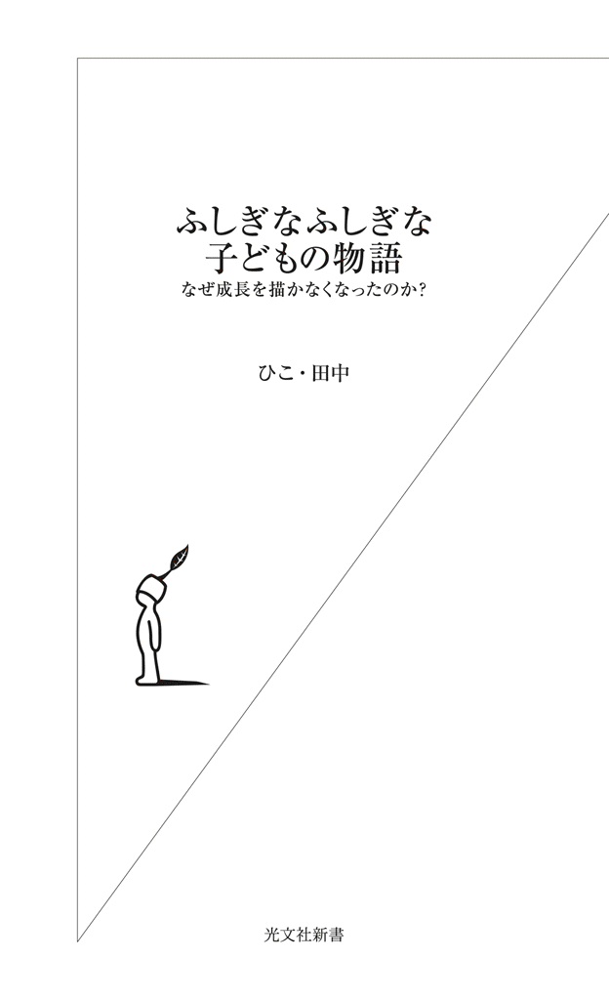
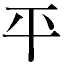

| ふしぎなふしぎな子どもの物語～なぜ成長を描かなくなったのか？～ (光文社新書) | |
| ひこ・田中 | |
| 光文社 (2011) | |

はじめに
子どもの物語を提供するメディアは数多く存在します。本、マンガ、テレビ、アニメ、ゲーム、携帯電話。
子どもが本を読まなくなったと嘆く声はよく聞かれますし、言葉でしか表せない、言葉だからこそ伝えられる物語も確かにあります。しかし、昔も今も一日の時間は同じなのに本以外にも物語を提供できるメディアが増えているのですから、読書時間が減るのは自然な現象です。
ですから、読書をして欲しい思いがあふれ過ぎ、他のメディアを非難したり排除したりするのが良い結果を生むとは思えません。むしろ物語が届けられるのなら、どんなメディアでもかまわないと私は思います。他のメディアが非難されたために、子どもが物語嫌いになることの方を私は恐れます。
何故なら人間には物語が必要だからです。私たちが現実世界にいることを認識できるのは、虚構世界である物語があるからですし、現実世界が苦しいとき、一時でもそこから待避し、休むことができるのも物語です。
二〇一一年三月一一日、震災が起こりました。被災した子どもたちも、それをテレビやネットで見ていた子どもたちも、予想もしなかった現実に傷つきました。今こそ、物語の力が必要です。
本書は、様々なメディアの子どもの物語に起こっている変化を眺め、新しい動向を探る、ささやかな試みです。
１章 テレビゲーム
＊変わる、テレビへの感覚
テレビゲームで物語性の高いジャンルといえばロール・プレイング・ゲーム（ＲＰＧ）ですが、その前にテレビゲームと子どもとの関わりについて少し振り返っておきます。
子ども向けのテレビゲームとして最初に広く認知されたのは、〝ファミコン〟こと『ファミリー コンピュータ』（任天堂、一九八三年）です。
先行して『カセットビジョン』（エポック社、一九八一年）や、『ぴゅう太』（トミー〈現タカラトミー〉、一九八二年）が発売されていますが、一世を風靡し、ゲームの繁栄の基礎を築いたのはファミコンです。
テレビゲームは子どもたちのテレビへの感覚を変えました。それまでのテレビ（一九五三年初放映）は受け身で、ただ眺めるものでした。ところが七〇年代後半のビデオの普及によって、番組は録画して見たいときに見ることができるようになります。テレビは放送局が決めた時間にではなく、好きな時間に番組を見る道具へと変わったのです。
ですから『宇宙戦艦ヤマト』（一九七四年）世代の子どもは録画ができませんでしたが、『機動戦士ガンダム』（一九七九年）世代の子どもは録画して繰り返し見ることが可能でした。
このことは『ガンダム』世代以降とそれ以前を分ける要因の一つになりますが、それはまた別の話として、とりあえずここでは、ハード（テレビ）とソフト（番組）の分離が子どもたちにも意識されるようになったことを指摘しておきます。
そこに登場したのがファミコンです。
ファミコンをしているとき、テレビは番組を流すことも録画されたそれを映すこともできません。ただただ、ゲームというソフトを画面に映すためだけの道具となります。しかもビデオと違って、画面に映っている戦闘機や人物を動かしているのは自分なのです。これは子どもたちに価値観の転換をもたらしたと思います。
それまでのテレビは、何か楽しいものを届けてくれる夢の窓でした。私のような初代テレビっ子と違って、さすがに八〇年代の子どもたちは、テレビを神器のようには感じていなかったでしょうが、物心付いた頃から側にあって、様々な喜びを与えてくれるそれは、友達と言ってもいい存在です。
ところがファミコンは、テレビを、ただゲームを画面に映し出す道具に格下げしてしまいました。もちろん、人気番組を見たり、ビデオに撮ったりも相変わらず行われてはいましたが、別の使い方もできることを知ったわけです。
五三年に降臨したテレビは、三〇年後にファミコンを使うための道具へと変貌し、その神話性を完全に失いました。放送局が独占していたはずのテレビ画面を、自由に使えて気持ちがいい道具だと、子どもたちは実感するようになったのです。
コントローラーに関しても少し述べておきます。
コントローラーと本体とはケーブルで繫がっているだけですから、どんな姿勢でもプレイできます。寝転がっても、しゃがんでも、電気ゴタツに足を入れたままでもなんの不自由もありません。激しい操作が要求されるゲームなどでは、コントローラーを持った両手も体も、まるで踊ってでもいるように動かしながらプレイできます。
例えば、敵の砲撃を避けるために自機を急速に画面の左に移動させなければならない瞬間。それは、十字キーを左に押せばいいだけなのですが、コントローラーを握った両手も体も、自然に左に動いてしまいます。そのことによって確かに今自分が、そのゲームを動かしているのだという感覚を得られます。
ワイヤレス時代の今では当たり前なのですが、これはそれまでの受動的にテレビ番組を見る姿勢とは決定的に違う体験でした。
＊実は、喜んでいたのはお父さん？
『ファミリー コンピュータ』というのも絶妙なネーミングでした。
「コンピュータ」という言葉は、親にとって魅力的です。それ以前にヒットした『ゲーム＆ウオッチ』（任天堂、一九八〇年）の場合、電子ウォッチにゲームが入っているというのが、子どもが親を説得する材料だったのですが、今度はコンピュータを操る！ これは親心をくすぐるでしょう。
そして「ファミリー」。
ファミコン発売当時、ターゲットの子どもは、主に団塊の世代ジュニアでした。
団塊の世代は、戦前の価値観を残した親に育てられたにもかかわらず、戦後の混乱期に一瞬だけ成立した「民主主義」と「自由」を体験した子どもたちです。だから彼らが思春期にさしかかったとき、「親子の断絶」が話題になったのも当然の成り行きでした。団塊の世代とその親ほど、価値観の違う親子は、そういません。そうした団塊の世代が家族を形成するとき、自分と親とのようにではなく、同じ価値観を持った友達のような親子関係を築きたいと願ったとしても不思議ではないでしょう。
そこに登場したのが『ファミリー コンピュータ』。このネーミングに、彼らは財布の紐をゆるめたに違いありません。
ファミコンのターゲットはもちろん子どもですが、最初の年に発売されたソフトは見事に「ファミリー」向けを意識しているのがわかります。
【七月一五日発売】
『ドンキーコング』『ドンキーコングJR.』『ポパイ』
【八月二七日発売】
『五目ならべ 連珠』『麻雀』
【九月九日発売】
『マリオブラザーズ』
【一一月二二日発売】
『ポパイの英語遊び』
【一二月七日発売】
『ベースボール』
【一二月一二日発売】
『ドンキーコングJR.の算数遊び』
子どもには『ドンキーコング』『ドンキーコングJR.』『ポパイ』『マリオブラザーズ』で誘いかけ、お父さんには『麻雀』、家族で一緒に『五目ならべ 連珠』『ベースボール』。勉強の役に立つ『ポパイの英語遊び』『ドンキーコングJR.の算数遊び』も用意されています。
この戦略が間違っていなかったのは、ソフトの販売数の順位で確認できます（＊１）。
一位『ベースボール』（二三五万本）
二位『麻雀』（二一三万本）
三位『マリオブラザーズ』（一六三万本）
ファミコンが子ども向けのおもちゃだと思っていると、『マリオブラザーズ』が一位と予想してしまうのですが、結果は家族向けの『ベースボール』が一位で、お父さん向けの『麻雀』がそれに続きます。
当時の家庭の雰囲気がどんなであったかは、「思い出のファミコン（＊２）」の、「うちでは規制が厳しく、ファミコンは30分だけと決まって」いたけれど、『麻雀』だけは父親もやっているせいか、いくらやってもしかられなかったといった発言から想像できるでしょう。そしてそれは家族の団欒にもっとも貢献したそうです。
二年目のランキングは、『ゴルフ』（二四六万本）、『エキサイトバイク』（一五七万本）、『テニス』（一五六万本）、『Ｆ１レース』（一五二万本）、『４人打ち麻雀』（一四五万本）。
こうして並べてみると、これはお父さんのためのゲーム機ではなかろうか？ と思ってしまいます。
子ども専用ゲーム機を、「ファミリー」というネーミングと提供するソフトによって、〝友達家族〟の紐帯を維持するためのもののようにイメージさせ、親におねだりしやすくしたのがファミコンだったのです。
＊自分で自分を採点できる
ゲームセンターでしかできなかったゲームが家の中でできるようになったのも、子どもたちにとっては事件でした。
ゲームセンターは公的領域であり、いくら個人的なプレイであろうと、他人の目に曝され評価されます。そこにあるゲームには、これまでその筐体でプレイした人々の上位ランキングが表示されています。見知らぬ他人がたたき出したスコアへの挑戦が求められているのです。
しかしこれからは、他人の評価を受けたくない子どもも同じゲームをできるようになったのです。家の中で自分のペースでゲームの腕を磨き、学校で友達と語り合う喜び。「そんな努力は時間の無駄だ」との意見もあるでしょうが、その達成感は、決して無駄ではありません。
ファミコンは子どもたちに、テレビ画面を遊び場として解放し、上手い下手に関わりなくゲームを楽しむ機会を提供し、圧倒的支持を得ました。
やがてそこに、ゲームセンターからの移植ではなく、ファミコンのために作られたソフトたちが増えてきます。そのとき、誰に気遣うこともなく長い時間をかけてじっくり楽しむタイプのソフト、つまり物語性の高いゲームが求められていきます。
「ストーリー性があり、キャラクターを成長させながら、一定の目的をめざしてゲームのエンディングに迫る作品（＊３）」、ロール・プレイング・ゲーム（ＲＰＧ）です。
＊印象に残る物語性の高いゲーム
ファミコン二〇周年を記念して東京都写真美術館（＊４）で開催された「ファミコン生誕20周年 テレビゲームの展覧会 ［レベルＸ（エックス（＊５））］」で、思い出のソフトのアンケートが行われました。結果は、以下の通りです。
一位『ドラゴンクエスト そして伝説へ...』（エニックス、一九八八年）一四三七票
二位『スーパーマリオブラザーズ』（任天堂、一九八五年）一四二〇票
三位『マリオブラザーズ』（任天堂、一九八三年）八八七票
四位『ゼルダの伝説』（任天堂、一九八六年）八三八票
五位『ドラゴンクエスト』（エニックス、一九八六年）七七〇票
六位『ドラゴンクエストII 悪霊の神々』（エニックス、一九八七年）七五三票
七位『ファイナルファンタジー』（スクウェア、一九九〇年）六一四票
八位『ドラゴンクエストIV 導かれし者たち』（エニックス、一九九〇年）六〇四票
九位『ゼビウス』（ナムコ、一九八三年）五九〇票
一〇位『アイスクライマー』（任天堂、一九八五年）五四三票
『ドラゴンクエスト』が四本（ファミコンでリリースされたすべての作品）に、『ファイナルファンタジー』と『ゼルダの伝説』と、実に一〇本のうち六本がＲＰＧです。『ゼビウス』はシューティング・ゲームですが、これも細かな物語設定がなされています。
数あるジャンルの中で、物語性の高いゲームがいかに強く印象に残ったかがよくわかります。
＊元祖は「テーブルトークＲＰＧ」
元々のＲＰＧは七〇年代のアメリカで生まれました。日本では、テレビゲーム版をＲＰＧと呼ぶことが多いので、それと区別して「テーブルトークＲＰＧ」と言われているものです。
その名の通り、数人がテーブルを囲み、マスター役を中心として、それぞれがキャラクターとなり、与えられた冒険のクリアなどを目的に、共同で物語を進めていきます。最初の設定とルールは決まっていても、複数の人間がダイスを使って物語を進めるため、どんな物語が展開していくのかはわかりません。
普通、私たちが物語を読む場合、ページを繰りながらにしろ、画面を見ながらにしろ、一つの流れに乗って読み進んでいき、ラストに辿り着きます。作者が用意したラストシーンがあるからこそ、ハラハラドキドキ、時にはイライラしながらも安心して最後まで読み終えます。
私たちは主人公にシンパシーを感じたりはしますが、テーブルトークＲＰＧの場合のように、自らが登場人物の一人としての役割を持つことはありません。読者は物語の外部にいるのです。
ところがテーブルトークＲＰＧでは、人々が物語に参加してしまいます。すると確かに、物語を紡ぐ自由を得たかのようです。しかしそれは自分の思いのままになるわけではなく、複数の人間に共有されています。
ですからテーブルトークＲＰＧは、一人の作者によって作り上げられた安定した物語を楽しむのではなく、どう展開していくかわからない不安定さと、それを他者と共有することを楽しむ物語なのです。
その源流は、ベトナム戦争の泥沼化の中、反戦運動が広がっていたアメリカの若者たちの間でブレイクしたトールキンの『指輪物語（＊６）』です。
この作品は地球を舞台にしているとはいえ、神話や昔話から素材を得、トールキン自身が創作した壮大な歴史の一部を描いたものです。つまり、一人の作家によって構築された極めて安定性の高い物語世界です。にもかかわらず、いやだからこそかもしれませんが、テーブルトークＲＰＧは、全く方向性が逆の、複数の参加者による物語を構築しようとしたのです。
多くの場合、一つの物語は一人の作者によって描かれています。作者のみがその物語を自由に操る権利があり、作者の最大の義務は、どんな形にせよ読者を納得させるラストを用意することです。
テーブルトークＲＰＧの場合、マスターが存在するとはいえ、そうした作者の権利と義務を参加者でシェアしているといってもいいでしょう。
＊二つの自由
テレビゲーム版ＲＰＧの話に移りましょう。
テーブルトークＲＰＧは他者がいなければ物語が成立しません。ゲームブックを買って、一人で何役をこなすことも不可能ではありませんが、それはちょっとさみしいものです。
しかし集団でプレイするのが苦手な人もいるでしょう。
ならば、他者の代わりをパソコンにさせてはどうだろうか？ それがコンピュータＲＰＧと呼ばれるもの（＊７）であり、コンピュータではなくテレビゲーム機用に作られたのが、私たちにおなじみのＲＰＧです。
ＲＰＧには、テーブルトークＲＰＧのようなマスターはいません。もちろんメンバーもいませんし、物語を進めるための設定集もありません。主人公を動かすプレーヤー自身がマスターというわけです。
物語の設定はソフトが決めています。殆どは最後のボス・モンスターを倒して世界を平和に導けば終わります。プレーヤーは、様々な困難を乗り越え、謎を解き、最終場面へと辿り着く。その過程が物語なのです。
それではテーブルトークＲＰＧのように他者と物語を作っていく楽しみがないといわれればそうなのです。物語も予め用意されたものを辿っていくだけです。
しかしそれでも、先のアンケート結果にあったように、ＲＰＧは子どもたちの心に強く印象付けられています。何故か？
一番大きいのは、物語を自らが動かしているかのような感覚を得られる点でしょう。受け身で読む小説、受け身で見るアニメとは違う自由が、そこにはあるように感じられたのです。その自由さは今では当たり前のことですが、当時は画期的でした。
今更の話でしょうが、あらためて二つ確認しておきましょう。
＊自由に名前を付けられる
一つめは、主人公の名前を自由に付けられること。
自分の名前を与えれば、ゲームの中の登場人物たちは、主人公をプレーヤーの名前で呼んでくれます。それに対して、現実とゲームの区別がつかない子どもが出てくるといった批判も生まれてきました。そんなことは全くないとは言えないでしょうが、子どもだって、その主人公が自分とは別人格なのはわかっています。ですから、自分ではないゲーム上のキャラクターが自分と同じ名前であるという、これまでの物語ではなかった新しい感覚を喜んだと考えた方がいいでしょう。
つまり、子どもたちは自由に主人公を動かしてはいますが、それはコントローラーを使ってのことですから、自分とは別の存在であることは強く意識されています。にもかかわらず、旅で出会う人たちから主人公が自分の名前で呼ばれる。自分とは別の存在が自分と同じ名前で呼ばれる。物語の外にいるのに、中にもいるような不思議な感覚です。
そして、作者ではなく自分が名付けた主人公である限り、その運命への責任といったものも生まれてきます。
何度死んでもリセットできるから、死を軽く扱うようになるというより、むしろリセットしてしまった事実をリセットすることはできないのですから、それはミスとして記憶され、死なせないためにどうすればいいかが学習されると考えた方が自然です。
これは、子どもがそれまであまり体験したことがない事態です。自分の名前は自分で選んだわけではありません。子どもは自分の名前が、両親や祖父母などから与えられたものだと知っています。どんなに好きな名前であろうと、嫌いな名前であろうと、子どもは基本的に自分の名前を選ぶことはできません。
子犬や子猫を飼うことになったとき、名付ける権利を与えられて拒否する子どもはまずいないでしょう。何者かに名前を与える行為は、それにアイデンティティを持たせる第一歩であり、その責任をまかされるのですから。
ＲＰＧで主人公に自分の名前を付ける行為は、名付ける権利を与えられる点では、犬や猫と変わりありません。でもまさか、犬や猫に自分の名前を付ける子どもはいないでしょう。が、ＲＰＧの主人公に自分の名前を付けることはあります。どんな名前でもいいのに、主人公に自分の名前を付ける子どもは意図的です。親から与えられた名前を物語の主人公へと受け渡すことで、自己の相対化をはかる儀式だともいえます。自らの意思で主人公に自分の名前を付け、彼を操ること。そうした行為が可能なのがＲＰＧなのです。
一方、おふざけで名付ける子どももいます。中古で買ったカセットのソフトには、前のプレーヤーのセーブデータがあり、そこには「ポンタ」だとか「ぴょんきち」だとかの名前が残っていたりします。世界を救う勇者は、物語の中でそうした名前で呼ばれていたわけです。シリアスな物語であればあるほど、まじめなセリフが吐かれれば吐かれるほど、その滑稽度は増します。ソフトは確かにオリジナルの物語であるにもかかわらず、すでにパロディのような様相を呈してしまうのです。これは、物語を自分自身が制御している気分を子どもたちに与えることでしょう。
この固有名詞に関しては、もう少し遊んでみることもできます。主人公の名前を代名詞にするのです。三人称にすると、脇役が主人公を呼ぶとき、まるで他の人のことを話しているかのようになります。「君はどう思うのだ？」が「彼はどう思うのだ？」になってしまうわけです。一人称にするともう、混乱の極みとなります。「私はどう思うのだ？」という風に、一体誰が誰のことを話しているのかわからなくなるのです。
ＲＰＧは、プロローグなどのごく一部を除いて、登場人物たちの会話によって物語が進展していきます。にもかかわらず、その会話を成立させるための根幹である固有名詞や人称が、プレーヤーによって簡単に不安定にさせられる可能性を持っています。
＊主人公を自由に操れる
二つめは、主人公を自由に操れること。
必要もないのに、町中をぶらついたり、店を訪れたりできる気楽さは案外重要です。強制されることなく物語を楽しんでいる雰囲気とでも言えばいいでしょうか。
すでに訪れた町へ戻ることも可能です。ごく一部のソフトを除いて、最初からどこへでも移動する自由があるわけではなく、行ける町は物語の進展に従って増えていくだけです。その意味では、物語を制御する権利は作り手の側にあるのですが、それでも、物語を進めるのを一時中断して、以前に事件を解決した懐かしい町を再び訪れてみることはできます。
しかも、よく作り込まれたソフトなら、再訪したとき住民のセリフが変わっていたりもします。それを聞かなければ物語が進まないわけではありませんが、聞いてもいい自由。
小説が、最初から最後までページを繰っていくことで読了できるのとは違って、せかされないわけです。
時には、主軸の物語と関係のないエピソードもあります。それが展開する町を訪れなくとも、ゲームを最後まで進めることはできます。できるだけ速くクリアしたい子どもの方が圧倒的に多いのですが、彼らもこうした枝葉の存在は知っています。ですから、真っ直ぐ本筋の物語を進むときは、関係のない町に立ち寄らないという選択をしているのです。
これらの自由さも作り手によって予め織り込み済みではあるのですが、それでもプレーヤーである子どもにとって、自分の好きにしていいと思える状態は、とても心地よいものでしょう。
日頃、子どもたちは親や教師から、様々な禁止事項を通達されています。あれしちゃだめ、これしちゃだめ、こうしなさい、こうした方がいい、まだ子どもだから言うことを聞きなさい、等々。その多くは彼らを安全に遇するために必要な措置でもあるのですが、言われる当事者にとっては、鬱陶しいのもまた事実です。
そんな日々の中、ある程度彼らの自由に任されているかのようなＲＰＧの物語が魅力的に見えたとしても、なんの不思議もありません。しかも最終的には小説などと同じように、ちゃんと結末を用意してくれています。すべてが自由すぎて道に迷ってしまうことはない安心感もあるのです。
＊ドラクエとＦＦ
最も人気のあるＲＰＧと言えば、『ドラゴンクエスト』と『ファイナルファンタジー』（共にスクウェア・エニックス）です。
売り上げ本数を見てみましょう。
ゲーム機は色んな種類のものが発売され、人気のソフトの場合は、新しく出た別のゲーム機用に再発売されることがよくあります。ですから、売り上げ総本数を見るにはそのすべてを足さなければならないのですが、ここでは最初にそのソフトが発売されたゲーム機、値段（税抜）、発売日、最初のゲーム機における販売数を示します（＊８）。
『ドラゴンクエスト』（ファミコン版、五五〇〇円、一九八六年五月二七日、一四九万本）
『ドラゴンクエストII 悪霊の神々』（ファミコン版、五五〇〇円、一九八七年一月二六日、二四一万本）
『ドラゴンクエスト そして伝説へ...』（ファミコン版、五九〇〇円、一九八八年二月一〇日、三八〇万本）
『ドラゴンクエストIV 導かれし者たち』（ファミコン版、八五〇〇円、一九九〇年二月一一日、三〇四万本）
『ドラゴンクエストＶ 天空の花嫁』（スーパーファミコン版、九六〇〇円、一九九二年九月二七日、二八〇万本）
『ドラゴンクエストVI 幻の大地』（スーパーファミコン版、一万一四〇〇円、一九九五年一二月九日、三二〇万本）
『ドラゴンクエスト エデンの戦士たち』（プレイステーション版、七八〇〇円、二〇〇〇年八月二六日、四一七万本）
『ドラゴンクエスト 空と海と大地と呪われし姫君』（プレイステーション２版、八八〇〇円、二〇〇四年一一月二七日、三六一万本）
『ドラゴンクエストIX 星空の守り人』（ニンテンドーＤＳ版、五六九五円、二〇〇九年七月一一日、四一五万本）
本に関係している人間としては、この数字にため息が出ます。本数もすごいのですが、一本の値段が単行本の五～一〇倍なわけですから、豪華本が毎回トリプルミリオンセラーになっているようなものです。
一作目の『ドラゴンクエスト』は、すぎやまこういちによる勇壮な曲が流れるオープニングの表示が終わり、主人公に名前を付けた後、画面は王様の部屋となります。主人公に王が話しかけます（名前を「ひこ」にしておきます）。
「おお、ひこ！ ゆうしゃ ロトのちをひくものよ！ そなたがくるのを、まっておったぞ」「その むかし ゆうしゃロトが カミから ひかりのたまをさずかり まものたちをふうじこめたという」「しかし いずこともなくあらわれた あくまのけしん りゅうおうが そのたまを やみにとざしたのじゃ」「このちに ふたたびへいわをっ！ このちに ふたたびへいわをっ！」「ゆうしゃ ひこよ！ りゅうおうをたおし そのてから ひかりのたまをとりもどしてくれ！」
すべてひらがなですが、「さずかり」「ふうじこめた」「いずこともなくあらわれた」「けしん」などの言葉使いから、低年齢層向けの作品ではないのがわかります。ひらがなだけなのは、ソフトの容量のためです（『ドラゴンクエスト』は五一二キロバイトで作られています）。
年少者のようにひらがなで読まなければならないことは、子どもにとってあまり心地よいものではありませんが、それでも新しいメディアの誕生に立ち会っている興奮は、失せませんでした。
＊主人公が一言もしゃべらない物語
さて、これから訪れる町や村で、情報収集をしなければなりません。その場合、普通の会話では「何々のことをお尋ねしたいのですが」とこちらから切り出すことになりますが、『ドラゴンクエスト』の場合、主人公はいっさい言葉を発しません。相手と接触させてＡボタンを押すと、相手が話し始めます。
これはソフトの容量制限もあるでしょうが、ゲームデザイナーである堀井雄二の考え方でもあります。
もし主人公のセリフも画面に現れると、プレイする子どもは、自分と主人公は別の存在であるというわかり切ったことを常に意識しなければなりません。だから話さないことで、主人公との距離を子どもができるだけ感じないようにしたいというわけです。
モンスターとのバトルシーンもまた、そのことをうかがわせます。画面には敵のモンスターたちだけがこちらに向かった姿で描かれます。彼らはモニタの向こうから主人公とプレイしている子ども自身を襲ってくるかのようです。
つまり『ドラゴンクエスト』は、プレイする子どもに徹底的に寄り添っているのです。
シリーズを追うごとにモンスターの動きがリアルになったりはしますが、この方針だけは容量を気にする必要のなくなった七作目でも全く変わっていません。３Ｄとなった八作目ではさすがにそういうわけにもいかず、バトルシーンに主人公が登場しますが、言葉を発しない方針は貫かれています。
主人公が一言もしゃべらない物語。小説でもそれは可能でしょうが、その場合でもナレーターが存在しなければなりません。ところが『ドラゴンクエスト』シリーズでは、「そして夜が明けた」というように、場面が切り替わるときにわずかながらナレーションがありますが、主人公の描写などはありません。つまり、感情の動きや内省、思想など、普通主人公を形作るためのものが見えないのです。
考えてみれば、これは驚くべきことです。近代小説を成立させている主人公の自我が読み取れないのですから。
小説において作者が神のように振る舞えるのは、主人公を制御し、時には主人公と格闘し、物語を進めていくからですが、堀井雄二はその部分をもプレイする子どもにあずけています。
竜王を倒すことを使命にして冒険の旅を続けていき、最後には目的を果たす。このストーリーラインは堀井が握っています。その代わり、冒険の旅の途次や目的を果たしたとき、主人公がどう考え、どう感情を動かしたのかは、君が想像しなさい、それがどんなものであろうと君がそう解釈したのならそれでいいのです、ということなのでしょう。
＊ＲＰＧの経済学
お金（『ドラゴンクエスト』での単位はゴールド）に関して少し触れておきましょう。
それは主にモンスターとのバトルで得られます。
最初に得られるお金は、王様の部屋の宝箱にある一二〇ゴールドです。冒険に旅立つ前に村で装備を調えようと店に入りますが、それで買えるのはこん棒と布の服だけです。そこでフィールドに出て、モンスターと戦ってお金を集め、もっと強い武器と防具を買い揃える。これがまた、子どもたちには楽しい作業なのです。おおげさに言えばＲＰＧの経済学です。
村の周辺のモンスターを倒しても一ゴールドしか手に入りません。最初の村で売っている「どうのつるぎ」は一八〇ゴールドもしますから、膨大な数のモンスターを倒さなくてはなりません。しかし村から少し離れた場所に行くと強いモンスターがいるので、四ゴールド手に入ります。が、相手の攻撃で受ける主人公のダメージは大きく、村に戻って宿に泊まり体力を回復する必要が、弱いモンスターの時よりも多くなります。もちろん宿屋は無料で泊めてはくれません。最初の村だと六ゴールドです。しかも負けた場合は、それまで貯めたお金が半分に減ってしまいます。
さて、弱いモンスターとバトルをしてダメージを少なくし、その代わりお金は少ししか入ってこないのと、お金は多く入ってくるが、ダメージが大きいので宿泊代がかかり、時には持ち金が半分になるのと、どちらを選ぶか？
次に、そのお金で何を買うべきか？ で子どもは悩みます。武器や防具はできるだけ強いのが欲しい。隣の町では、現在持っている武器や防具より、少し強いものを売っています。それを買えるくらいのお金が貯まっても、弱い武器や防具のまま我慢してお金をもっと貯めれば、次の、次の町でもっともっと強いのを買えるかもしれない。どっちの方がいいだろう？
これは普段、小遣いの使い道で悩むのと同じです。
でも、ゲームの場合、お金は自分で戦って稼ぐことができます。散財をしてしまったらまた稼げばいいのです。しかしそうすると、ゲームを進めるスピードが遅くなってしまいます。無駄遣いをすると、ちゃんと自分に跳ね返ってくる。学校に塾にと忙しい子どもにとって、これは楽しくも悩ましいことなのです。
＊「経験値」という概念
物語を先に進めるには、より強い武器や防具も必要ですが、主人公自身も強くなっていかなければなりません。バトルでお金と一緒に手に入るのが経験値です。強いモンスターを相手にすれば、たくさんの経験値が入りますが、こちらが弱ければ負けてしまいます。物語の進展に従って、つまり主人公の強さに比例してモンスターも強くなっていきます。こっちが弱いときは弱いモンスターで、強いときは強いのですから、結局はいつも同じ危険度でバトルをしているだけなのですが、それを強くなったと思えるようにしてくれる魔法の数値が、経験値です。
経験値は『ドラゴンクエスト』が発明した概念ではないものの、多くの子どもはこのゲームで知りました。
現実世界には「偏差値」があります。これは上がったり下がったりします。でも、「経験値」は違います。下がることがなく、バトルをすればするほど強くなることが保証されていて、どんなバトルも決して無駄ではありません。
「人生は山あり谷ありだ」とのご意見もあるでしょうが、そんなことは子どももわかっています。ですから、せめてゲームでは、右肩上がりの成長をしたいのです。
『ドラゴンクエスト』と違って、主人公が話すＲＰＧの場合、物語の途中で主人公がへこんだり悩んだり、アイデンティティ・クライシスに陥ったりすることがあります。しかし、立ち直れないかと思える状況であっても、戦いさえすれば経験値だけはちゃんと増えていきます。ですから、ほとんどのＲＰＧは、決して後ろ向きになることのない堂々たる成長物語なのです。
城があり、村があり、町があり、その中にはさまざまな人が住んでいる。フィールドには怖いモンスターがいるけれど、自分の力でそれらを倒せば、主人公は強くなる。道草をしてもかまわない。そうしたＲＰＧの物語世界を『ドラゴンクエスト』は子どもに見せてくれたのです。
ただし、そうではあっても、攻略本（＊９）には次のような言葉が書かれています。
「〈冒険の目安〉無謀な遠出はあまりに危険だ。自分のレベルにあった冒険を！」
＊子どもから大人へ
ここからは、シリーズの話になりますので、シリーズ全体を指す場合の『ドラゴンクエスト』は『ＤＱ』、一作目の『ドラゴンクエスト』は『ＤＱ１』と表記します。
『ＤＱ２ 悪霊の神々』（一九八七年）は続編で、『ＤＱ１』の一〇〇年後の世界が舞台です。
ある日、ローレシアの城に、傷付いた姉妹国ムーンブルクの兵がやって来ます。大神官ハーゴンが、邪神を呼び出し世界の破滅をたくらんでいて、彼の国が襲われたのです。
王様はこの危機を打開するために、主人公の王子を旅立たせる決心をします。
『ＤＱ２』を特徴付けるのは仲間です。主人公と同じく『ＤＱ１』の勇者の血を引くサマルトリアの王子とムーンブルクの王女。冒険を始める前に、まずこの仲間を探すことに物語は時間を割いています。
仲間を見つけてパーティを組むまでがいかに大変か、仲間が揃ったときの嬉しさや、協力して戦うことの面白さ。たった一人の勇者ではなく、三人がそれぞれの能力を活かし一致団結して協力していくのが『ＤＱ２』の姿勢です。
サマルトリアの王子を見つけた頃には、主人公はある程度強くなっています。ところが、王子はまだレベル１です。ムーンブルクの王女を見つけたときも同じです。ですから、バトルではまだ弱い彼らが倒れたりしないように気遣わなくてはなりません。そしてそれぞれの得意とするところをいかに活かしてやれるかが、勝敗の分かれ目となります。
自分（勇者）だけで戦っているわけではない安心感とリーダーとしての責任感。『ＤＱ１』が個の世界だとしたら、『ＤＱ２』はそこから一歩踏み出し、社会性を帯びてきます。自分が世界の中心ではなく、自分も世界の一員だとでも言えばいいでしょうか。たった一人で世界を救う負担も、仲間がいれば楽しくなるのを、子どもは知るのです。
物語が進み見知らぬ大陸にようやく辿り着くと、『ＤＱ１』をプレイした子どもなら、どこかで見たような地形が広がっているのに気づきます。それは前作で勇者が救った世界です。竜王のいた城まで行くとそこには彼の子孫がいますが、敵ではなく友好的です。宝箱には世界地図があり、前作で世界のすべてだと思っていたのが、実は世界のほんの一部の地域であったことがわかります。あれほど必死になって戦っていた世界が、こんなに小さかったなんて！
三作目『ＤＱ３ そして伝説へ...』（一九八八年）。
主人公の父親は勇者でしたが、魔物たちとの戦いの末に帰らぬ人となっています。母親によって勇敢な男に育てられた主人公は、一六歳になったとき、王様に冒険の旅に出ることを願い出、魔王バラモスを倒す任務を与えられます。これもまた、起こっていることと任務は、前二作とほぼ同じです。
ただし、仲間は前作のように血縁者ではなく、酒場に行って「戦士」「魔法使い」「僧侶」「武闘家」「商人」「遊び人」の中から三人（男女）を雇うのです。好きな名前を付け、好きなキャラクターを作ることができます。どの職業の仲間を選ぶかで、これからの冒険のやり方が変わってくるのです。
『ＤＱ３』で新しく付け加えられたシステムは、『ウィザードリィ』（一九八一年）で使われた「転職」です。
転職すると前職で覚えた呪文などは残りますが強さは半分になってしまいます。とても弱くなりますから、転職させるにはかなりの勇気がいります。それでも、魔法使いの攻撃呪文と僧侶の間接魔法（攻撃力を強くしたり、体力を回復させる補助タイプの魔法）を使えるようになります。転職にはデメリットだけではなくメリットもあるのです。それは、大人社会の現実を映しています。
「たった一人の戦い（自分が世界の中心）」（ＤＱ１）から、「仲間とのパーティ（自分を社会の中の一員と知る）」（ＤＱ２）へ、そして、「メリットとデメリットは必ずあり、どれを選択するかは自由だが、それは自己責任を伴う（自分と世界の関係）」（ＤＱ３）と、このシリーズは子どもの成長をそのままなぞるように変化していきます。
四作目『ＤＱ４ 導かれし者たち』（一九九〇年）。この作品は副題に示されているように、様々な人が運命に導かれて出会い、仲間となって冒険に向かうという構成を取っています。
五章のうち四章までは、仲間となる人物たちが主人公と出会うまでにどのような人生を歩んできたかが描かれます。
戦士のライアン、王女でありながら世界一の武闘家をめざすアリーナ、その従者で魔法使いのブライ、同じく従者で神官のクリフト、武器商人のトルネコ、踊子のマーニャと占い師のミネア姉妹。この七人が四つの物語を経て、勇者と巡り会います。
『ＤＱ４』は、主人公以外の登場人物たちも、それぞれに物語を持っている。つまり、人はそれぞれ、自分自身の物語を持っていることを伝えるところから始まるのです。勇者になりきる前に、仲間たちのそれまでの物語をたっぷりと体験することで、第五章で、勇者としてプレイしていても、集まってくる仲間たちへの思い入れが生まれています。パーティの仲間は勇者の手下ではなく、みんなそれぞれの人生の中で彼と出会い、行動を共にしているのだと。
＊「結婚」「家族」、そして「自由」
『ＤＱ４』までで、このシリーズは、子どもから大人への道筋を描きました。となると、『ＤＱ５ 天空の花嫁』（一九九二年）は？
オープニング、城で王様パパスに息子が生まれます。プレーヤーが彼に名前を付けると、いつものタイトル画面になって、物語が始まります（女の子の名前を付けるとおもしろいセリフを聞けますよ）。
場面は一転し、船の中。長旅を終えて、サンタローズ村に帰ってくる父パパスと息子がいます。何かの目的があって旅をしているようなのですが、わかりません。パパスは王様であったはずなのに？
主人公は父パパスの庇護のもと成長していくのですが、ある事件で、主人公が人質となったために抵抗できないパパスが殺されます。
時が過ぎ、青年になった主人公は、幼なじみのビアンカとヘンリーと共に旅を続けます。その後主人公は、冒険を進めるのにどうしても必要な宝物を持っている町の富豪から、娘のフローラと結婚してくれと言われます。フローラも主人公を好いています。そして幼なじみで、ずっと一緒に旅をしてきたビアンカも。さあ、どちらと結婚するのか？
おてんばなビアンカとおしとやかなフローラ。プレイする子どもは悩みます。いくら宝物が欲しいからといって、幼なじみを振ってお金持ちの娘と結婚するのはいかがなものか？ しかし、ビアンカを選ぶと物語の進展が遅くなるのではないか？
小説では成立しない悩みです。
そして結婚すると、双子（男女）の子どもが生まれ、冒険の旅は家族の物語にもなっていきます。たった一人の冒険から始まったこのシリーズは、五作目で結婚を経て、親子三代の物語を紡ぐのです。
「結婚」、そして「家族」を描いた後、『ＤＱ６ 幻の大地』（一九九五年）のテーマは何になるのか？ と楽しみにしていたら、どこかで堀井雄二が「自由」と述べていました。「結婚」、そして「家族」の次は「自由」なのかと、妙に納得したのを覚えています。
プロローグで主人公たちは、世界の支配を企む魔王ムドーと対決して敗れますが、家のベッドから転げ落ちて目覚めます。さっきの対決は夢だったのです。
その後主人公は、地面に開いた穴から彼が暮らしている世界の下にある別世界に落ちてしまいます。こうして彼は上の世界と下の世界を行き来し冒険を続けます。ところがやがて、プロローグの出来事は夢ではなく現実だったことがわかります。
実は話は逆で、冒険を続けていた主人公と、彼が生きていた上の世界こそが、下の世界の夢だったのです。
先ほど述べたように、このシリーズは主人公の自我の部分をプレイしている子どもに任せているのですが、『ＤＱ６』で堀井はそこを揺さぶります。君が信じていることだけが真実であるとは限らない、と。
その後、物語では夢の部分の自我と、現実のそれとが統合していき、世界の支配を企む魔王ムドーとの対決へと向かう、いつものパターンとなります。
そうそう、転職の中に「勇者」が入っていることも付け加えておきましょう。すでにもう、主人公＝勇者ではないのです。
『ＤＱ』シリーズは子どもに、社会・世界との関わり方を、わかりやすいところから少しずつ伝えていきました。ところが、『ＤＱ７ エデンの戦士たち』（二〇〇〇年）で変化を見せます。
とはいえ、これは『ＤＱ』だけでなく、ライバルである『ファイナルファンタジー』も含めたＲＰＧの描く物語が、この頃から変化を見せていることと共振していますので、『ファイナルファンタジー』を先に見ておきましょう。
＊『ＤＱ』と『ＦＦ』、スタンスの違い
ＲＰＧ世界において『ＤＱ』と人気を二分するのが、『ファイナルファンタジー』（以下『ＦＦ』）です。最初に発売されたゲーム機、発売年、最初のゲーム機での販売数を順に示します（＊８）。
『ＦＦＩ』（ファミコン版、一九八七年、五二万本）
『ＦＦII』（ファミコン版、一九八八年、七六万本）
『ＦＦ』（ファミコン版、一九九〇年、一四〇万本）
『ＦＦIV』（スーパーファミコン版、一九九一年、一四四万本）
『ＦＦＶ』（スーパーファミコン版、一九九二年、二四五万本）
『ＦＦVI』（スーパーファミコン版、一九九四年、二五五万本）
『ＦＦ』（プレイステーション版、一九九七年、三二八万本）
『ＦＦ』（プレイステーション版、一九九九年、三六九万本）
『ＦＦIX』（プレイステーション版、二〇〇〇年、二八二万本）
『ＦＦＸ』（プレイステーション２版、二〇〇一年、二三五万本）
『ＦＦXI』（二〇〇二年、オンラインゲーム）
『ＦＦＸ‐２』（プレイステーション２版、二〇〇三年、二〇〇万本）
『ＦＦ』（プレイステーション２版、二〇〇六年、二三二万本）
『ＦＦ』（プレイステーション３版、二〇〇九年、一八五万本）
『ＦＦ』（二〇一〇年、オンラインゲーム）
発売年を見ればわかるように、かなり定期的にリリースされています。『VI』と『』の間が開いているのはハードを任天堂からソニーに移したからですし、『Ｘ‐２』と『』の間はシナリオライターの途中降板などが影響しています。
発売日延期がお約束のような『ＤＱ』とのこの違いはどこからくるのでしょう。
おそらくそれは、『ＤＱ』が堀井の個人的な作品の色合いが濃く、『ＦＦ』は、ディレクター兼原案を坂口博信が受け持っているとはいえ、作品ごとにシナリオライターが存在しているように、スクウェアという会社の作品であることによると思われます。
『ＤＱ』が堀井による小説だとすると、『ＦＦ』は坂口指揮下、集団で作り上げる映画と言えばいいでしょうか。
『ＤＱ』はそれぞれ主人公の違う物語ですが、子どもの成長に寄り添った形で展開する、一人の作家による成長物語とみなすことができます。一方『ＦＦ』は、一作ごとにバトルシステムも成長の仕方も物語の世界観も違っていて、同じシリーズとは思えないほどです。『ＤＱ』はシリーズのどれかをプレイした子どもなら、他の作品も簡単にプレイできますが、『ＦＦ』は毎回新たに学習する必要があります。
例えばレベルアップ。『ＤＱ』のようにオーソドックスなシステムもあれば、人物のレベルアップは存在せずに、持っている武器や防具、魔法が、使えば使うほど強くなっていくシステム、経験値はなく、攻撃されることで鍛え上げられていくシステムなどがあります。
最後の例だと、誰に攻撃されてもいいのですから、一番手っ取り早く強くする方法は、仲間同士で戦わせることです。もちろん制作者側は内ゲバを推奨してはいなかったでしょうが、プレイする子どもたちはなんでも考えつくものです。
『ＤＱ』は、基本的に主人公に名前はありませんが、『ＦＦ』は、主人公が四人である『Ｉ』と『』を除いて、予め名前が付けられています。自由に名前を変えられはするのですが、自分が最初に付けるのと、名前を変えるのとではその意味は大きく違ってきます。『ＤＱ』は、プレイするあなたも物語の一員だと呼びかけ、『ＦＦ』はどちらでもいいよと言っているのです。そして『』では名前を変更できません。
『ＦＦ』は、プレイする子どもが主人公になったつもりになることから、なるべく距離をおこうとしているようです。
このことは、３Ｄになる前（『VI』まで）のバトルシーンからも見て取れます。
『ＤＱ』と違って、『ＦＦ』は横から眺めるようになっています。モンスターたちはモニターの左側に縦一列に並び、主人公たちは右側に縦一列に並びます。子どもは一緒にバトルに参加しているというよりも、主人公たちを横から眺めているのです。そして主人公は言葉を発します。「物語に参加せよ」という『ＤＱ』に対して、「物語を見よ」という『ＦＦ』です。
＊サブタイトルの不在
ゲームタイトルもまた、『ＦＦ』は特異です。『ＤＱ』なら「天空の花嫁」（Ｖ）、「幻の大地」（VI）などと必ず存在するサブタイトルがなく、通しナンバーだけが振られています。
同じ登場人物、同じ世界観、同じストーリーならともかく、毎回違う物語（『』と『Ｘ』のように多少関係を匂わせるものはありますが）、違うシステム設定でありながら同じメインタイトルであり、しかし個々の物語のテーマを窺わせるサブタイトルがないのです。
制作会社の都合で、今一番力を注いでいるＲＰＧに『ＦＦ』というブランド名を付けているだけなのかもしれませんが、プレイする子どもは、個々の物語を、『』だとか『Ｘ』といった番号で記憶することになります。
ゲームの場合、発売前からかなり情報が流されており、多くの子どもが物語設定もバトルシステムもすでに知っているので、『Ｖ』と『IX』を間違えることはないのですが、個々の作品が帯びるタイトルからのオーラといったものはそこにはありません。
「Ｍの小説の『Ｉ』から『』って、カート・ヴォネガット風だったけど、『Ｖ』でちょっと変わったね。でも『Ｘ』なんか読むと、結局Ｍの中にある父殺しへの畏れがまだ終わってないってことなのかな」といったセリフを想像すれば、その無機質さがよくわかります。
通し番号が割り振られる別々の物語たち。それが子どもたちの「物語」に対するイメージや、「物語」との向き合い方にどんな違いを与えたのかははっきりとわかりませんが、個性あるタイトルという鎧をはがされ、むき出しとなった別々の物語が、『ＦＦ』というブランド名で強固に補強されているのは、とても奇妙な風景です。
＊チラつく『ＤＱ』の影
『ＦＦＩ』は「暗黒に包まれた世界に住む人々は、やがて四人の光の戦士が現れるという予言を信じていた」といった内容のナレーションで始まるオーソドックスなものです。
個性のない四人一組の主人公たちは、王様に会って、姫様を救って欲しいと頼まれます。なるほど、それがこのゲームの最初の山だなと思い、必死で戦い続け、ようやくドラゴンからお姫様を救い出すと、なんとそこでスタッフロールが出てきます。つまり、結構がんばって救い出したら、そんなことはこのゲームのプロローグに過ぎないのだよと宣言されてしまうのです。
また、『II』では、開始早々四人のパーティが敵と戦って全滅し、啞然とします。最初弱くても、同じように弱いモンスターたちとひたすらバトルをして成長していくのが楽しみでワクワクして買ってきたのに、『ＦＦII』は、のっけから敗北を見せます。その無力感からどう成長していくかが物語の重要な課題となるのです。
こうした初期の『ＦＦ』を見ていると、いつも『ＤＱ』の影がチラつきます。『ＦＦ』という独自の作品ではなく、『ＤＱ』ではない何かという存在。
しかし、そのことによって、『ＦＦ』の名の下に様々なことが試みられ、結果的にＲＰＧの幅が拡がったのは間違いないでしょう。
＊「中世ヨーロッパ騎士物語風」からの脱却
とはいえ、忍者や侍まで出すことで差別化を図りながらも、『ＦＦ』の物語設定自体は『ＤＱ』と同じように中世ヨーロッパ騎士物語風でした。
それが変わったのが『VI』（一九九四年）です。時期的には、『ＤＱＶ 天空の花嫁』（一九九二年）から二年後、『ＤＱVI 幻の大地』（一九九五年）の一年前となります。
魔法はすでに滅び、その力を魔導として使う魔導アーマーを兵器とすることができたガストラ帝国が、世界を手に入れようともくろんでいます。精神をコントロールされて魔導アーマーに乗り込む少女ティナは、強大なエネルギーを発することができます。というのも、何故か彼女は本物の魔法が使えるのです。盗賊ロックによって救い出された彼女は、仲間と共に、自分が何者なのかを探り、そして世界を救う旅に出て行きます。
この物語では、蒸気機関をエネルギーに使う都市や、機関車などが出てきて、魔法と一九世紀が入り交じったような、それまでの作品とは違う風景が描かれています。
また、敵も、魔王や竜などではなく、世界の滅亡だけを欲望する狂った魔導師になっています。人間対悪の化身ではなく、人間の持つ欲望との戦いなのです。そのためか、ティナの仲間となる一三名の背景も丁寧に描かれています。
この作品をきっかけに、『ＤＱ』の呪縛から解かれたように、『ＦＦ』は次々と新しい世界を描き出していきます。
世界を支配するのが巨大企業である近未来的『ＦＦ』（一九九七年）。主人公の学園生活から始まって、宇宙ステーションまで登場するＳＦ的『ＦＦ』（一九九九年）。エコロジカルファンタジー風の『ＦＦIX』（二〇〇〇年）。
『ＤＱ』シリーズが主人公たちの愛と勇気によって世界の平和を取り戻す冒険物語を描き続けている一方で、『ＦＦ』は自分探しや、裏切りや、死をも描こうとしていきます。
＊時代の物語
二〇〇〇年、『ＤＱ エデンの戦士たち』が五年半ぶりに発売されます。ハードをスーパーファミコンからプレイステーションに変えて大容量なＣＤを使っているにもかかわらず、中世風の舞台やフィールド風景など、何も変わっていません。
しかしゲームをスタートしたとたん何やらおかしい。主人公の少年は王子様と二人でフィールドに出ます。ここまではいつもとそんなに変わりません。弱いモンスターたちと戦ってレベルをあげ、王様の依頼で冒険の旅に出るのだろう......。が、歩いても、歩いてもモンスターが出てこないのです。何故だ？
王様や町の人々の話でわかってきます。この国は平和で、モンスターもいないとても安全なところなのです。そんなアホな。ならばここには、勇者になるべき冒険の旅はない？ もちろんそうではなく、あちこち探索している内に、主人公たちは色んな場所で台座を見つけ、その中に入ると見知らぬ島にワープします。
そこはもうおなじみの『ＤＱ』ワールドです。歩けばたちまちモンスターが襲ってきます。歩き回り、困っている村や町があれば、ボスを倒し平和を取り戻します。人々に感謝されて、自分たちの世界に戻る。すると王の元に知らせが届き、新しい島が発見されたことがわかります。それはさっき主人公たちが問題を解決してあげた島です。彼らが訪れたのはその島の過去の世界だったのです。こうして、次々と島が発見され、世界地図ができあがる。まるで大航海時代のようです。
最終的にモンスターたちは主人公のいる世界にも現れるようになりますが、それはかなり先のことです。
これまでの物語は、目の前に世界の危機が迫っているから、主人公が冒険し、戦い、成長していくというわかりやすい理由がありました。しかし『ＤＱ』では、そうした目的もわからないまま物語は進んでいくのです。プレイする子どもは、現実世界からＲＰＧの世界の主人公を操って冒険するはずが、その主人公もまた、冒険するために自分の現実世界とは別の世界に出かけていくのです。
何故わざわざ、こんなに面倒な手続きを踏むのか？
おそらくそれは、このＲＰＧの王道を歩んできたシリーズでさえ、それまでのような成長物語を描きにくくなっているからです。
『ＤＱ 空と海と大地と呪われし姫君』（二〇〇四年）では、呪いによって馬に変えられた姫とカエルに変えられた王を元に戻すための旅が語られていきますが、その設定からも窺われるように、様々な昔話のパロディが使われています。そして、何か決めかねているような落ち着きの悪いサブタイトルからも、これまで『ＤＱ』が描いてきた成長物語へのためらいが感じられるのです。
一方『ＦＦＸ』（二〇〇一年）はどうか？
主人公のティーダは、舞台となる都市・ザナルカンドの人気スポーツであるブリッツボールのスター選手。彼の父親はティーダが及びもつかないほどの名選手でしたが、一〇年前に姿を消したままです。
試合前、突如怪物（シン）が出現します。逃げまどうティーダは、かつてあった文明が失われた、一〇〇〇年後の世界にワープ。そこにはシンがいて、たびたび人々を襲います。
シンは、一〇年前に召喚師ユウナの父親である大召喚師ブラスカによって倒されたのですが、力を蓄えて必ず蘇ってしまうのです。シンを倒すことができるのは大召喚師だけ。大召喚師とは、世界各地に眠っている怪獣たちを探し出し、自由に操ることができるようになった人のことです。ユウナは父親の遺志を継いで今まさに、大召喚師となるべく修行の旅に出ようとしています。
ティーダは、シンを倒せば自分が生きていた一〇〇〇年前に戻れると思い、ユウナのガードの一人になります。まだ半人前の召喚師を守って旅をする役目です。
ティーダは主人公であり、語り手でもあります。つまりティーダの一人称で物語は語られていきます。
今主人公と書きましたが、彼がユウナを守る動機は、世界を救うなんてものではなく、自分の都合であり、世界を救おうとしているのはユウナです。ですから、ティーダを操作する子どもたちは、勇者になりきることはできず、語り手としてユウナのサポーターになるしかありません。
ゲームがまだ２Ｄだったころ、『ＦＦ』のバトルシーンは主人公たちを横から眺めるスタイルであることを先に指摘しましたが、それでも子どもが操作する主人公は物語の中心にいました。が、この作品では主人公も眺める側に回ってしまっているのです。
物語が進むと、事実が明らかになります。
ティーダは一〇〇〇年後にワープしたと思っていたのですが、そうではありませんでした。魔法世界のザナルカンドは、一〇〇〇年前、機械文明との戦争に負けて滅び、魔法使いたちはその魔力を集めて「夢」のザナルカンドを作ったのです。
自分を生身の人間だと思い、だからこそ、一〇〇〇年後の未来世界の悪を倒そうと旅するユウナのサポーターとなり、彼女たちの冒険の語り手にもなっていたはずなのに、ティーダは夢の中の住人にすぎなかったわけです。
そして、その夢を守るために生まれたのがシン。今の世界が機械文明に発達しようとするとシンが現れてそれを破壊するのです。シンは大召喚師に倒されるとき、そのガードの一人に乗り移ることで、再び蘇ることもわかってきました。
さらに、一〇年前にユウナの父親である大召喚師のガードをしていたのは、ティーダの前から消えた父親であり、今のシンは彼なのでした。
ティーダたちは、シンを蘇らせない方法を見つけます。が、それを果たすとシンが守っていた「夢」のザナルカンドと、そこの住人ティーダはこの世から消えてしまいます。皮肉なことに、この事実が明らかになったとき、プレーヤーはようやくティーダを主人公のように感じられます。
ティーダは、ユウナと恋仲になっていたにもかかわらず、世界を救った勇者になることもなく消えるのです。そればかりか、物語の最初から果たしてきた語り手の役も放棄せざるを得ず、ラストシーンでは、英雄となったユウナが、「いなくなった人たちのことも覚えておいて欲しい」と演説します。一人称の小説の最後の章が、別の人物によって語られるようなものです。
シンとの最後の戦いに挑むとき、ティーダは仲間たちに、この戦いが終わったら自分は消えると告げます。何故かと問う仲間たち。剣を振りかざしてシンに向かいながら、彼は叫びます。「これが俺の物語だ！」と。
「これが私の物語です」とは、自身のアイデンティティの表明であり、今までにも何人もの登場人物（ひょっとしたら生身の人も？）が使ってきたセリフです。その言葉が「生き様」や「My Way」と同じようにどこか滑稽に聞こえるのは、独りよがりな側面があるからですが、この場面には不穏さが漂っています。
今からティーダが倒す相手は父親です。ならばよくあるイニシエーション、息子の父殺しのようです。が、ここでの父親＝シンは、ティーダを生かしている存在でもあります。つまり、父殺しは自分殺しにもなってしまいます。彼は、父親を超えて成長していく若者ではなく、父親なしには存在しなかった若者であり、成長は永遠に封じ込められるのです。
こうして、『ＤＱ』と『ＦＦ』、描き方も方向性も違う両者は、違うまま、けれど、成長物語への疑念を示す似た仕草を見せたわけです。
こうした事態はその他のＲＰＧでも確認できます。二つ採り上げておきます。
＊罪と罰
『ペルソナ（＊１０）』シリーズは、『女神異聞録 ペルソナ』（一九九六年）から始まり、『ペルソナ２「罪」』（一九九九年）と『ペルソナ２「罰」』（二〇〇〇年）がリリースされています。この『罪』と『罰』を見てみましょう。
舞台となる珠瑠市では、噂が現実化する現象が起きています。そのことに気づいた七姉妹学園に通う、高校生周防達哉、リサ・シルバーマン、三科栄吉の三人は、噂によってこの都市に現れるようになった悪魔と戦います。
三人の前に現れたジョーカーと名乗る仮面の人物は、昔、自分が愛する者を死に至らしめた周防達哉らに復讐をしようとしています。が、周防達哉たちにはなんのことかわかりません。この時点ですでに、主人公たちは正義のヒーローか、そうではないのかがあいまいになっています。
物語は彼らと様々な人々との出会いを描いていきます。仲間となる雑誌編集者の天野舞耶とその友人の黛ゆきの。偶然の出会いのはずが、物語が進むにつれ、それは必然だったことがわかってきます。
周防達哉、リサ、栄吉、そして、黒須淳は、子どものとき、仮面を付けて遊んでいました。遊びは神社で行われていたのですが、そこで彼らは中学生のお姉さん（実は天野舞耶）と知り合い、仲良くなります。彼女はあこがれの存在です。が、お姉さんが引っ越すと知ったとき、幼さゆえの怒りから、リサと栄吉は反対する淳を無視して、彼女を神社の本殿に閉じ込めます。
ちょうどそのとき放火魔が、本殿に火をつけます。お姉さんは死んだと思った子どもたち。リサと栄吉を止められなかった淳はその哀しみを何者かに利用され、ジョーカーとなり、リサたちに復讐しようと考えていたのです。
淳以外の三人は、自分たちが犯した罪を心の中に閉じこめ、記憶から消していました。正義のために戦っていたはずの彼らは、本当の自分から目をそらしていたのです。
一〇年前に事故死した黒須淳の実父、橿原明成が書き残した奇書『イン・ラケチ』というものがあります。
それは、珠瑠市の地下には、人間に知恵を与えた宇宙人たちが眠る巨大宇宙船シバルバーが埋まっていて、人間の精神が発達したとき、その精神エネルギーを利用してシバルバーは動きだし、地球は滅び、生き残った珠瑠市の人間だけが、新人類イデアリアンへと進化するという内容のトンデモ本なのですが、噂が現実化してしまう珠瑠市で、その内容が噂として流布される......。
淳は周防達哉とのバトルの末、ついにジョーカーから解き放たれます。淳を仲間に加えた周防達哉らは、世界の崩壊を阻止しようとシバルバーへと向かいますが、果たせません。彼らに残された最後の選択は、過去そのものを変えること。周防達哉、リサ、栄吉、淳、そして天野らの出会いを全てリセットしてしまうことです。
そうして、再び現在が始まります。彼らは、何の関係もない他者となり、すれ違いざま、互いにどこかで知っていたような気がするところでこの作品は終わります。
リセットするしか世界を救う術はないという物語。主人公の周防達哉を操りながら成長させ、他のメンバーにも親しみを覚え、ついにラストまできたのに、仲間との関係性が全部チャラになってしまう事態。それはこれまで多くのＲＰＧが描いてきた邪悪な者を倒して世界を救うこととは別の世界観です。
周防達哉たちの選択が本当に正しかったのか、間違っていたのか、この作品は最後まで何も語ってはくれません。
＊リセットをリセット
続編の『ペルソナ２「罰」』は、リセットしてできた新しい世界から始まります。今回の主人公は天野舞耶です。『罪』のリセットで互いの関係も忘れた登場人物たち。が、周防達哉だけは、かすかに記憶を残していました。残してはいけないのに......。それに共振して天野舞耶もまた、この世界は何かが違うと感じ始めます。
やがて、前作で最も正しいと思ったリセット行為こそが罪であるとわかってきます。そしてこの物語は、それに対する罰として展開していくのです。
登場人物たちは記憶を取り戻し、それと向き合い、弱い心を持つ者を奈落に落とす存在として現れたニャルラトホテプと対峙することに。
ニャルラトホテプは、全てが因果であり運命だから、お前たちはそれを変えることはできないとあざ笑います。が、それでもリセットするより、自分と向き合う方がいいと、彼らは思います。リセットをリセットするわけです。その先にあるのは、世界の滅亡かもしれないし、互いがまた二度と会えなくなる事態かもしれない。それでも、進むしかない。
『罪』で、それが正しいかどうかわからないエンディングを用意したこの作品は、『罰』で、全てを棚上げにしてプレーヤーに判断を委ねています。
これは小説でいうところのオープンラストですが、子どもが主人公になりきってプレイしているだけに、印象はより深いでしょう。閉じられていない物語をプレーヤーが引き受けるのですから。
＊ＲＰＧのパロディ
『ボクと魔王（＊１１）』の主人公は、ごく普通の男の子ルカ。両親、祖父母、妹と平和に暮らす、無口で影の薄い少年だと紹介されます。
妹が悪魔の呪いにかかってしまい、そこに魔王を名乗る者（スタン）が現れ、妹を治してやる代わりに、だれかが自分と一緒に冒険の旅に出るように迫ります。魔王は今、実体がなく影としてしか存在できません。つまり、彼を影として運んでくれる人間が必要なのです。選ばれたのは日頃から影の薄いルカ。こうしてルカは冒険に出るはめになります。
魔王は、人間に恐れられる悪魔の王様の誇りは失っていません。ですからこの冒険は、実体のない魔王が力を失っている間に世界各地でのさばっている悪魔たちを、ルカの体を使って倒し、魔王が人間を支配する世界を作ることが目的です。
従ってルカは勇者ではありませんし、最後まで勇者になれません。実は旅の途中で仲間となるロザリーが勇者なので、魔王と勇者が仲間になって旅をすることになります。
物語が最後に差し掛かってくると、物語世界の全貌が見えてきます。彼らの世界とは、ある男が作ったＲＰＧだったのです。秩序立ったＲＰＧ的物語世界が作り手の意図から離れ、魔王と勇者が仲間になるといった姿になっていく事態。
そこで「作者」は、本来の物語に戻すべく勇者ロザリーと魔王を戦わせようとします。同じ仲間として苦労しながら旅を続けてきたルカにはそれが耐えられません。そんな彼の強い思いが通じ、二人は戦いを止め、「作者」に挑んでいきます。
この作品は、ＲＰＧでありながらＲＰＧのパロディとなっているのです。
テレビゲームのＲＰＧは、小説とは別の自由さによって子どもたちの人気を集めてきました。プレイの間だけでも主人公になりきってみたり、別の世界で遊んだり、世界を救ったりできました。しかし、物語そのものは堂々たる成長物語でした。
ところが二〇〇〇年前後から、そうした流れとは別のタイプのものが現れ始めたのです。
＊１ 『別冊宝島 僕たちの好きなＴＶゲーム 80年代懐かしゲーム編』宝島社、二〇〇五年
＊３ 『現代用語の基礎知識２００１』
＊５ 開催期間は二〇〇三年一二月四日～二〇〇四年二月八日
＊６ Ｊ・Ｒ・Ｒ・トールキン、一九五四～一九五五年
＊７ テーブルトークＲＰＧの『ダンジョンズ＆ドラゴンズ』（一九七四年）に想を得て作られたのが、コンピュータＲＰＧの『ウィザードリィ』（一九八一年）
＊８ ウィキペディアより （【＊ドラクエとＦＦ】に戻る）（【＊『ＤＱ』と『ＦＦ』、スタンスの違い】に戻る）
＊９ ＳＦＣ版『ドラゴンクエストＩ・II 公式ガイドブック』一九九四年、エニックス
＊１０ プレイステーション ＡＴＬＵＳ
＊１１ プレイステーション２、ＳＣＥ、二〇〇一年
２章 テレビヒーロー
＊まねしやすい実写版
まだアニメがなかった時代、テレビに最初に登場した子ども向けヒーロー番組は実写でした。
実写版テレビヒーローで今も活躍するのが『ウルトラマン』（一九六六年～）、『仮面ライダー』（一九七一年～）、『スーパー戦隊』（一九七五年～）といった三〇年を超える長期シリーズのみといっていい状況は、この期間にヒーロー物が実写からアニメへとシフトしていったことを示しています。
とはいえ、実写版テレビヒーローたちには、アニメにはない、生身の人間が演じる魅力があります。それはアニメのヒーローの、最初からあり得ないとわかっているアクションと違い、子どもが自分でもやれそうに見えてしまう点です。
ウルトラマンのまねをして「シュワッチ！」のポーズを取るとき、黒部進が演じるハヤタ隊員が変身したヒーローのまねをするのですから、黒部がハヤタ隊員を演じているのと同じように、子どももまたハヤタ隊員を演じていることを意識しています。藤岡弘（現・藤岡弘、）演じる本郷猛が変身した仮面ライダーも同じです。
そこにあるのは、ヒーローとなる大人に憧れて、まねをするごっこ遊びです。
しかし、高所から飛び降りるなど、時には危険を伴いますから、それを忌避する親の思いの増大と、遊びができる空間（空き地、路地）の消失で、しだいに主に家庭内でしか行われなくなりました。
その代替行為として現在、若者によるコスプレがあるのですが、ごっこの対象が生身の人間（実写）ではなくアニメキャラとなったのは、憧れの対象が変わったからか、憧れというものの質自体が変わってしまったからか、それを行うのが何故子どもより若者に多いのか、これは一考してもよいことですが、話題が拡がりすぎますので、ここではおいておきましょう。
＊「おじさん」ヒーロー考
テレビの創生期、「テレビジプシー」なる言葉がありました。子どもたちは、まだそれほど普及していなかったテレビを持っている家にそろって出かけたのです。でも、毎度毎度同じ家におじゃまするのも気が引けますから、集団でぞろぞろと、今日は太郎ちゃんチ、明日は次郎ちゃんチと渡り歩きました。私もその一人です。
初期のテレビヒーローと言えば『月光仮面』（川内康範作）です。一九五八年二月からおよそ一年半放映され、平均視聴率四〇％、最高視聴率六七・八％の人気番組でしたが、ごっこ遊びによる死亡事故もあり、打ち切りになりました。
第一部の「どくろ仮面」は、月～土曜の一〇分間の帯ドラマでしたが、第二部の「バラダイ王国の秘宝」は、毎週日曜一八時からの三〇分番組に変更されています。
主人公は、私立探偵の祝十郎。どくろ仮面やサタンの爪などの悪事を、祝が名推理で阻止するのですが、ここぞというときには頭のターバンから足先まで白装束の月光仮面が忽然と現れ、彼らをやっつけます。このヒーローは二丁拳銃を保持してはいますが、決して悪者を殺しません。威嚇か、相手の銃を打ち落とすくらいのことです。
月光仮面は誰なのか？ 実はそんなこと、見ている子どもはみんなわかっていますが、物語の中の人物たちは、大人も含めて誰も知らないようです。
『七色仮面』（一九五九年）は、戦後、ＧＨＱの通達により時代劇を作れなかった時期に作られ大ヒットした『七つの顔（＊１）』から始まった多羅尾伴内シリーズをヒントに、主演・波島進で、同じく川内康範が書いた作品です。
漫画版は一峰大二によって「ぼくら」（講談社）に連載されました。
変装名人の名探偵蘭光太郎が謎の事件を追うのですが、いざというとき七色仮面が現れて悪者をやっつけます。やはり子どもはみんな七色仮面が誰なのか知っていますが、物語の登場人物たちは誰も知らないようです。
作者が同じだからということもあるのですが、この二つの作品の主題歌は似通っています。
「月光仮面は誰でしょう」（作詞：川内康範 作曲：小川寛興）
どこの誰かは 知らないけれど 誰もがみんな 知っている
月光仮面の おじさんは 正義の味方よ 善い人よ
疾風のように 現れて 疾風のように 去って行く
月光仮面は 誰でしょう 月光仮面は 誰でしょう
「七色仮面の歌」（作詞：川内康範 作曲：小川寛興）
とけない謎を さらりとといて この世に仇なす 者達を
でんでんとろりこ やっつけろ でんでんとろりこ やっつけろ
ななつの顔の おじさんの 本当の顔は どれでしょう
ヒーローを「おじさん」と呼んでいる点に注目です。子どもにとって大人がまだまだ十分、憧れの対象であった時代なのです。
そして、もう一つ。
どちらもヒーローが誰なのかわからないといっています。確かに二人とも顔を隠していますが、何故そうしなければならないのかは、はっきりしません。仮面ライダーのようにパワーアップするわけではないし、名探偵なのですから、そのまま事件を解決したほうが周りの人間の尊敬も集まり名声もよりいっそう高まるでしょうに。
ヒーローが誰かを知っているのはヒーロー本人と、テレビを見ている子どもだけ、というところにツボがあります。子どもたちは、大人も含めた登場人物たちを出し抜き、ヒーローと秘密を共有する関係なのです。祝十郎や蘭光太郎は、視聴者の子どもたちと一緒に仮面ごっこ遊びをしている塩梅とでもいえばいいでしょうか。
『快傑ハリマオ』（一九六〇年）は、主演は勝木敏之で、原作は山田克郎。石ノ森章太郎による漫画版は「週刊少年マガジン」（講談社）に連載。
戦前マレー半島で盗賊として名を馳せ、後に日本軍のスパイとなった谷豊が戦意高揚のために英雄化された事実（＊２）を元に作られています。
この作品の場合、主人公ハリマオは東南アジアの某国を独立に導こうとする解放組織のリーダーですから、白いターバンにサングラスで素顔を隠したスタイルが標準です。ですから月光仮面とは逆に、敵地に潜入するときは素顔のままです。すると誰もハリマオとは気づかない。気づいているのは視聴者の子どもたちだけです。
『ナショナルキッド』（一九六〇年）は、主演は小嶋一郎で、原作は貴瀬川実。「ぼくら」（講談社）に連載。宇宙まで飛んでいくことができるＳＦスーパーヒーローものです。
青年科学者の旗竜作がナショナルキッドになるのではなく、ナショナルキッドが普段は旗竜作になりすます『スーパーマン』タイプです。もちろん、その秘密はナショナルキッドと視聴者の子どもたちが共有しています。
彼らがヒーローとなれた大きな理由の一つは、秘密情報を子どもたちと共有しているように思わせたところにありました。
＊少年が主人公の作品
おじさんではなく、少年を主人公にした作品も見てみましょう。
『少年ジェット』（一九五九年）は、主演は中島裕史、原作は武内つなよしで、「ぼくら」（講談社）に連載されていた漫画の映像化です。
オープニングで、「明るく元気で正しい心、少年ジェットこそ、まことの少年の姿」とナレーションが入ります。大人が好む子ども像を、子どもに伝えているのです。彼は名探偵舟越宏の助手で、白いマフラーをなびかせてオートバイに乗り、愛犬シェーンとともに悪人どもをやっつけます。拳銃も持っていて、必殺技はミラクルボイス。「ウーヤーター！」と叫べばその振動で木をも真っ二つにしてしまいます。もちろん私も叫んでいました。
『まぼろし探偵』（一九五九年）は、桑田次郎（現・二郎）原作で、「少年画報」（少年画報社）に連載。
まぼろし探偵は、赤い帽子に黒マスク、黄色いマフラーで、事件を解決します。正体は富士進。といっても子どもですから、彼の保護者のような吉野博士だけは真実を知っています。進は日の丸新聞の少年新聞記者をやっています。お手伝いではありません。事件を探し、記事を書き、本物の新聞に掲載されます。かなり頼りにされているようです。
また、彼は漫画では少年ジェットのようにオートバイに乗っているのですが、テレビでは空を飛ぶスーパーカーに変更されました。デザインは後にウルトラマンを造形する成田亨です。まぼろし探偵の武器は電気銃で、敵をしびれさせます。
バイクや車を乗りこなし、銃まで持ち、富士進に至っては、新聞社の記者なのですから、「おじさん」がヒーローになれた時代の子どもたちにとって、彼らの境遇はうらやましい限りでした。
要するに子どもが主人公の場合、彼らは大人並みに扱われていたということです。どこから見ても子どもなのに子ども扱いされない子どもがヒーローとなる。そこには現実の子どもの願望、つまりは彼らが今置かれている状況をどう感じているかが反映されています。
早く大人になりたい。
＊子どもという消費者の不在
注意したいのは、それぞれの提供会社です。
武田薬品（月光仮面）、カバヤ食品（七色仮面）、ロッテ（鉄腕アトム実写版）、森下仁丹（快傑ハリマオ）、松下電器産業（ナショナルキッド）、ヱスビー食品（少年ジェット）、日本水産（まぼろし探偵）。
子ども向けのお菓子やおもちゃの会社が少ないのに気づかれると思います。
子どもはまだ、宣伝料を支払っても、それに見合うだけのものが返ってくるような消費者ではなかったのです。彼らが自由にできるお金は駄菓子屋で使える程度であり、おもちゃもそれほど頻繁に買い与えられていませんでした。ですから、提供会社は家族向けの製品を扱う薬品、家電、食品などが多く、子どもが好きな番組を提供することで、会社のイメージアップを図っていたわけです。
『月光仮面』が放映された一九五八年に一〇〇万件だったＮＨＫの受信契約数は、一九六二年には一〇〇〇万件を突破し、一九六四年、東京オリンピックによってカラーテレビが爆発的に普及します。
もはやテレビは高級家電ではなく、大阪万国博覧会を七〇年に控え、経済成長も順調で、子ども自身の消費も、親が子どもにかける費用も高まり、彼らが無視できない消費者として浮上してきます。
物心付いたときからテレビがあった彼らは、後に筑紫哲也によって「新人類」と名付けられる世代の最初の子どもたちです。
そんな彼らのために、光の国から一人の戦士がやってきます。
ウルトラシリーズ
「第一期シリーズ」と総称される、『ウルトラＱ』（一九六六年）、『ウルトラマン』（一九六六～一九六七年）、『ウルトラセブン』（一九六七～一九六八年）の三作を見てみましょう。
＊ウルトラＱ
ウルトラシリーズの最初の売りは、なんと言っても円谷英二のテレビ初進出です。『ゴジラ』（一九五四年）から始まった怪獣映画により、ハリウッドにまで名を轟かせた彼が、映画でしかお目にかかることができなかった特撮を、毎週お茶の間で楽しませてくれたのです。
その最初の作品が、視聴率三〇％を突破する『ウルトラＱ』。放映は、ＴＢＳの日曜日一九時から一九時三〇分。『月光仮面』から始まったタケダアワーと呼ばれる子ども番組枠でした。
企画の決定までには紆余曲折がありました。
一九六三年に円谷特技プロダクションが設立され、長男の一がいるＴＢＳで『ＵＮＢＡＬＡＮＣＥ』の企画が、次男の皐がいるフジテレビで『ＷＯＯ』の企画が進みます。
『ＵＮＢＡＬＡＮＣＥ』の脚本家の一人、金城哲夫の発言によれば、アメリカの『トワイライトゾーン』（一九五九～一九六四年）をイメージしていたようです（＊３）。
もう一方の『ＷＯＯ』は、宇宙から飛来した謎の生物が、人間の主人公と連携して地球への侵略者である宇宙人や怪獣と戦う話です。
ところが『ＷＯＯ』の企画は潰れ、『ＵＮＢＡＬＡＮＣＥ』だけが進められていきます。
『ＵＮＢＡＬＡＮＣＥ』が『トワイライトゾーン』の日本版をイメージしていたとすると、それは子どもに特化された内容ではなかったでしょう。しかし、放映は子ども番組枠のタケダアワーで行くという話になり、ＴＢＳの番組プロデューサー栫井巍から、子どもが喜ぶはずの怪獣ものへのシフトが円谷英二に打診され、受け入れられます。
ヒロイン役の桜井浩子のオーディションが一九六四年の春。クランクインは同年の九月で、タイトルは「マンモスフラワー」。そして一九六五年の三月から少年誌「ぼくら」（講談社）で『ウルトラＱ絵物語』の連載が開始されています（＊４）。
従って、この間に『ＵＮＢＡＬＡＮＣＥ』から、『ウルトラＱ』への変更と、子どもの物語へのシフトはなされました。
木全直弘によれば、『ＵＮＢＡＬＡＮＣＥ』として企画されていた時点のものは六作品あり、それらの撮影が終わった、第二クール制作前の打ち合わせで「ナレーションは平易なものとする」「少年を時々出す」「あくまで子供向けの番組にする」「怪獣シリーズに徹底する」という申し合わせがなされています（＊４）。要するに、最初の六作品はそうなっていなかったということです。
この番組の撮影は、一部を除いて放映前に終えていました。ですから放映順は、撮影順ではなくシャッフルされています。
最初の六作品は、第三話「宇宙からの贈りもの」、第四話「マンモスフラワー」、第一二話「鳥を見た」、第二二話「変身」、第二五話「悪魔ッ子」、第二八話「あけてくれ！」（「あけてくれ！」は本放送では見送られ、再放送で第二四話として放映）と散らされたので、『ＵＮＢＡＬＡＮＣＥ』と『ウルトラＱ』で、急に印象が変わったということはなかったでしょう。
しかし、「あくまで子供向け」の怪獣ものと、大人も意識した怪奇ＳＦものが混在する、あいまいな状態の子どもの物語ではあったのです。
それでも栫井の思惑通り、『ウルトラＱ』は大ヒットし、怪獣ブームが到来します。今ほどのマルチ展開ではありませんが、文具からソフトビニールの人形まで、怪獣たちが描かれた関連商品は飛ぶように売れていきます。
栫井によれば、一九六五年末に行った子ども向けの試写会での反応の良さから、ヒットは予感していて、金城哲夫に次作の企画を練ることを要請したとのことです。
つまり、現場の制作者は当初大人向けの本格怪奇ＳＦを目指していたけれど、それが途中で子ども向けへの変更を余儀なくされてできあがったのが『ウルトラＱ』であり、結果的にそれが大成功を収め、次は本格的に......、本格的に何を？
「『ＵＮＢＡＬＡＮＣＥ』をやって〝怪獣シリーズ〟で当てれば、次回はなんでもできるじゃないですかと言ったら、向こうも納得してましたよ」という栫井の説得を受け入れて制作した怪獣ものが大ヒットしたのだから、今度こそ本格的に大人向けの怪奇ＳＦを作るのか？
しかし放映枠は同じですから、そうなるはずもなく、『ウルトラマン』の登場となります。
＊ウルトラマン
『ウルトラＱ』は、星川航空のパイロットと毎日新報の記者が不可思議な事件を解決していく設定でしたから、彼らがいつも怪獣に遭遇する不自然さがありました。それを解消するために、新作では怪獣専門の防衛組織、科学特捜隊が設定されます。ならば、科学特捜隊VS.怪獣の物語でいいようなものですが、ヒーローが必要とされてウルトラマンが生まれます。これは、『月光仮面』や『七色仮面』などが子どもに支持されていた影響でしょう。「月よりの使者」よりスケール大きく、「Ｍ78星雲・光の国よりの使者」です。
ここでフジテレビで消えた前述の『ＷＯＯ』の設定が流れ込んでくるのです。
偵察飛行中の科学特捜隊のハヤタ隊員は、赤と青の謎の球体を発見し後を追いますが、赤い球体と衝突し絶命します。実は赤い球体は宇宙警備隊のウルトラマン。湖に落下した青い球体は宇宙怪獣ベムラーで、移送中に逃がしてしまい、追ってきていたのです。自分のミスで人間のハヤタを死なせてしまったことに責任を感じたウルトラマンは、命を提供してハヤタと一体化し、地球の平和を守るため戦うことを決意する。
もし、この事実がわかったら、ハヤタが死んでいることも知られてしまいます。ですから誰にも明かされません。自分と主人公だけが秘密を共有し、大人も含めた登場人物たちがそれを知らないことの気持ちよさは、これまでのテレビヒーローもののパターンがそのまま踏襲されています。加えて今作では、秘密が知られるとハヤタの死も明らかになるわけですから、より厳しい条件です。
そして月光仮面たちとの大きな違いは、ハヤタ＝ウルトラマンは、正体が発覚すれば異形の者として仲間から距離を置かれてしまうかもしれないという『スパイダーマン』（一九六三年）や『８マン』（一九六三年）と同じ不安の存在です。
鞍馬天狗も月光仮面も七色仮面もみんな変装でしたが、ウルトラマンは変身です。コスプレではなく体の組成そのものまで変わってしまいます。変身したときにいくらヒーローであっても、変身を解いた後の彼と、人はどう接してくれるのか。そうした孤独感、疎外感が孤高のヒーロー、他の誰でもないヒーロー感を高めるのです。
また、ウルトラマンのあの顔は仮面なのか素顔なのか、体はウルトラスーツといったものなのか素肌なのかよくわかりません。
小学館の学年誌に載っているタロウの父親の発言によれば、彼が生まれたとき、「顔はウルトラセブンとそっくりだった。やっぱりいとこだなと思って感心したよ（＊５）」とのことですから、あれが素顔で、あれが素肌だと思われます。
しかし、怪獣たちと違って、ピタリと体にフィットしたウエットスーツは、却ってそれが肌ではないと意識させます。「かすかに微笑むアルカイック・スマイル（＊６）」を口元に浮かべた顔も、またしかり。
そして、生まれてからずっと変わらない姿であったであろうベムラーたち怪獣と違って、一度死んだはずのハヤタが変身するのですから、ウルトラマンの異形さはこれまでのヒーローと比べて突出しています。
＊怪獣＝悪ではない
また、『ウルトラＱ』の登場人物はあくまで狂言回しであり、子どもたちの関心は怪獣にありました。しかし、『ウルトラマン』にはウルトラマンというヒーローがいます。怪獣が好きな子どもたちはいったいどちらに顔を向ければいいのでしょう？ 『ウルトラマン』は最高視聴率四〇％を超える大ヒットとなりましたから、番組が子どもたちに大歓迎されたのは間違いないのですが。
ウルトラマンと怪獣たちのデザインを担当した成田亨は、ウルトラマンをコスモス（宇宙）、怪獣をカオス（混沌）としてデザインしたそうですから（＊７）、ウルトラマンと怪獣は対立してはいても、それは二元論的な善悪ではないでしょう。切通理作によれば（＊８）、成田の遺稿集（＊９）には、「生の生物で悪い生物が地球上にいるわけがない」とあるそうです。
一方、成田のデザインから怪獣を造形した高山良策は、怪獣は「断じて正義ではない。正義が滅びる道理はないんですからね。（略）怪獣はもう一度だけ自分の存在を主張する権利をもっているのではないでしょうか（＊７）」と言っていますから、これも単純に怪獣＝悪だから排せよ！ ではありません。
となると、ウルトラマンの立場は微妙です。
＊「正義」のあいまいさ
脚本家の一人佐々木守が当時を回想して、自分たちと姿が違うものを排除したいというのは、「侵略しようとする野望の原点ではないのか」「宇宙人の侵略と戦うという大義名分にかくれて、ぼくたちはいつの間にか戦争気分を醸成しているのではないか（＊１０）」と述べています。
書き手の側からすでに、ウルトラマンと科学特捜隊の「正義」は疑問視されているのです。佐々木は同じ書物で、当時の現実の子どもたちに関しても発言しています。
「子どもたちはすこしいい気持ちになりすぎているんじゃないか、というのがぼくの感想だった。だれかそれをぴしゃりと批判する人間がいなければいけない」
これらは、佐々木が子ども番組を作るときの、大人としての責任の取り方です。
そのことと、光の国から来た巨大ヒーロー、ウルトラマンの設定にどう折り合いを付けるのか？ 佐々木が書いた第二三話「故郷は地球」に、それはよく現れています。
世界平和会議に向かう各国の要人たちの乗った飛行機が墜落します。犯人の怪獣ジャミラは、元人間の宇宙飛行士です。水のない惑星に事故で墜落し、救助を待っているうちに怪獣となってしまう。彼が助け出されなかったのは、祖国が事故を隠蔽したためです。そのことを知った科学特捜隊はジャミラを倒すことをためらいますが、パリ本部からの指令は、世界平和会議を成功させるためにジャミラを宇宙怪獣として葬ることでした。
彼を葬った場所にある墓碑銘には「人類の夢と科学の発展のために死んだ戦士の魂、ここに眠る」とあり、それを見て隊員の一人イデは思います。「犠牲者はいつもこうだ。言葉だけは美しいけれど......（＊１１）」。
ここには「正義」が政治に敗北する姿が描かれています。が、だからといって他の選択肢があったのか？ という点は、あいまいなままです。これは現実社会そのままのリアルな描写だといえるでしょう。「すこしいい気持ちになりすぎている」子どもたちに、現実を見せているのです。
こうした選択不可能な、宙づり状態の終わり方は、子どもたちに強い印象を与えたに違いありません。大人の作り手が判断し、解決した物語を手渡してくれるのではなく、子どもにそれを預けるのですから。
金城哲夫による『ウルトラマン』の最終話もまた、子どもたちには衝撃的でした。怪獣ゼットンにウルトラマンが敗れてしまうのです。光の国から別のウルトラ星人ゾフィーがやってきて、ウルトラマンに故郷に帰るよう促します。しかしウルトラマンは自分が帰るとハヤタが死んでしまうと断ります。ゾフィーは「地球の平和は、人間の手でつかみ取ることに価値がある」と言い、ウルトラマンの心を汲んで、二つある自分の命の一つをハヤタに渡してくれます。
丸く収まってはいますが、子どもたちの関心は、ヒーローが完敗する事態や、ヒーローより強い怪獣の存在に向かったことでしょう。
こうして『ウルトラマン』は、元々子ども向けではない物語を作りたかったスタッフの、自分たちが描きたかったテーマを子ども向けに作り直すときの力の入りようが、正直に現れた作品になりました。
＊ウルトラセブン
『ウルトラマン』で怪獣ブームはいっそう盛り上がりを見せます。半年後、満を持して登場したのが『ウルトラセブン』です。
セブンは、元々光の国の戦士ですが、モロボシ・ダンとなってウルトラ警備隊に入り、地球を守ります。今度は、ハヤタ＝ウルトラマンよりすっきりした『スーパーマン』タイプです。
が、『ウルトラマン』との差別化を図るためや、子どもの対象年齢を中高生にあげようとＳＦ仕立てにしたため、敵の多くは宇宙人となってしまいました。
セブンはハヤタ＝ウルトラマンと違って純粋な宇宙人ですから、何故地球人の味方をするのかという点であいまいさが顔を見せ、セブンのアイデンティティの問題が前作以上にテーマとして浮上してきました。
第二六話「超兵器Ｒ一号」では、地球防衛軍が行った兵器実験で宇宙怪獣が犠牲になり、ダンは「地球を守るためなら、何をやってもいいのですか」と疑問を投げかけます。
第四二話「ノンマルトの使者」では、今の地球人こそ、元の地球人を海底へ追いやった侵略者だったとされ、それでもウルトラ警備隊は、海底にあるノンマルトの都市を破壊します。
こうした展開はやはり、怪獣が大好きだった低年齢の子どもたちには難しすぎたのか、視聴率は下降線をたどり、怪獣ブームは終わったとまで言われてしまいます。
ならば『ウルトラセブン』はシリーズの汚点であり、失敗作かといえば、そうではなく、最高傑作とまで言われています。
おそらくそれは、『ウルトラＱ』の時点で発生した、大人向けか子ども向けかの揺れ、怪獣の位置づけ、ウルトラマンの姿、正義の形、ヒーローの強度など、様々なあいまいさが、修正されるのではなく『セブン』にはよりいっそう詰まっているからです。「あいまいさ」の代わりに、大人が知っている現実、という言葉を使ってもかまいません。
それが時には意図的に、時にはうかつに、時には欲望のままに、時には誠実に、時には制作者側の責任感において、このシリーズでは顔を見せることが多く、『セブン』はその代表格なのです。
それは、理解できる、できないにかかわらず、子どもの心に残ったでしょう。少し大きくなって物事が色々理解できるようになったとき、あれはああではなかったか、こうではなかったかと想像力がかき立てられます。だから、シリーズの中で『セブン』は特権的に、オリジナルビデオや特別編として何度も描き続けられるのです。
しかし、これは子ども向けのテレビ番組としては諸刃の剣です。というのは、『セブン』のように作ると視聴率は上がらないし、だからといって低年齢化を図ると、質が落ちたと評価されかねないからです。
＊物語の軸は怪獣
ウルトラシリーズの世界観は統一されているわけではなく、かといって一作ごとに全く違うともいえず、とてもややこしいものです。
『ウルトラギャラクシー大怪獣バトル（＊１２）』（二〇〇七年）の公式サイトには、「『ウルトラＱ』から『ウルトラマンメビウス』までの怪獣たちが大登場！」とあり、主体はウルトラマンではなく怪獣のようなのですが、第七話「怪獣を呼ぶ石」で、主人公のレイが「ウルトラマンが俺を呼んでいる」と言うシーンがあり、ウルトラマンの存在も暗示しています。
ウルトラマンと怪獣、どちらが主人公なのかという軸足の定まらなさは、今も続いているのです。
江口水基（『帰ってきたウルトラマン』放映当時六歳）は、ウルトラシリーズにヒーローは存在せず、大事なのは怪獣であり、「最終的な事件の火消し役としてのみ、『レギュラー怪獣』たるウルトラマン」がいたとし、「実質的な主役ではない（＊１３）」とまで述べています。
もう一つ、ウルトラマンには、人間と一体化した者と、宇宙人が人間に変身している者の二種類が存在します。
人間と一体化したパターンの場合、子どもにとって、ハヤタ（ウルトラマン）や東光太郎（タロウ）やマドカ・ダイゴ（ティガ）は、自分と同じ人間として憧れの対象となります。
一方、モロボシ・ダン（セブン）や、おゝとりゲン（レオ）や、矢的猛（ウルトラマン80）のように人間に変身しているパターンは、地球の、人類の、そして子どもたちの守り手でありながら、地球の監視者としての側面もあります。彼らは人間に対して特権的地位にいるのです。
だから、この両者はヒーローとしては全く違うスタンスにあるはずですが、どちらも番組の最後でウルトラマンとなって活躍するために、その部分は隠蔽されてしまいます。
自分の命を犠牲にしてまで人を救おうとした、でもいいですし、単なる熱血漢でもいいですが、若者が選ばれて秘密の力を得、地球を守るといったシンプルな設定で押し通した方が「ウルトラマン」という看板はより鮮明になったはずです。
そうした揺れというかブレが生じてしまう不安定さは、このシリーズに絶えずつきまとっています。
＊幼児層に広がっていった怪獣ブーム
さて、『セブン』が視聴率的に失敗して、怪獣ブームは終わったと言われたにもかかわらず、二年半後に『帰ってきたウルトラマン』（一九七一年）が始まりました。
実は、怪獣ブームは終わるどころか広がっていたからです。
当時小学館の学習雑誌の編集者であった上野明雄は、「怪獣ブームは終わったと言われていたけれど、じわじわと盛り上がりを感じていました」「怪獣人気が69年頃から幼児層へ降りてきたことに、誰も気づいていなかった（＊１４）」と証言しています。
どういうことかというと、講談社の「少年マガジン」と提携していたウルトラシリーズは、「マガジン」が読者のグレードを上げていくのに合わせ、そして、おそらくスタッフたちの、より複雑な作品を作りたいという思いもそれに同調しながら、『ウルトラマン』から『セブン』へと移行したのですが、逆に怪獣人気は年齢の低い層に浸透していったのです。
『ウルトラマン』や『セブン』に登場した怪獣のぬいぐるみを使い回した五分間の怪獣バトル番組『ウルトラファイト』（一九七〇年）のヒットによって、怪獣ブームは終焉どころか盛り上がりを見せていることが証明され、ウルトラマンは再び復活します。
『帰ってきたウルトラマン』は、子ども向け番組で初めてマルチメディア展開され、雑誌掲載権を小学館が得て、学習雑誌すべてにマンガが掲載されました。また、怪獣図鑑や絵本、東映での劇場公開、シスコによるお菓子、ソフトビニール製の人形やプラモデル、隊員になりきるためのヘルメットやバッジが作られました。
＊勘違い
しかし『帰ってきたウルトラマン』は、のっけからややこしくなります。
レーサーを目指す郷秀樹は、怪獣から少年を救いますが、命を落とします。ベッドに横たわる彼に、謎の巨人が話しかける。「自分の危険も顧みず、子どもを助けようとした君に感動した。（略）だから君に命を預ける」。そうして蘇った郷は、防衛軍ＭＡＴの一員として活躍することとなります。
が、この巨人は誰なのか？ 一話のラストで巨人は郷にこう言います。「私はウルトラマンだ。君は一度死んだ。そこで私の命を君に預けた」。
タイトルが『帰ってきた――』だし、本人も名乗っているし、ウルトラマンかなと誰しも思うのですが、後の回で、以前のウルトラマンがゲスト出演しますから違います。
そのため、最初の巨人は「初代ウルトラマン」で、今度の巨人は「ウルトラマン二世」だ、「帰マン」だ、「新マン」だとシリーズの中でも、一般の呼称でもややこしくなり、映画版『ウルトラマンＺＯＦＦＹ ウルトラの戦士VS.大怪獣軍団』（一九八四年）において、ようやくウルトラマンジャックに決められます。
重要な主人公の名前が番組放映の一二年後まで決定されないのは異様なのですが、元々は本当に「初代」が帰ってくる企画を途中で変更した経緯が残照となっていたのかもしれません。それにしてもややこしい。
「怪獣人気が69年頃から幼児層へ降りて」いたことを踏まえて登場してきたはずなのに、『帰ってきた――』はまた、郷が人間として悩む姿などという高学年向きのテーマを持ち込みます。
第二話「タッコング大逆襲」では、まだまだ危機に陥っていない郷がウルトラマンに変身しなかったり、第四話「必殺！ 流星キック」では、当時流行っていたスポ根物のように、郷自身が体力の限界まで猛特訓して鍛えたりするのです。
子どもたちが見たいのは、主人公が変身して怪獣と戦うことなのに、制作者側は子どもに何かを教えよう、伝えようとしてしまいます。もちろん制作者側の気持ちもわからないわけではありませんが、光の国からやってきた巨人が、一度死んだ青年を蘇らせるなどというとてつもない設定をしたのなら、それに沿って子どもたちを日常から解放するような展開をまず考える必要があるでしょう。
そうした勘違いがもっとも顕著に表れたのが、『ウルトラマン80』（一九八〇年）です。主人公は教師で、子どもを教え導く存在で、怪獣は人間の邪悪な心がマイナスエネルギーを発して呼び寄せた存在......。
学校から帰ってウルトラマンを見ていても、また先生に教えられるのではたまらない。この設定が一クールで打ち切りになったのもうなずけます。
＊後から作られた兄弟という設定
『帰ってきた――』は、ライバルの『仮面ライダー』（『帰ってきた――』の翌日から放映されました）に比べて視聴率が伸びず、二クール目からテコ入れがなされます。わかりやすく強いヒーロー像の提示と、怪獣との戦いに比重を置くこと。
先に引用した上野明雄氏から聞いた話によると、怪獣が出てくるシーンやウルトラマンが怪獣を倒すシーンで視聴率が上がることから、見始めた視聴者が他のチャンネルに移らないように、早めに怪獣やウルトラマンの姿を露出させることなどのほか、子どもたちの学習雑誌への投稿や、読者から直接話を聞くといった方法などによって、常に子どもたちから得ていた情報を示して、小学館側が新しい物語作りを積極的に提案したようです（まだビデオの録画なんてできませんから、音声だけをテープに録音する子どももいて、怪獣の叫び声だけで、そこがどんなシーンかを説明できたそうです）。当時の学習雑誌は子どもへの浸透率が高く、週刊ではなく月刊だったため（マンガ誌はほとんど週刊誌となっていました）、読者とのじっくりとしたやりとりが可能だったのです。
雑誌と番組の連携がシリーズを継続させ、強化する原動力になりました。
まず雑誌側から提案されたのが、「ウルトラブレスレット」。ウルトラマン最強の武器です。
子どもへ伝えたい思いが溢れている制作側と、現実の子どもの気分や置かれている現状を知っている小学館側との微妙なズレを、プロデューサー橋本洋二の証言がよく表しています。
「アイデアは、作品の強化案の話し合いの中で、小学館の人が出してくれました。でも最初は、苦心の末に怪獣に打ち勝つという、本来のテーマから外れるものなので考えました（＊１５）」
もう一つが、「ウルトラ兄弟」の設定の提案です。
円谷プロの満田によれば、そうした企画が当時の『小学二年生』の井川編集長からあり、受諾したとのことです（＊１５）。
「兄弟」というコンセプトを子どもが好む（まだ少子化以前、兄弟がいて当たり前の時代の話です）のを学習雑誌側が知っていたことから、それをウルトラマンにも使おうということだったのでしょう。血縁関係のあるなしにかかわらず、この兄弟化がウルトラマンたちへのある種の親しみやすさを子どもたちに与えたのは間違いありません。
これによって、ウルトラマンの性格の違いや技の違い、誰が一番強いかなど、本編とは別に学習雑誌での話題が豊富になりました。リアルタイムで見ていない過去のウルトラマンもまた、自分たちのウルトラマンのように思うことができるようになったのでした。そして、兄弟化は、困ったときの兄弟頼みも可能にしました。
＊兄弟化のリセット
なんだか良いことずくめのようですが、同時にこれは、ウルトラマンの枷にもなります。新しいシリーズを始めても、それはウルトラ兄弟の一人の物語にすぎず、新鮮さがないのです。
従って、リアルタイムで『ウルトラマン』を見た世代が制作に関わった『ティガ』（一九九六年）が、世界観をすべて一度リセットしたのは、そうした縛りからの解放として間違っていなかったでしょう。
主人公ダイゴの、不器用ながらも様々な困難を一つずつ克服していく姿は、成長物語の王道です。そして、シリーズ初の女性隊長を配するなどの新しさ。腕利きのパイロット・レナとダイゴの恋愛の進展。それぞれの隊員の人生が丁寧に描かれること。
ここには、過去の作品にある、子どもに何かを伝えようとする姿勢が前面に出てしまう押しつけがましさはありません。物語が進み、結果としてそこに成長と恋愛が生じるだけです。『ティガ』は大ヒットし、シリーズの到達点を示しました。
その後、『ティガ』から一〇年後の世界を描いた『ダイナ』（一九九七年）、後半にはエコロジカルな展開を見せた『ガイア』（一九九八年）とヒットし、『コスモス』（二〇〇一年）では怪獣は倒すべきものではなく保護するものという、『ガイア』からもう一歩進んだ自然保護の概念を導入していきます。
＊時代の物語
そして『ネクサス』（二〇〇四年）が登場します。予定より一クール少なく打ち切られてしまった、営業的には失敗作です。
裏番組が強かった、シリーズで最も低予算だったため同じ怪獣が多用されたなど、原因は色々と考えられていますが、まず『ネクサス』が新しい設定として掲げたものを公式サイトで見てみましょう。
「ウルトラマンに変身できる人間がシリーズ中に数人登場する」「変身できる人間は、防衛機関に所属していない」「ウルトラマン、防衛機関、異生獣『スペースビースト』の存在を一般の人は知らない」「光の超人『ウルトラマン』に対して、その影『黒いウルトラマン』も出現する」。
これは、それまでのシリーズの全否定と言っていいものです。
まず、ウルトラマンはたった一人の選ばれし若者と一体になるわけではなく、「適応者」であればいい。となると人間の主人公は一体誰になるのか？ そして「適応者」は防衛隊員ではない。ならば防衛隊との関係は？ ドラマの一番の見せ所であるはずの怪獣とウルトラマンのバトルを人々は知らない。つまりは誰もパニックにはならない。そして、邪悪なウルトラマンもいる。ウルトラマンは正義とは限らない。
視聴しながら、一体どこで盛り上がればいいのか、困っている子どもたちの姿が目に浮かびます。
が、これは今の状況をかなり正確に読み取った、まさに現代的なヒーロー物語です。
それまでのシリーズが描こうとしたテーマを一言で述べると「近代的自我の確立」と「他者との相剋」です。
ウルトラマンは何故怪獣と戦わなければならないのかという悩みは、アイデンティティの問題ですし、人間はウルトラマンに頼り切っていいのかという疑問は、日米安保条約の問題ですし、人間でないことがばれるのを恐れるモロボシ・ダンの葛藤は、自分という存在の危機です。
しかし、モロボシ・ダンの例がよく表しているように、それは常に問題を先送りすることでひとまず維持できる「自我」であり「相剋」です。
自分がセブンであることを告白したダンにアンヌが言う有名なセリフ、「人間であろうと、宇宙人であろうと、ダンはダンにかわりないじゃないの。たとえ、ウルトラセブンでも」。この言葉によってダンは気持ちを落ち着かせ、最終決戦へと向かうのですが、これはダン自身の悩みへの本当の答えにはなっていません。何故なら恋人であるアンヌにとってはそれでよくても、ダンと世界の関係においては何も言っていないに等しいからです。
それでも、こうした悩みや疑問や問いかけは、自我を重んじるようになった近代に育つ子どもが、大人へと成長していく過程で抱え込むものであり、ウルトラシリーズも、その描き方が性急であったりはしても、これまでの時代に則ってはいたわけです。
ところが『ネクサス』は、成長する主人公とウルトラマンとを関係づけません。
＊主人公とウルトラマンは別
主人公の孤門一輝は、救助隊から世の中には知られていない秘密の防衛隊ナイトレイダーへと転属させられ、とまどう日々を過ごしています。彼らの任務はビーストと呼んでいる怪獣たちを、一般人には知られないように排除すること。もし怪獣を見てしまった人がいれば、別の部署がその人の記憶を消し去ります。
ある日、ビーストに襲われた人を助ける謎の巨人が現れます。敵か味方かはわからず、孤門の直接の上司である西条凪は、あれもビーストだと言い張り敵意を抱きますが、孤門にはどうしてもそうは思えません。やがて巨人は、デュナミストと呼ばれる適応能力のある者だけが変身できるウルトラマンネクサスだとわかります。
孤門が最初に出会ったネクサスは、姫矢准という元戦場カメラマンが変身していました。やがて姫矢は力尽きて死んでしまい、次に見つかったデュナミストは、難病を抱えながらも懸命に生きる千樹憐。主人公孤門とウルトラマンとなる人間は別なのです。
ところで、主人公の孤門はナレーターも兼ねています。その立ち位置は前の章で採り上げた、『ファイナルファンタジーＸ』のティーダと同じで、中心から少し距離を置いたところで物語に参加します。彼には自分がウルトラマンとして戦うといった悩みはありません。
主人公＝ヒーローでもなく、適応能力さえあれば誰でも変身できるネクサス。ネクサス自身の自我は揺らいでいます。
そして、ネクサスと怪獣とのバトルは、ネクサスが作り出すメタフィールドによって行われ、人からは見えません。つまり、恐れおののき逃げまどう住民、破壊される町、怪獣の前に立ちはだかるヒーロー、戦い、勝利、ヒーローへの賞賛といったものはすべてなくなります。
種明かしをすれば、最後のデュナミストは孤門なのですが、それはティーダが最後に「これが俺の物語だ！」と叫んだのと同じことです。物語を終えるために、語り手も兼ねる主人公は最後の最後でそれを自分の物語にするしかないのです。
すべての戦いが終わり、ネクサスも去り、人々に情報を隠していた組織も壊滅した一年後のラストシーン、平和な世界が訪れているかと思いきやそうではありません。今まで住民たちの目から隠蔽されていた怪獣たちが町中を飛び回っています。
孤門の最後のナレーションは、「ぼくたちは生きる。何度も傷付き、何度も立ち上がり、ぼくたちは生きる。ぼくらは一人じゃないから。君は一人じゃないから。あきらめるな」。
そう、「あきらめるな」としか言いようがないのです。なんと正直な！
円谷プロが、新しいウルトラマン像を目指した「ULTRA N PROJECT」初のテレビ番組だった『ネクサス』が、今の子ども、いや大人も含めた今の世界とこれからの世界を正確に反映していたことは、記憶に留めていいでしょう。主人公のスタンスが、『ファイナルファンタジー』や『ドラゴンクエスト』と呼応しているのも、その正確さの証です。
しかし、視聴率を上げることはできませんでした。その理由は、先に触れたようなことでもあるでしょうし、『セブン』と同じように、視聴する子どものグレードを見誤るミスを犯したことにもあるでしょう。
＊いまだ変わっていない一つのこと
この後、ウルトラシリーズは原点回帰を目指します。『マックス』（二〇〇五年）、『メビウス』（二〇〇六年）には、過去の怪獣から出演者までが登場し、懐かしさに溢れています。簡単に言えば、子ども時代にこのシリーズを見ていた親が、昔大好きだった怪獣を自分の子どもたちと一緒に見るという段取りです。
特に『メビウス』は、まるでこれまでのシリーズを総決算するかのようでした。
例えば第四一話「思い出の先生」では、『ウルトラマン80』で不評だったために打ち切られた教師という設定の決着をつけています。何故、先生は生徒の前から突然消えたのか？ を、同窓会を開くという話の中でウルトラマン80だった長谷川初範に語らせています。
そう、『ネクサス』の失敗という出来事によって、このシリーズはいままでやりのこしたままだったエピソードや、あいまいだった世界観などを整理統合することができたのです。だから、子ども向けのウルトラマンはひとまず終わりました。
大人枠の深夜に『ＵＬＴＲＡＳＥＶＥＮ Ｘ』（二〇〇七年）が放映されたのは、子ども向けのものを新たに始める準備がまだ整っていなかったからでしょう。
このシリーズは「成田亨」「金城哲夫」「実相寺昭雄」「円谷一」「佐々木守」といった初期の制作者や物語、登場人物、人物名、怪獣、タイトルなどをリスペクトしすぎ、それらにインスパイアされすぎるきらいがありました。
しかし、例えばウルトラマンの造形において、現場が付加した胸のタイマーに対して、成田は芸術家として怒ったのですが、子どもたちがそれを強く支持したのは明らかです。
ルネッサンスから近代への移行時期に生まれた新しい職種にすぎない芸術家（それ以前にいたのは優秀な職人であって芸術家ではありません）の意向より、子どもを信じる方がいい。
再スタートのためには一度、すべての「伝説」から解放されることが必要です。
『ネクサス』は失敗しましたが、私はこの方向に、新しいウルトラマンはいると思います。『ネクサス』はウルトラマンを全否定したと書きましたが、一つだけ変わっていないことがありました。大人がウルトラマンになることです。ここを否定しても面白いと思うのですが。
仮面ライダーシリーズ
＊スト破りの撮影
仮面ライダーシリーズは、一九七一年、『帰ってきたウルトラマン』が始まった次の日の四月三日に登場します。午後七時半からのゴールデンタイム、しかも土曜日ですから、子ども向けの番組としては、とてもいい位置です。しかし苦労は多かったようです。
その始まりは『仮面ライダーをつくった男たち（＊１６）』（二〇〇七年）で、こう描かれます。
通称「泣き虫プロデューサー」の平山亨は、二年後輩の内田有作に声をかけられ、生田にあるオンボロの貸しスタジオに連れて行かれます。そして、大阪の毎日放送から依頼が来ていたヒーローものをここで作らないかと提案されます。
なぜ町中から遠く離れたスタジオを使うのかといえば、東映は赤字続きなのに組合は労働者の権利を主張するばかりであり、「外にとびでなきゃだめなんだよ。ゲリラじゃなくちゃ、新しい番組は作れん」（内田のセリフ）。
同じエピソードを、主役に抜擢される藤岡弘はこう語ります。
「組合のストの問題があった。（略）とはいえ、新しい番組を成功させなかったら会社が潰れてしまう。（略）だから、『仮面ライダー』はスト破りの撮影だったのだ」
「『仮面ライダー』に集まったのはそれぞれフリーのアウトローたちだった。ストで仕事の待遇改善を要求するよりも、自分たちの腕でいい作品を創ることを優先する職人たちだ（＊１７）」
このスタッフ（職人）に関して、藤岡に宛てた平山の手紙では、こう記されています。
「劇場映画の世界から疎外され、心ならずもフリーになってテレビ映画を撮っていた人たちです。腕は確かな人たち（＊１７）」です。
組合員でもない藤岡による、スト破りの正当化や美化を、私は支持しませんが、制作以前にこうした覚悟、または状況があったことは記憶に留めておいていいでしょう。
つまり、ウルトラシリーズが、企画の変更など、色々不自由はあったにせよ、世界の円谷がテレビで特撮を創る！ といった華やかさや、子どもからの期待度が最初から高かったこととの違いです。予算的にかなり厳しかったことも多くの人が述べています。それが作品にどう結実したかは後で見ることにして、企画の立ち上げまでの過程をもう少し追いましょう。
＊マンガ原作ものの隆盛
毎日放送からの依頼は一九六九年暮れでした。東映の渡辺亮徳専務は、「もうスポーツ根性物のブームも凋落の傾向にある（＊１８）」と考え、新しいヒーロー物を模索します。
テレビの子ども向け番組は、オリジナルもありましたが、マンガ（当時の表記では漫画）を原作にしたものが多く、放映は原作から一、二年遅れてスタートします。『オバケのＱ太郎』（藤子不二雄、少年サンデー）は一九六四年に連載が始められ、次の年にＴＢＳでアニメ化され一大ブームを引き起こしました。『マグマ大使』（手治虫、少年画報）は一九六五年に連載が始まり、次の年にフジテレビが放映を開始します。
先ほど渡辺が述べていた「もうスポーツ根性物のブームも凋落の傾向にある」とは、言うまでもなく、『巨人の星（＊１９）』や『柔道一直線（＊２０）』『アタックＮｏ・１（＊２１）』『サインはＶ（＊２２）』『タイガーマスク（＊２３）』等を指しています。
これらの放映開始は六八～六九年ですので、「え？ もう凋落なの？」と驚きますが、マンガ誌ではそれ以前、六六～六八年に連載が始まっていますから、一つのピークはすぎていたのかもしれません。
マンガが月刊誌から週刊誌へと移るのは五九年です。その理由は、団塊の世代（四七～四九年生まれ）が、自分でマンガを買うことができる程度のお小遣いをもらえる、小学校の上級生になったからです。週単位で出版されるということは、物語の消費速度が速まるのです。
＊ターゲットは原作の年齢層よりも下に
マンガが一～二年後にアニメ化や実写化されるとき、その作品を支持する年齢層はすでに下へと広がっています。というのは、今のような情報化社会は別として、それ以前の子どもは上の世代が一番身近な情報源ですから、年上に人気のあるものを年下が取り込んでいく傾向にあるのです。
もっともそうなっていくと、本来の支持層は、自分たちよりガキな奴らがおもしろがっているのを知ってうんざりするので、その層から人気が落ちていきます。
渡辺が、スポ根ブームの凋落を分析したとき（六九年）、視野にある子どもはいくつぐらいだったのでしょうか？
例えば『巨人の星』の原作のターゲットが、連載開始時の一九六六年時点で小中学生だったとすると、彼らは五六年前後の生まれです。一方、テレビ版の対象年齢はそれよりも下で、放映開始は連載開始より三年後ですから、六〇年代初め生まれ。『仮面ライダー』の放映はさらに二年後の七一年ですから、渡辺が六〇年代半ば前後生まれの子どもを想定したと考えても、それほど外れてはいないでしょう。
出生数のデータを見ると、四九年の二七〇万人を最初のピークにして下がり続けた子どもの数は、五七年から六三年が底で、一五〇万～一六〇万人です。それから再び盛り返し、団塊世代が親になり始めた七三年が二度目のピークで二〇三万人です。
『仮面ライダー』を企画した頃、団塊の世代という大量の子どもはもういなくなっており、子どもの数は、どん底から少し回復し始めた程度だったのです。
だからといって消費が落ちていたかというとそうでもなく、子どもは減っても、一人ひとりの消費額、または我が子に費やす親の消費額は増えていました。親の多くは、子ども時代を戦時中から敗戦後の時期にすごしたため豊かさからは遠く、我が子の消費、つまり豊かさの享受に対して比較的寛容だったからです。もちろん、子どもに説教するときには、「今と比べて、お父さんの子ども時代は......」が必殺技でしたが。
しかし、いくら一人あたりの消費額が増えたと言っても、一つの物語に子どもがつぎ込む額は同じです。一〇〇円の児童書は一〇〇円でしか買ってくれないわけですし、五〇円の週刊マンガ誌は五〇円です。一つの物語でより多くの消費を生むには、周辺グッズなどが必要となってきます。マンガ誌とテレビヒーローのマルチメディア展開も、人気を高める手段であると同時に、一つの物語に対する消費額を上げる戦略でもあったのです。
＊戦時下体験の影
今の話に関係することを、あと一つ書いておきます。
実は制作者側も、ターゲットにする子どもたちの親であってもおかしくない年齢の人たちが多かったのです。
脚本家の伊上勝（一九三一年生まれ。カッコ内以下同）、プロデューサーの平山亨（一九二九年）、企画立ち上げ時のブレーンである市川森一（一九四一年）と上原正三（一九三七年）。
どの分野でも働き盛りで現場にいるのは三〇～四〇代ですから、七〇年前後の制作者はその世代となってしまうだけの話なのですが、彼らが子どもに物語を供給する側になったとき、当然のようにそこには戦時下体験の影が忍び込んでいたはずです。何故なら、子ども向けの物語を作るとき、自らの子ども時代を参照する可能性が高いからです。
『仮面ライダーをつくった男たち（＊１６）』では、平山のこんなエピソードが描かれています。
紆余曲折を経て、毎日放送にも企画がようやく通り、ほっとして家に帰った平山は、妻に、少年兵として空襲で亡くなった人の遺体を運ぶ手伝いをしたときのことを話します。
「そんな世界からみんなを救ってくれる誰かがいたら......なんて思ったよ」「俺、今度そんな番組を作るんだ」
ちょっとかっこよすぎる感じもしますが、こうした気持ちがなかったとは言えないでしょう。
なぜなら、すでにマンガではその作業が行われていたからです。
『鉄人28号（＊２４）』（横山光輝、一九五六年）、『紫電改のタカ（＊２５）』（ちばてつや、一九六三年）、『０戦はやと（＊２６）』（辻なおき、一九六三年）、『少年忍者部隊 月光（＊２７）』（吉田竜夫、一九六三年）、『サブマリン７０７（＊２８）』（小澤さとる、一九六三年）などです。作者の生まれた年は、横山が三四年、ちばが三九年、辻が三五年、吉田が三二年、小澤が三六年。
マンガ家は比較的若い年齢でデビューしますから、テレビ番組よりマンガが先行していたのです。
軍国少年であったか否かは別として、子ども向けの物語作家となった彼らは、自分の子ども時代への落とし前をつけるために、そして「今」彼らの作品を読んでいる子どもに向けて、自分が知っている「戦争」に対する思いを作品に込めていたであろうことは間違いないでしょう。それが何であったのかは、当時現役の子どもであった私が、それらの作品から得たのが「反戦」意識だったことからも明らかでしょう。
＊企画の方向性
さて、『タイガーマスク』の人気は、仮面をつけてヒーローになりたいという子どもの夢にフィットしているからだと考えた渡辺は、企画ブレーンとして伊上勝、上原正三、市川森一を集めます。
市川は「戦争だって、それぞれの側に正義がある」「正義の味方といういい方を変えられないか」と主張します（＊１８）。四一年生まれの市川は、戦時下の子どもとしては幼い方でしたから、第二次世界大戦よりも、むしろ六〇年安保や、当時燃え広がっていたベトナム反戦運動への視線が強かったのかもしれません。
正義の名の下に行われる戦争への疑義を、子ども向けの物語で描きたいと考える脚本家が、金城哲夫や佐々木守の他にもいたのです。
金城と同じ沖縄出身の上原の発言も知りたいところですが、残念ながらわかりません。
上原は『帰ってきたウルトラマン』の主要脚本家となり、市川も『仮面ライダー』の脚本は一作だけで、『帰ってきた――』に幾本か書き、次作の『ウルトラマンＡ』の企画立案の中心となり、残った伊上が、『仮面ライダー』の主要脚本家を務めます。
伊上は、『月光仮面』の次の番組であった『遊星王子』（一九五八年）の原作・脚本、『仮面の忍者 赤影（＊２９）』（一九六七年。平山亨がプロデューサー）の脚本を書いていましたから、特撮ヒーロー物のベテランです。
＊仮面とバイク
バイクに乗るヒーロー像は、毎日放送の編成局長だった廣瀬隆一が、戦時中、陸軍で伝令兵としてバイクに乗っていたバイクマニアであり、七〇年代の主人公にはスピード感が必要だと説いて決まったようです（＊３０）。
「仮面」は少しややこしい過程を経ています。平山は、原作アイデアを石ノ森章太郎に依頼しました。彼は、最初白いヘルメットに白覆面の『クロスファイヤー』というデザインを出します（＊３１）。
東映からも毎日放送からもおおむね好評だったのですが、このヒーローがバイクに乗ると、どう見ても月光仮面です。石ノ森はこれを撤回し、以前描いたマンガ『スカルマン』の主人公、骸骨の仮面への差し替えを申し入れます。が、渡辺からは新しいヒーローが欲しいと言われ、毎日放送からは夕食時間に骸骨はだめだと否定されてしまいます（＊３２）。
石ノ森は「文学や映画にコンプレックスがあった。子供向けだからといって、人間の〝暗い部分〟、陰の部分を表現しないとマンガは勝てない」と思っていたのですが......（＊１８）。
仕方なく、石ノ森と平山たちがヒントを捜して昆虫図鑑の写真を眺めていると、正面から撮ったバッタの顔が骸骨に見えなくもない。興に乗った石ノ森が、バッタを含めていろいろなデザインを描き、息子の丈に選ばせたら、彼がバッタを気に入った（＊１８）。丈は当時五歳でした。
最初は無難なものから、いささか過激なものに振れ、最後は子どもが好きなデザインに落ち着いたわけです。
しかしいずれにせよ、『クロスファイヤー』が『月光仮面』なら、『スカルマン』は『黄金バット』であり、『月光仮面』における悪役のどくろ仮面でもあるわけです。『スカルマン』の骸骨が、容姿が少し似ていたというバッタに変わったとはいえ、この時点の『仮面ライダー』はいささかオリジナリティを欠いていたと言えるでしょう。
＊五歳児もターゲットに含まれていた？
とはいえ、現在まで続いている仮面ライダーの顔を決めたのが五歳児だったことは、興味深い事実です。五歳児も視聴者のターゲットに入っていたのでしょうか？
これは、録音技師だった太田克己を評した平山の言葉から明らかです。
「大人向けの番組の時は大人向けに対応するのだが、『仮面ライダー』の時は五歳児の好みに向けて対応する（＊１６）」。
先ほど書きましたように、子ども向け物語の人気は、ターゲットから下の年齢へと広がっていくことが多いですから、『仮面ライダー』の人気が、やがて五歳児まで広がってもちっともおかしくありません。しかし、そうではなく、最初から五歳児までも含んでいたのです。
ちなみに引用文献に使っている『ウルトラマン対仮面ライダー』や『仮面ライダー大研究』の執筆者の一人である赤星政尚は、放映時、ずばり五歳です。
なぜそんなことを細かく述べるかといいますと、平山が戦時下の遺体処理時に抱いたとされる「（戦争のある）世界からみんなを救ってくれる誰かがいたら」「俺、今度そんな番組を作るんだ」や、市川の「戦争だって、それぞれの側に正義がある」や、石ノ森の、子ども向けでも人間の暗部を表現しないと、といった想いは、どう考えても五歳児を視野に入れてはいないと思うからです。
仮面のデザインを巡る右往左往の後の選択、そして、それが仮面と言いつつ仮面ではなく変身後の素顔であるという不統一、『月光仮面』や『黄金バット』と似ていて、新しい仮面ヒーローとは言えないこと、企画意図とターゲット年齢の乖離、スト破り、フリーのアウトローと低予算。なんだか先行き不安なスタートです。そして、見ていた人なら誰でも知っているとんでもない事故も起こりますし......。
しかし、結果的にそうした要素が『仮面ライダー』を、子どもにとって面白い物語にするのです。
＊「男らしい役者」になりたい
藤岡弘は、この主人公役に決まったことをとても喜んだようです。
「『本郷猛は改造人間である。悪の組織ショッカーによって改造され、もう人間へは戻れない』。この言葉を読んだときから、胸にジンとくるものがあった」。何故なら藤岡も「東京という共同体の一員には決してなれないという、共に孤独を背負った存在」だったからです（＊１７）。
いささかこじつけのような気もしないではありませんが、地方（愛媛）から映画スターを目指して上京したはいいが、都会になじめないといったところでしょうか。
『仮面ライダー』は東映のテレビ部門が制作したのですが、当時の藤岡は、田村正和や竹脇無我と共に、松竹で売り出し中の若手スターの一人でした。すでに三〇本の映画に出演し、グループサウンズの歌謡映画とはいえ『小さなスナック』（一九六八年）、『落ち葉とくちづけ』（一九六九年。共に監督は斎藤耕一）と主役もこなしていました。とても恵まれた境遇だったのです。
それでも、別の映画会社作品のオーディションを受けた理由を藤岡は、松竹という会社は女優を優先し、「それとあわせて男優も売れればいい」と考えていて、「もっと男らしい役者を目指せないものか」と思ったからだと書いています。
軟弱で、女優重視の松竹の路線はいやだったというわけです。同じくホープだった二人、田村正和と竹脇無我は、確かに硬派イメージの男優ではありません。
藤岡は『仮面ライダー』のオーディションを受け、主役の座を勝ち取り、東映のプロデューサーが松竹に出向いて許可を得、ようやく出演が可能となりました。
とてもわかりやすい男性ヒーローが登場する、子ども向けテレビ番組に。
＊饒舌なナレーションやセリフと、その場しのぎの展開
仮面ライダーは、本来悪の手助けをするために改造されています。ウルトラマンのような光の戦士ではありません。脳が改造される前に脱出したので、正義のために戦うことにしたのです。
こうした設定は、企画ブレーンだった市川森一の「正義の味方といういい方を変えられないか」という視点や、原作者・石ノ森が元々提案していた『スカルマン』のイメージなどが流れ込んでいたからでしょう。
しかし、それらは丹念に描き込まれているのではなく、ただ前口上として、繰り返し語られるだけですから、わかりにくいわけでも複雑なわけでもありません。
この物語は実によく、ナレーションやセリフで物事を説明してしまいます。
「ショッカーのねらいは世界各国の人間を改造し、その意のままに動かして、世界征服を計画する、恐るべき団体なのである」（一話）。「ショッカーはナチスドイツで研究されたという移植手術などの手法で、昆虫や動物の機能を持つ改造人間を作っていた」（三話）。
わかったようでわからない説明ですが、それでもう描写はいらないと言いたげです。
極めつきは、「本郷猛はベルトに風圧を受けると仮面ライダーに変身するのだ」（二話）でしょうか。
本郷がショッカーに捕まり、両手足を大の字に縛られ、体を改造されたとき、ショッカーは彼にこう説明します。
「我々の求めている人間は知能指数六〇〇、スポーツ万能の男」「君の意志にかかわらず、君はほぼショッカーの一員になっているのだ」「おまえの体に今から五万ボルトの電流を流す」（一話）。
「知能指数六〇〇」とか「五万ボルトの電流を流す」とか、あり得ないけれど具体的な数字を挙げることで、なんとなくリアリティ度を上げて子どもを説得しようとするのです。
本郷はまだ脳を改造されておらず、だから正義のヒーローとなるであろうという重要な要素も、「君はほぼ」などという言葉で簡単に説明してしまっています。
本郷猛の苦悩も、「普通人の何倍もの力が俺にはあって、それをコントロールできないんだ」（一話）、「本郷猛は改造人間の悲しみに耐えてただ一人爆走していく」（二話）、「俺はショッカーによって、子どももあやせない体になっていたのだ」（四話）、「改造人間の悲しみに耐えた本郷猛は、仮面ライダーとして新たに、ショッカーという悪に立ち向かう決意を固めた」（五話）といった具合です。
視聴者が子どもだから親切に説明しているのでしょうか？ しかし、だとしたら、五歳児にはこの言葉では難しい。彼らにはむしろ、言葉ではなく映像で伝える努力をした方がいい。
ですから、ていねいに描写する時間も予算もなかったから、言葉で済ませたという辺りが真相でしょう。
それは物語展開にも見て取れます。
二話で人間蝙蝠がライダーに捕まり、ショッカーの秘密がばれるのではないかとなったとき、首領は「人間蝙蝠は危険を感じると自己催眠をかける。それによって秘密は守れるはずだ」「しかし人体実験中の人間達は？（目覚めて秘密をばらすのではないか？：筆者注）」「それもまた人間蝙蝠と一緒に眠るはずだ」と言います。
そんな都合のいいことがあるでしょうか。ほとんどその場しのぎのつじつま合わせです。
もっとも、最近だって、ハリー・ポッターが潜水できるようになるために食べる「鰓昆布」なんて、ご都合アイテムもありましたけれど（＊３３）。
怪人たちのネーミングも、ほとんどそのままです。蜘蛛男、蜥蜴男、さそり男、かまきり男、死神カメレオン、蜂女......。書き写していて、泣きそうになります。『ウルトラマン』のブルトン（アンドレ・ブルトン）やジャミラ（アルジェリアの独立運動家ジャミラ・ブーパシャ）とはずいぶん違います。
また、この作品は、巨人のウルトラマンに対抗して、等身大ヒーローを売りにしたのですが、杉田篤彦によれば、「キャラクターの制作予算が従来の三分の一程度しかなく、いわゆる〝怪獣〟をつくることが不可能だったため、タイツにパーツを直づけした略式の〝怪人〟になった」のです（＊３０）。
そこも番組は、巧みな理屈で説明します。自分の体の何十倍もの高さを飛ぶことができるバッタが、人間の大きさにまで「巨大化」したら、ものすごいパワーを持つ存在になる、と。人間も、バッタに比べたら巨大だというわけです。
売りであるアクションは、大野剣友会が担当し、素晴らしい職人魂で体を張って演じており、今見ても感動しますが、最初の頃は洗練されているとは言い難く、「御用、御用」と悪人を取り囲む木っ端役人と岡っ引きといった時代劇の立ち回りそのものでした。
＊「変身！」ポーズの誕生
初放映時の視聴率は、関東が八・一％、関西が二〇・五％。
「放映当時、僕のまわりで『ライダー』の第一話を見た者は少なかった」（杉田篤彦）。
その後一〇％を超えた辺りをうろうろし、一〇話をすぎて伸び始め、三二話で関西に追いつき、時に三〇％を超えながら、常に二五％前後を維持し続けます。一大ブームがやってきたのです。
何故か？ 藤岡には悪いのですが、理由は明らかです。
藤岡は、一〇話目のラストシーンを撮影しているとき（『仮面ライダー』初放映の日でした）、バイクで事故を起こし、復帰まで最低でも半年はかかる大けがをします。張り切ってか、予算の都合なのか、変身後のライダーのアクションも自分でこなしていたのです。
一三話までは、残っていた映像と、吹き替えでなんとかしのぎ、一四話から佐々木剛が演じる一文字隼人の仮面ライダー二号が登場します。
視聴率が上がっていく時期と、藤岡が画面から消える時期は一致します。藤岡が出演できなくなり、藤岡降板か、代役を立てるかは別にして、とりあえず代わりのライダーを探すまでの期間に数回の放映があり、東京での視聴率の低さが明らかとなります。すでに撮り終えている一〇話までは仕方ないとして、それからどうするか？
もし藤岡が大けがをしていなければ、番組が短縮されて終わるか、藤岡のまま路線を大幅に変更することになっていたでしょう。
もう一つ、主役を替えてしまう手もありますが、これは子ども番組のヒーローの場合とても難しい。見ている子どもが憧れているヒーローが変わるなんてとんでもないことですから（皮肉にも、ライダーの企画立ち上げに関わった市川森一が中心となって作った『ウルトラマンＡ』は、視聴率テコ入れのため、ダブル主役の一方を降ろすはめになります）。しかし、思いもしない事態が訪れたわけです。
何も藤岡のキャラクターが駄目だったから、これ幸いと佐々木に変えたわけではありません。藤岡の友人であった佐々木は、あくまでも藤岡が復帰するまでのつなぎとして、ライダー二号役を引き受けますし、プロデューサーの平山も藤岡の復帰を待っていました。これなら子どもも納得します。
では、藤岡の一時退場で、何をチャラにすることができたのか？ いや、せざるを得なかったのか？
一つは、「俺はショッカーによって、子どももあやせない体になっていたのだ」といった、苦悩です。
この設定を石ノ森たちが気に入っていたとしても、そして藤岡はジンと来たとしても、毎回毎回そうした苦悩を吐露されることは、一〇歳児はともかく、五歳児には重いのです。
もう一つは、「本郷猛はベルトに風圧を受けると仮面ライダーに変身するのだ」といった小理屈の廃止。これでは、仮面ライダーになるために、いちいちバイクに乗って走らないといけないことになり、子どもたちが遊ぶとき変身にリアリティが出ません。
そこで、ライダー二号から、あの「変身！」が生まれます。それは、ウルトラマンのベーターカプセル以上にリアリティがあったはずです。何故なら、ライダーの場合、ウルトラマンのように巨大化するイメージは必要なく、等身大でヒーローになれたのですから。
「変身！」はまたたくまに全国に広がり、一世を風靡します。
ただし、佐々木という役者が、藤岡の求める「男らしさ」タイプではなく、どちらかといえば、竹脇無我や田村正和に近い軟派系であったことも、忘れてはいけないでしょう。男の子は硬派のヒーローが好きだというのは、ひょっとしたら大人の勝手な思い込みではないか？ と私は思っていますが、それはともかく、藤岡が復帰したときにキャラクターが被らず、スムーズにダブルライダー（一号と二号が共に戦う）制度が成立しました。
＊チープな匂い
あらかじめ五歳児を視野に入れていたはずが、ウルトラマンとは違う七〇年代の新しいヒーロー像を描きたいという制作者側の思いが先行してしまい（これは『ウルトラセブン』と似ていますね）、迷走していたライダーが、藤岡の事故によって仕切り直されました。しかし、すべてがチャラになったわけではありませんでした。
低予算、過酷な現場、時間のなさ、です。
怪人の名前は相変わらず、ヒトデンジャー、カニバブラー、ありくい魔人アリガバリ、人喰い花ドクダリアン、ガマギラーだし、多少は洗練されたとはいえ、ショッカーはなさけないタイツ姿で立ち回りをするし、なんだかお金がかかっていないような荒れ地や倉庫前ばかりでバトルをするし、強いかどうかよくわからない必殺技（例えば「ライダー車輪」四九話）が突然登場するし、二号が毒でやられたと思ったら、何故か一号がヨーロッパから解毒剤を持ってくるし（五二話）、要するにチープで、その場しのぎの展開が続きます。
と書いたからといって、私はそれを冷笑したいのではありません。そうではなく、このチープさは、子どもたちにも十分伝わっていたであろうことを指摘したいのです。
と書いてもまだ、冷笑していると捉えられるかもしれません。
しかし、決して恵まれているとは言えない環境で作っている匂いは、多くの子どもにとって、憧れにはならなくても身近に感じられたはずです。初期『仮面ライダー』の魅力は？ と訊かれたら、私はこの身近さだと答えるでしょう。
変身のとき、ライダーベルトがアップで映されますが、哀しいほどにチープです。おそらく、子どもたちが買ってもらったライダーベルトの方が綺麗で、メカニカルで本物っぽかったでしょう。
つまり、こういうことではなかったか。
『仮面ライダー』は、いい大人がマジメにライダーごっこをしている姿として見えていた（これも冷笑ではありません）。子どもたちはそれにとてもシンパシーを感じ、同じように遊びたかった。
ウルトラマンが神の化身だったとしたら、ライダーはまさに、子どもに身近なバッタだったのです。
＊二回のブランク
さて、大ヒットした『仮面ライダー』はシリーズ化されます。「よい子」たちは、ライダーグッズ欲しさに、食玩を買いあさりますが、グッズだけ抜いてお菓子を捨てるといったことも起こり、社会問題化しました。それだけの訴求力がライダーにはあったのです。
『仮面ライダー』から始まったシリーズは、五年後の『仮面ライダーストロンガー』（一九七五年）まで続きます。
三年九カ月間のブランクの後、新生ライダーとして『仮面ライダー（スカイライダー）』（一九七九年）が始まり、『仮面ライダースーパー１』が放映され、また六年のブランクがあり、『仮面ライダーＢＬＡＣＫ』（一九八七年）、『仮面ライダーＢＬＡＣＫ ＲＸ』（一九八八年）と続き、ここで一旦、この人気シリーズは終焉を迎えます。
二回のブランクは、人気の低迷もありますが、その間に子ども視聴者が入れ替わることも狙っています。旧作の再放送でしかライダーを見ることができない世代が五歳前後になったとき、君たちのライダーはこれだ！ とニューヒーローを差し出すわけです。
『ＢＬＡＣＫ』の開始前、石ノ森は息子である丈のインタビューに答えて、「０号なんだよね。原点というか」「等身大のヒーローが欲しかったんだよね。悪い奴もすぐ側にいるっていう」「ＢＬＡＣＫにしたのはね、悪の組織の改造人間だったから、その象徴としてＢＬＡＣＫ」と述べています（＊３４）。
最初の『仮面ライダー』は視聴率の低迷で、当初描こうとした、悪の組織ショッカーによって改造された苦悩という要素を放棄せざるを得ませんでした。一世を風靡し、大ブランドとなったことで、石ノ森は最初に思い描いたイメージに近いものを実現したかったのかもしれません。
ですから、『ＲＸ』まで延長されたとはいえ、シリーズがここで幕を閉じたのは妥当なところでしょう。原作者とスポンサーのどちらも満足したのですから。
悪の組織により改造された正義のヒーロー。できるだけ武器は使わず回し蹴りやキックなど、肉弾戦で敵を倒すアクションヒーロー。変身することで強くなるヒーロー。
ごっこ遊びの延長線上に描かれたかのような、子どものためのこの物語は、変身ごっこ遊びをする子どものための関連グッズが飛ぶように売れる物語として、子ども関連企業にも強くアピールします。
子どもはりっぱな消費者だと認識されたのです。
＊時代の物語
『ＲＸ』から一一年後に『仮面ライダークウガ』（二〇〇〇年）が登場してヒットすることにより、新しい『仮面ライダー』シリーズがスタートします。
初代の登場から二九年後、世代は一つ巡りました。作り手側に回った、かつての子どもたちはどう動くでしょうか？
ちなみに『クウガ』の主要スタッフの生年を見ると、東映側のプロデューサー高寺成紀（現・重徳）が一九六二年、シリーズ構成とメインライターの荒川稔久が六四年、監督の石田秀範が六二年です。
子ども時代、『仮面ライダー』が好きだったかどうかは別として、それがどのように人気があった物語かは、子どもの視点でよく知っているでしょう。
物語の生みの親である石ノ森は、九八年に亡くなっています。リスペクトするにしても、その方法はかなり自由に選択できるわけです。
一一歳以下の子どもたちにとって、リアルタイムのライダーは今作が初めてです。至上命題といってもいい、スポンサー関連グッズが売れるか売れないかは、やってみないことにはわかりません。その意味でも、自由度は高い。
高寺は、主人公がベルトの力によって変身し、戦う。その一点を残して、『仮面ライダー』を新しくします。
主人公は改造人間ではありませんし、ショッカーのような悪の組織が世界を狙っているわけでもありません。孤高のヒーローではなく、警察と連携して戦います。
長野の山中で発見された遺跡の調査団が、何者かに襲われ全滅します。長野県警刑事の一条薫は、遺跡の中に入ろうとする若者を止めます。若者の名は五代雄介。遺跡からの出土品を調べているところにグロンギと呼ばれる改造人間が現れ、五代は何かの予兆を感じ出土品である謎のベルトを巻く。するとそれは体内に入っていき、彼も異形の者クウガとなり、敵を倒す。それ以降、五代＝クウガと一条は助け合いながら戦っていく。
グロンギたちが人間を襲うのは殺人ゲーム「ゲゲル」をしているからです。与えられた一定の条件の下、それを果たすと上の階級に上がることができるのです。したがって、彼らは互いに協力し合うことはありません。そして、人間にとってグロンギは敵ですが、グロンギにとって人間は、ゲームを勝ち抜くための道具にすぎません。
そしてクウガもまた、グロンギと戦い続けているうちに、戦いだけを好む戦士に変貌してしまうことがわかってきます。かつての仮面ライダーは、悪の組織によって改造され、その痛みを胸に戦っていました。ところが、クウガは自らの内に悪を潜ませていたのです。
こうした設定は別に目新しいものではありませんが、シンプルな図式で展開してきた仮面ライダーのシリーズにもそうした兆候が現れた点は、注目に値します。
『クウガ』の平均視聴率は九・七％（ビデオリサーチ調べ。関東地区）で、日曜朝八時からの放映としては悪くない数字です。
＊ライダーは仕事
『クウガ』のラストから二年後を描いた『仮面ライダーアギト』（二〇〇一年）では、記憶を失った津上翔一の「アギト」、クウガを参考に人工的に作られ、氷川誠が身につけるライダースーツの「Ｇ３」、葦原涼が不完全に変身する「ギルス」の三体のライダーが最初から活躍します。
『龍騎』（二〇〇二年）では、一三人のライダー同士が、最後の一人を目指して戦います。良いライダーと悪いライダーが存在するのです。
『５５５』（二〇〇三年）では、条件さえ満たせば、ベルトでライダーに変身できる複数の人間が存在します。敵であるはずのオルフェノクたちもまた、人間から変わってしまった痛みを持っている（まるで初代ライダーのように！）者として描かれます。
どれも、かつてのライダー世界の枠組みをいかに壊すかに、力を注いでいます。
『剣』（二〇〇四年）では、トランプを模したカードの中に封印されていたアンデッドと名付けられた怪人たちが、その封印を解かれて出没し始めたところから物語が始まります。仮面ライダーは彼らを倒して、再びカードの中に封印していきます。変身ベルトは、シンクロさえできれば誰でも使うことができるという設定です。デュナミストであればウルトラマンになれる『ネクサス』と似ていますね。
主人公の剣崎一真（ブレイド）と、その先輩の橘朔也（ギャレン）は、人類基盤史研究所（ＢＯＡＲＤ）の一職員で、怪人を倒すのは仕事です。だから、ＢＯＡＲＤが危機を迎えたとき、口座に給料が振り込まれていなくて困っている剣崎の姿が描かれたりします。
一話で印象的なシーンがあります。アンデッドを封印して、「会社」に戻ったとき、橘が剣崎に、何のために戦っているのかと問いかけます。すると剣崎は「仕事って言っちゃったら身も蓋もないんですけど、やっぱりあれですかね、地球と人類を守るため......？」と照れ笑いを浮かべます。
ここにはもう、正義のヒーローの姿はありません。
物語が進展すると、剣崎たちが属している組織そのものがアンデッド騒ぎに関わっていることがわかります。ライダーたちがアンデッドを封印してきた行為も、最初から織り込み済みだったのです。
彼らの封印を逃れ、最後に残ったアンデッドが最強ということになり、ゲームが終わったとき、世界中に再びアンデッドが溢れ、人間を襲うというのです。つまり、一年にわたって、子どもたちが応援してきたライダーたちの活躍こそが、世界の滅びへのカウントダウンだったのです。
最終話、全てを理解した剣崎は、自らがアンデッドとなり、友人となったアンデッドとの戦いを避けて、消えていきます。そうすれば、アンデッドは二体となり、世界が救われるからです。
かつて英雄的行為であったことを「仕事」に還元し、戦うべき相手であるアンデッドと、最後は戦わないまま終わってしまう物語。これは、『仮面ライダー』の、いやテレビヒーローの全否定です。
同じ年、一〇カ月遅れではありますが、『ウルトラマン』もまた、『ネクサス』において、ヒーローの解体を試みていたことは、すでに触れました。
『剣』と『ネクサス』は、「おじさん」が「イケメン」に変わったとはいえ、『仮面ライダー』と『ウルトラマン』が描き続けてきた、子どもが憧れるテレビヒーローの時代が終わりつつあることを示しています。
＊１ 松田定次監督、大映、一九四六年
＊２ 『マライの虎』古賀聖人監督、大映、一九四三年
＊３ 『ウルトラマン青春期』桜井浩子、小学館、一九九四年
＊４ 『甦れ！ ウルトラ黄金時代 Ｑ マン セブン!!』竹書房、二〇〇六年
＊５ 『ウルトラ博物館』小学館、二〇〇三年
＊６ 「飛翔する魂」鎌田東二『怪獣と美術』東京新聞、二〇〇七年
＊７ 『ウルトラマン伝説展』小学館、二〇〇六年
＊８ 「怪獣は実在する！」（前掲）『怪獣と美術』
＊９ 『眞実――ある芸術家の希望と絶望』成田亨遺稿集製作委員会、二〇〇三年
＊１０ 『戦後ヒーローの肖像』佐々木守、岩波書店、二〇〇三年
＊１１ シナリオより
＊１２ カードゲーム『大怪獣バトル ULTRA MONSTERS』の実写版
＊１３ 「『怪獣もの』から『ヒーローもの』へ」『検証・第２次ウルトラブーム 帰ってきた帰ってきたウルトラマン』辰巳出版、一九九九年
＊１４ 「ウルトラマンは、どのようにして帰ってきたか」輝美映造（前掲）『検証・第２次ウルトラブーム 帰ってきた帰ってきたウルトラマン』
＊１５ （前掲）『検証・第２次ウルトラブーム 帰ってきた帰ってきたウルトラマン』
＊１６ 小田克己取材・脚本、村枝賢一画、講談社 （【＊スト破りの撮影】に戻る）（【＊戦時下体験の影】に戻る）（【＊五歳児もターゲットに含まれていた？】に戻る）
＊１７ 『仮面ライダー 本郷猛の真実』藤岡弘、ぶんか社、一九九九年 （【＊スト破りの撮影】に戻る）（【＊「男らしい役者」になりたい】に戻る）
＊１８ 『ウルトラマン対仮面ライダー メガヒーロー 光と影の神話』池田憲章・高橋信之編著、文藝春秋、一九九三年 （【＊マンガ原作ものの隆盛】に戻る）（【＊企画の方向性】に戻る）（【＊仮面とバイク】に戻る）
＊１９ 梶原一騎原作、川崎のぼる画、「週刊少年マガジン」連載
＊２０ 梶原一騎原作、永島慎二・斎藤ゆずる画、「週刊少年キング」連載
＊２１ 浦野千賀子、「週刊マーガレット」連載
＊２２ 神保史郎原作、望月あきら画、「週刊少女フレンド」連載
＊２３ 梶原一騎原作、辻なおき画、「ぼくら」「ぼくらマガジン」「週刊少年マガジン」連載
＊２４ 「少年」連載
＊２５ 「週刊少年マガジン」連載
＊２６ 「週刊少年キング」連載
＊２７ 「週刊少年キング」連載
＊２８ 「週刊少年サンデー」連載
＊２９ 横山光輝原作
＊３０ 『よみがえるヒーロー！ 仮面ライダー大研究』杉田篤彦ほか著、ＴＡＲＫＵＳ編、二見文庫、二〇〇〇年 （【＊仮面とバイク】に戻る）（【＊饒舌なナレーションやセリフと、その場しのぎの展開】に戻る）
＊３１ 『仮面ライダー画報』ＳＴＵＤＩＯ ＨＡＲＤプロデュース、竹書房、二〇〇一年
＊３２ （前掲）『仮面ライダー 本郷猛の真実』では、平山の情報として「局の幹部やスポンサーの幹部はもう高齢だから墓場が近い人も多いんだ。そういう人に、骸骨は縁起が悪すぎる」となっています。
＊３３ 『ハリー・ポッターと炎のゴブレット』二〇〇五年
＊３４ ＤＶＤ１巻より
３章 アニメ（男の子編）
三人のロボット
＊日本のアニメ黎明期
一九五三年生まれの私は、アニメといえば東映動画長編を思い浮かべます。『白蛇伝』（一九五八年）、『西遊記』（一九六〇年）、『安寿と厨子王丸』（一九六一年）。アニメではなく漫画映画と呼ばれていた時代のそれらは、学校の体育館で上映されたのでした。
天井が高くて広い空間、クラスメートたちと一緒に観る遠足のような高揚感、そして、漫画が動く不思議な世界に魅せられました。特に『安寿と厨子王丸』の切なさと悲しさは、まだ『山椒大夫』を読む前の子どもには染みました。
ところが、この作品、制作にかかわったアニメーターたちの評価は低く、大塚康生の『作画汗まみれ（＊１）』によると、「こういう種類のバカバカしい思想には、心から軽蔑と怒りを感じずにはいられない」（大塚康生）、「客を泣かせ、金を稼ぎ、現在の矛盾に満ちた現実に目をつぶる人間を作ろうとする『安寿』は、ぼくらにとって百害あって一利ない映画。（略）クタバレ、安寿！」（宮崎駿）なのだそうです。
私という子どもが知った切なさと悲しみの感情は、宮崎によれば「クタバレ」なわけです。
テレビで初めての連続放送アニメ『鉄腕アトム』（一九六三年）は、一応チェックしていても、さして夢中にはなりませんでした。
家にはまだテレビがなく、よそ様の家で見せてもらっていたからかというとそうでもなく、小学五年生になっていた身にとって、すでに何年間も漫画雑誌で読んでいた『鉄腕アトム』がアニメになった程度では興奮しなかったというのが本当のところです。
これは、原作者の手治虫自身が、漫画版のファンは小学校高学年から中学生だが、テレビ版は低学年を対象に作っており、漫画版のファンには物足りないだろうと、ファンクラブ機関誌『鉄腕アトムクラブ』（一九六六年）で語っていることと関係しているのかもしれません（＊２）。
『鉄腕アトム』は、国産初のテレビアニメという話題性も手伝い、平均視聴率は三〇％近く、最高で四〇％を突破し、日本のテレビアニメが本格的にスタートします。
＊手のせいでアニメーターの待遇は悪くなった？
もう一つ、東映の『西遊記』の原作者であり、その制作にも参加してアニメの現場を学んだはずの手は、『鉄腕アトム』を始めたとき、スポンサーである明治製菓の担当者に、制作費は一本五〇万円だと告げ、それでは赤字だがその分は自分の原稿料で穴埋めすると発言したそうです（＊３）。
このエピソードについては、津堅信之の『アニメ作家としての手塚治虫――その軌跡と本質（＊４）』で、事実関係が詳しく調べられています。
手自身もそれが馬鹿げた安値であるのは承知していたけれど、普通の三〇分映画がその程度だったので、「漫画映画だけがそれからとびはねて高ければ、とてもスポンサーは寄りつかないだろう」と考え、「うんと安い制作費を発表しておけば、とてもよそでは、それだけではできないだろう――という計算をたてたぼくは、心で泣いて、赤字覚悟でこう言ったのだ」と語っています（＊５）。
しかし津堅が、当時営業だった須藤将三に行ったインタビューによると、「最終的な契約は一本五十五万円というのは事実なのだが、実は萬年社と虫プロとのウラ契約的な措置として、萬年社がプラス百万円、つまり合計百五十五万円を虫プロへ支払っていた」そうです。
それを手が知っていたかどうかはわかりませんが、もし一五五万円が支払われていたとしても、この五〇万～五五万円説が流布したのは不自然ではありませんし、その結果、テレビアニメの制作費が安く抑えられるようになったのは事実です。その年『鉄腕アトム』に続いて制作された『狼少年ケン』などのアニメは、「五十五万円プラスアルファ」で作らざるを得ませんでした（＊６）。
ですから、日本のテレビアニメの制作費が少なく、過酷な労働条件になった最初のきっかけの一つが、手の「うんと安い制作費を発表しておけば、とてもよそでは、それだけではできないだろう」という欲望であったことは指摘できるでしょう。
＊チープさ故に子どもの心をつかんだ？
最初はジャパニメーションという言葉で侮蔑され、今は同じ言葉で畏敬されている日本のテレビアニメは、『鉄腕アトム』のときから、費用と制作期日を浮かすためのテクニックを使ってきました。
一秒間二四コマの一コマ一コマに違った絵を用いるディズニーのようなフルアニメーションではなく、八コマで仕上げるリミテッドアニメーション。同じ素材をストックしておき使い回すバンクシステム。同じ顔の絵で口だけを動かす口パク。止め絵。
私は当時、それを貧乏くさいとは思いませんでしたし、しばしばやりくりの中から新しい表現方法が生まれるわけですから、観客としては大人になった今でもまったく気になりません。ディズニー的フルアニメより、表現の幅が広がって、むしろおもしろくなるときもあります。
ですが、制作者側にとってそれはどうなのだろうとは考えます。そんなやりくりをせずに表現できたなら、どれだけ気持ちがいいか。やりたいようにやれないのは、スポンサーがいる限り致し方ないとしても、せめて描き方くらいはもっと余裕を持ちたいと思って当然でしょう。
予算が豊富であれば、いい作品が生まれるとは限らないのは、一五〇億円をかけたという３ＤＣＧ『ファイナルファンタジー（＊７）』を見れば明らかですが、日本のテレビアニメが海外で評価されることに複雑な思いを抱き、「せめて自分の名前だけは出したくない想いがあった」アニメーターも多いと思います（＊８）。
だから、子どもの本に比べてアニメはレベルが低いだの、悪影響があるだの言いたいわけではありません。『仮面ライダー』はそのチープさ故に、子どもの心をつかんだと私は思っているのですから。
＊アニメでこそ活かされる素材
さて、『鉄腕アトム』のヒットに続けと、テレビアニメは制作されていきます。
同じ年に始まった作品は、『鉄腕アトム』のスポンサー明治製菓とはライバルとなる江崎グリコ提供の『鉄人28号（＊９）』。前者が「チョコボール」にシールを封入すれば、後者は一粒で二度おいしい「アーモンドキャラメル」にワッペンを、といった具合に二体のロボットは争ったのでした。
ちなみに、『エイトマン（＊１０）』は丸美屋提供でしたから、ふりかけに入っているカードは粉にまみれて、ちょっとかわいそうでした。
どれもマンガが原作とはいえ、数あるマンガの中から、連続テレビアニメ元年に放映が始まった四つ（もう一つは東映動画の『狼少年ケン』。これは原作を持たないオリジナル）の番組の内、三つにロボットを主人公とした作品が採用されたわけです。
『鉄腕アトム』のヒットに追従した面もあるでしょうが、ＣＧのなかった当時、ロボットものは、アニメという物語メディアでこそ活かされる素材であったのも理由の一つだと思います。
人間ではないけれど、人間のような存在としてのロボットが活躍する姿は、人間が演ずる実写では人間っぽくなってうまく表現できません。『鉄腕アトム』も『鉄人28号』も、アニメ以前に実写版が存在しますが（＊１１）、たとえば子役の瀬川雅人がアトムを演じた前者は、あの二つのとんがりのある頭が、子どもから見てもいかにも不自然でした。体も裸にパンツ一枚というわけにはいきませんから、お笑いの人が着る相撲取りの着ぐるみみたいなものを着ていて、見ている方が恥ずかしくなるようなものでした。後者の鉄人も着ぐるみでしたので、大きさが人間と同じになり、かなり悲しかったです。
『月光仮面』と違って、人間では表現できないものを描きたいから原作者はロボットに設定したのに、それを人間が演じては元も子もないということでしょう。
＊なぜロボットだったのか？
心を持つ等身大の子どもロボットであるアトムと、操縦される巨大ロボットの鉄人28号、そして殉職した刑事・東八郎の人格と記憶を電子頭脳に移植されたエイトマン。ここにはロボットと人間の関係のパターンが見事にそろっています。
桜井哲夫は、マンガ版『アトム』の基本テーマは朝鮮戦争と冷戦という時代背景の中での異民族・異文化の対立にあり、それが「作品のなかではロボットと人間の対立に置きかえられて」いると言います（＊１２）。
一方、手は自らの著書（＊５）で、「（占領軍に暴行を受けた）厭な思い出はぼくから頑強に離れず、しぜん、ぼくの漫画のテーマに、そのパロディがやたらと現れた。地球人と宇宙人の軋轢、異民族間のトラブル、人間と動物の誤解、そしてロボットと人間の悲劇......アトムのテーマがこれなのである」としています（＊１３）。
でも、何故それらのテーマが、ロボットと人間の対立や悲劇に置き換えられなければならなかったのかは、ここからはわかりません。また、何故子どものロボットを主人公にしたのか？
ここは単純に、大人以上に強い子どものヒーローをどう設定すれば作れるかと考えたとき、『アトム大使』に登場した子どものロボットが引っ張り出されたと考えていい気がします。
ただ、いくら強くしても、子どもらしさを演出する必要があります。そこで、主人公は学習型ロボットとされます。彼が学んでいく様々なエピソードは、子どもの社会化の過程とよく似ています。子どもたちがよく知っている学校生活や遊びなどでトンチンカンな反応をするアトムは、強いヒーローであるにもかかわらず親近感を持たせたことでしょう。
しかし、この子どものロボットという設定は、ある問題を引き起こします。
アトムが活躍するためには、敵の多くもまた彼が戦うに相応しい力があるものが配置される必要があり、そのほとんどはロボットになります。当然のことながら、ロボットとしてのアトムの自我は揺らぎます。子どものヒーローとしてロボットと戦う？ しかしそれは仲間であるロボットに対する裏切りではないのか？
人間の命令に従うだけの機械ではなく、学習型ロボットとしたために、こうした苦悩を避けることはできません。なぜならアトムが学習しているのは、人間の子どものための社会ルールと、ロボットを人間の道具として使うために定められたロボット法（「ロボットは人間に尽くすために生まれてきたものである」など）という相容れない二つのルールだからです。
こうしたアトムの抱える両義性は、おそらく戦時下の子ども～青年（一九二八年生まれ。敗戦時一七歳）であった手が抱いていた、それまでの価値観をあっさり捨ててしまう大人社会への不信感が反映されているのではないかと私は思います。
そうした不信感を秘めた物語は、あっけらかんとした、正しい戦後民主主義を信じて育った次の世代の子どもたち（団塊の世代）にとって、新鮮で刺激的だったであろうことは、容易に想像できます。
しかし、先に引用したように、アニメ版が「幼年むき」というのが本当ならば、こうした要素がマンガ版ほど前面に出なかったのも納得がいきます。
アニメ版で喜んでもらわなければならない子どもは、戦後が終わったと見なされ、五五年体制が始まって以降の世代だったのですから（後に彼らは「新人類」と呼ばれてしまう人々の最初の世代となります）。
手は、「ぼくはアトムをぼく自身最大の駄作の一つとみているし、あれは名声欲と、金儲けのために書いているのだ」と書きます（＊１４）。これは半分本当で、半分噓でしょう。
それはともかく、子どもロボットという設定は、ロボットであることの苦悩以外に、もう一つの苦悩を生じさせます。それは家族です。
もしアトムが子どもとして作られたロボットであるなら、誰かの子どもである必要があります。人間のおもちゃとしての精巧な子ども風ロボットではなく、自我が形成されていく子どものロボットなのですから、子どもを子どもたらしめる要素をうやむやにはできません。
じゃあ、一体誰の子どもなのか？
後にアトムと呼ばれるようになる学習型ロボットは最初、交通事故死した天馬博士の息子トビオの代用に作られます。息子の死にショックを受けた博士は、永久に死なないトビオを作ろうとしたのですが、部下たちはささやいています。「博士はパーだ（＊１５）」と。
起動したロボットに博士は、「何でも言うことをきいてやるぞ。お前は私の可愛い子ども」と伝えますし、そういわれたロボットも自分がロボットであることを気にしません。が、悲劇はただちに作動します。いくら学習をしても体が大きくならないことに天馬博士が苛立つのです。そしてついに、「お前はわしのトビオではない。偽物だ」と言い放ちます。
ロボットは哀願します。「お父さん、お父さん、そんなこと言わないで下さい。ぼくトビオです」。
アイデンティティを巡るこのきわめて深刻な懇願を、天馬博士は「トビオだと。何を今更ふざけたことを言う」と突き放すのです。
これはやはり天馬博士が狂っているからということになるのでしょうけれど、いささかえげつない方法でヒーローの悲劇性を高めたといったところでしょうか。
この辺りのえげつなさを、リメイク版は薄めようと工夫しています。
一九八〇年版では、人型ロボットを作ることに失敗を重ねていた天馬博士に、息子のトビオが、子どものロボットならもっと簡単に作れると提案し、そのトビオは父の言いつけを破って交通事故に遭い、死の間際、「お父さんお願いがあるの。ぼくの代わりにトビオって名前をつけてね。かっこよくて世界一強いロボットにして欲しいの」「可愛がってね。ぼくの代わりに」と遺言することになっています。つまり責任は天馬トビオにあり、父親ではありません（＊１６）。
また二〇〇三年版『ＡＳＴＲＯ ＢＯＹ 鉄腕アトム』では、天馬博士はトビオの代用のロボットを愛するあまり、ロボットの人間に対する優位性を主張するようになり、ロボットが支配する世界を夢見るマッドサイエンティストとして描かれ、お茶の水博士との対立構造へと焦点がずらされています。
そして、最新作の二〇〇九年ハリウッド版『ＡＴＯＭ』では、ロボットにはトビー自身の記憶がコピーされており、最後は父と息子の和解で終わります。
とはいえ子どもは、今の親は本当の親ではないのではとの疑念を抱くものですから、こうしたアトムの置かれた状態を拒否するのではなく、案外共感を抱くのかもしれません。
＊自我のコントロール
一方、巨大ロボットの鉄人28号は、善悪は人のコントロールによってどうにでもなることをいきなり示します。
鉄人28号は、大日本帝国陸軍が秘密兵器として開発したロボットでしたが、戦後は平和利用されます。ところが鉄人は誰が操縦するかによって、正義の使者にも悪の化身にもなるのです。
主人公の少年、金田正太郎は、鉄人を完成させた金田博士の息子であり、バイクに乗り、拳銃を所持する、まぼろし探偵に似た特権的な一〇歳の少年探偵です。彼が鉄人を操縦して悪と戦うのですが、最初はコントローラーがなく、悪者が秘密基地の操作盤を動かすと、鉄人は勝手に動き出し様々な物を破壊します。コントローラーができてからは、悪者がそれを奪い、鉄人を操ります。
要するに鉄人は兵器以外の何物でもないことを、作者の横山は子どもに伝えています。彼の自我となるべき存在は、コントローラーを持った人間なのです。
いかに優秀な子どもであっても、生身の正太郎ではできないことを鉄人はやりこなしてくれます。しかも、鉄人の動きは文字通り正太郎のコントロール下にあるのですから、正太郎にとっても見ている子どもたちにとっても、とても心地よい存在です。
＊エイトマン
エイトマンは、殉職した刑事・東八郎の人格と記憶が電子頭脳に移植されました。ロボットであるにもかかわらず、ロボットと人間の境を生きています。彼にとっての自我は人間そのものですが、最高時速三〇〇〇キロメートルといった走力も含め、身体はロボットそのものです。
生身の体を持たない、生身の人間......。
ですから、普段のエイトマンは変身して、私立探偵・東八郎として生きています。元・東八郎が、ロボットであることを介して「東八郎」を演じているといってもいいでしょう。
自分なのに自分でない。ロボットなのに自分である。もう自分ではないのに、自分を演じている自分というロボット。ここにいるのは、自我の所在を確定できない痛みに耐え続けている存在です。
ロボットと人間のあわいを生きているかのような、このエイトマンの悲劇的な設定は、ヒーローとしての資格十分です。
＊どのように受け継がれていったか
この三者三様のロボットものが、次の作品にどのように受け継がれていったのかを少し眺めましょう。
アトムの系譜は、ほぼ消えたといっていいでしょう。先ほど述べたように、アトムはロボットですから、改造はあっても成長はしません。従って、彼は子どものままの気楽さを備えてはいるのですが、一つだけ現実の子どもとの断絶があります。アトムに家族はいないのです。天馬博士の息子の代用品となったことはありましたが、あくまでそれは天馬博士の側が家族ごっこをしているにすぎません。家族は、後で作られる事になります。
一九六三年版ではお茶の水博士がこういいます。
「アトムお前にご褒美があるよ。お父さんとお母さんだよ（＊１７）」
一九八〇年版では、「今までは わしがアトムの親代わりじゃったんだが、これが完成すれば立派なお父さんとお母さんができる。いつまでも仲良く暮らすんじゃぞ（＊１８）」。
しかし、作られた両親は、親なのに「小学校に入学したばかりなのですから一所懸命勉強しなければ（＊１９）」いけない存在です。
子どもの都合に合わせて作られた両親。親の方が後から生まれましたから、子どもの優位は揺らぎません。その上で、家族ごっこをしているわけですから、見ている子どもにとっては心地よいかもしれません。とはいえ誰も年をとらないこの家族は、いくら人のいい振りを演じても不気味です。
「子ども型でも所詮ロボットはロボットだ。家族は必要ない」と考えて、家族を与えない展開も可能ですが、そうすると、学習できるのに成長できない、家族の存在しない子どものロボットをわざわざ作って愛おしむわけですから、児童虐待プレイ用ロボットの様相を呈します。
よって、アトムの系譜は、繰り返しアトムが描かれることがあったとしても、引き継がれないのです。アトムの一歩先には不穏な事態しか待ち受けていません。
アニメの『SoltyRei（＊２０）』やＲＰＧの『ゼノサーガ（＊２１）』などには、かろうじてアトムの系譜のロボットが描かれていますが、それらの学習型ロボットが少女であるのは興味深いことです。
エイトマンの系譜は自我の破綻を避けるために、ロボットから少し人間寄りになって、実写の仮面ライダーに流れ込みました。本郷猛の「改造人間の悲しみに耐えてただ一人爆走していく」姿は東八郎と重なります。
そして人間の主人公と一番距離があった鉄人28号の系譜が、アニメ世界に最もなじみます。巨大ロボット物です。
機動準備
＊キャラとキャラクター
ガンダム関連商品の二〇〇四年の売上高は、五四二億円、次の年は五一八億円で、新作放映の全くなかった二〇〇六年でも、ガンダム関連全体の売り上げは約五五〇億円になります（＊２２）。
これは、『仮面ライダー』や『戦隊』もの、『ウルトラマン』シリーズを上回る成績です。『機動戦士ガンダム』（一九七九年）から三〇年間、ガンダム・ビジネスは常に堅調に推移してきたわけではないのですが、途切れることなく続いています。
ミッキーマウスなどの世界規模のキャラと比べると、主に国内で消費されているガンダムなどしれたものなのでしょうが、主人公たち「キャラクター」はいても、ミッキーのような「キャラ」が存在しないことを考えれば、この人気の持続は驚異的です。
実はミッキーも一般的には「キャラクター」と呼ばれています。ただ、最近は「キャラ」と「キャラクター」を分けて考えたほうがいいと思われます。
ここでキャラとキャラクターを定義分けしておきます。
・キャラとは、成長すると気持ち悪い存在。
・キャラクターとは、成長しないと気持ち悪い存在。
現代の子どもたちは、生身の自分をさらけ出してコミュニケーションに失敗することをとてもおそれています。それによって全否定された気がしたり、仲間から外される危険があったりするからです。そこで、自分をキャラとキャラクターに切り分け、キャラをできるだけデフォルメして特徴づけ、それを自分だとして前面に出し、お互いの立ち位置が変化しないように気を遣います。
「ＫＹ」（もう死語ですよね）という言葉も、この気遣いから生じてきます。「ＫＹ」とは、互いが了解している関係性において、勝手にキャラから逸脱することです。
生き延びるためにキャラが有効なのは明らかです。キャラクターは自分の根源に触れてしまうのでチェンジすることは容易ではありませんが、キャラだとチェンジが簡単ですから、新しい関係（例えば転校）の中で以前使っていたキャラが有効ではないとわかったとき、別の的確なものに切り替えればいいのです。切り替えても、キャラですから自分を傷つける心配はありません。
＊ガンダムにはない「キャラの安定性」
キャラであるミッキーには、物語と呼べるほどのものは存在しません。初期の『蒸気船ウィリー』（一九二八年）では、旅するミッキーが出会う様々な出来事がギャグとして消化されていくだけです。それは二〇年後の『ミッキーとあざらし』（一九四八年）でも変わりがなく、ギャグの連鎖が五分間続くだけです。一方の『ガンダム』シリーズは、約一年にわたって物語が放映され、キャラクターが活躍します。
成長しないキャラは一度それが受け入れられると、どのようにでも展開が可能です。キャラはミッキーも含めて、年々顔立ちが幼くなっていく傾向にありますが、それはキャラの人気が拡大するに従って、誰にでも受け入れやすいものに手直しされていくからで、決して成長ではありません。
キティが最初にブレイクした当時の玩具業界紙を見ると、毎週様変わりするキャラ人気ベストテンで、ミッキーとキティだけは永遠に変わらないものの象徴のように、ランキング外の定番キャラとして君臨しています。
キャラは裏切ることはありませんので、こちらがそれに飽きるまでとても安定した存在です。一方、キャラクターは、それ自身が変わっていくので、初期のキャラクターが好きな人も、その成長についていけなくなる場合があり、不安定です。
では、『ガンダム』はどうでしょうか？ モビルスーツであるガンダム本体は、もちろんキャラクターではありません。しかし機械なので、「ガンダムくん。年齢不詳。一見無骨だけれど、好きな食べ物はミルフィーユ。ブランドはアニエスベーがお気に入り」なんて設定もされませんから、キャラでもありません。そして、シリーズごとに色々なモビルスーツが出てきて、コアなファンでない限りその全てを把握することは不可能です。つまり、キャラにある安定性はどこにもないわけです。
ウルトラマン＋ハヤタ隊員や、仮面ライダー＋本郷猛といった組み合わせと、ガンダム＋アムロを比べてみましょう。
『ウルトラマン』と『仮面ライダー』が長きにわたって、多くの物語を生み出してきたことは以前述べました。しかし、初代ウルトラマンと仮面ライダー一号のフィギュアやそのイメージは、ミッキーやキティのように現役で人気を保ち続けてはいません。あくまでシリーズの中で、歴史的に価値あるものとして、一目置かれているだけです。
一方、ガンダム商品は売れ続け、最初の『機動戦士ガンダム』のグッズも色あせることなく、懐かしいおもちゃとしてでもなく、現役ガンプラとしてグッドセールスを続けています。
アマゾン・ドット・コムを覗けば（＊２３）、初代の「ＲＸ‐78‐２ガンダム」はおもちゃで七七点、書籍等関連物も入れれば九五点もあります。新作の売り上げは全体の二割程度ですから（＊２４）、売り上げのほとんどが旧作であるのがわかります。そして全体では、二〇〇七年三月の時点で、累計で三億八二〇〇万個を突破しています（＊２２）。
いったいどんな魔法が、ガンダムにはかかっているのでしょうか？
その前に『ガンダム』前史を簡単に述べておきましょう。
＊マジンガーＺ
七二年の『マジンガーＺ』は、新たなロボット物を作り上げます。
古代遺跡を調査しているとき、巨大ロボットを発見したDr.ヘルは、それを元に作った機械獣で世界征服する野望を抱きます。彼の元を逃れた兜十蔵博士は、超合金Ｚ製のマジンガーＺを作り、孫の甲児に託して亡くなります。甲児は迫り来る巨大ロボットたちとマジンガーＺで戦うわけですが、鉄人28号のように操縦機を操るわけではありません。ロボットに乗り込むのです。ロボットを動かす主導権を正太郎と同じように握りながら、正太郎と違って直接戦いに参加します。
つまり子どもたちにとって『マジンガーＺ』が描き出した新しい魅力は、生身の人間である自分には出せない力を持つロボットを、意のままに操りながら、なおかつその戦いに直接参加する勇気を示せることです。
自分の身の丈をわかった振りをしている大人のように生きるのではなく、こうありたいという自分の欲望を実現できる巨大ロボット。しかも遠くから安全に操るのではなく、現場に身を置くことで、誰からもその欲望に後ろ指を指されないこと。
そう考えると、『鉄人28号』の登場から『マジンガーＺ』まで一〇年近くの年月がかかった理由が少し見えてきます。
現実に、正太郎のように遠くから自分の欲望のままに強くなった鉄人を操れるなら、それはとても楽しいことかもしれませんが、テレビの画面で見ていると、彼は彼なりに危険を顧みず鉄人の近くで操っています。しかし、ブラウン管のこちらで見ている男の子にとって鉄人を操縦しているだけの彼はイマイチ、ヒーローには見えません。ヒーローはやはり鉄人です。
だから、子ども自身が戦う力を持っている設定が容易なＳＦヒーローものや肉弾戦のスポ根ものへとアニメの人気は流れていったのです。
しかし、星飛雄馬が肩を壊したように、矢吹丈が真っ白に燃え尽きたように、肉弾戦のリアリティにはやがて限界が訪れます。
そうした様々なヒーロー設定の模索を経て、ようやく現れたのが、男の子たちの欲望を最大限に満たしつつ、見ている彼らに、主人公のヒーロー性を納得させるおいしい発想、ロボットを離れて操るのではなく内部に乗り込んで戦う『マジンガーＺ』だったのです。
『マジンガーＺ』は、視聴率三〇％を超える大ヒットとなり、巨大ロボットアニメブームが起こります。
＊宇宙戦艦ヤマト
そんな中、一九七四年、巨大ロボットが登場しないＳＦアニメが制作され、視聴率低迷（平均六％）によって早期打ち切りとなります。が、口コミで評判が広がり、それを編集した劇場用アニメが七七年に公開されると、未曽有の大ヒットとなります。
それまでほぼ子どもだけに閉じていたテレビアニメが、一般の大人の関心まで集めるきっかけとなった『宇宙戦艦ヤマト（＊２５）』です。
『マジンガーＺ』が巨大ロボットという設定を決定づけたとしたら、『宇宙戦艦ヤマト』は、スポンサーがおもちゃやお菓子の消費者として想定している年齢層の子どもより上の世代までが、実は熱心にアニメを見ている事実を世に知らしめました。
ことはしごく単純で、テレビアニメ初放映から一一年が過ぎているわけで、物心ついたときから当たり前のように見ていた世代にとって、アニメは「子ども」のためのものというより、本やマンガと並ぶ、物語を提供するメディアの一つにすぎなかったからです。
一つ前の世代（団塊の世代）が、「大学生がマンガを読む」と驚かれたことのアニメヴァージョンにすぎません。
『宇宙戦艦ヤマト』の視聴率低迷に関しては、小さな子どもには難しすぎたことや、裏で『アルプスの少女ハイジ』をやっていたからというのが大方の見解です（＊２６）。これはその通りでしょうが、では何故「理解困難な内容」を平気で放映したのか？ という疑問が残ります。
おそらく作り手側は、日曜日の夜七時半のチャンネル権を、小学校の高学年より中学生辺りの男の子がかなり握っていると読んだのでしょう。
しかし、まだお茶の間がかろうじて成立していた時代の日曜日の夕食時、家族向けのしごく安全に見えるアニメと、男の子向けのキナ臭いアニメのどちらを「家族」が選ぶかは明らかです。ビデオもなかったですから、裏ロクもできません。
＊過去の自分の否定？
『宇宙戦艦ヤマト』はシンプルな話です。
ガミラス星からの侵略を受けた人類は、放射能汚染による滅亡まであと一年。イスカンダル星から放射能除去装置を提供するとの知らせを受け、旧日本軍の戦艦大和をリニューアルした宇宙戦艦ヤマトは、一四万八〇〇〇光年先のイスカンダル星へと旅立つ。
敵であるガミラス星側の人物たちの名前や姿形は、ナチスドイツのそれととても似ています。ヒトラーがデスラー、ヘスがヒス、ロンメルがドメル。とすると、ナチスの侵略に抗して地球人類を守る日本の戦艦ヤマトという不思議な構図が見えてきます。
その構図は、「『過去の自分を否定するために戦っているのだ』と解釈すべき」であり、敵のネーミングも「ちょっとしたひっかけ遊びというかパロディのようだ（＊２７）」との解釈もありますが、少し無理があります。
それより、宇宙戦艦として蘇らせた戦艦大和を、正義の側として描きたかったと素直に考えておきましょう。
敗戦後、映画やテレビを通して子どもたちが見ることのできた戦争ものの多くはアメリカ製で、その中での敵はナチスでした。そこで、やっつける敵の意匠やネーミングに、子どもたちが受容しやすいナチスを使用したといったところでしょうか。
その場合、それは「過去の自分を否定」しているのではなく、過去の隠蔽です。意識するにしろしないにしろ、そこに生じる後ろめたさを払拭するための物語が、たった一艦で地球を守るといった大仰な設定を採用し、臆面もなく正義を語ったとしても不思議ではないでしょう。
＊岡田斗司夫たちの違和感
当時、「低年齢層」ではなく、高校生として『宇宙戦艦ヤマト』を熱烈に支持した岡田斗司夫は、こんな発言をしています。
岡田「ようやっと今ごろね、僕らは『ヤマト』が話せる気分なんですよ。五年前までだったら、一言も口がきけなかった」「恥ずかしいから、はまってた自分が（＊２８）」
岡田は自分の『宇宙戦艦ヤマト』体験を、相対化できていることを示しています。『ヤマト』のどの部分にどうはまっていたか、具体的に触れられていないのは残念ですが、彼にとってそれは、若さゆえのうかつなことだったわけです。
にもかかわらず、
山本「十年前はさ、『ボクたちがするべきことは、戦う事じゃなく愛しあう事だった（＊２９）』って恥ずかしかったけど、今思うとよかったよ、逆に」
岡田「そうそう、少なくとも『気持ち悪い（＊３０）』よりいいよな」
とも述べています。
岡田の最後の発言は、『新世紀エヴァンゲリオン』監督の庵野秀明へのからかいの意味も多少あるでしょう。と同時に、『ヤマト』にあった、臆面もなく堂々とした正しいセリフに、この鼎談が行われた一九九九年当時の彼らが惹かれていたことも示しています。
それは、『新世紀エヴァンゲリオン』という物語に夢中になっている子どもたちの姿に戸惑いを感じ、違和感を持っている「大人」（岡田斗司夫たちは鼎談時四〇歳すぎ）の反応の記録です。
さて、『マジンガーＺ』による、男の子たちの欲望を最大限に満たしてくれる巨大ロボットものの成立。『宇宙戦艦ヤマト』による、テレビで人気が出なくても、実は作り手側が想定した対象年齢よりも上の年代までのりしろはあり、そこにフィットしたならば、営業的に一度はふるわなかった物語の再生が可能であり、それが十分商売になることの発見。
そして、ガンダムが機動します。
＊高年齢の子どもたちが発見したガンダム
『機動戦士ガンダム』は一九七九年四月、毎週土曜日の午後五時半から、巨大ロボットアニメの一つとして放映が開始されました。しかし視聴率が伸びず（関東地区で平均五・三％（＊３１））、スポンサーであり玩具販売権を持っていたクローバーのロボット製品も売れず、全五二話の予定が全四三話で終了します。
ところがファンの声が高まり、八〇年二月から行われた再放送は本放送以上の視聴率をとり、八〇年七月から発売されたバンダイのガンプラ（ガンダム・プラモデルのこと）は、最初は苦戦しつつも、八一年三月に『機動戦士ガンダム 劇場版』が公開されることと連動して売り切れ店が続出。そして劇場版は、一週間前から並ぶ若者も出て、大都市では上映時間を繰り上げて公開するほどの大ヒットとなり、二作目、三作目も客足は落ちるどころか増え続けます。八一年一一月からの二度目の再放送の平均視聴率も、関東で一七・九％を記録します（＊３２）。
最初にヒットしなかったのは、クローバーが玩具を売りたかった小学生までの年齢層と、実際に『ガンダム』の物語に興味を示す年齢層との乖離が原因でしょう。
「私は当時小６だったが、クラスで『ザクはカッコええぞ！』と叫んでも、（略）反応が悪かったものだ。しかし一方で、（略）高年齢（といっても中学、高校）のアニメファンたちが熱狂し、『ガンダムは素晴らしい』と布教活動を繰り広げていた」のです（＊３３）。
クローバーが視野に入れていたお客さまは、団塊ジュニア辺りだったのですが、物語に強く反応したのは、新人類世代の人たちでした。『宇宙戦艦ヤマト』を消費した後、次に見つけたおいしい果実が『ガンダム』だったわけです。
実は、バンダイも『ヤマト』の次の商品を探しており、自社のミリタリージオラマのファンクラブの「高校生や大学生たちからの手紙」で、『ガンダム』のプラモデル化要求の情報を得ていました。これはいけると踏み、低視聴率で打ち切りになったにもかかわらず、バンダイはガンプラをリリースするのです。
要するに、単につまらなかったから視聴率が悪かったのではなく、スポンサーが見せたいと思っていた年齢層の子どもに合わない物語が提供されてしまったのです。
これは、制作者側の読み誤り、すなわち理解されると思ったが理解されなかったということか？ それとも確信犯的に、対象とされていた子どもには難しい物語を制作者側の欲望（アニメをもっと上の世代の鑑賞にも堪えるものにアップグレードしたい）に基づいて作ったからか？
放映が始まった頃、原作者であり監督でもある富野由悠季（当時は喜幸）は、「宇宙移民が行われたという時代背景と、いろんな所での利害関係から起きた戦争というものが人間にとって何であったのか......そういうことが多少抽象的になるかもしれないですが、絵空事にならないようにこちらの主張をつらぬいていきたいと思います」と述べていますから、最初から高年齢を射程にしていたことが窺われます（＊３４）。
結果的には、制作者側にとっても企業側にとっても、そしてアニメ界のそれからの歴史を見ても、百パーセントオーケーなのでしょうが、七九年の午後五時半にロボットアニメを楽しみにしてテレビの前に座った小さな子どもたちは、こけにされたわけです。
＊ビデオ以前と以後
ところで、以前少し述べたように、『宇宙戦艦ヤマト』の頃にはビデオはなく、『機動戦士ガンダム』の頃には普及し始めていました。この違いは案外大きいと私は思います。
どういうことかというと、『ヤマト』は記憶によって語るしかなかったけれど、『ガンダム』は細部まで確認すること、つまりおいしい果実を繰り返し咀嚼することができるのです。
前者は、お互いの記憶を想像力で埋めながら、その感動を共有するという物語の享受の仕方です。物語はそれぞれの感性によって脚色され、互いの違いを議論し合うことになります。
一方、後者は何度でも見直せますから、どこまで詳しく、正しく覚えているかの自慢が中心となり、解釈の違いに重きが置かれません。繰り返し確認することで、物語や描かれたものの矛盾や間違いを指摘しやすく、そこに興味がいってしまいます。議論ではなく突っ込みが多くなるのです。
ですから、『宇宙戦艦ヤマト』をリアル体験しておらず、本格的にアニメに目覚めたのが『ガンダム』である世代と、それ以前の世代とでは、物語の享受の仕方がかなり違ってきています。
とりあえず私はそれを『ガンダム』以前と以後と称していますが、実際はビデオ以前と以後の違いです。
何が違うかと言えば、旧世代は子ども時代の物語を思い出として語り、『ガンダム』以後の世代はその物語を思い出としてではなく、自分の寄る辺やアイデンティティとして語る傾向があるのです。
＊奇妙な世界
さて、『ガンダム』。
「人口を宇宙に移民させるようになって、すでに半世紀が過ぎていた。（略）人々はそこで子を生み、育て、そして死んでいった。宇宙世紀００７９、地球から最も遠い宇宙都市サイド３はジオン公国を名乗り、地球連邦政府に独立戦争を挑んできた。この一カ月余りの戦いでジオン公国と連邦軍は総人口の半分を死に至らしめた。人々は自らの行為に恐怖した」
第四話までに流れるナレーションです。
新たな土地への移民。そして移民者たちが独立戦争を起こす。これはアメリカの独立戦争を思い起こさせます。
ジオン公国の祖であるジオン・ズム・ダイクンの「植民地扱いではなく、宇宙に住む民が自主国家を持とう」という基本思想はジオニズムと呼ばれますが（＊３５）、これはパレスチナに国家を建設しようとするユダヤ民族の運動、神に約束された楽園シオンから名付けられたシオニズムを連想させます。
彼はサイド３の初代首相となり、「あくまで外交的に共和国を承認させ（略）自治権を獲得しようとして」いました（＊３６）。が、志半ばで謎の死を遂げ、次期首相の座に就いたデギン・ソド・ザビは、ザビ家による独裁体制とし、武力によって軍事国家設立を目論みます。
ザビ家が率いる、ジオン公国の兵士たちの制服と、彼らが「ジーク、ジオン」と唱える姿は、当然のことながらナチスを想起させます。
植民地の立場からの独立を唱える国家の基本思想の名がユダヤ民族の運動シオニズムと似ていて、その国家の後継者がナチズム的になっている事態は、富野が近年の中東問題において、イスラエルによるパレスチナ人への抑圧がナチス的であると暗に皮肉を述べているということかもしれません。
が、作り手の思惑がどうであったにしろ、この作品に興味を示した高年齢の子どもたちは、ごく単純に『宇宙戦艦ヤマト』におけるナチス的装飾からの連なりとして捉えていたのではないでしょうか？ そして、二つの作品に類似した部分があるとき、それは違った部分を際だたせることでしょう。
＊子ども集団
戦いはジオン公国に有利に進んでいます。というのは、放射能さえ遮断してしまうという「ミノフスキー粒子」の存在する空間では、誤動作の恐れがあるためにミサイルが使えません（＊３７）。そこで戦いは人型の改造兵器モビルスーツ（これまでのアニメでのロボットに当たるもの）による白兵戦が主たるものとなり、ザクと名付けたそれを先に開発したのがジオン公国だったからです。
主人公のアムロ・レイが暮らすサイド７は中立で平和なはずでしたが、実は地球連邦軍側が開発したモビルスーツのプロトタイプ、ガンダムが隠してあり、こっそり侵入したジオン軍のシャア・アズナブルたちによって発見されてしまいます。戦火の中、搬送の途中で捨て置かれたガンダムに乗り込んだアムロは、マニュアルを見ながらの操作で、見事にザクを倒します。
しかし正規軍は全滅。ガンダムの母艦であるホワイトベースに避難したアムロたち子どもは、サイド７を脱出しますが、否応なく戦争に巻き込まれていきます。ガンダムの正規乗組員も戦死していて、アムロがそれを使うこととなり、まだ一五歳の少年は戦場での戦いを強いられることになるのです。
というのが、おおよその段取りです。
主人公アムロが子どもなのは、子ども向け番組ですから当然ですが、ホワイトベースに乗り込んで、アムロと一緒に戦いの旅を続けるメンバーは、臨時艦長であるブライトですら一九歳という子ども集団となっています。ここが『ヤマト』との決定的違いです。
この設定はジュール・ベルヌの『十五少年漂流記』（一八八八年）に似ていて、『ガンダム』は子ども群像の成長物語に見えます。その意味では、とてもスタンダードです。
彼らの名前と年齢を簡単に記しておきましょう。
アムロ・レイ（一五歳、パイロット）。ブライト・ノア（一九歳、艦長）。セイラ・マス（一七歳、オペレーター）。ミライ・ヤシマ（一八歳、操舵手）。フラウ・ボゥ（一五歳、オペレーター）。カイ・シデン（一七歳、パイロット）。ハヤト・コバヤシ（一五歳、パイロット）。リュウ・ホセイ（一八歳、正規パイロット）。カツ（八歳）。レツ（六歳）。キッカ（四歳）。
一九歳や一八歳は、もう十分大人だと言うなかれ。大人として設定したければ、二一歳でも二五歳でも構わなかったわけですし、ブライトやミライをその年齢にしたとしても、さほど違和感なく物語は進められます。したがって、ここはやはり一九歳や一八歳、すなわち大人でないけれど、限りなく大人に近い年齢にしてあると考えた方がいいでしょう。
＊大人への不信感・子ども同士の疑似家族
『十五少年漂流記』の場合は、大人社会がちゃんと機能しています。つまり、子どもは子どもとして遇されることが保証されている中で物語は進展していきます。漂流し、島で生き抜く子どもたちの姿は、いくら大変で、様々な事件が起こるとしても、どこか冒険めいていて、悪者の大人を倒した後、大人社会にちゃんと回収されます。
ところが、『ガンダム』の場合、大人社会は戦争のために機能不全を起こしています。誰も子どもを守っている余裕などありません。現に、ホワイトベースに避難した住民たちは、地球に降りたいと、カツたちを人質にするしまつです（＊３８）。彼らは足手まといにすぎず、何の役にも立ちません。大人で役立つのは、子どもたちを食べさせなければいけないコック長のタムラ中尉くらいでしょうか。
戦時下という設定を考慮に入れると、『十五少年漂流記』よりむしろ、そのパロディとして書かれた、ウイリアム・ゴールディングの『蝿の王』（一九五四年）の方が近いかもしれません。疎開途中に子どもたちを乗せた飛行機が島に不時着し、子どもたちがサバイバルしていく中で、やがて子どもが子どもを殺す悲劇へと転がっていく物語です。
しかし、『ガンダム』は島に不時着するわけではなく、大人社会の真ん中、戦争の真ん中に、子ども集団が不時着し、戦わざるを得なくなる物語です。
戦時下で、機能不全を起こしている大人社会を舞台にし、子どもたちの世界を描いたものと言えば、ロバート・ウェストールの『〝機関銃要塞〟の少年たち（＊３９）』があります。
空襲とドイツ軍が上陸するという噂に右往左往する大人たち。彼らの姿にうんざりしている子どもたちは、墜落したドイツ軍の爆撃機を発見し、そこから機関銃を盗み出します。大人に隠れて壕を作り、機関銃を据え付け、ドイツ軍が上陸してきたら、自分たちだけでやっつけようというのです。それは未遂に終わってしまうのですが、大人への不信感は最後まで解消されません。
大人社会が、子どもを守る余裕を失ってしまったとき、子どもは子どものままで生きてはいけないのです。
それでも『〝機関銃要塞〟の少年たち』は、現実のイギリスでの物語ですから、子どもができることは自ずと限られてきます。彼らは小さな町を出ることはありませんし、機関銃も大人の目から隠さざるを得ません。そして最後には親の元に帰らなくてはなりません。「くそったれ！」と毒づきながらも。
ところが、『ガンダム』は違います。ホワイトベースの子どもたちは、積極的ではないにしても、大人社会で大人以上に戦いに加わります。
＊一九歳が一五歳をぶつ
とはいえ、先のナレーションのように、戦争は地球とそのコロニーを含む規模で行われていますから、彼らの戦いも、迫り来る悪者を次々と倒していくといった、ヒーローによる心地よい冒険活劇ではなく、局地戦にしかすぎません。
「もののはずみでホワイトベースやガンダムを使用していたアムロたちがなんとか正規軍の末端のところに軍籍を置かせて貰って戦線の一部をまかされる」（富野）だけですから（＊４０）。
これでは、それまでのロボットアニメを見慣れた子どもたちは欲求不満を起こしそうですし、実際そうだったから視聴率も低迷したのかもしれません。しかし、逆に言えば、物語に荒唐無稽な快感を求めるのではなく、ある程度はリアリティを感じられるものを見たいと思い始めた年齢の子どもにとっては、受け入れやすい世界観でもあるのです。
そこで物語は、アムロをこう描きます。
自分で望んだわけでもないのに戦争に巻き込まれ、ガンダムのエースパイロットとして戦ってきたアムロは疲弊し、エースという微妙な位置によるみんなとの感情のぶつかり合いに疲れる、と。「戦争」の前に「受験」と入れれば、視聴する子どもの気持ちそのものでしょう。にもかかわらずアムロはエースですから、自分たちとは違います。彼らはアムロに共感しつつ、適度の距離をとることができるのです。
さて、アムロは自室に閉じこもってしまいます。それでも続く戦闘。エースを欠いた子どもたちは苦戦します。ごっこ遊びではなく実戦ですから、命がかかっています。
艦長のブライトは「今のままだったら、貴様は虫けらだ！」とアムロを叱責し、二度も頰を張ります。アムロは叫びます。「二度もぶった。親父にもぶたれたことないのに！（＊４１）」。
これは陳腐ですが、『ガンダム』の中でも最も有名なシーンの一つです。
アムロの声優である古谷徹が『巨人の星』で担当した星飛雄馬は父親の一徹にぶたれっぱなしですから、ここは富野によるパロディ（お遊び）にすぎないはずですが、強烈な印象を残してしまう。何故か？
おそらく、ぶったのが一九歳のブライトだからです。
一九歳が一五歳をぶつ。しかしそれはクラブの先輩が後輩をしごくという感じではありません。ホワイトベースという宇宙戦艦に乗り込み戦い続ける子ども集団は、一部を除いて、兵ではなく一般民ですから、軍隊的な規律ですぐに纏まるのは難しい。それより簡単に作ることができる集団意識は疑似家族です。だから、ブライトは父親を演じ、ミライ・ヤシマは母親を演じます。
機械オタクであるため、放置されていたガンダムについ乗り込んでしまい、動かしてみたら敵のザクを二機も粉砕できたアムロ。そのため、子どもであるのに、軍事兵器のエースパイロットとして戦場に立たなければならなくなった彼は、一五歳でありながら、大人の戦闘員と同じく敵を倒すしかありません。いくらセイラに「あなたなら、できるわ（＊４２）」と励まされても、かえって困ってしまうでしょう。できることと、したいことは必ずしも重なるわけではありません。
だからアムロは、「自信の問題じゃない。やるしかないんでしょ（＊４３）」と言う他はないのです。これはかなりなげやりで、絶望的なセリフです。
そうして疑似軍人を演じた果てに疲弊し、子どもに退行したとき、そこにいるのは、元の子どもではなく、まだ知らなくてもよかったはずの大人社会に参加させられてしまった、大人のまなざしを持った子どもです。そんなアムロにとって、本物の大人はなんの力も持ち得ません。彼らこそが、アムロをそんな場所に追いやったのですから。
したがって、疲弊した彼を立ち直らせるには別の回路を経る必要があるわけですが、この物語の場合は、それを子ども同士の疑似家族に求めたのです。ブライトが二五歳の大人でなく一九歳の子どもである必要は、おそらくそこにあります。
＊共感・尊敬できない親
本物の両親の描き方を見てみましょう。
アムロの父親テム・レイは研究に没頭して家族を顧みず、後には酸素欠乏症となってしまい、現実世界には生きてはいません。
母親のカマリア・レイは父親と別居中です。戦火をくぐり抜けて久しぶりに母親に会いに行ったアムロは、そこでジオン軍と鉢合わせになり、これを殺してしまいます。それを見た母親は、そんな子どもに育てた覚えはないと怒ります。アムロにしてみれば、否応なく巻き込まれた戦争で、軍人として生きざるを得ないだけですから、その叱責は受け入れられません。結局、心が全く通い合わないまま、二人は別れてしまいます。
子どもを虐待する親なら『白雪姫』や『シンデレラ』などの昔話も含め、いくらでも存在します。『巨人の星』の星一徹のように、子どもが乗り越えるべき相手として、子どもの前に立ちふさがり、結果的に成長をうながすことになる親もいます。
ところが、アムロの親は、共感できない、尊敬できない、役に立たない親として現れます。乗り越えるべき相手、巣立つべき相手としての親が描かれないのです。
子どもはまず、親によって守られた世界を肯定するところから成長を始め、やがてそれを否定しようとする。そして、否定と肯定の葛藤の時期、いわゆる反抗期を経て、やがて自分自身の方向を見つけて大人になっていく。ということに一応なっています。
ところが『ガンダム』は、五歳から一〇歳の子どもに、否定も肯定もしなくていい、役に立たない親を、むきだしのまま提示します。
おそらく話は簡単で、『ガンダム』の制作者側が、当初からこの年齢層を視野に入れていなかったからです。
一方、『ガンダム』を発見したことになる高年齢の子どもにとって、乗り越えなくとも、尊敬しなくとも、ひょっとしたら愛さなくともいい存在が親なのは悲しいことかもしれませんが、面倒もありません。見方を変えれば、乗り越えたり巣立ったりする必要もないのです。よって、親離れという「成長」もしなくていいわけです。
とても心地よいではありませんか。
＊卒業しない「子ども」たち
岡田斗司夫たちが『宇宙戦艦ヤマト』体験を、恥ずかしがっていたのを以前紹介しました。では、『ガンダム』体験をした人たちはどうでしょう？
私はよく、まわりの年下の人、親戚、掛かっている医者、友人などに問いかけてみるのですが、恥ずかしそうに告白する人に未だ会ったことがありません。『ガンダム』はなかったことにしたい物語ではなく、今も活き活きとしているようなのです（岡田もまたシャア・アズナブルの声を演じた池田秀一に会ったとき、「坊やだからさ」と言ってもらって嬉しかったと述べています）。
多くの場合、子ども時代に愛した物語は、いずれ懐かしい思い出としてしまわれるか、自分の生き方のモデルとして内面に消化されていきます。かつて愛した物語や主人公たちが、今はなんだか子どもっぽく思えたり、あの生き方は間違っていると考えられるようになったり、大人としての日々に疲れたとき、自分を癒す道具になったり、もういいやとあきらめかけたとき、昔シンパシーを感じた主人公を思い出し、自分を鼓舞したり。大人になって読み返すと全く違う世界が広がっていることもしばしばです。
ところが、『ガンダム』には、卒業しない「子ども」たちが多く存在するのです。このことは、ガンダム・ビジネスからも推測できます。
たとえば、『機動戦士ガンダム ＳＥＥＤ』（二〇〇二年）以降のガンダム関連商品の売上高を見ますと、末端の消費者ベースでは一〇〇〇億円を超え、ガンプラはもちろんのこと、たとえば「ガンダムエース」（角川書店）は、ガンダム専門誌であるにもかかわらず、先頃休刊した「ヤングサンデー」（小学館）とほぼ等しい二〇万部を発行しています（＊４４）。
『ＳＥＥＤ』の平均視聴率は六・一％。この年のＮＨＫの受信契約数が約三七〇〇万台（＊４５）で、契約率が約八〇％ですから、テレビを保有している家庭は四六二〇万ほど。二〇〇〇年度の国勢調査（＊４６）では、世帯数が四七〇〇万なので、ほぼ妥当な数字です。
『ＳＥＥＤ』を一人で見ていると仮定しますと、視聴者は約二八〇万人になります。彼らだけが一〇〇〇億円ビジネスを支えているのなら、年間一人四万円弱の消費です。二人で見ているとしても二万円。これは子どもだけでは大きすぎる額です。
大人たちは、『ＳＥＥＤ』で初めてガンダムと出会ったはずはなく、また視聴率からもガンダム・ビジネスを支えている消費者の多くは『ＳＥＥＤ』を見ているわけではないだろうということもわかります。ガンダム・ビジネスを支えている消費者の大半は、大人です。
ビックカメラ・ドット・コム『ガンダム』コーナーを見ると、ガンプラだけで四〇〇弱、カラーリングなどの道具（ガンダム専用のシールもある）なども含めれば六〇〇を超えます。
全長一四七〇ミリ、一二分の一スケールで二〇万円以上もするシャア専用のザクが二〇〇五年に発売されましたが（二〇〇六年には第二弾として、ガンダムが三五万円ほどで売られています）、明らかに大人向けのこの製品を紹介した記事の見出しは「キミにもこの存在感をぜひ体験してほしい（＊４７）」でした。四〇すぎであろう購買層が「キミ」と呼ばれています。どうやら、『ガンダム』に関しては、誰もが「子ども」扱いしてもらえるらしいのです。
ガンダム世界は、卒業する必要がなく、時には成長する必要もなく、遊び続けられる場所のようです。
＊死んでいく大人たち
その原初はもちろん、『ファースト』（『機動戦士ガンダム』）です。
まずその前に、アムロ・レイについて。
彼は父親がガンダムの開発担当だったとはいえ、それまでのロボットアニメの主人公のように戦うことを肉親から託された貴種ではありませんし、本人もパイロットになることを望んでいません。最初の登場シーンでは、空襲なのに、トランクス姿でパソコンいじりに夢中で気づかず、ガールフレンドのフラウに助けられます。とても情けないです。
後にキャラクターデザイナーとして、『∀ガンダム』（一九九九年）にかかわる安田朗は、それまでの主人公は元気で強い男の子だったし、社会も男の子はそうでなくてはいけないという風潮で、全然逆の子どもだった自分は「学校行ってもストレスを感じていたんですけど、アムロを見たら、まさにはつらつとしていない人が堂々と生きていた（＊４８）」から好きだったと述べています。
アムロは、見ている子どもたちが、こうなりたいと思う主人公としてではなく、こんな子もいるよ、いてもいいじゃないといった感じで登場するのです。
アムロの親以外の大人を見てみましょう。
多くの大人が出てきますが、「機動戦士ガンダム公式Ｗｅｂ（＊４９）」に載っている人々を採り上げてみます。
ワッケイン（ルナツーの司令官）「撃沈され戦死」。パオロ・カシアス（ホワイトベースの艦長）「ルナツー脱出の際の戦闘中、力尽きて亡くなる」。マチルダ・アジャン（補給隊の指揮官）「ガンダムを庇う形で戦死する」。スレッガー・ロウ（リュウの補充要員）「ビーム・バリアを突破して（略）突撃し、帰らぬ人となる」。ウッディ（宇宙船ドックの責任者）「ホワイトベースを守るために（略）出撃し、シャアのＭＳズゴックの攻撃により戦死した」。レビル（地球連邦軍の実質的な最高指令官）「和平会談直前、ジオンのソーラ・レイの攻撃によって戦死する」。
彼らは、死ぬことを運命づけられているかのようです。いくら軍人だからといって、これは多すぎます。本当なら、生き残る人もいますし、生き残ろうとする人もいるでしょう。しかし、主だった人々は死んでいくのです。
民間人では、親同士が決めたミライの許婚カムラン・ブルームが登場しますが、なんでも親頼みの人物として描かれ、好感の持てる大人ではありません。
子どもに、「私情は禁物よ。（略）悲しいけど、これ戦争なのよね」（スレッガー）と言って散っていく者だけではなく、戦時をいかに生き抜いていったか、そして生き残るのは卑怯でもなんでもないことを示すモデルとしての大人もいていいはずです。
もし味方の中にそんな大人がいれば、その生き方を肯定するにしろ、否定するにしろ、アムロはそれを成長の指標の一つとできたでしょう。
＊ランバ・ラル
ジオン軍の中からも採り上げるとしたら『大人のガンダム（＊３１）』の人気投票でシャアに次いで第二位を獲得したランバ・ラルでしょうか。他の人気投票でも常に高位を占めています。
ゲリラ部隊の指揮官ラルは、ザビ家末子ガルマの仇討ちを命じられます。
その頃アムロは、ブライトからパイロットとしての資質を疑われ、ガンダムに乗ってホワイトベースから脱走します（＊５０）。
町の酒場でアムロはラルと出会うのですが、彼を探しに来たフラウが捕らえられてしまいます。腰の銃を引き抜こうとするアムロに気づいたラルは、それをそっと止め、「戦場で会ったらこうはいかんぞ」と言って、二人を見逃してくれます。
その後、モビルスーツ同士の戦闘で互いの操縦席が露わになり、ラルはガンダムのパイロットが先ほどの少年だと気づきます。「時代が変わったようだな。坊やみたいなのがパイロットとは」と驚くラル。アムロは勝利しますが、それはガンダムの性能による物だと、ラルは諭します。
脱走の罪で独房に入れられたアムロは、「ぼくは、あの人に勝ちたい」と思います（＊５１）。アムロにとって、初めて乗り越えるべき大人として、ラルは登場するのです。
自分のモビルスーツを失ったラルは、ゲリラ戦を仕掛けます。ホワイトベースの子どもたちが勝てる見込みなどはありません。が、ラルはそこでかつて主君だったジオン・ダイクンの娘セイラ・マスを発見し、動揺しているところを撃たれ、傷付きます。
そして、「わしの戦っていた相手が皆、年端のいかぬ少年達とは皮肉なもんだ......」とつぶやき、追ってきたホワイトベースの乗組員たちに、「君たちはりっぱに戦ってきた。だが、兵士の運命がどういうものか、よく見ておくんだな」と言い残し、手榴弾で自爆するのです（＊５２）。
酒場で会った子どもが敵兵なのを知り、その子どもがガンダムの乗り手だったのに驚き、ホワイトベース制圧では、乗組員が子ども兵ばかりなのに不信を抱き、その子ども兵の中にセイラがいたことにショックを受け、子ども兵の一人に撃たれ、「年端のいかぬ少年達とは」とつぶやき、自爆する。
これは、敵が「子ども」そのものだったことを知っていく過程です。ほとんど制圧寸前まで行っていたラルは、「子ども」という存在に敗れたのです。ホワイトベースの乗組員たちは、「子ども」だから勝ったと言い換えてもいいでしょう。
そしてこの自爆という結末は、アムロにとって「ぼくは、あの人に勝ちたい」と願う成長の指標が消え失せたことを意味します。つまり、大人の価値がラルによって強烈に示されているようでいて、実は乗り越えるべき存在である点は回避されてしまっているのです。
にもかかわらず、ではなく、おそらくそうであるから、ラルは次のような評価を得ます。
「愚直かもしれない。要領が悪いかもしれない。だが、それこそが父の姿だ。父が子に見せるべき、仕事というものに対する姿勢だ。彼の散りざまも、信念に殉じた、男の手本となるべき潔い散りざまである。（略）男たちよ、ランバ・ラルを目指せ（＊５３）」
もちろん何かの冗談かもしれませんが、そうではないと仮定すると、こうした紋切り型の賛美の言葉が簡単に出てくるのは、ランバ・ラルの物語が、本当の意味で子どもたちの前に立ち塞がる、時には憎悪を喚起させるほど、子どもたちの考え方や感性に影響を与えるもの（例えば、後述する『アーノルドのはげしい夏』〈ジョン・ロウ・タウンゼント〉や、『ぼくの心の闇の声』〈ロバート・コーミア〉のような物語）ではないからです。ラルは自分を変えてしまうほどに危険な人物ではないのです。
＊ククルス・ドアン
もう一人、第一五話「ククルス・ドアンの島」に登場する元ジオン軍のザクの乗り手、ククルス・ドアンがいます。
誤射で子どもたちの親を死なせてしまったのを悔い、脱走兵となって、孤島に隠れながら遺児四人を育てています。アムロは、彼が子どもを手玉に取っていると誤解し非難します。しかし、追っ手のジオン軍と戦った後、アムロは彼を理解し、彼の愛機のザクを海に捨て去ります。それが、敵を招いてしまうのだと言って。
このエピソードは、子どもを武器で守ろうとすることはかえって彼らを危険に晒すのだというアムロの考えを描いています。子どもであるにもかかわらず武器で戦い続けざるを得ない。そうした過酷な環境に置かれてしまったアムロだからこそ、大人への異議申し立てとしてはかなり強力です。
戦時下には、敵の大人と味方の大人がいます。敵の大人にそんな異議を唱えてもせせら笑われるだけですから、唱えるとすれば味方の大人に対してです。しかし、仮にククルスを味方の脱走兵にすると、アムロは追っ手としてやってきた味方を倒すことになってしまいます。したがって、ククルスは、もう敵ではない、さりとて味方でもない元ジオン軍とせざるを得ません。
それ故、アムロが大人のククルスを守り、教え諭すといった展開になり、大人との対立は訪れず、ここでもアムロの成長は回避されてしまいます。
＊存在しない成長モデル
ザビ家の面々はというと、デギン・ソド・ザビ、その長男ギレン、長女キシリア、ドズル、末子ガルマがいます。彼らは敵なので、主人公アムロにとっては、倒すべき中心的な相手となります。
ところが、ドズルがホワイトベースとの戦いに敗れる以外は、全てがアムロとはかかわりなく殺されていきます。ガルマはシャアの陰謀によって。デギンは地球連邦と和解交渉をし始めたために、独裁政治をしたいギレンによって。ギレンは、父殺しを責めるキシリアによって。戦場から逃げようとしたキシリアは、シャアによって。
これは、主人公は世界の中心にいるのではなく、世界の一員であるに過ぎないことをほのめかしています。それまでの自己中心的なロボットアニメから、自己相対化のそれへと、変わったともいえます。
しかし、自己相対化するためには、相対化を確認できる何かが必要です。以前見た『ドラゴンクエスト』シリーズが、一作目から三作目までの間で、一人の英雄の物語から、友達との旅、仲間作りへと変化していきながらも、冒険世界そのものの枠組みを変えなかったのは、それ故です。
ところが、ここには味方にも敵にも成長モデルは存在しませんし、子どもの自己相対化を確認してくれる大人社会もありません。
確かにレビル将軍は、「すでに諸君らは立派な軍人だ（＊５４）」と言ってはくれますが、これは軍人として使いやすくなったということだけで（実際、子どもたちは半ば強制的に正規の軍人にされ、階級を与えられます）、子どもから大人への成長とは別のものです。誘拐後、無理矢理兵士にされ、優秀なスナイパーになった子どもを、誰も大人になったとは言わないように（＊５５）。
この物語では、子どもが子どもを励まし、評価するシーンが当然のことながら多発します。彼らにはそれしか方法がないのです。
そして、ラストシーン。ホワイトベースの子どもたちの元にアムロは無事帰還し、物語は終わります。これはこれで感動的なシーンですが、アムロがまた子どもたちに回収されたことも確かです。
＊シャアの存在
そんな中、主人公であるはずのアムロを差し置いて、最も人気が高いのがシャア・アズナブル、「赤い彗星」の名で呼ばれているジオンの将官です。実はジオン・ズム・ダイクンの長男で、セイラの兄です。彼の年齢は二〇歳。後付設定の生年月日（＊５６）を受け入れると、この物語の間に一九歳から二〇歳になります。子どもにとってもっとも近しい大人なわけです。
ジオン軍に所属しながら、ザビ家への復讐心を抱いている設定は「パターンにはまった敵味方論にしたくなかった」からとのことです（＊５７）。
アムロにとって、そして視聴する子どもにとって敵軍に属しながら、その敵軍に復讐心を抱いている人物。敵なのか、味方なのか、ではありません。明らかに敵であるのに、敵の敵でもある。そして味方の親族でもある。
そうした境界域にいることが、彼を何かがある大人として、見る側が見たいように勝手に想像できる人物にしてしまっているのです。
「強いオトナの男」（樋口真嗣）、「アムロを誉めてくれる係」（安田朗）、「要は大人だったんですよ」（寺田貴信（＊４８））といった感想は、まだ完全に大人ともいえないシャアが、当時の彼らにいかに大人に見えていたか、彼らがそこに大人を見ようとしていたかを示しています。
シャアの声を演じた池田秀一によれば、「シャアは手の届かない所にいるカッコいい大人である必要」があるのです（＊５８）。なにしろ、超えられない大人を二〇歳の彼に見ていれば、自分は大人になる必要もなく、安全で自由なのですから。
＊ピーター・パンとしてのガンダム
『機動戦士ガンダム』は、大人が大人であるだけで子どもに権力を振りかざしたり、大人が考える正しい道へ導こうとしたりはしません。権力を振りかざす大人の存在も「現実」にあるはずですが、そこは排除されています。そして、大人への成長を促すこともほとんどありません。
大人は死んでいくか役立たずで、子どもの前に立ち塞がることなく消えていきます。疑似大人としてシャアやブライトやミライがいるだけです。
また、先ほど触れたように、物語は勧善懲悪を排して、主人公が世界の中心にいるわけではないことも示唆します。勧善懲悪のように、主人公の完勝で物語が閉じてくれないのです。
しかしアムロには、「卓抜したモビルスーツへの適応能力を通して特異な宇宙感覚や、他者に対する『虫の知らせ』的な共感、洞察力」が発現します（＊５９）。このような人間をニュータイプといいます。それは、「人類全体がニュータイプになることができるんじゃないだろうか。（略）人類はそうならなくてはいけないのかもしれない」といった概念のようです（＊５７）。
『ファースト』の中ではまだ、アムロと、シャアが愛したララァと、「木星帰りの男」シャリア・ブルにしか発現していませんし、そのことで彼らは腕のいいパイロットになっていますから、特権を有している存在と受け取られても仕方がないでしょう。
このことに関して富野は、『ファースト』から一二年が過ぎても「いまだにニュータイプが戦闘に優れた人間という誤解をする人がスタッフの中にもいる」と嘆きます（＊６０）。そうだとしたら、それは、彼が描く『ガンダム』シリーズが、本人が思っているほどニュータイプの概念をうまく描けてはいない証拠となるでしょう。
大人の存在がさして子どもに影響を与えず、子どもは子どもの元へ戻っていき、主人公は特権的な存在である。これは、大人にならずに遊び続けられる『ピーター・パン』の世界に似ています。それも、視聴者である「子ども」がピーター・パンのように遊び続けようと思えばそれが可能な物語になっているのです。
よって、この物語に入ってしまえば、受け手はそこから出ることなく、かなり楽しく過ごせます。自分だけの物語を自由に夢想することができます。
大人への道筋を大人から示されていると考えなくていいし、これは「歴史」の一部だとされていますから、その前後の歴史を勝手に作ってもいいし、ガンプラでジオラマを作って、自分だけの宇宙歴を描いてもいい。要するに『ガンダム』という箱庭から出なければいいのです。
こうして、富野の嘆きをよそに、ガンダムという戦争ごっこは今も続いています。
＊『ファースト』のネガとしての『Ｚ』
『ファースト』の世界で遊び続ける子ども（だった人）たちの発生に、富野由悠季は早くから気づいており、それが彼の制作意図と違った事態であったことは、映画『逆襲のシャア』（一九八八年）に関する次のような発言からも推測できます。
「もうそろそろ初恋は終わりにしましょう」「いつまでもキャラクターの夢の部分だけを見ているのはよくない、ということを知ってほしいんです（＊６１）」。
後には、「責任は何も感じていません。現実の体験と、俗にいうお楽しみやエンターテイメントとの区別は、個々人が基本的に自分の中でしなきゃいけない問題ですから、それは気にしません」「基本的には、受け手のほうの自意識の問題である」とも述べてもいます（＊６２）。
ここには十数年の歳月が流れていますし、前者は一つの作品への言及であり、後者は作家としての考え方ですから、ズレはあります。が、自らの作品に惹かれて、そのまま留まっているかのように見えるファンへのいら立ちは通底しています。
実際、この間のガンダムを巡る富野の仕事は、『ファースト』から始まったかのように見える事態を、いかに沈静化させるかの模索であったともいえます。
『ファースト』の大ヒットにより、続編を強く望まれた富野は、「ガンダムは第一作で完結してしまっている。続編はあり得ない」という、もっともな主張をするのですが、その後、「可変モビルスーツのアイデアは、何かしら面白いストーリーができるのではないか、と興味がひかれ、最終的に了解すること」となります（＊６３）。
この変貌は、ちょっと理解に苦しみます。「可変モビルスーツのアイデア」程度の要素が、作家としてのアイデンティティにかかわる主張を翻すほどの動機になるとは思えないからです。戯作者と名乗るのを好む富野ですから、依頼された仕事を引き受けただけだと言っておけばいいと思うのですが......。やはり彼は作りたかったのでしょう。「『ファースト』から始まったかのように見える事態」を自らの手で沈静化したくて。
『機動戦士Ｚガンダム』（一九八五年）は、『ファースト』から八年後の世界を描いています。大人になった、かつてのメインキャラクターたちを、強引に視聴者へ見せるわけです。主人公を別の少年にすることで、アムロもシャアも主人公であり続けないことを再確認します。
『Ｚ』では、大人はなかなか死にません。主人公のカミーユ・ビダンは、誰が見てもシャアであるクワトロや、大人としての冷静さが溢れ気味のアムロ、他の大人たちに揉まれながら戦っていき、宿敵ジェリド・メサも自ら倒し、ボスもやっつけます。
が、最後の戦いで、死んでいった他のニュータイプたちの能力を召喚したためにヒートアップしてしまい、最後は自我が崩壊して、つまりは成長の歩みを止められて、大人になれないまま物語は終わってしまいます。
『Ｚ』の構造を簡単にまとめてみましょう。「周りの大人は生き残る」「主人公は世界の中心で自ら敵のボスと最終決戦をする」「大人になろうとして主人公は狂う」。
同じように『ファースト』をまとめてみると、「大人は死んでいくか役に立たない」「主人公は世界の中心におらず、敵のボスを自ら倒すことはない」「大人になったかわからないまま、ホワイトベースの仲間に受け入れられる」。
『Ｚ』が見事に『ファースト』の裏返し、つまり、同じであることがわかります。
また、富野は映画『逆襲のシャア』で、三四歳、中年のシャアを描きます。この作品は、ネオ・ジオンを立ち上げ、地球の腐敗を一掃すべく小惑星を落下させようとするシャアと、アムロとの最後の戦いを描いています。ですが、「いつまでもキャラクターの夢の部分だけを見ているのはよくない」という思いは通じるとは思えません。なぜなら、二〇歳のシャアだからこそ、彼に親近感を抱いている人にとっては、そもそも三四歳の彼など価値がないからです。
一方、三四歳のシャアを受け入れた人にとって、『逆襲のシャア』のシャアは、理想論だけで地球人を粛正しようとするし、結果的にララァを殺してしまったアムロへの私的恨みを露呈しまくるわで、『ファースト』のクールさは消え失せ、むしろ正直になった分、子どもっぽく見えたと思います。
私は、富野は後者のようにシャアを描いたと思います。マザコンでロリコンの、こんなしょうもない男にもう惹かれるなと。しかし、それがかえって彼を魅力的に見せてしまっています。なにしろ、大人になれなくても三四歳まで生き続け、女にもてて、地球を破滅させようとするほどの力を得ることのできる人物なのですから。
＊黒歴史
『ＺＺ』（一九八六年）、『Ｖ』（一九九三年）と描いた富野は、『∀ガンダム』（一九九九年）で、他の監督作品も含めたすべてのガンダムを封じ込めるという試みに打って出ます。
舞台は、これまでのガンダムの後の時代。高度な文明も失われ、様々なガンダムは、化石のように地中に埋まっています。
『ファースト』のガンダムは、月の民を苦しめた悪の存在として、神話に残っています。『ファースト』を好きなままの人々への、富野の返事かもしれません。
とはいえ、ガンダム世界の創始者が、他の監督の作品の世界も含めて化石にしてしまう行為は、ガンダムが過去の存在になるというより、富野の名の下に統一された印象を残す可能性があります。それをする資格があるのは富野だけですから。
彼は、「それがどんなに違う作品であっても『ガンダム』という名がついているものは全部とりこめないだろうかと考えました。（略）そのとき思いついたのが『黒歴史』ということだったんです。時間をすっ飛ばすというふうな手法として発想しただけのことであって、歴史を作るなんてふうには考えてはいません」と述べています（＊６２）。
しかし、黒歴史というネーミングをされているものから歴史を発想するなというのは、無理があります。ですから、『ガンダム』を卒業しないまま自分たちで年表を作りたがる人たちはそれをやめるどころか、却って喜んだのではないでしょうか？ 「富野が、他の監督作品も一緒に歴史としてまとめようとした」と誤読して。年表を作って遊んでいる人たちの目線で『∀』を見れば、過去のガンダムやザクが発見されていく過程にゾクゾクするであろうことは、容易に想像がつきます。
とはいえ、富野としては、『∀』で「ガンダム」をまとめて終えてしまえたのでしょう。それはそれでめでたいことです。少なくとも富野にまとわりつき続けた「ガンダム」は、ようやく除霊されたはずですから。
ところが、その後富野は、『Ｚ』のカミーユが狂わないヴァージョンを『新訳』（二〇〇五～〇六年）として作ります。「若い世代が不安を抱いて生きている現実を見て、『Ｚ』で予見した世界が来た、と思いました。世の中、みんなカミーユになっちゃったんじゃないか、と。これをなんとかしたい（＊２２）」。
たかが物語で「世の中」を「なんとかしたい」というのは無茶ですが、狂わずに世界を受け入れる子どもを描こうとするのは、作家の誠実さでしょう。が、それを新たな物語ではなく、すでに発表したものの別ヴァージョンで示すことが必ずしも良い戦略とは思えません。もう一つの生き方もあったと、そのメッセージに共感する場合もあるでしょうが、「ガンダム」の場合、それは自由に描き直せる物語だとのお墨付きを創始者自身が与えてくれたと解釈される可能性が高いからです。
ガンダムに関しては、富野自身がそれを卒業しない限り、ファンのままの人たちが卒業することはないと考えるのが妥当なところです。
＊「愚民」は『ファースト』の影響で生まれたわけではない
ここまで、『ファースト』には子どもの成長を評価し認知する大人がいないことを語ってきたのですが、それが物語の弱点、もしくは否定すべき点だと言いたいのではありません。
そうではなく、「子どもの物語」において『ファースト』は、大人が成長モデルとして機能しにくくなる時代の、先触れとして評価しなければならない重要な作品なのです。
それは富野が望んだことではないかもしれませんが、そんな時代の始まりにいた子どもたちが、自分のための「子どもの物語」として、いわば勝手に発見したのが『ファースト』でした。
富野が危惧し、不快感を示し、時に「愚民」とさげすむ子ども（のままの人）たちは、『ファースト』の影響で生まれたわけでは決してありません。
ですから、「ガンダム」に集う者たちの姿を見たくないのであれば、何もしないことが一番だったはずです。しかし、社会を、世代を、子どもや若者を憂い、そこに戯作者としてコンタクトしたいと思ったとき、「ガンダム」は避けては通れなかったということでしょうか。
もっともそれはあくまでガンダムを巡る話であり、もしガンダムが『ファースト』で終わっていたとしても、そうした時代を生きる子どもが増え続けたのに変わりはないのですが。
＊時代の物語――新世紀エヴァンゲリオン
時は流れ、ガンダム世代の子どもたちが紡ぎ出す物語が生まれます。それはもう、先触れではなく、時代の物語となります。最も正直な作品はやはり、『新世紀エヴァンゲリオン』（庵野秀明、一九九六年。以降『エヴァ』）でしょう。
一四歳のある特定の子どもとシンクロするエヴァンゲリオン。富野が設定したニュータイプは、宇宙に進出していった人類全体がやがて目覚めていく、または適応していく能力でしたが、『エヴァ』におけるパイロットの資格は限定されています。
これは、『ファースト』を視聴した子どもの多くが抱くニュータイプの理解に近いでしょう。普通の子どものようでいて、実は特権を有している「私」。乗りたくないが、その能力故に乗るしかない「私」。自己選択の責任が問われない上での英雄。
ニュータイプの場合、その能力はモビルスーツの操作に限られていたわけではないのですが、エヴァンゲリオンの場合はパイロットと分かちがたく感応することで初めて動くことができ、その能力をシンクロ率で表します。シンクロ率が高ければ高いほどエヴァンゲリオンは能力を発揮します。ですから、パイロットである子どもにとって、自身の評価はほぼすべてエヴァンゲリオンとのシンクロ率のみとなります。
『ファースト』の制作者たちは、モビルスーツと、そのパイロットである子どもとの関係を外側から客観的に捉えていたはずですが、それを視聴していた子どもにすれば、モビルスーツと乗り込む子ども（自分）のイメージは、エヴァンゲリオンとパイロットの関係に近いものに見えていたとはいえないでしょうか？
『エヴァ』は『ファースト』を視聴していた子どもの側からの作品に思えます。そして、その『エヴァ』を視聴する二〇世紀末の子どもたちはといえば、自身の価値を偏差値でしか測ってもらえない、自身もそれでしか価値を測れない時代を生きています。同年齢の子どもたちの中で、自分の立ち位置をいつも気にしなければならない日常にいる彼らにとって、シンクロ率といった概念は決して荒唐無稽ではなかったはずです（その後、「空気を読む」という友人間や教室内でのシンクロ率が話題になったのは記憶に新しいことです）。
＊自我がむき出しのまま戦う
ここでちょっと操縦席を考えてみましょう。
マジンガーＺでは頭部にあったものが、ガンダムでは腹部に移動しました。それはガンダムがロボットではなく、『宇宙の戦士』（＊６４）のパワードスーツに近いものとして発想されたからです。
ガンダムは主人公が頭脳となって命令して動くロボットとは違い、パイロットの能力を拡張するための兵器であり、乗り込んでいるというよりも、着込んでいるイメージです。だから正確には操縦しているのではなく、パイロットの動きをそのままトレースし拡張しているわけです。
その場合、頭部に収まって戦うのとは明らかにイメージが違ってきます。スーツであるということは、あくまで戦う主体は主人公自身で、ガンダムは主人公を補強するものに過ぎません。ですから、大将の立場でいたこれまでの主人公に対して、ガンダムのパイロットは最前線に投げ出された一兵卒の視線を持つことになります。
これは主人公を絶対的ヒーローにはしない（彼は世界の中心ではない）ための措置であったのでしょう。が、『ファースト』は巨大ロボットアニメとして企画されていますから、モビルスーツはパワードスーツをイメージするには、大きすぎます。それはやはりロボットに見えてしまいます。
とすると、兵器を着込んでいるというよりも、頭部ではなく腹部に操縦席があり、そこに潜り込んでいると見えても不自然ではありません。その場合、起こっていることが把握しにくく、頭部にいるときよりも戦闘中の恐怖は増します。
と同時に、その状態は包み込まれていることの安心感も生じさせ、『アニメの醒めない魔法（＊６５）』が指摘するように、メタファーとして子宮を思い起こさせるでしょう（それが嫌だったのか、『∀』での操縦席は男根に見えます）。
エヴァンゲリオンとパイロットの関係は、パワードスーツとパイロットではなく、まさにこの延長線上にあります。
操縦席は、「エントリープラグ」と呼ばれる円筒状のもので、エヴァンゲリオンの脊髄に挿入され、神経接続によって動かすようになっています。子宮と見なされてしまうガンダムの操縦席からの移動です。とはいえ、プラグ内は高酸素濃度の液体で満たされますので、そこからは容易に羊水をイメージできてしまいますし、エヴァンゲリオン自体も基地から、へその緒そのものであるアンビリカルケーブルを使って電源を供給されています。
これは、何を意味するのでしょうか？
へその緒ケーブルを外しての戦闘は五分間だけですが、これはウルトラマンを想起させます。使徒と呼ばれる敵が現れ、戦いを挑むパターンもウルトラマンそのものです。
小さなときに『ウルトラマン』（一九六六年）を見て、高年齢で『ファースト』を見た子ども。それは、監督である庵野自身を指すわけではありませんが、そうした子どもの視線から生まれたのが『エヴァ』です。とはいえ、もちろん時代の物語としての『エヴァ』は、『ウルトラマン』でも『ファースト』でもありません。
ウルトラマンは、地球外生命であるウルトラマンとハヤタ隊員が一心同体となった存在です。両者に自我があり、納得の上で合体しています。ところが、エヴァンゲリオンとパイロットは神経接続し、シンクロしていますから、両者の境界は曖昧で、溶け合っています。パワードスーツがパイロットの身体能力を拡張するものだとしたら、エヴァンゲリオンは、シンクロしたパイロットの自我を拡張したものといえます。
となると、アムロはガンダムの子宮に潜り込んで戦っていましたが、シンジたちは羊水に浸った状態で、自我がエヴァンゲリオンにまで拡張し、むき出しのまま使徒と相対していることになります。
へその緒ケーブルがパイロットとエヴァンゲリオンではなく、エヴァンゲリオンと基地を繫いでいるのは、エヴァンゲリオンそのものが胎児であり、その神経中枢がパイロットであるからのように見えます。
自我がむき出しのまま、ハヤタ隊員と違ってたった一人で戦っているのが、エヴァンゲリオンのパイロットです。とても痛々しい。
＊出口のない子どもたち
多くの場合私たちは、自我を仕草や表情や言葉などの社会的に共有される記号に還元して世界と接触しています。生身の自我をそのままさらし続けていては、心が保たないからです。その方法を身につけていくことも「成長」と呼んでいます。成長期の子どもにとって、大人が噓つきに見え、嫌悪を覚えてしまうことが多いのは、それ故です。
小説も含め、一般のヤングアダルト作品は、そうした子どもの感情を描きます。自我の保持の仕方を学んで受け入れていくか、受け入れず離脱していくかで物語は終わります。
ところが、『エヴァ』の子どもたち、シンジ、アスカ、レイは、エヴァンゲリオンとのシンクロ率に自分の存在を賭けさせられていますから、むき出しの自我以外での外部（大人社会）との接触方法はないに等しいのです。
それでは、心が保てるはずもありません。生きながらえるためには、自閉するか（シンジ）、切れるか（アスカ）、感情をなくすか（レイ）です。
ならば『ファースト』のような子ども同士の世界はないのか？
冗談を言い、じゃれ合う場としての学園生活は描かれます。が、彼らの主体はあくまでエヴァンゲリオンのパイロットにあり、学友は一緒に戦えるわけではなく、学校はホワイトベースにはなり得ません。ハリー・ポッターだと、ホグワーツ魔法魔術学校の仲間や教師も同じ魔法使いであり、ともに戦ってくれたのですが......。
『エヴァ』の彼らに帰る場所はなく、出て行く先もないのです。
視聴していた子どもたちの多くが、自分に都合よくであれ、厳しく向かい合ってであれ、『エヴァ』にシンクロしたのなら、それは彼らが置かれていると感じる状況が、そのようなものだったからだと考える方が自然です。
しかし、出口のない状況を的確に描いた物語が、出口を探すのを放棄するラストではなく、出口を示すラストを用意するのは至難の業です。
『ファースト』のアムロには、帰る場所がありました（「まだ僕には帰れる所があるんだ。こんな嬉しいことはない（＊６６）」）から、物語を終えることができました。が、それがない『エヴァ』は、終えるのが難しい。
庵野は物語の最後を半ば投げ出したように描きました。ブームになって、映画で最後を描く権利を再び与えられた（一九九七年）ときも、結局ファンに預ける形で閉じてしまいました。
後に庵野はこう述べます。
「現実逃避の〝よりしろ〟とか、後は現実からそこに逃げ込む〝装置〟みたいなモノにされつつあるのが、見ていて嫌だったんです。映画になった時は、元々そういう予定だったんですけれど、お客さんにはとりあえず水を被せて、何か目を覚まして帰って欲しい、そういうのがありました（＊６７）」
まるで『逆襲のシャア』における富野のような仕草ですが、他者とのコンタクトの取り方がつかめない現代の子どもたちへの解答がこれでは、少々頼りない気もします。
そして現在、庵野は『エヴァ』を四部作の劇場版として描き直しています（二〇〇七年～）。この行為も富野の『Ζ』にかぶってきますが、新しい最後は描けるのでしょうか？
まだ、『序』と『破』しか公開されていない現在、それへの言及も、その後の予測も控えたいと思います。
一つ言えるのは、『ファースト』が先触れとして描いた、成長モデルが見えない時代の子どもたちにとって、『エヴァ』はその確認ではあっても、その先までを描いたものではないこと。そして、庵野の先のいかにも陳腐な倫理的発言をそのまま鵜呑みにするなら、描くつもりもなかったということです。
それでも『エヴァ』は、現実の子どもの感情をむき出しのまま露呈してみせる描き方では、なんらかの方向性を示して終わらせるのが難しいことを、示してくれたのです。
＊１ 徳間書店、二〇〇一年
＊２ 『アメリカで日本のアニメは、どう見られてきたか？』草薙聡志、徳間書店、二〇〇三年
＊３ 『図説テレビアニメ全書』御園まこと監修、原書房、一九九九年
＊４ ＮＴＴ出版、二〇〇七年
＊５ 『ぼくはマンガ家』手治虫、大和書房、一九七九年 （【＊手のせいでアニメーターの待遇は悪くなった？】に戻る）（【＊なぜロボットだったのか？】に戻る）
＊６ （前掲）『アニメ作家としての手塚治虫』より、三輪俊道談
＊７ 坂口博信原作・監督、スクウェア、二〇〇一年
＊８ 『日本のアニメ全史』山口康男編・著、ＴＥＮ―ＢＯＯＫＳ、二〇〇四年
＊９ ＴＣＪ制作。横山光輝の原作は一九五六年
＊１０ ＴＣＪ制作、平井和正原作、桑田次郎（現・二郎）画、一九六三年
＊１１ 共に松崎プロダクション制作。『アトム』は一九五九年、『28号』は一九六〇年
＊１２ 『手塚治虫――時代と切り結ぶ表現者』桜井哲夫、講談社現代新書、一九九〇年
＊１３ 『手治虫論』竹内オサム、凡社、一九九二年から、（前掲）『ぼくはマンガ家』の記述を孫引用。
＊１４ 「話の特集」一九六六年六月号。（前掲）『手治虫論』より孫引用。
＊１５ 第一回「アトム誕生」（オリジナル版）
＊１６ 第一回「アトム誕生」（一九八〇年版）
＊１７ 第二回「フランケン」
＊１８ 第五回「アトム対アトラス・２ アトラス復活」
＊１９ 第六回「ロボットランド」
＊２０ 平池芳正監督、二〇〇五年
＊２１ ナムコ（現・バンダイナムコゲームス）、ＲＰＧ、二〇〇二年
＊２２ 『俺たちのガンダム・ビジネス』松本悟・仲吉昭治、日本経済新聞出版社、二〇〇七年 （【＊キャラとキャラクター】に戻る）（【＊ガンダムにはない「キャラの安定性」】に戻る）（【＊黒歴史】に戻る）
＊２３ 二〇〇九年一二月一日現在
＊２４ 『大人のガンダム完全版』日経エンタテインメント！編、日経ＢＰ出版センター、二〇〇七年
＊２５ 西崎義展企画・原案、松本零士設定デザイン
＊２６ 『宇宙戦艦ヤマト画報――ロマン宇宙戦記二十五年の歩み』ＳＴＵＤＩＯ ＨＡＲＤプロデュース、竹書房、二〇〇一年
＊２７ 『アニメジェネレーション――ヤマトからガンダムへのアニメ文化論』井上静、社会批評社、二〇〇四年
＊２８ 『史上最強のオタク座談会 封印』岡田斗司夫・田中公平・山本弘、音楽専科社、一九九九年
＊２９ 二四話「死闘!! 神よガミラスのために泣け!!」における主人公古代進のセリフ
＊３０ 『新世紀エヴァンゲリオン 劇場版 THE END OF EVANGELION Air／まごころを、君に』ラストシーンにおける惣流・アスカ・ラングレーによる最後のセリフ
＊３１ 『大人のガンダム』日経ＢＰムック、二〇〇四年 （【＊高年齢の子どもたちが発見したガンダム】に戻る）（【＊ランバ・ラル】に戻る）
＊３２ 『ガンダム神話』猪俣謙次、ダイヤモンド社、一九九五年
＊３３ 『決定版 僕たちの好きなガンダム』今柊二、宝島社、二〇〇六年
＊３４ 『富野語録 富野由悠季インタビュー集』ラポート、一九九九年。初出は「アニメック」一九七九年六月号
＊３５ 『機動戦士ガンダム シャアVS.アムロ』ラポート、一九九九年
＊３６ 『機動戦士ガンダム一年戦争大全』メディアワークス、二〇〇七年
＊３７ 『総解説 ガンダム事典 ガンダムワールドＵ．Ｃ．編』皆川ゆか、講談社、二〇〇七年
＊３８ 第七話「コア・ファイター脱出せよ」
＊３９ 越智道雄訳、評論社、一九七五年
＊４０ （前掲）「アニメック」一九七九年六月号
＊４１ 第九話「翔べ！ ガンダム」
＊４２ 第五話「大気圏突入」
＊４３ 第六話「ガルマ出撃す」
＊４４ 「ａｕｒａ」一八九号「主な雑誌の発行部数」フジテレビ編成制作局調査部
＊４５ ＮＨＫ受信契約件数一覧
＊４６ 総務省統計局
＊４７ 『機動戦士ガンダム リアルトイコレクション』メディアワークス、二〇〇二年
＊４８ 『語ろうシャア！ 永遠のガンダムシリーズＶｏｌ・２』カンゼン、二〇〇四年 （【＊死んでいく大人たち】に戻る）（【＊シャアの存在】に戻る）
＊５０ 第一七話「アムロ脱走」
＊５１ 第一九話「ランバ・ラル特攻！」
＊５２ 第二〇話「死闘！ ホワイトベース」
＊５３ 箭本進一『僕たちの好きなガンダム』
＊５４ 第二六話「復活のシャア」
＊５５ 『戦争が終わっても――ぼくの出会ったリベリアの子どもたち』高橋邦典、ポプラ社、二〇〇五年
＊５６ 「シャア・アズナブル プロフィール／年表」http://qside.or.tv/
＊５７ （前掲）『富野語録 富野由悠季インタビュー集』ラポート、一九九九年 （【＊シャアの存在】に戻る）（【＊ピーター・パンとしてのガンダム】に戻る）
＊５８ 『シャアへの鎮魂歌 わが青春の赤い彗星』ワニブックス、二〇〇六年
＊５９ 『紅のメタルスーツ アニメという戦場』上野俊哉、紀伊國屋書店、一九九八年
＊６０ 『機動戦士ガンダム大事典（一年戦争編）』ラポート、一九九一年
＊６１ （前掲）『富野語録 富野由悠季インタビュー集』収載「月刊ニュータイプ」角川書店、一九八八年六月号
＊６２ 『戦争と平和』徳間書店、二〇〇二年 （【＊『ファースト』のネガとしての『Ｚ』】に戻る）（【＊黒歴史】に戻る）
＊６３ 猪俣謙次『ガンダム神話Ｚ』ダイヤモンド社、一九九七年
＊６４ ロバート・Ａ・ハインライン、一九五九年
＊６５ 高田明典、ＰＨＰ研究所、一九九五年
＊６６ 第四三話「脱出」
＊６７ 庵野秀明「トップランナー」ＮＨＫ、二〇〇四年五月九日放送、「神崎のナナメ読み」http://kanzaki.sub.jp/より
４章 アニメ（女の子編）――魔法少女
＊ストライクウィッチーズ
「パンツじゃないから恥ずかしくないもん！」とは、新世代兵器美少女アニメと称される『ストライクウィッチーズ』（二〇〇八年）のキャッチコピーです。
性欲旺盛な男（の子）向けのアニメで、設定は「異形の敵と戦うため、その身に兵器を纏って空を駆ける魔女たちの戦いの軌跡が描かれる（＊１）」というものです。
戦闘の時、「ストライカーユニット」と呼ばれる飛行機械を足に履き、下半身はスカートもズボンも穿いていません。上着は着ていても下はパンツ丸出しの姿なのです（そういえば、足にジェット推進装置があった鉄腕アトムもパンツ姿でしたね）。
戦闘モードになると、『綿の国星（＊２）』の須和野チビ猫伝来の萌え属性、ネコ耳やシッポも生え、とてもわかりやすい惹きつけ方です。
彼女たちは、それぞれに違うデザインの下着を穿いて、戦闘時、現実では不可能な色んな角度から、パンツとそこに浮き上がるお尻の形を、性欲旺盛な男（の子）たちに披露します。
機械や武器を直接身に纏うデザインは、「ＭＳ少女」から派生した、これも萌え属性の「メカ少女」というジャンル（デザイン担当の島田フミカネは「メカ娘」と名付けています）のものです。ＭＳ少女とはモビルスーツを身に纏った姿の少女のことですから、その源は『ガンダム』です。
ロボットアニメ世界では、『ガンダム』をリアルロボット（＊３）物の嚆矢とし、『マジンガーＺ』タイプをスーパーロボット物と呼びます。ですから、ガンダムはモビルスーツではなくロボットとして扱われています。しかし、リアルロボットとは、自律して動くロボットではなく、兵器や機械のように扱われるものを指していますから、名称はロボットでも、モビルスーツの概念をかなり正確にトレースしています。
にもかかわらず、ガンダムがリアルロボットと呼ばれている事態を富野は、「リアル」を２Ｄ少女への嗜好と同列の意味と誤読し、「本当にリアルなのね、彼らの頭の中では」と苦々しげに述べています（＊４）。
ちなみに島田フミカネは前作『スカイガールズ』（二〇〇七年）で、ガンダムのようにロボットと誤解されやすい形状ではなく、紛れもなくパワードスーツでしかない機体、ソニックダイバーをデザインしています。ここでもやっぱりお尻がよく見える露出度の高いレオタード姿の少女たちが、それを身に纏って戦う段取りですが。
性欲旺盛な男（の子）たちは、パンツを見せながら戦う少女たちの姿でオナニーをしたりもしているでしょうから、彼女たちは、武器としての道具であり、性的対象としての道具にもなっています。
＊二重の含意
しかし、この「少女＋パンツ＋武器」というセットは、パワードスーツを身に纏う場合は確かに『ガンダム』が源流だとしても、『ストライクウィッチーズ』の少女たちの武器はそれだけではありません。「魔法」もまたそうです。
「少女＋パンツ」や「少女＋パンツ＋魔法」のセットだと、世界で一番見られているのは宮崎駿のアニメでしょう。これを性的に消費する人もいるには違いありませんが、宮崎はそうした消費者のために、それらのシーンを描いたのではないはずです。
幼女の場合、「パンツ」が見えるほどの短いスカートを穿くことが多いのは、女が下半身に穿くものはズボンではなくスカートであるという習慣や思い込みが長い間あったからです。
一九世紀半ば、ニューヨークのブルーマ夫人が、パンタロンを女性の穿くものとして広めたことがあります（ブルマの名称は彼女からきています）。しかし、それは男性社会を脅かせかねない事態だと受け取られ、男たちの反対を呼び起こしました（＊５）。それほど、女はズボンから遠い場所にいたのです。
そこで幼女もスカートを穿くわけですが、それが極端に短いのは、裾が長すぎると転びやすくて危ないからです。
大人の女がめったに人前で「パンツ」をさらさないのも、自分の姿を性的に消費されることを生業としている大人の女が過剰にさらすのも、男にとって「パンツ」が性的な表象だからですが、それが見えてしまっても気にすることなく遊んでいる幼女の姿は、あどけなさや元気さを伝えてきます（しつこいようですが、それを性的に消費する人は存在します）。スカートが短くてパンツが見えているからカワイイのではなくて、その姿が大人の女ではない記号であるからカワイイのです。
したがって、まだ大人ではなく、とはいえ幼女年齢でもない二次性徴を過ぎた少女が「パンツ」とセットになるアニメの場合、含意は当然ながら二重になります。まだ幼く、純真というのと、性的な挑発です。
少女アニメとは見なしがたい『ストライクウィッチーズ』から話を始めてしまいました。
実は最初私は、少女向けアニメ、それもその中道にある魔法少女を扱うに際して、企画意図として明らかに少女を主たる視聴者と定めたものと、そうではないものを選り分け、後者を無視するつもりでした。
けれど、癒し系や萌え系として作られた魔法少女物は、少女アニメのそれと全く別世界とは言い難く、少女アニメから派生した、または、そこから抽出され、加工されたものが多く、その要素は最初から少女アニメに含まれていたと思われるのです。
＊初の少女向けアニメ――魔法使いサリー
初の少女向けアニメは一九六六年一二月からの『魔法使いサリー』（横山光輝）で、『鉄腕アトム』放映から四年遅れての登場です。
明治製菓（鉄腕アトム）のマーブルチョコレートも、江崎グリコ（鉄人28号）のアーモンドグリコも、丸美屋（エイトマン）のふりかけも、森永製菓（狼少年ケン）のココアも、男女を問わず子どもたちは大好きだったはずですが、少女をターゲットにしたアニメはなかなか作られませんでした。
それはアニメに限りません。マンガ週刊誌も、「少年マガジン」（講談社）や「少年サンデー」（小学館）が一九五九年創刊で、「少女フレンド」（講談社）は一九六二年創刊です。少女たちは三年間待たされました。
「ＷＥＢアニメスタイル」の「東映長編研究 第14回 白川大作インタビュー（７）『魔法使いサリー』と博報堂時代（＊６）」によれば、『西遊記』や『わんわん忠臣蔵』など東映動画の監督であった白川大作は、月刊少女漫画誌「りぼん」（集英社）に載っていた『魔法使いサニー』の予告を見て、「これ、いける」と思い、アニメ化権をとりに横山に会いに行きます（「サニー」の商標権はソニーが持っていましたが、その使用を日産の車には許可し、少女向けのマンガには許可しませんでした。そのため「サリー」に変えられました）。
「いける」と思ったのは、すでに『リボンの騎士』（一九六七年）のアニメ化を手プロ側が始めているという情報をつかんでおり、またアメリカのコメディＴＶドラマ『奥さまは魔女』（一九六六年）がヒットしていたからです。
ところが、テレビ局にプレゼンをすると、「少女マンガなんて当たるのか」と言われてしまいます。
少女アニメが少年アニメから四年近くも遅れたことから推測すれば、これはこの担当者個人の見解ではなかったはずです。少年と少女は対ではなく、中心と周縁だったのでしょう。
そこで白川は、「今あるＴＶアニメは、ほとんどボーイズにウエイトがかかってる。でも、ボーイズと同じ数だけガールズもいる。ボーイズのアニメーションが当たるのと同じように、ガールズのアニメーションも当たるはずだ」と真っ当な主張をし、企画を通します。
真っ当であるのに、白川はその行為を「屁理屈をこねたんだ」と言っていますから、ヒットすると読んではいても、彼自身も決してガールズをボーイズと同等とはみなしてはいなかったのがわかります。ともかく、白川のがんばりで、初の少女向けテレビアニメは放映されるのです。
＊性的役割分担
「たら、れば」を考えても仕方がないのですが、もし少女向けアニメの一番乗りが『リボンの騎士』で、それが大ヒットしていたら、その後の展開はどうなっていたのでしょう。
天使のチンクのいたずらで、女の子でありながら男と女の二つの心をもって生まれてしまったサファイア。しかも王国には男でなければ王位を継げないという掟があり、次の王位を悪者に渡したくない父王は、サファイアを王子と偽って育てます。彼女はリボンの騎士に変装して国の悪政と戦います。
つまり、平和を守るために戦う少女の冒険物語が、早くに確立していた可能性があるのです。いちいち美少女と名乗らなくてもいい戦士の物語が。
とはいえ、サファイアが男の子の心を持って生まれてきたこと、悪政を正すためには、男の子であるほうがいいことなど、サファイアの女としてのアイデンティティは常に不安定なのもまた確かです。ですから「いちいち美少女と名乗らなくてもいい戦士の物語」は「少女のままでは戦士となることはできない物語」でもあるのです。
そしてこれは、少女向けアニメが放映されるまで、少年向けアニメを視聴していた少女たちの姿そのものです。彼女たちは、アトムや金田正太郎（鉄人28号）やケンといった少年に自分を投影させてしか、アニメの冒険を楽しめなかったのですから。
とにもかくにも、最初に登場し、大ヒットしたのは、世界平和のために戦う少女ではありませんでした。しかも人間の少女ではなく、魔法使いのサリー。
アトムや鉄人やエイトマンやケンは、平和を守るために肉弾戦で戦っていましたが、彼女のパワーは「マハリクマハリタ」と唱えれば簡単に機能する魔法です。ところがサリーは、世界を救うために魔法を持っているわけではありません。
このテレビアニメ成立期の少年と少女の物語設定の違いは、近代社会における性別役割分担を正確に反映しています。
『奥さまは魔女』の主人公サマンサは、あれほどの魔法力を持ちながら、広告代理店に勤める愛しいダーリンに使うことを禁止され、それでも使ってしまって巻き起こる騒動がコメディとして描かれます。彼女は魔法を使えない限り、ダーリンの指導が必要なカワイイ主婦であり、主婦の代名詞でもあった「家庭の天使」であるのです。この辺りに関わる、主婦の歴史は、『主婦の誕生（＊７）』や『家事大革命（＊８）』をお読みください。
白川は、『魔法使いサリー』をその少女版として、「これ、いける」と思ったわけです。
＊サリーとピッピ
サリーは魔法の国アストレアのお姫様。王室の暮らしに退屈して人間界へとやってきます。両親の命令で、サリーを連れ戻しに使い魔のカブがやってきますが、楽しくて仕方がないサリーは戻ろうとはしません。結局カブは弟となって、サリーを見守る役につきます。
別世界から人間界にやってくるところは『人魚姫（＊９）』を彷彿とさせ、見知らぬ場所に行く辺りは『オズの魔法使い（＊１０）』のドロシーのようでもあります。地上にやってくる魔法使いとしては、メアリー・ポピンズ（＊１１）も思い起こさせます。
そして、最も近いのは『長くつ下のピッピ（＊１２）』でしょう。赤い髪で長靴下を履いている九歳の少女の物語です。
船長の父親が行方不明のピッピは、彼の別荘で一人住まいを始め、知り合ったトミーやアンニカたちと交流するのですが、学校が何かも知らず、ほとんど野生のような少女です。魔法は使えませんが、大変な力持ちで、様々な活躍がおもしろおかしく描かれていきます。
一方のサリーは人間界に関する知識をほとんど持たず、見習いとはいえ魔法の力だけは持っています。
後に親友となる、よし子とすみれが、デパートのおもちゃ売り場でぬいぐるみを抱いているのを見て、それらを本物の犬に変え、二人をおびえさせてしまいます。公園でソフトクリームを食べている二人に近づき、自分も食べたいと思って、魔法で出現させます。「まるで魔法みたい」というよし子に「魔法よ」と隠すことなく平気で答えます。
「あなたこの近所に住んでんの？」そう尋ねるよし子にサリーは「住んでるってどういうこと？」と問い返します。
薄気味悪がったよし子たちはサリーを適当にあしらって、繁華街から住宅地に電車で戻ります。が、サリーは先回り。「ここに住んでるの？」と、今度はすみれが尋ねます。「そうね、どこにしようかしら」とサリー。そして彼女は家を作ることにします。
高台の空き地にサリーは洋館を建てます。それは当時の多くの日本人がアメリカ発のホームドラマ『パパは何でも知っている』（一九五八年）や『うちのママは世界一』（一九五九年）を見ながら憧れたであろう住まいです。
招待されたよし子たち。でも部屋には家具がありません。彼女たちをドアの外に追いだしたサリーは、人間の住まいに必要な家具を出現させていきます。
つまりサリーは、よし子たちには突然現れた奇妙な子にすぎませんが、テレビを見ている少女たちにとっては、自分より無知な子どもに見えます。そのことによって、サリーは視聴者の少女たちにとって、カワイイ存在となっているのです。
物語序盤は、この無知な少女が人間の生活を学習していく日々を描いています。クリスマス、雪、悪い大人、そして学校生活。
初めて登校したサリーは、よし子が宿題を忘れてきたと言うのを聞いて、自分も忘れてきたと言います。もちろん、初登校で宿題を忘れたなんてあり得ないのですが、サリーは宿題の意味も知らないのです。あげくの果てに、忘れてきたよし子のために宿題を買ってきてあげようとします。
それは、視聴者である少女の、何も知らなかった頃からの成長の過程をそのままなぞり直し、日常をトレースしています。世界の平和を守るなどという非日常は入り込みません。
唯一ある非日常は、日常を簡単に快適にしてくれる魔法です。魔法で簡単に片づけることもあれば、魔法で処理してはいけないこともあります。そうしたこともサリーは学習していくのです。魔法使いとしてはまだ見習いですから、家では、魔法界から派遣されたウルトラばあさんによって魔法教育を施されます。
＊学校の位置づけの違い
『長くつ下のピッピ』と『魔法使いサリー』の世界の違いは、前者が子どもが抱いている大人社会の窮屈さを怪力ピッピが子どもに変わって吹き飛ばす痛快さを描くのに対して、後者が人間界に順応していくサリーを描いていることです。
ピッピとサリーは、どちらも衣食住に関して何も心配することのない身分であり、親も同居していないという子どもにとって理想ともいえる境遇にありながら、この違いはどこから来ているのでしょう。
よくわかるのは学校の描き方です。
ピッピは学校なるものがあるのを知り、トミーやアンニカがそこに毎日出かけているのなら自分も行きたいと思います。答えを知っているくせに、授業で色々な質問を生徒に投げかける先生のことをピッピは腹立たしく思い、一日で学校を辞めてしまいます。
ここには、学校システムに関する子どもの素朴な疑問が見事に描かれています。
一方サリーは、次第に学校生活に慣れていきます。
最終話、サリーは急に魔法界に帰らなければならなくなるのですが、魔法界の王様であるおじいちゃんに「もうすぐ学期末試験よ。どうしても帰らなきゃならないのなら、せめて五年生だけでも終わらせたいわ」と訴えます。
おじいちゃんがサリーに課した試練は、魔法を使わずに、学期末試験で一番を取ること。それができたら、卒業まで人間世界にいてもいい。ある出来事のせいでサリーは魔法を使ってしまいますが、せめて最後には噓で装うことのない本当の自分を知って欲しいと、魔法使いであることをよし子たちに告白します。しかし、初めて出会ったときのように、やはり彼らは信じてくれません。
信じてもらうために、物語が用意したのは、学校が火事になるという大事件です。燃えていく校舎。サリーの大事な思い出も消えていきます。そこで彼女は、みんなの目の前で魔法を使い、消火作業で濡れた部分も含めて校舎を完全に修復してみせます。
魔法で作った洋館に両親は住んでおらず、人間界でサリーが心を許せる場所は学校しかなかったから当然といえば当然なのですが、彼女が人間界を去ることに関する大きなエピソードが二つとも学校にまつわるものであるのは、この物語が、子どもにとっていかに学校が大切かを強調したがっている印象を与えます。
この違いの一因はかなりはっきりしています。
ピッピの物語の元は、作者リンドグレーンが自分の娘の希望に沿って語って聞かせたものだからです。つまり、子どもの望みをかなり忠実に反映したのがピッピの物語で、大人目線から作り上げたのがサリーの物語というわけです。
だからどちらが正しいという問題ではありません。サリーもまた多くの子どもたちの支持を得たのですから。同じ子どもを描いても、目線の違いによって変わるということだけを確認しておくに留めましょう。
＊女の子ものはなぜ後回しにされるのか
魔法少女物は、『魔法使いサリー』（一九六六年）を第一作とする東映動画（現・東映アニメーション）のシリーズによって一つのジャンルを形成します。この年はビートルズの来日で記憶に残っている人も多いでしょうが、子ども向けのテレビドラマでは、『ウルトラマン』『マグマ大使』『悪魔くん』、アメリカ発では『バットマン』『宇宙家族ロビンソン』がヒットしました（＊１３）。その中で実写も含めて、女の子向けの物語は、『魔法使いサリー』のみです。反対を押し切ってまで企画を通した白川の目の鋭さは、プロデューサーとして賛美されていいことだと思います。
女の子という市場の存在を想像しない側（「少女マンガなんて当たるのか」と言った日本教育テレビの担当）と、想像した白川がいたわけですが、考えてみればこれは奇妙な対立です。白川が主張した「ボーイズと同じ数だけガールズもいる」は、誰にも明らかなことです。そして、規模が違うとはいえ、小説やマンガではすでに市場が成立していました。
「少女クラブ」版『リボンの騎士』（一九五三年）で、最初のストーリー少女マンガを成功させていた手治虫率いる手プロダクションは、そのことを熟知していたでしょうから、この作品をテレビ初の女の子向けアニメとしてリリースしようとしたのは、ごく自然なことです。テレビ局やスポンサーへのプレゼンもリアリティがあったはずです。
一方の東映は、白川の言い回しによれば「屁理屈」で説得します。男女は同数だという現実は議論の余地がありませんから、主眼は「ボーイズのアニメーションが当たるのと同じように、ガールズのアニメーションも当たるはずだ」にあります。が、これも、男の子の市場があるのはわかっているのですから、女の子の市場があるのも誰にも明らかです。にもかかわらず、それを「屁理屈」として持ち出して説得しなければならなかったのは、なぜなのでしょう？
答えは、女の子という市場があるのを想像できなかったのではなく、他の多くのジャンルと同じように、女の子向け市場の開発を後回しにする傾向がアニメ界にもあっただけなのだと思います。
たとえばテレビゲームで、オリジナルの女の子向けソフトが制作されるには、『アンジェリーク（＊１４）』を待たねばなりませんでした。ファミコン発売から実に一一年。コーエーは女性スタッフを起用した、女の子向けの初めてのゲームとして大々的に売り出してヒットし、シリーズ化されました。
アニメに関しても、手プロダクションですら、『鉄腕アトム』から四年遅れで『リボンの騎士』を登場させたのです。
なぜいつもそうなってしまうのかは、現場の作り手の多くが男だったからです。彼らにとって、自信を持って想像できる子ども像は男の子であり、それを描いて物語を作り、男の子に届ける方が計算しやすいし、簡単だし、抵抗もなかったのでしょう。
テレビでも大人の女は結構描かれているではないかと言われそうですが、その多くは女自身を主体とするのではなく、男にとっての性的な存在に位置づけて、女を男と描き分けています。男ではない者が女で、男の関心を引く者が女だと。
その最もわかりやすい事例が、かつて国民的ドラマと呼ばれた『北の国から（＊１５）』でしょう。そこでは女が常に性的存在として描かれています（＊１６）。覚えておられる方はどうぞ、記憶にある主だった女性たちを思い出してください。彼女たちを特徴付けるのは、ほぼすべて性的な出来事です。
五郎の妻令子は浮気をし、妻の妹雪子と、娘蛍は不倫をし、息子純が最初に付き合った松田タマコは妊娠中絶し、恋人小沼シュウは元ＡＶ女優で、住人の一人吉本つららは風俗嬢となるといった具合です。女の登場人物たちは、男の登場人物たちの自己実現の道具としての役目しかありません。
ところが、女の子を対象にした作品の場合、それを男（の子）にとっての性的存在として露骨に描くわけにはいきません。いや描けますが、女の子を視聴者とする場合は難しいことです。
ならば、子どもとして描けばいいだけですが、ややこしいのは、大人の男は確かに体験として子どもを知っていても、それはあくまで男の子としてであって、女の子としては知りません。
大人の男は、たとえ幻想混じりであったとしても、大人の女を知っていますが、男の子であった頃、女の子を知ることはほとんどありません。なぜなら、男が女を知りたい動機のかなりの部分は性的なものだからです。
というわけで男が多い制作現場では、意識的ではなくても、女の子物は自然と後回しになるのでしょう。
ちなみに九〇年代のデータですら、日本の放送局社員に占める女の比率は九％、管理職に至っては〇・四％で、世界でも最低ランクにあります（＊１７）。女の子物を作る環境はなかなか整わないのです。
＊性的存在としてのサファイア
さて、第一弾になるはずだった『リボンの騎士』の主人公・サファイアが、男女の心を持つ女の子というのは、今述べたようなことを踏まえれば、腑に落ちます。これなら男のスタッフでも描きやすい。実際、サファイアは半分男の子のようです。
たとえばオープニングは、森の木立の中、白馬に乗ったサファイアが描かれます。これはディズニーの『眠れる森の美女』（一九五九年）におけるフィリップ王子そのものです。しかし、一方で彼女にはリスたちが楽しげにまとわりついていて、まるでオーロラ姫のようです。サファイアは走り、家から突き出たポールに飛び移って、体操選手のように大回転をし、飛び降りて剣を振りかざします。男らしさがことさらに強調されつつ、ディズニーアニメで女の子の徴として使われる動物との相性の良さ（女は男よりも自然に近い生き物であるというイメージ）も織り込まれるわけです。
サファイアが男を演じるというのは、男の価値観に沿わなければならないということですから、男の制作スタッフにとって彼女は危険な女ではありません。むしろ彼女は、女の子の視聴者に向けて、男の子の持つ軽快さ、剛胆さ、勇気を伝える代理人となってくれているのです。
第一回「王子と天使」で、母親はこう嘆きます。「サファイアは身も心もすっかり男の子になってしまった。（略）女の子としての喜びも幸せも知らずかわいそうなサファイア」。
騎士（戦士）であるサファイアは、女として不幸なのです。
また、ナイロン卿が刺繡を薦めると、彼女は「王子のぼくが、そんな女の子のようなまねができるものか！」と怒ります。ここでは、刺繡をするのが女の子であることが強調されます。
そして、サファイアを女の子に戻すべく天国から遣わされた天使のチンクは、「君を元の優しい女の子に戻すように天国から言いつかってきたんだよ」と述べます。女の子であろうとすれば、今のサファイアのように元気があり余っていてはだめなのです。
このように、男の子として生きている女の子の物語は、第一回ですでに女の子とは何か、女の子の本当の幸せとは何かというメッセージが、そこここにちりばめられています。
視聴していた女の子たちはどちらを支持したのでしょうか？ 男の子として生きているサファイア？ それとも女の子に戻ること？ いやその両方？
どうであれ、相対する二つの価値が同時に語られる物語は、女の子に意思決定を遅延させる、または遅延してもいいと薦める、または遅延を受け入れさせる機能を果たす可能性が高いでしょう。
サファイアの立場は、一見アトムと似ています。しかし、アトムは紛うことなくロボットであり、彼の苦悩はロボットであることと人間を愛していることが時に両立しない点ですが、サファイアは、男の子を演じさせられていて、女の子に戻ることも可能です。これはサファイアの方が有利なのではなく、彼女が確固たる自我を得るのはアトムよりも難しいことを意味します。
また、女でありながら男でいることで、性的存在としての要素は相殺され、見えなくなります。とはいえ、それは性をかなり屈折した方法で封じ込めているにすぎません。ですから、次のような文章が生まれます。
サファイアは、王子の出現で「あま色の髪の乙女への変身を余儀なくされ」たとき、「両性具有的キャラクターが最もエロティシズムに満ちて輝く（＊１８）」。封じられていたからこそ、解放されたとき男の興奮は導き出されるわけです。つまり、サファイアの「両性具有的キャラクター」とは、少女マンガを描く男の性的視線を隠蔽するための操作だということです。
女の子向けを作る。たったそれだけのことに見えて、『リボンの騎士』は様々な操作・仕掛けが施されています。それは、表向き、性的存在として描けない女の子を、どう男の子と弁別するかの工夫です。手が宝塚歌劇からヒントを得たという方法は、ほとんど男の子のように描ける、男の子ではなく男の子を演じている女の子だったわけです。
＊人間界に無知な子ども
一方の東映動画はといえば、『魔法使いサリー』では、女の子である以前に、人間界に無知な子どもという設定から始めました。サリーは、人間界では圧倒的な力となる魔法を使える特権を有する子どもですが、人間としては赤ん坊のような存在（ピュア）です。
しかも彼女はその力を、以前見てきた仮面のテレビヒーローたちのように社会悪と戦うために使うわけではありませんし、彼女自身、ヒーローでもありません。
サリーが人間界に来たのは、魔法界が退屈だったからという、ごく個人的な動機ですから、起こる出来事も個人的なものです（どろぼうをやっつけるくらいはしますが）。もちろんそれは、描かれる世界が悪に襲われたり、滅びかけたりしないからなのですが、そんな事態が起こらない日常を女の子は生きているのだとでもいいたげです。このことは、魔法という力を持っているだけに余計に強調されます。彼女の魔法は、ハリー・ポッターや『指輪物語』のガンダルフのようには使われないのです。
私は別に、穏やかな日常がいけなくて、戦わざるを得ない非日常がいいといっているわけではありません。魔法という、少なくとも人間界では非日常的な力をわざわざ待たせながら、日常だけを生きさせるのはなぜだろう？ と問うているだけです。
＊ひみつのアッコちゃん
『ひみつのアッコちゃん（＊１９）』（一九六九年）は、魔法使いの子どもではなく人間の女の子、加賀美あつ子の物語です。
オープニング曲（＊２０）では「シンデレラ姫があらわれた」といった歌詞が使われ、画面もまた、ティアラをつけ、ディズニーアニメの『シンデレラ』に出てくるような馬車に乗ったアッコが描かれています。
ファーストシーン、土が盛り上がった墓とおぼしきものが画面に映し出されます。
シンデレラと墓といえば、グリム版「灰かぶり」における母親の墓を思い浮かべる人も多いことでしょう。
義母たちの仕打ちで、王子様の舞踏会に行けないシンデレラ（灰かぶり）は、鳩のアドバイスに従って、母親の墓から育った木を揺すります。すると、銀のドレス、真珠、銀の飾り縫いのついた靴下、銀の靴などが現れるというエピソードです（＊２１）。
アッコの場合、その墓は割れた鏡を葬ったものです。盛り土が光り、鏡の破片が出てきて、元の形に合わさります。鏡の女王の声がし、大事にされた鏡は星になると言い、アッコにプレゼントを渡します。それはアッコの夢を叶えてくれるアイテムです。
たいせつな人（物）を葬った墓から、プレゼントが現れるというプロセスはシンデレラと似ています。
シンデレラは、着飾って舞踏会に行ったのを秘密にしています。彼女に課せられた制限は、一二時までに帰ること。アッコは自分の魔力を秘密にしています。彼女に課せられた制限は、人の前では魔法を使わないこと。両者とも、自らの特権を誇示するのは禁じられているのです。
さて、シンデレラに与えられたのは、着飾るための衣服や馬車。そして彼女を見初める王子。
しかし、子どもであるアッコの場合、プレゼントは何にでも変身できる力を持っている魔法のコンパクトです。アッコが最初に変身するのは、金のティアラに真珠のネックレス、パフスリーブの赤いドレスを着た、年頃の王女さまです。変身を解いた後、部屋にやってきたママに魔法を見せようとしますが、変身できません。コンパクトを持っているアッコにママは、「小学生でコンパクトなんて持たない方がいいかもしれないけれど、アッコは小さいときから鏡が好きだったんだから、大目に見てあげるわ」と言い、部屋を出て行きます（＊２２）。
王女への変身は、いかにも女の子が好みそうだと信じられていることです。また、子どものための道具ではないアイテム――化粧道具のコンパクト――を持つ許可を与えられるのは特権ではありますが、これも、いかにも女の子が好みそうだと信じられている物です。
鏡に向かって願う姿は、ナルシスティックですし、何の努力もいらないそれは、一見能動的に変身しているようでいて、実はとても受け身です。そうして年月がすぎた後の姿が白雪姫の継母です。
そして、サリーと同じくアッコも、魔法の力を発揮するのは日常生活においてです。
彼女も世界を救うことに関心はありません。
そんなアッコが、人の命を救いたいと願い、行動を起こすのは最終回、船長である父親の船が嵐に巻き込まれたときです。船を港へ導くためには強い光が必要となり、アッコは鏡の妖精にそれを願います。その方法は、魔法のコンパクトに世界中の鏡の光を集めること。しかしそうすると、コンパクトは二度と使えなくなります（＊２３）。
もちろん彼女はそうするのですが、本当に役に立つ使い方をしたとき、魔法の力は失われてしまうわけです。アッコには、持続的に人間や世界のために力を使うことは許されていません。彼女の守備範囲は狭いのです。
＊魔法のマコちゃん
『魔法のマコちゃん』（一九七〇年）は、『サリー』が『眠れる森の美女』、『アッコ』が『シンデレラ』＋『白雪姫』だとしたら、『人魚姫』です。『人魚姫』ですから、恋愛沙汰がないと話は前に進まないので、マコの年齢は一五歳と高めです。
人間界に憧れている人魚姫のマコは、父親である竜王から、人間のことは知らないほうがいいと反対されますが、何度も海面に上がっていきます（＊２４）。そして人間の男を好きになります。父親と違って娘に理解のある母親は後押しをしてくれますが、「その若者の体に触ったとたん、もうあなたは海の世界に戻れない」と告げます。若者の体に触るという辺りに、性的なものがほの見えるでしょう。
マコの魔法のアイテムは、人間になるとき竜王からもらったペンダント。祈りを込めて涙を光にかざすと願いが叶います。つまり泣きながら祈るのです。涙は女の武器というわけです。
最終回、彼女は重傷を負った恋人を救うために海に命を捧げます。彼女にとって「世界」は「恋人」だけだったといえるでしょう。そして、一五歳であるためか、マコは水着だけでなく、ネグリジェ姿も披露せねばならず、素裸で泳ぐシーンや、もちろんパンツ丸見えシーンも出てきてしまいます。
＊魔法使いチャッピー
『魔法使いチャッピー』（一九七二年）は、再び魔法使いの女の子に戻ります。チャッピーの姿は、サリーのような棒状の脚に戻り、幼さが強調されます。
チャッピーは魔法界に飽きています。かぼちゃの馬車はもうかっこわるいし、一二時の鐘の音で終わる舞踏会も退屈。彼女は弟と人間界へと逃げ出します。でも魔女は人間界では火あぶりにされると思われていて、掟によって魔法を使えることを人間に知られてはなりません。
連れ戻しにやってきたはずのパパとママも人間界が気に入り、家族全員で住むことになります。
両親と同居ですから、チャッピーにはサリーほどの自由さはありません。魔法を秘密にする理由も掟ですから、厳しいものです。この物語が『魔法使いサリー』ほど受け入れられなかったのもうなずけるところです。
チャッピーが人前で魔法を使うのは最終回。子ども同士でキャンプに出かけたチャッピーたちは、嵐で小屋に閉じ込められ、親友の一平が補強のために窓に打ち付ける丸太を探していて、その下敷きになってしまいます。彼を助けるためにチャッピーは一平の目の前で魔法を使います。そして彼女は人間界を去り、王様のところへ向かうのですが......。
人を救うという大事な行為と魔法を失うこととが交換されてしまうのは、『ひみつのアッコちゃん』でも見てきたことです。
彼女たちは、勇気ある行動をしても、その力が奪われてしまうので、力の使い方を覚え、使いこなしていくといったステップアップが用意されていません。女にステップアップは必要がないということでしょうか。
自ら勝ち取った力ではなく、与えられたものだからだといえばその通りなのですが、使いこなし始めたとたん、与えた誰かが奪い取っていってしまうのも事実です。
チャッピーは父親の訴えもあって、王様から許され、家族で再び人間界へ戻るのですが、魔女裁判を避けるためにと、王様は友達たちの頭からチャッピーの記憶を消しています。
彼女はまた一から始めなければなりません。
＊ミラクル少女リミットちゃん
『ミラクル少女リミットちゃん（＊２５）』（一九七三年）は、主人公に魔法とは別の力を持たせています。リミットは、西山博士が飛行機事故で亡くなった娘を生き返らせるために改造したサイボーグです。そのことは、周りには秘密とされていて、人間のように振る舞いながら、サイボーグとして人を助けることもします。
「私はなんなの？ 人間でもない機械でもない。私は西山リミットというサイボーグ」という自我の痛みは、石森（現・石ノ森）章太郎の『サイボーグ００９』（一九六四年）や『仮面ライダー』（一九七一年）のそれと同じです（＊２６）（もちろん、「西山博士が飛行機事故で亡くなった娘を生き返らせるために改造したサイボーグ」であることは、アトムの系譜でもあります。ただし、３章でも触れたように、アトムのわずかな系譜は、ここでも少年ではなく少女として設定されます）。
しかし、リミットには、死の商人ブラック・ゴーストや、悪の組織ショッカーを倒すといった大目的は与えられてはいません。あくまでもその時々の日常のトラブルを解決するだけです。
＊魔女っ子メグちゃん
『魔法使いサリー』から始まった東映動画の魔法少女シリーズ、掉尾を飾るのが、『魔女っ子メグちゃん』（一九七四年）です。
魔女には家族はなく、修行のために人間界へとやってきたメグは、サポートしてくれる先輩魔女・神崎マミを母親代わりとします。マミは自分の家族に魔法をかけ、メグを最初からいる娘だと思わせるようにします。またもこれは秘密です。
マミはメグに言います。「これは魔法でなされたことだけど、パパにはパパの、ラビにはラビの、アコにはアコのあなたへの愛が生まれたのよ（＊２７）」。
メグは家族愛がどういうものかわかりません。従ってそれを学習するのが物語の目標となります。
この作品は『ミラクル少女リミットちゃん』と同時期に放映されていた、東映動画の『キューティーハニー』（永井豪）の影響を受けていて、メグの下着姿満載となっています（＊２８）。着替えているメグを覗く男、下着姿を撮る弟、ずぶ濡れで気を失ったため、父親に服を脱がされて下着姿をさらすといった具合。「ヌードや下着シーンが多いためか男の子の人気も実は高かった（＊２９）」わけです。
物語の目標は、もちろん達成されます。メグは家族を愛するようになり、魔法界の王様からも許されて、人間界にとどまって物語は終わります。
家族がいかに大切かを訴えているわけですが、魔女という設定は、家族愛を知らない女の子にするためになされているわけです。
サリー、アッコ、マコ、チャッピー、リミット、メグ。
六人の女の子を見てきました。元々魔法使いの子もいれば、人間の子、サイボーグと様々ですが、彼女たちに与えられた力はどれも日常世界からはみ出すことはありません。
魔法を使えることが秘密であるのも、彼女たちが「ヒーロー」であるのを隠すためではなく、むしろ彼女たちの力を抑制するために使われています。与えられた力によって、彼女たちが日常からはみ出さないように。
いや話は逆の可能性もあります。日常からはみ出さないように、わざわざ力を与えて、それを秘密にさせ、抑制させている、と。
だから、制作側の都合しだいで、彼女たちはいつでもパンツを見せる用意ができていたのです。
「女（の子）」の物語から、「女の子」の物語へ
＊思春期の女の子の幼児化
今日、思春期以降の男（の子）向けアニメには魔法少女（戦闘少女も含む）が数多く登場します。少しだけ見ておきましょう。
『魔法少女リリカルなのは（＊３０）』（二〇〇四年）は、どこから見ても子ども向けの正統な魔法少女アニメに見えます。
物語は、小学校三年生の高町なのはが、怪我をしているフェレットを助ける所から始まります。実はこのフェレット、異世界からやってきた魔導師ユーノの仮の姿。彼は世界に散らばってしまった強力な力を持つ石の欠片ジュエルシードを回収するために地球に降り立ったのです。なのはの魔法使いとしての資質を見出したユーノは、彼女に魔法を発動することができる「レイジングハート」を与えます。
戦闘少女物がヒットした後の作品ですから、なのはは日常にとどまることなく、世界を守るために戦います。
主人公が小学生の女の子。魔法を使う。世界を救う。ならば、子ども向けのようです。
なのはのライバルであるフェイトの声を担当した水樹奈々は「平凡に暮らしていた彼女たちが、突然大きな使命を背負うことになって暮らしの中にある本当に大切なものに次第に気づいてゆく」と述べています（＊３１）が、放映は深夜でした。
実はこの物語は、十八禁のＰＣ用恋愛シミュレーションゲーム『とらいあんぐるハート』（一九九八年）シリーズのスピンオフが元になっています。残念ながら未プレイなので、ウィキペディア等で調べてみると、十八禁ですから当然、登場する女の子を攻略すれば、セックスシーンを見ることができるゲームです。その中で架空のテレビアニメとして出てきたのが『なのは』の始まりです。
だからといって、『なのは』もまた、主人公の女の子とのセックスシーンが満載かというと、小学校三年生ですし、テレビアニメですからそんなことはありません。が、やはり子ども向けでもありません。
プロデューサーの三嶋章夫は、変身シーンはかなり大胆なのでは、とのインタビュアーの問いに、「でも、あれでも押さえたほうなんですよ（＊３１）」と答えています。その変身シーンとは、衣服を取り払われたなのはが下着姿の女児となり、その下着も消えて、素裸に魔法少女の衣装が着せられていくといったものです。
子ども向けなら、なにもことさらに下着姿や素肌をさらす必要はありません。それを視聴する女の子が喜ぶわけもないでしょう。視聴者は別にいるわけです。
また、なのはたちはとても九歳児とは思えない言葉を使います。第一話を例にすれば、「いろんな人が、願いや思いを抱いて暮らしていて、その思いは時にふれ合って、ぶつかり合って」「工学系で専門職」「将来のビジョンの一つではある」「特技も取り柄も」といったふうに。
設定は九歳児ですが、そう見せておきたいだけで、実際のイメージはもっと上なのです。九歳児にすることで何が行われているかといえば、第二次性徴期を迎えていない女の子への偽装です。
魔法少女が『奥さまは魔女』の子ども化であったように、なのはは、思春期の女の子の幼児化といえるでしょう。そうすることで、下着姿も、そう、パンツが見えることも、許容範囲に収まるわけです。
もちろんだからといって、『なのは』はけしからんアニメなのではありません。ストーリーは他愛もないものですが、なのはが育む友情や、家族への信頼なども描かれています。なのはは、「困っている人がいて、助けてあげられる力が自分にあるなら、そのときは迷っちゃいけない（＊３２）」なんて言います。ですから、『とらいあんぐるハート』のファンが、その延長として幼児性愛的に楽しんでいるだけだとは言えないでしょう。それはむしろ、「癒し系」に近い感動を与えているのです。
では何故、なのはは九歳児に偽装させられているのか？
九歳児の彼女は、恋愛対象にはならない（見ている男〈の子〉は、オナニーくらいはするかもしれませんが）からです。なのはは恋愛に伴う煩わしさを感じさせません。ただ、「カワイイなあ」と思っていればいいのです。とても安全・安心な存在。でも、「下着姿や素肌をさら」してサービスをしてくれる。ありがたい話ではありませんか。
＊魔法少女の正統な子孫たち
思春期以降の男の子向けの、女の子が活躍するアニメの多くは、現在、様々な「安全・安心」を提供しています。
『とある魔術の禁書目録（＊３３）』（二〇〇八年）では、主人公の上条が住む部屋のベランダに突如現れた女の子「禁書目録」は、童顔で、性格も幼児そのもので、とある事情で同居することになります。次に現れた、吸血鬼を呼び寄せる能力のある巫女の姫神は上条に好意を抱きます。つまり女の子たちは、上条から何もアクションを起こさなくても、彼に近づいてきてくれます。また、上条の担任教師の月詠小萌は、小学生にしか見えない外見を持っています。
『かんなぎ（＊３４）』（二〇〇八年）では、主人公の高校生御厨仁は一人暮らしをしていて、そこに彼が神木を使って彫った精霊像を依り代として、少女ナギが現れ、住みつくようになります。また、ナギの妹分になるざんげちゃんもなにかと仁をかまい、幼なじみのあおばも仁を放ってはおきません。彼の周りには勝手に女の子たちが集まってくるのです。
『鉄のラインバレル（＊３５）』（二〇〇八年）は、ロボット物ですが、中学生の早瀬浩一は、ロボットのラインバレルとシンクロできる能力を偶然の事故によって得ます。ラインバレルとともに別世界からやってきた城崎絵美は、今はシンクロできないのですが、浩一は、彼女の胸を触ることでラインバレルとシンクロできるのです。
こうした、お気楽な設定は、物語がかつてほどの自律した強度を持たず、享受者の要求のままに展開してしまう昨今の状況をそのまま反映しています。が、それは別の話なので、今は置いておきましょう。
ここで、指摘しておきたいのは、なのはやインデックスやナギや「パンツじゃない」という少女たち――女の子向けではないアニメに出てくる魔法少女たちは、『リボンの騎士』や東映動画、スタジオぴえろ（＊３６）などの魔法少女物を換骨奪胎し、思春期以降の男（の子）たちにとって都合のいいように加工されて供されたのではなく、それら初期の魔法少女物の正統な子孫なのではないかということです。
女の子の視聴者から魔法少女物を奪い取ったのではなく、それらが元々内に秘めていた要素が、解凍されて、本来の姿となり、男の子に消費されているだけ、と言ってもいいでしょう。
逆の言い方をすると、本来男や男の子たちにとって安心・安全な女の子として機能するタイプの魔法少女が、より子ども化されて女の子向けに提供されていたのが、初期の魔法少女たちだったのではないか、と。
なぜそんなややこしいことをしていたのか？
それは、テレビアニメが、男の子向けマンガを原作とするか、男の子向け漫画誌とメディアミックスするか、男の子だけを主人公として展開していったからです（制作者は、たぶん子ども向けとして作っていたのでしょうが）。気づいたとき、そこにあるのは子ども向けアニメではなく、男の子向けアニメだけでした。
だから、女の子向けに特化したアニメを作ろうとして、男の子向けとの差異化を図るとき、方法として思いつけたのは、大人の女を子ども化した像だった。
そうして造形された魔法少女たちには、元々無理がありました。しかし、時代が移り変わった時、そうした無理は通らなくなり、または必要がなくなり、彼女たちは、本来いるべき場所へと戻っていったのです。
フィリップ・アリエスが『〈子供〉の誕生（＊３７）』で明らかにしたことですが、中世絵画の中の子ども像は、現在の私たちがイメージする子どもらしさからはかけ離れています。そこに描かれているのは大人を小さくした姿です。人間は、自分の知識や経験や文化的背景を通してしか物を見ることができないのです。
初期の女の子向けアニメ制作現場でもまた、同じようなことが生じていたと思います。視聴者である生身の女の子像がまだうまく結べなかった制作側は大人の女を女の子にして描こうとし、そのための方法として、「無知」や「非社会性」を強調することしか想像できなかったのだと。
＊少しも新しくないところが新しい――美少女戦士セーラームーン
とすると、まさに一世を風靡した『美少女戦士セーラームーン（＊３８）』はどのような位置を占めるのでしょうか？
『セーラームーン』の新しさは、それが少しも新しくなかった点にあります。
確かに『セーラームーン』は、それまでの魔法少女物とは違う新しい設定を使いました。東京麻布十番街に暮らす平凡を絵に描いたような女の子、中学二年生の月野うさぎが、人間とコミュニケーションできる黒猫ルナと知り合い、「あなたは選ばれし戦士。仲間とともに私たちのプリンセスを探し出すこと」と言われ、変身してセーラームーンとなり、仲間とともに悪者と戦い倒していくのです。
しかしそれは、女の子向けとしては比較的新しい設定というだけで、男の子向けとしては、きわめて陳腐です。五人の戦士は、戦隊シリーズそのままですし、有名な見得を切る部分も、それこそ『七色仮面』の頃からおなじみです。変身して強くなる設定は言うに及びません。
要するに、いかに女の子向けの物を作るかを考え、大人の女を子ども化していた従来の方法をやめて、男の子に受けている要素を、女の子を主人公にしてそのまんま描いたのです。性別に関係なくおもしろいものはおもしろいのに、それが男の子向けにだけ使われていたので、女の子のためにも提供しよう！ というわけです。
もちろん、いらない要素は採用せず、欲しい物は新たに加えています。
カワイイけれど生意気な黒猫。いざというとき助けてくれるタキシード仮面。防御優先、デザイン無視の服装ではなく、カワイイ衣装とムーンティアラのようなカワイイ武器。そして恋の成就――。
きっとそれは、原作者自身が欲しかった女の子向けの物語でもあったのでしょう。
そして『セーラームーン』は、魔法少女物からも欲しい物を調達しています。それは日常生活へのこだわりです。
かつてのそれは、主に日常の中でだけ力を使うといった、ある種の制限事項のようなものでした。が、『セーラームーン』は、人々からエナジーを奪う妖魔を月の戦士が倒していく物語です（＊３９）。従って、彼女たちは自分の大切な日常を守る・維持するために戦うのです。
妖魔たちは人々の日常にある欲望につけ込みます。占いを信じてしまう人、ダイエットで「無意味に瘦せたがっている人」（第四話）。うさぎちゃんだって、偽のタキシード仮面からのデートの誘いにうっかり乗ってしまいます。セーラー戦士が許さないのは、日常を侵食することです。
ラストに近づくにつれ、恋の行く末と、この戦いの背後にある大きな物語が絡んでくるのがわかり、個人の大切な物事（日常）は世界と繫がっていることが描かれていきます。
すべてが終わったとき、うさぎは語ります。
「朝、目覚めると、真っ白なレースのカーテンが風にそよいでいる。部屋の鳩時計が７時を告げて、いつまでも寝てると遅刻するわよって、ママの声。私はまどろみながら、もう３分だけ寝かせて、なんて思うの。毎日同じように遅刻して、先生に廊下に立たされて、テストで赤点なんかとっちゃう。学校帰りにみんなで食べるクレープ。ショーウインドウに飾られたパーティドレスにうっとりして、ちょっとしたことが楽しくて、うれしい。そんな、そんな普通の生活に戻りたい。戻りたい」
男の子向けの物語ではなかなか口に出せないセリフです。だって、「女々しい」から。
でも、それを正直に言えることが、本当に強いってことなのだと、うさぎは子どもたちに伝えたのでした。
もっとも、口に出せるようになるためには戦士として戦わなければいけないのか？ 戦わなければそれは気づけないのか？ という課題は残っています。
そして、女の子視聴者にとっては楽しいお着替え変身が、思春期以降の男（の子）向けアニメでは、別の意味を帯びてしまうことなども、問い返される必要はあるでしょう。
主題歌についても注目していいと思います。それまでの魔法少女物は童謡風や、いかにも子ども向けのリズミカルなメロディが多かったのですが、『セーラームーン』は、いままで使われなかった（新しい）、しかし親世代ならみんな懐かしい（新しくない）メロディを使ったのです。そこからは『さよならはダンスの後に』や『勝手にしやがれ』他、様々な歌謡曲をイメージできるでしょう。
我が子と一緒に視聴する親にとって、子ども子どもした歌は、子どもと一緒に歌う時、無理矢理自分を子どもに合わせている感があり、結構キツいものです。しかし、『セーラームーン』なら、大丈夫なのです。
＊時代の物語――プリキュア
現在最も人気のある魔法少女物・少女戦士物の一つである『プリキュア（Pretty Cure）』シリーズは、『セーラームーン』から一歩踏み出しています。
一作目が『ふたりはプリキュア』（二〇〇四年）で、二〇一〇年春には新シリーズ『ハートキャッチプリキュア！』も始まっています。
『ふたりはプリキュア』の主人公は、元気はつらつでスポーツ万能、ボーイッシュな美墨なぎさと、成績は学年トップで性格は温和、天然ボケも入っている雪城ほのか。二人は同じクラスの生徒ですが最初友達ではありません。なぎさは仲良し三人グループだし、ほのかは近寄りがたく一人で本を読んでいます。が、光の国から命の源である「プリズムストーン」を守るためにやってきたメップルとミップルの導きでプリキュア戦士となり、虹の園（地球のこと）と光の国を守るために一緒に戦うことになります。性格も全く違う二人はなかなか理解し合えませんが、二人で手を繫いでプリキュアになるため、一緒にいることが多くなります。
物語は、この二人が、どのようにして信頼関係を結んでいくかと、彼女たちが普通の日常を守るために戦う姿を描いていきます。エンディングの歌詞はそれをよく伝えています。
「地球のため みんなのため／それもいいけど忘れちゃいけないこと～／あるんじゃない?!の！／胸がドキドキするトキメキ／夢見てるティーンエイジャー／ごく普通の それが日常／決して失くしたくない（＊４０）」
そして、彼女たちは最後まで戦士としての戦いを楽しんではいません。最終決戦でなぎさは言い放ちます。「早く終わらせて、全部終わらせて、もっと普通に、もっと普通の女の子として、自分らしく自由に生きたいのよ！」と（＊４１）。
メンバーが変わって、主人公も五人となった『Ｙｅｓ！プリキュア５』（二〇〇七年）では、性格の違いなどでけんかをしたりしてなかなかチームを組めない彼女たちが友達になるまでを一〇回も使って、実に丁寧に描いています。友達作りで悩む子どもにとってそれは良きバイブルとなりそうな感じです。
このシリーズは恋愛を巧妙に遠ざけ、友情を語ります。『Ｙｅｓ！プリキュア５』を例にすると、異世界からやってきて彼女たちをプリキュアにしたココとナッツは、普段はリスのような生き物です。しかしプリキュアたち以外の前ではイケメンの男です。ココなどはプリキュアたちの学校の先生となります。
主人公の一人、のぞみは、ココに恋していないわけではありませんが、現実的な恋愛対象にはなりようがないのです。人間の男ではないココは、のぞみにこう言ってくれます。「君の未来には無限の可能性がある。だから他にやりたいことがもし見つかったら、ぼくの夢よりも優先させていいんだよ」。
ココはのぞみの前に立ちふさがってしまうことはない、女の子にとって安心な男なのです。
女の子物＝恋愛といった物語構造は、女は性愛だけを考えていればいい、いて欲しいという男の欲望の上に成り立っていましたし、女の子の成長もまたその方向で描かれていました。しかし、それをどう回避するか、また、恋愛は（男の子にとってそうであるように）人生の中の一部分にしか過ぎないという形にシフトしてきています。
性愛と恋愛成就だけの成長ベクトルが回避されると、女の子の成長物語はどう展開するのか？
誤解を恐れず言えば、女の子の物語の多くは女へと成長することを促しては来ましたが、大人への成長はそれほど見据えてはいませんでした。なぜなら成長モデルそのものがよく見えなかったからです。
よって、回避の後の物語の姿はまだわかりません。
しかし、現代の女の子の物語はもう、パンツを見せたり、太もももあらわなレオタード姿になったりはしません。戦うための変身はしますが、スカートの下はレギンス（スパッツ）で決めています。
彼女たちは戦うだけでなく、自分たちの夢や悩みを実によく語り合います。答えは出なくても、考え続けること。一番大切なのはそのことですから、戦う動機ははっきりとしています。世界のためではなく自分のために。
大ヒットしている劇場版最新作を見てきました。戦士の中から、お気に入りのプリキュアのコスチュームを着た、小さな女の子たちの楽しげな姿が劇場にはあふれていました。パンツは見せずに、レギンスでね。
＊１ 公式サイト「ＯＵＴＬＩＮＥ」http://s-witch.cute.or.jp/
＊２ 大島弓子、白泉社、一九七八年
＊３ 一般には『ファイアーエムブレム』に続いて人気を博したシミュレーションＲＰＧ『第４次スーパーロボット大戦』（バンプレスト、一九九五年）から広まった言葉
＊４ 『戦争と平和』徳間書店、二〇〇二年
＊５ 『誰がズボンをはくべきか』マイケル・ハイリー著、神保登代・久田絢子訳、ユニテ、一九八六年
＊７ アン・オークレー著、岡島茅花訳、三省堂、一九八六年
＊８ ドロレス・ハイデン著、野口美智子・藤原典子ほか訳、勁草書房、一九八五年
＊９ ハンス・クリスチャン・アンデルセン、一八三六年
＊１０ ライマン・フランク・ボーム、一九〇〇年
＊１１ 『風にのってきたメアリー・ポピンズ』パメラ・トラヴァース、一九三四年
＊１２ アストリッド・リンドグレーン、一九四五年
＊１３ 『テレビドラマ全史』東京ニュース通信社、一九九四年
＊１４ 恋愛シミュレーション、コーエー、一九九四年
＊１５ 倉本聰、フジテレビ、一九八一～二〇〇二年
＊１６ 「テレビドラマ『北の国から』の女性像」横川寿美子「女性学年報」第二〇号 一九九九年
＊１７ 村松泰子「テレビドラマのジェンダー表現と女性視聴者――七〇年代以降のドラマ視聴の変容」『カルチュラル・スタディーズとの対話』花田達朗、吉見俊哉、コリン・スパークス編、新曜社、一九九九年
＊１８ 「戦う少女の原像」村上知彦『少女たちの戦歴』青弓社、一九九八年
＊１９ 赤塚不二夫『りぼん』集英社、一九六二～六五年
＊２０ 井上ひさし・山元護久作詞
＊２１ 『初版グリム童話集 １』吉原高志・吉原素子訳、白水社、一九九七年
＊２２ 第一話「ふしぎな鏡でルル......」
＊２３ 第九四話「さようなら私のコンパクト」
＊２４ 第一話「初恋」
＊２５ 永島慎二原作
＊２６ 第一話「おてんばさんこんにちは」
＊２７ 第一話「すてきな魔女がやってきた」
＊２８ 「キューティーハニーより控えめで、綺麗に可愛く小粋に」を合言葉に制作された。「tsutayadiscas解説」http://www.discas.net/より
＊３０ 都築真紀・ｉｖｏｒｙ原作
＊３１ 「アニカンＲ」別冊００３、二〇〇八年
＊３２ 第二話
＊３３ 鎌池和馬原作、近木野中哉作画、電撃文庫、二〇〇四年
＊３４ 武梨えり、Comic REX、二〇〇六年～
＊３５ 清水栄一・下口智裕作、月刊チャンピオンＲＥＤ、二〇〇四年
＊３６ 『魔法の天使 クリィミーマミ』（一九八三年）などの作者。
＊３７ 杉山光信・杉山恵美子訳、みすず書房、一九八〇年
＊３８ 武内直子原作、なかよし、一九九一年
＊４０ 『ゲッチュウ！らぶらぶぅ?!』青木久美子作詞
＊４１ 第四六話「サイアク～！ 石の力が奪われた～!?」
５章 世界名作劇場
アニメで子どもの物語を考えるとき、外せないのが「世界名作劇場」（以下「世界――」）です。多くの児童書を原作に持ち、おおよそ一世代もの長きにわたって放映されたアニメ番組は、いったいどんな顔を見せていたのでしょうか。
＊「大人」にとって危険ではない内容
「世界――」はフジをキー局に日曜日一九時半からスタートしていたアニメです。
この時間帯に子ども向け番組を放映したのはＴＢＳの方が早く、『ポパイ』（一九五九年）を皮切りに『オバケのＱ太郎』（一九六五年）、『パーマン』（一九六七年）といったヒット作を生み出していました。
が、フジがアニメ『どろろ』を始めた一九六九年四月に、ＴＢＳは実写ドラマに切り替えます。それが、人気者だったピンキーとキラーズを主役にした『青空にとび出せ！』で、これを半年続けた後に始めた『サインはＶ』は、スポ根ドラマの代表作として大ヒットします。この『サインはＶ』の裏番組として登場したのが、「世界――」の前身となる『ムーミン』です。
ＴＢＳが「不二家の時間」であるのに対して、フジは「カルピスまんが劇場」。不二家VS.カルピスという構図が見えます。
「不二家の時間」が『オバＱ』の視聴者をそのまま維持したかったとすると、当然彼らの年齢は上がりますから、『サインはＶ』に切り替えたのはうなずけるところです。そして、不二家が抜けた年齢層にカルピスが入ったのです。ですから戦いというより棲み分けです。
では、日曜日一九時半というのは、六〇年代の家族にとってどういう時間帯だったのか？
土曜日の休日は、一九八〇年の「週休二日制等労働時間対策推進計画」策定以降、銀行を手始めに徐々に行われ、国家公務員の完全週休二日制が施行されたのが一九九二年です（公立学校は二〇〇二年）。ですから、六〇年代に働き手が一日中のんびりと家で和んでいられたのは、日曜日だけでした。家族揃ってゆっくり食事をしながらテレビを見るのが日曜日の夜というわけです。
まだ各家庭に一台とはいえ、以前のようなテレビの神秘性は失われ、チャンネル権は働き手にあるといった時代も終わっています。二〇時以降はともかく、一九時台なら子どもの好みを優先させている家庭が多かったはずです。その場合、アニメでありながら親子で内容の話もしやすい『ムーミン』はとてもありがたい存在だったでしょう。「ありがたい」とは危険ではないという意味です。
＊作者からクレームがついたわけ
もっとも後に作者のトーベ・ヤンソンからクレームがついたように、この作品は原作と趣を異にしています。ヤンソンは「ムーミンの世界はノー・カー、ノー・マネー、ノー・ファイト。あれは私のムーミンではありません」と述べましたが（＊１）、それは、原作の方が日本版アニメよりもっと牧歌的であるという意味では、おそらくありません。
シリーズの初期に書かれた『ムーミン谷の彗星』（一九四六年）は、彗星が地球にぶつかるかもしれないという恐怖を描いています。それはフィンランドへのソビエトの侵略という暗い歴史、そして黒い雨が降ってくる描写からわかるように、核の脅威も視野に入っています。そんな滅亡の危機の中でも希望を持ち、異なる種族が仲良く生きていこうとする姿。
このシリーズは、アニメで私たちがイメージしているようなカワイイ物語ではなく、人間の愚かさや、政治による世界の危機などへの警告、そして自然の厳しさが詰まっています（＊２）。
ならば厭世的で人間の否定になるのかというとそうではなく、現実を隠さず描きながら、ヤンソンは、ムーミンたちの「行動や知恵によって、そうした危機と恐怖は常に回避される」ように世界を作り上げていきます。それはヤンソンの願いそのものであり、子どもたちへの希望の受け渡しです。
「ノー・カー、ノー・マネー、ノー・ファイト」なのは、現実を見たくなくて逃避的にメルヘンの世界を描いたからではなく、現代文明に対する積極的な異議申し立てであり、警鐘です。これは、エコブームの今ならよく理解されると思います。
だからヤンソンは、明るくて元気なだけの『ムーミン』にクレームを付けたわけです。
児童文学は、甘い世界ばかりを描いているわけではありません。描いてもいますが、それは大人の文学と同じ程度に描いているだけです。思い出したり、想像したりすればすぐにわかることですが、悩みや、疑問や、わからないことの数や量は、私たちほどにはこの世界にまだ慣れていない子どもの方が多いのです。ですから、子どもと向かい合う児童文学に、案外ハードな作品が多いのは、不思議でもなんでもありません。
「世界――」は学んだのでしょう。『ムーミン』のように現代に警鐘を鳴らす作品をアレンジするのはまずいことを。しかし、アレンジして描いてみせた安全な世界は、日曜日の一九時半のお茶の間にはとても人気があることを。
＊アルプスの少女 ハイジ
そしてついに、『ムーミン』のようにアレンジをしなくてもいい、「世界――」の原点となるべき作品を見つけます。『アルプスの少女 ハイジ』（一九七四年）です。
原作は戦前から野上彌生子訳で親しまれており、戦後も竹山道雄などの訳で読み継がれてきました。また、シャーリー・テンプルが演じたアメリカ映画（一九三七年）や、スイス映画（一九五二年）も何度も放映されていました。私が子どもの頃に出会ったのはスイス映画です。
それまでに放映されていた作品（『ムーミン』『アンデルセン物語』『山ねずみロッキーチャック』）と『ハイジ』の主な相違点は二つです。
一つは、一年間を通して描くことのできる起伏のある長めの物語。もう一つは、主人公が人間の子ども。この二つが揃っていることで、子どもが成長していく物語を、テレビの前で家族一緒に一年間見守り続けるというスタイルができあがったのです。
そこには、現実世界で起こっている、学園紛争も、暴走族も、ベトナム戦争終結も、オイルショックも、金大中事件も、関わりのない世界が広がっていました。
私たちの多くがハイジに持っているイメージは、どんなものでしょう。アルムの山を駆け巡る、無邪気で、明るく、元気な姿。それとも、病気で歩けず車いす生活のクララの話し相手として都会へ連れて行かれて悲しんでいる姿。いずれにせよ、ハイジの健気さ、可愛さが強く記憶に残っているはずです。
それは間違った印象ではありませんし、原作は、自然に憧れ、子どもの無垢さを尊ぶ、近代ロマン主義の中から生まれてきています。
近代以前のヨーロッパで、自然はさほど価値のあるものではありませんでした。開拓が難しい山や森は、神が与えた試練そのものであり、目の前にそびえる山という障害物は、地表の瘤や疣に見えていました。田舎も飼育動物の糞尿の臭いがする不潔な地域と見なされていました。
それが正反対の価値を持つようになったのが近代です。機械化による都会の荒廃、過酷な労働などが、それとは正反対に見える自然や田舎へのまなざしを変えていったのです。
ハイジは、そうしたまなざしの象徴なのですが、描き方はとてもわかりやすいものです。
なんとなく、我々はハイジを自然児のように思っていますが、物語の始まりを振り返ればそれが思い込みであったのが直ちにわかります。彼女は、おじいさんに預けられるため、五歳の時にアルムの森にやってくるのです。そして、フランクフルトへ行くのが八歳。つまり自然の中での生活は三年間だけです。もちろん五歳までの姿は描かれませんから、自然の中の子どもという印象が生じるのは、それこそ自然なことなのですが、実は彼女もまた自然の中へとやってきた子どもなのです。
その辺りをアニメは見えやすく描きます。初めて山へやってきたハイジは、おばさんに持っているだけの衣服を全部着せられていたのですが、ヤギが放牧されている丘を駆け上がるとき、暑くなって次から次へと脱いでいきます。最後は真っ白な下着姿となり、おじいさんの前に現れます。町からやってきた少女が純白になるわけです。子どもという無垢性を持った存在が、これもまた無垢性を帯びた自然の中でいっそうのパワーを持って輝く。
おじいさんは、村でも評判の偏屈。人付き合いも悪く、彼に育てられるハイジがかわいそうだと人々は心配しています。おじいさんがそんな性格になったのは、傭兵（スイスは傭兵の国でもあり、たとえば現代でもバチカンの衛兵はスイス人です）として出かけた戦場で心に傷を負ったからです。ハイジ危うし、いじめられるのかと思ったら、そんなことはなく、おじいさんはたちまちハイジに魅せられてしまいます。屋根裏の干し草が自分のベッドだと知ったハイジは、はしゃぎ喜び、そこにシーツを広げるために、おじいさんに手伝ってと言うのですが、この老人は、「馬鹿ではなさそうだ」とつぶやきながら従順に従います。それからの彼は性格も明るく変わり始め、ハイジ命となっていくのです。
無垢＋自然という近代最強のパワーを手に入れたハイジは、次にフランクフルトへ向かいます。そこに待っていたのは都会の子どもクララ。彼女が歩けないという設定は、あまりに露骨すぎる、自然に対する都会の表象ではありますけれど。
ハイジは、無垢の魅力でたちまち都会の人々を魅了していきます。クララ、使用人のセバスチャン、クララの父親と祖母、クララの主治医。好きになるまで紆余曲折があるわけではなく、まるで恋に落ちるように。
魅了されないのはただ一人。クララの父親が留守の間の家を取り仕切る執事のロッテンマイヤー夫人。彼女は、礼儀作法を始めとした教養を持っている都会の知識人の象徴です。
しかし、ハイジは都会になじめず病気となりアルムへと戻ります。そして今度はクララ以下、ハイジに魅せられた都会人たちが次々と追いかけてきます。クララは自然の中で歩けるようになり、クララの父親はハイジの後ろ盾になることを約束し、自然と無垢な子どもの大勝利で物語は閉じられます。
が、よくよく振り返ると、アルムでハイジが修得できなかった字を覚えるのは、都会でのことです。
自然は最高！ でありつつ、勉強という部分では子どもを野に放たずしっかり捕まえています。子どもと一緒にテレビを見ている親にとって、なんの問題もなく、親子で日曜日の夕食時間に楽しめる世界が展開していたのですから、ありがたいかぎりです。
クララは都会からアルムにやってきました。つまり都会人クララは自然の中に適応できました。しかし、ハイジは都会に適応できませんでした。何故か？
ハイジは都会の大人が思い描く子どもの理想型として、無垢を生きる使命を負わされた子どもだからです。彼女は都会で生きることを許されないのです。
＊映画版『フランダースの犬』の対象は？
映画版アニメ『フランダースの犬』は、本放送（一九七五年）から二二年が過ぎた一九九七年三月一五日、つまりは、「世界――」が放映を終えるとき（九七年三月二三日）に合わせて、劇場版が公開されました。これは、テレビ版のダイジェストではなく、ストーリーに手を入れ、新たに描きおろしたものです。
私が観に出かけたときは満席で、イヴの夜、聖堂の中でネロとパトラッシュが死んでいく場面では、すすり泣きがあちこちから聞こえ、泣いていない自分がなんだか非情な人間のように思えたものでした。
映画が終わり、ロビーで観察していると、母親たちがパンフレットを広げながら親しげに話しています。見知らぬ同士、『フランダースの犬』ファンの集いのようにして、テレビで観た子どもの頃の思い出を交換し合っているのです。あれから一世代ほどの時間が流れ、ほとんどが小さな子ども連れでした。
劇場版は枠物語となっていて、テレビ版のラストから二〇年後、今は修道女となったアロアが小さな子どもたちに、昔いたネロという少年の話をする形となっています。劇場に足を運んでいる母親たちとアロアが重ね合わされる趣向です。恋を成就できなかったアロアは寂しげなほほえみを浮かべた修道女となり、成就して母親となった観客たちが彼女を眺めるという構図です。
母親たちは思い出話に夢中でしたが、子どもたちは関心がなさそうで、今度公開される『ウルトラマンゼアス２ 超人大戦・光と影』の立て看板を眺めたり、走ったりしていました。そういえば、会場の中でも子どものすすり泣きはほとんど聞こえず、退屈そうな声や、体をモゾモゾ動かす音がしていたのでした。
それは、「世界――」の現役世代だったかつての子どもと、それが視聴率不振で終わろうとしているとき（一九九七年）の子どもを、うまく対比しているようでした。
作り手側の意図かどうかは不明ですが、劇場版は子どもではなくノスタルジーを感じたい大人向けとして機能したわけです。
＊アニメ版『フランダースの犬』のストーリー
『アルプスの少女 ハイジ』の次の年にリリースされたのが、この『フランダースの犬（＊３）』です。
ネロは幼い頃に両親を亡くし、村からアントワープに牛乳を運んでいるおじいさんと二人暮らし。ある日捨てられた労働犬を連れ帰り、パトラッシュと名づけ介抱します。元気になったパトラッシュは恩返しをしたいと牛乳を運ぶ荷車を引くようになります。
ネロと幼なじみのアロアは、村の風車小屋を所有するお金持ちの家の子どもです。彼女の父親コゼツは、娘が貧しい家のネロと仲良くするのを快く思ってはいません。
やがておじいさんは亡くなり、ネロは一人で牛乳運搬の仕事を続けます。コゼツたちのミスで燃えた風車小屋の責任を押しつけられたネロ。その無実を明かすため、夜中に会っていたことを証言するアロア。それを聞いたコゼツは二人が今後会うのを禁じます。村の権力者の怒りを知った村人は、ネロに仕事を回さなくなり、借家も追い出されるネロとパトラッシュ。食事も摂れなくなった彼らはしだいに弱って行きます。
ネロにとって唯一の希望は絵のコンクールで優勝して奨学金をもらい、美術学校に通うことでしたが、お金持ちの子どもが選ばれます。すべての希望をなくしたネロはパトラッシュの世話を頼もうと、アロアの家に向かいますが、その途中で拾ったのは、コゼツの全財産が入った財布でした。雪の降りしきる中、一人アントワープにある聖母大聖堂へと向かうネロ。そこには、彼が敬愛してやまないルーベンスの「キリストの昇架」「キリストの降架」の絵があり、拝観料がいるためにネロは一度も見ることができなかったのです。
一方パトラッシュは、隙を見て逃げ出し、老いと飢餓で衰えた体で雪道をネロの元へと急ぎます。財産のすべてを失ったと思っていたコゼツは、ネロのおかげで救われたことを知り、今までの仕打ちを悔います。また、コンクールの審査員の一人がやってきて、ネロはルーベンスに匹敵する絵描きになる才能があり、アントワープで学ばせたいと申し出ます。しかし時すでに遅し。ルーベンスの絵を眺めながら、ネロはパトラッシュと共に永遠の眠りにつくのです。
この大聖堂のシーンの、パトラッシュの忠犬ぶりの強調や、死というより天使たちがネロたちの魂を導いていくいささか過剰な演出は、クリスチャンである当時のスポンサー社長のアイデアを採用したアニメ版オリジナルで、物語の悲劇性をより増しています。
原作は彼らの死についてこう評価します。「ふたりにとって、それ以上生きるより、死ぬほうが救いだったのかもしれません」。
＊英国でもベルギーでも知られていない物語
ところで、日本人がよく知っていて、「世界――」でも大ヒットしたこの物語は、原作が書かれた英国でも、物語の舞台となったベルギーでも現在はあまり知られていません。
少しややこしいので、まとめてみます。
まず、原作が書かれた英語圏では、すでにほとんど読まれなくなっていました。次に、ベルギーではまったく知られていませんでした。しかし日本人はこの物語をヨーロッパの人々もよく知っている世界名作童話だと思い込んでいた、ということです。
司馬太郎は『街道をゆく35 オランダ紀行』（一九九一年）の中で「『フランダースの犬』のあとさき」を書いています。
「『フランダースの犬』は十九世紀の児童文学の大きな収穫である。いまとなれば、日本でしか好まれていないのではないか」という疑問を司馬は持っていました。なぜなら、ベルギー人ならこの話をみんな知っているだろうと思ったら、とんでもないという話を聞いたことがあるのです。「舞台であるベルギーの人情がわるく描かれているからだろうか」と考えた司馬は、大阪府立国際児童文学館の専門員へ問い合わせるのです。
「返事を要約すると、ネロ少年は十五にもなっているのに、なぜ雄々しく自分の人生を切りひらこうとしなかったか、という点で不満が出てきた」ということでした。そして、日本でいまだに好まれているのは、パトラッシュが忠犬であり、恩返しという忠義も果たすからなのです。
これは原作が英語圏で読まれなくなった理由ですから、アニメとは少し違ってきますが、この物語がすでに現代の子ども観には合わないものになっていたことはわかります。
そして、ベルギー。司馬は紀行文の最後の方で書いています。「アントワープ市観光局は、日本からくる多くの旅行者が、大聖堂にくるとかならず『フランダースの犬』について質問するので、最近、観光資源として、ネロ少年とパトラッシュの小さな銅像をつくった」。
では、アントワープ観光局のヤン・コルテールの話を聞いてみましょう（＊４）。
「二〇年ほど前にフランダースの犬について尋ねてきた日本人の男の子がいました。当時私はフランダースの犬の話を知らなかったので大変驚きました。その男の子は真剣だったので、そのお話がとても重要なのだろうと感じ、我々も努力しました」。
すると図書館に古い英語版が一冊ありました。なんと物語の舞台はここアントワープ！ コルテールは興奮します。なぜなら日本人観光客への目玉になるからです。
「その後も物語をよく知る日本人が多く来たので、物語のルーツを探すお手伝いをしてきました」「それを機に私の人生は劇的に変わり、ネロやパトラッシュへの思いが強くなりました。日本は私の第二の故郷となり、日本人の考え方や信条について勉強になりました」
彼はホーボーケンをネロやアロアの暮らしていた村として観光地化します。ネロとパトラッシュの銅像が作られますが、「フランダース地方の犬は、（略）頭も四本の足も大きく」というウィーダの言葉からすると小さすぎて労働犬には見えません。
観光局では、日本語のキャプションがついた土産が売られています。銅像のミニチュア、ビール、絵画、Ｔシャツ、銅像を模ったチョコレート、「ネロとパトラッシュの散歩道」という日本語の小冊子。
今、「日本から多くの観光客が、物語のルーツを探しにホーボーケンを訪れます」。
「世界美術館紀行（＊５）」（ＮＨＫ、二〇〇六年）でも彼は登場し、原作をオランダ語で翻訳出版したと述べています。
ちなみに、最初に紹介した「旅チャンネル（＊４）」では英語を使っていたのが、ＮＨＫ版では日本語も話せるようになっていましたから、日本人観光客への取り組みはかなり本気でしょう。
それはともかく、「日本人の男の子」は、原作のファンだったのでしょうか？ アニメのファンだったのでしょうか？ コルテールの言い方だと急に増えてきたようですから、気軽に海外旅行ができるようになったことはあるとしても、アニメの可能性がきわめて高いでしょう。
それは、「放映後、現地ベルギーのアントワープを旅行する日本人観光客が増え（略）、１９８５年、とうとうネロが住んでいたホーボーケン村のあたりに（略）ネロとパトラッシュの銅像が建てられた」という文章からも窺えます（＊６）。ただしこの本では「ネロが住んでいたホーボーケン村」と、それはもう事実のように記されています。コルテールの思うつぼですね。
＊アニメ版の世界から一歩も外に出ない人々
何かめまいを覚えないでしょうか？
「世界――」で『フランダースの犬』を観て感動した子どもたちが数年後、その舞台となった土地を訪れることによって、この物語の存在を知ったアントワープの観光局が日本人をターゲットに「フランダースの犬」観光コースや土産を作り、それ以降、『フランダースの犬』ファンの日本人はそこを聖地のように訪れる......。
このスパイラルは、『フランダースの犬』の世界から一歩も外に出ないのです。外から眺めないのです。ベルギーやフランドル地方に、さほど関心がないのです。
これは、以前触れた『ガンダム』（一九七九年）を巡る、物語に入ってしまえばそこから出ることなく楽しく過ごせる光景と少し似ています。
『ガンダム』はオリジナルでしたので、物語内部でそれはなされていましたが、原作を持つアニメ『フランダースの犬』の場合、舞台となったアントワープが必要だったのです。
ネット上でアントワープ旅行記のブログなどを覗けば、多くの人がアニメ『フランダースの犬』の舞台を目指したのを確認できるでしょう。しかし、原作者ウィーダの生誕地や終焉の地（イタリア）を訪れた話は聞いたことがありません。
ウィーダは大の犬好きで、犬を肉体労働させているフランドルの人々への否定的見解を持っていました。「パトラッシュが受けついだ財産といえば、痛みと苦しみだけ。いつだって、ののしられ、なぐられていました」。
また、「そこには、むさくるしくあわただしい、人ごみの多い近代的な都のまんなかに、大きな聖堂が昔のままのこっているのです」という描写は、『アルプスの少女 ハイジ』における、フランクフルトとアルムの対比と同じです。
『フランダースの犬』では、アルムの森の代わりに、教会に埋葬されているルーベンスとその芸術が配置されます。「ルーベンスを抜きにしたアントワープとは、いったいなんでしょう。よごれて暗い感じのやかましい商業の町」だというのです。であるのに、その偉大な画家の絵を、銀貨一枚を支払わないと見せない教会。そして、それを許す市民たち。
コルテールは述べています。「私が子どもの頃この絵は、緑のカーテンで見えないようになっていました。お金を払ってカーテンをあけてもらわないと、ルーベンスの絵を見ることができませんでした」。
それは『フランダースの犬』の時代だけではなかったようです。
＊無垢な子ども？
原作とアニメの決定的な違いは、アニメがネロを子どものままにした点です。
絵のコンクールの時、アロアが「ネロ、まだ絵を描けないの。学校の大きい子はみんなもう描いているのに」と言います。日本の子どもが観ているアニメですので、原作が書かれた時代の学校制度を考えるより、このアニメが放映された日本の基準で考える方が自然ですから、ネロは小学校の中学年くらいに設定されていると思われます。
原作でのネロは、「まだ二、三歳」として登場します。おじいさんが働けなくなったので牛乳運びを代わったのが六歳です。
「小さなネロは、美しい子どもでした。（略）おおぜいの画家がスケッチしたものです。（略）ルーベンスの絵にでてくる美しい子どもによく似ていました」
なんのことはない、最初からネロは現実感のない、ルーベンスの絵の中にいる、天使のように無垢な子どもとして登場してくるのでした。
ですから、ハイジがフランクフルトでは生きられずアルムの森に帰るしかなかったことを思えば、帰る場所のないネロが死んでしまう（ルーベンスの絵の中に戻る）のは当然の成り行きだったといえるかもしれません。
とはいえ、彼が生涯を閉じるのは、先ほどの児童文学館専門員の言葉にもあったように一五歳です。無垢とは言い難い年齢ですし、事実この一五歳のネロはもう無垢ではありません。
彼は、「貧乏人だって、ときには生き方を選べるんだ――ほかの人がけちをつけられないほど、えらくなれるんだ」と、若者らしい夢や欲望を持っていますし、将来画家になれるはずだと、自分の才能に自信を持っています。だから、町のコンクールごときで落選したのがショックだったわけです。
アロアをちゃんと口説いてもいます。キスをした後、「ずっと好きでいておくれ（略）。そしたらぼくはえらくなるよ」と。なかなかの殺し文句ではありませんか。
しかし、となると彼がなぜ一五歳にもなって、村を出てアントワープなり他の町で、生きていくための職を求めようとしなかったのかがやはり疑問となります。
それどころか彼は、パトラッシュに「いっしょに横になって、死のう。だれも、ぼくたちを必要としていないんだ」などと、後ろ向きです。精神的に追い詰められてまともな判断ができなかった可能性はありますが、そこも不明です。
よって、若者の生き方として英語圏では評価が下がってしまったわけです。
なぜこんな結末になったのか、理解できないわけではありません。最初の方で引用した「ふたりにとって、それ以上生きるより、死ぬほうが救いだったのかもしれません」がヒントです。続けてウィーダはこう書きます。「愛がむくわれず、信仰が実らないこの世から、死は、愛する人に忠実なパトラッシュをつれ去り、素朴な神と人を信じるネロをつれ去りました」。
このような世の中では、無垢であった子どもは大人になる前に死んだ方が幸せかもしれないという考え方です。ハイジがフランクフルトという大都会では生きることができずに死にかけるのと同じです。
司馬は「『フランダースの犬』のあとさき」を予告する「ルーベンスの家」で、この物語をルーベンスの「キリストの降架」の圧倒的な美のために「少年と犬が凍死するというおそるべきはなしなのである」と紹介しています。
確かに今となればとても極端な考え方であり、「おそるべきはなし」には違いありませんが、それほどまでに無垢な子ども信仰があったというわけです。
ひとりで読書するならともかく、お茶の間で家族一緒に観る設定としてはいささか難のある、こうした要素を、アニメ版はネロを幼くすることで隠します。ストーリーはそのままに、小さな孤児が哀れに死んでいく物語へと変貌させるのです。
このアニメは子どもの哀れさを描くだけです。哀れなだけですから、否定も批判もしようがありません。思考を停止し、アントワープの観光局によって作られた「本物」の『フランダースの犬』の世界との往還を繰り返すだけです。
とはいえ、『アルプスの少女 ハイジ』に続いて、いやそれ以上に大ヒットしました（最高視聴率三〇％。平均視聴率二二・五％）。ですから、これもまたこれで一つの子ども観といえなくもありません。
ちなみに『フランダースの犬』はアメリカでしばしば映画化されています。最新版は１９９９年公開のものですが、そこではネロが生き返るというラストに変えられています。それは何より、原作の結末が受け入れられていない証でしょう。ただし、この映画の日本版だけはネロが死ぬように撮り直されています。
「世界名作劇場」の終わり
＊親の欲望を敏感に察知する子どもたち
私が観たとき子どもたちは、劇場版『フランダースの犬』にさほど興味を示していなかったわけですが、親が承認する価値観とはどんなものかという情報は得たことでしょう。
これは、子どもがそのアニメに共感したかどうかとは別の問題です。大人の価値観が支配している社会において子どもは、いかにわがままであろうと、いかに無垢な生き物としてあがめられようと、基本的に受け身ですから、養ってくれている大人の好みは、彼らが快適に過ごすための重要な情報となります。
と述べたからと言って、親子愛などは存在しないと主張したいのではありません。幻想であろうと真実であろうと、殆どの場合それは生成されているでしょうし、あるに越したことはありません。
しかし、親はどうしても自分の願いを子どもに託し、それを愛情だと勘違いしがちです。
そうした親の欲望に対して子どもは、養われているという一点のみにおいても、抗する術がありません。親子げんかでの親の捨て台詞に「誰に食わせてもらっている」が使われるのはそれ故です。そのルール違反な台詞に対する子どもの返答は、「産んでほしいと言ったおぼえはない」という自己を全否定する絶望的なものしか残っていません。
よって、子どもはできるだけ情報を集め、許容できる範囲で親の欲望に沿い、余裕があれば「子どもらしく」喜んで見せたりもする方が心地よく過ごせることをすぐに学習します。
なにやら冷たい見方のようですけれど、親子といえども他者であるかぎりはコミュニケーション力なしに関係がスムーズに運ぶことなどあり得ません。だから親は「愛情」だけでコミュニケーションが成り立つなどという甘い考えは捨てて、子どもが親（や他者）と向かい合うためのスキルを育んであげることも必要です。
＊怪獣・変身ものの否定と「世界――」の肯定
「世界――」は一世代ほど途切れることなく放映されましたから、終わって以降の子どもにも、かつてそれを観ていた親を通して、その価値観が伝承される率は高いはずです。
しかもそれらは、当時の大人が承認した確率が高いアニメです。たとえば、次のような文章があります。
「テレビでの変身もの、怪獣ものは、多少下火になったとはいえ、いぜんとして子どもたちの人気を博しています。（略）こうしたものとは異質な、どちらかといえば『温かいムード』を持った番組、（略）『山ねずみロッキー』などもよく見られて」います（「山ねずみロッキー」は「世界～」の時間枠で『ハイジ』の前年に放映されています）。
「長いあいだ子どもの世界を席巻してきた『怪獣もの』『根性もの』もようやく下火になってきました。（略）人気番組のベスト20に入っているのは（略）『アルプスの少女ハイジ』などであり、（略）〝まじめでほのぼの〟したムードが、『殺伐』としたものにとってかわる現象がみられます」
「全盛を誇った『怪獣』『変身』『根性』ものなど、超人的ヒーローはすっかり子どもの興味をそそらなくなり、ブラウン管から姿を消しつつあります。（略）一連の童話風作品が静かなブームを呼んでおり（略）これまでの子ども番組の『どぎつさ』に対する反省がつくる側にも見る側にも、ようやくあらわれはじめたのだといわれています」
「最近の特徴として、名作アニメが子どもたちの間で大いに歓迎されています。（略）きびしい条件の中で、〝子どもたちに良いアニメーションを〟という努力を続けてきたアニメ関係者の心づかいが、ようやく実を結び始めたといえましょう。（略）しかし、ロボットたちが殺しあい、死闘をつくす『変身もの』も、いぜん衰えをみせず」
「長い間、テレビの世界で猛威をふるってきた、怪獣・変身もの、などはようやくその威力を失い、（略）子どもの心をつかめなくなってきました。アニメマンガでは（略）〝ほのぼの路線〟が目下のところ主流になってきています」
同じ文脈ですから、書いている人は同じでしょう。怪獣・変身ものから、「世界――」へ子どもの人気がシフトしたことを指摘したいようです。もちろん、怪獣・変身ものの方が先にブームになりましたから、先に下火になるのはごく自然な流れです。
お気づきでしょうが、同じような文脈でありながら採り上げられている作品は違います。
種明かしをすると、これらは『子ども白書（＊７）』の一九七三年版から一九七七年版までに記されていたものです。
消える、消えると書かれていながら、なかなか消えない怪獣・変身ものというのも妙におかしいのですが、ここには事実のレポートだけでなく、はっきりと書き手の欲望が表れているのが看て取れるでしょう。怪獣・変身ものの否定と「世界――」の肯定です。
「世界――」がどんなイメージで評価されていたのかもわかります。「温かいムード」、〝まじめでほのぼの〟、「どぎつさ」がない、「アニメ関係者の心づかい」、〝ほのぼの路線〟。
『フランダースの犬』に「温かいムード」があって、「どぎつさ」がなく、〝ほのぼの路線〟なのかどうかは疑問の残るところですが、子どもの物語に対する「大人」というものの振る舞いだけを確認しておけば十分でしょう。
「世界――」にとってこうした評価が嬉しかったか迷惑だったかはわかりませんが、少なくとも作品を後押ししてくれるありがたい存在ではあったはずです。
そして、当時の大人から承認されていた「世界――」は子どもたちにとっては堂々と観ることのできるアニメであり、おもしろかろうとなかろうと、こういうアニメを大人は喜ぶのだという貴重な情報となったわけです。
もう少し踏み込んだ言い方をするならば、大人になるというのは、こういう価値観を持つことなのだと学習したのです。従って、それを自らの子どもに伝承することへの抵抗は少ないはずです。一九七四年に観た『ウルトラマンレオ』と『アルプスの少女 ハイジ』、どちらを自分の子どもに手渡すのが大人の矜持として正しいかといえば後者なのだと、学習していたのですから。たとえ自分自身は『ウルトラマンレオ』を好きだったとしても。
ところが、七三年から七七年という五年間の傾向は「白書」の通りであったとして、視野を現在まで広げれば、「アニメ関係者の心づかい」のある「世界――」は終息し、変身ものは、アニメでも一般化しています。
子どもというものは、ほとほと学習しないということでしょうか？
おそらくそうではないでしょう。
一世代にわたって「世界――」の世界が展開され、しかも大人からの承認があるという好条件にもかかわらず、次の世代はそれを伝承しなかった、伝承できなかった、伝承しても伝わらなかったといった辺りが真相だと思います。
つまり、そこには元々なんらかの無理があり、その無理を通せていた時代が終わってしまったわけです。
最後に「世界――」の世界観を見てみます。
＊孤児、もしくは孤児的な子どもが主人公
「世界――」に出てくる主人公の境遇を簡単にチェックしてみましょう。
【両親が揃っているものが七作品】
『母をたずねて三千里』『家族ロビンソン漂流記 ふしぎな島のフローネ』『南の虹のルーシー』『愛の若草物語』『大草原の小さな天使 ブッシュベイビー』『ロミオの青い空』『名犬ラッシー』
【片親なのが六作品】
『あらいぐまラスカル』『小公子セディ』『牧場の少女カトリ』『トラップ一家物語』『アルプス物語 わたしのアンネット』『七つの海のティコ』
【孤児が一一作品】
『アルプスの少女 ハイジ』『フランダースの犬』『ペリーヌ物語』『赤毛のアン』『トム・ソーヤーの冒険』『小公女セーラ』『愛少女ポリアンナ物語』『ピーターパンの冒険』『私のあしながおじさん』『若草物語 ナンとジョー先生』『家なき子レミ』
『母をたずねて三千里』は、南米に出稼ぎに行った母親を捜しに行く少年の物語ですから、親の支えは全くありません。『小公子セディ』は母親がいますが、祖父が嫌っているために、セドリックは母親と離れて暮らしています。『牧場の少女カトリ』の母親は出稼ぎに出かけていて主人公は独りです。
従って、実質的境遇でチェックし直すと、孤児、もしくは孤児的な子どもを主人公とした作品は二四作品中一四作品になります。
これはちょっと異様な比率です。しかも原作物ですから、「世界――」は数ある「名作」の中から、わざわざそれらを選んでいたことになります。まさかそれは「〝子どもたちに良いアニメーションを〟という努力を続けてきたアニメ関係者の心づかい」ではないでしょう。
いったい何が起こっていたのか？
アニメの放映年ではなく、原作の発刊年を表記してみましょう。タイトルは「世界――」のものを使っています。
一八一二年『家族ロビンソン漂流記 ふしぎな島のフローネ』
一八六八年『愛の若草物語』
一八七一年『若草物語 ナンとジョー先生』
一八七二年『フランダースの犬』
一八七六年『トム・ソーヤーの冒険』
一八七八年『家なき子レミ』
一八八〇年『アルプスの少女 ハイジ』
一八八六年『母をたずねて三千里』
一八八六年『小公子セディ』
一八九三年『ペリーヌ物語』
一九〇五年『小公女セーラ』
一九〇八年『赤毛のアン』
一九一一年『ピーターパンの冒険』
一九一二年『私のあしながおじさん』
一九一三年『愛少女ポリアンナ物語』
一九三六年『牧場の少女カトリ』
一九四〇年『名犬ラッシー』
一九四一年『ロミオの青い空』
一九四九年『トラップ一家物語』
一九五〇年『アルプス物語 わたしのアンネット』
一九六三年『あらいぐまラスカル』
一九六五年『大草原の小さな天使 ブッシュベイビー』
一九八二年『南の虹のルーシー』
一九九四年『七つの海のティコ』
『愛の若草物語』から『愛少女ポリアンナ物語』までの一四作品が、一九世紀半ばから二〇世紀初めの半世紀に集中しているのがわかります。そしてこの中の一三作品が孤児、または孤児のような境遇の子どもが主人公です。
＊リアルなファンタジー
イギリス、ランカシャー州の一八五一年のデータでは、孤児がとても多く、州都であるプレストンでは親類の二八％、農村地域では四二％を占めています（＊８）。
彼らは親類に育てられるケースが殆どなのですが、それは見返りに教区手当が支給されるからでした。とはいえ、だからといって親類の下でのんびりと暮らしていたわけではありません。子どもが働くのがまだ当たり前だった時代です。「かなり多くの者が小さい時から働き始め」「彼らは家計にたいして自分の生活費を上回る貢献をしていた」のです。
資本主義が最初に発展したイギリスでは、安い労働力を求めて子どもを雇うことがなされており、一八〇二年に「工場徒弟の健康および道徳の保護に関する法律」（九歳以下の労働禁止）が施行されますが、実際はザル法でした。「ほとんど規制力をもたず有名無化して」しまいます（＊９）。しかも五度目の改正が行われた一八四四年ですら、九歳から一三歳は六時間までなら労働させることが可能でした（＊１０）。
このように一九世紀半ばのイギリスでは、孤児も、労働する子どもも、普通に存在したわけです。
「世界――」が採用した「名作」たちは、それ以降の作品ですから、このデータよりは子どもの状況は改善されていたはずですが、それでも突拍子もない設定ではなかったはずです。子どもの物語の原作者たちが、多くの場合、自らの子ども時代を参照することも考慮に入れれば、彼らの記憶の中にはこうした時代の風景が刻まれてもいたでしょう。
とはいえ、子どもを保護しようという法律が作られるようになることは、子どもに対するまなざしの変化でもあります。子どもを働かせることから保護する方向へと社会の考え方はシフトしたのです。
同じまなざしが裕福な家庭の子どもに向けられたとき、彼らに与えられたものの一つが子ども専用の物語、それも躾のための脅しのようなものではなく、楽しみのための物語でした。
本は今より高価でしたし、字が読めないことには話になりませんから、それらが主たる読者対象としたのは、子ども専用の物語にお金をつぎ込める家庭の子どもです。
彼らにとって、孤児という境遇の主人公は、自分や自分の子どもとは違った環境を生きる子どもです。しかし、昔話やフェアリーテールのように、あり得ない物語ではありません。彼らの家庭の外には、主人公たちのような子どもがまだまだ存在したのです。本を読める環境にいる子どもたちは、自分たちの日常の外にある出来事を描いた物語として楽しめたはずです。それをリアルなファンタジーといえば言葉が過ぎるでしょうか。
＊歓迎していたのは親
やがて、医療の発達や清潔度のアップによって死亡率が下がるなどの要因で、一家族の子どもの数が減り、階層の違いにかかわらず子どもは大事にされるようになっていきます。子どもが労働させられることは少なくなり、殆どが学校へ通い始め、識字率が上がり、本の値段も下がっていきます。つまりは、今私たちが知っている世界に近づいてきます。こうした変化の中で、多くの物語はリアルさを失っていくのです。支持を失って消えていく物語（実は『赤毛のアン』が生き残っていたのも日本だけでした）、古典として生き残る物語、映画化などでリフレッシュされ延命する物語。たどった運命は様々です。
「世界――」はそうした一九世紀から二〇世紀初めの物語たちを、ごそっとまとめて七〇年代以降の日本の家庭に届けたのです。
それが「名作」とされるのは簡単な話で、アニメの作り手や『子ども白書』の書き手や親たちが、子どもの頃に児童文学の名作としてそれを読んだからです。つまり、彼ら自身が親や大人から承認された記憶のある物語なのです。
また、彼らが子どもであった敗戦後の時期には、子どもがまだ労働にかり出されていたことが、『谷間の少女（＊１１）』や『ポンせんべい（＊１２）』といった学校巡回の子ども向け啓蒙映画に描かれていましたから、日本でも絵空事ではありませんでした。
子ども向けの新しいメディアや物語は、それの正体を大人がつかめない（おもしろさがわからない）ため、恐れから否定的に評価されることが多く、「世界――」の始まった頃、アニメはそうした評価の対象であったわけですが、そこに親が内容もよく知っている物語が登場したのです。これほど親を安心させるアニメはなかったでしょう。アニメの側にとっても、そのメディアを大人に受け入れてもらうための、おいしい事態であったはずです。
少し皮肉な言い方をすれば、「名作アニメが子どもたちの間で大いに歓迎されていた」のではなく、歓迎していたのは親であり、彼らが理解できるアニメを子どもも一緒に観ていた。でも、子どもにしてみれば、アニメを堂々と観られるのなら、それでもよかったという辺りではないでしょうか。
「世界――」の元々の無理とは、放映されていた時代の子どもの物語ではなく、素材の多くに親たちが子ども時代に親しんだ（自分の親から承認された）物語を使用したことにあります。ヒットしたので結果オーライでしたが、物語自身に関していえば、文学からアニメへとメディアを変えることで一世代延命させたようなものですから、急速に変わりつつあった時代とのズレが年々激しくなっていったのは当然でしょう。
＊単身赴任
「世界――」の世界観が最もよく見えたのは、『愛の若草物語』です。
児童文学の枠を越えて家庭物語の古典として名高く、今も読み継がれているこの物語が採用されたのは八七年。『アルプスの少女 ハイジ』から実に一四年も後のことでした。
なぜそんなにかかったのでしょう？
主人公をジョーとした場合、年齢が高すぎる（一五歳）という理由もあったでしょうが、これは、実際にそうしたように末娘のエイミー（一二歳。ただしアニメではもう少し下にしています）に視点を変えればすむ話でした。
他にも理由はなかったでしょうか？
実は原作では父親の存在は殆ど意味がありません。母親と四人姉妹だけで生きている物語です。そうした印象があまりないのは、冒頭に戦地からの父親の手紙が印象深く置かれているのと、ラストが彼の帰還に喜ぶ家族の姿で締めくくられるからです。しかし続編では、父親は家にいるにもかかわらず数行描写されるだけです。この物語は家庭物語の名作中の名作でありつつ、父親の必要性を重視していないようにも読めてしまうという、二重の意味を含んだ物語なのです（＊１３）。
が、ようやくこの原作をアニメにしやすい時代が訪れました。図書館の書誌検索で「単身赴任」と入れてみてください。「これまで単身赴任を家庭の側面からとらえた企画がなかった」という『あゝ単身赴任（＊１４）』が八二年に出版されています。「その状況の中であらためて夫と妻、親と子のあり方を考えさせられた人も多いはずです」（『単身赴任（＊１５）』一九八四年）。「単身赴任でどんな逆境におかれても、夫婦は自分たちの才覚で立ち直れるし、精神愛という烈しい念力によって、禍を転じて福にすることもできるものである」（『単身赴任の知恵――夫と妻をつなぐもの（＊１６）』一九八四年）......。
『若草物語』はこうした日本の時代風景の中で、父親が不在の単身赴任家庭の物語としてアニメ化されたのだと思います。
一見これは、「世界――」が時代とリンクしたかのようですが、実は、原作に潜んでいる「世界――」にとっては危険な要素、「父親は不在でもかまわない」が見えにくくなるように描き替えられただけです。
原作者のオルコットの父ブロンソンは、『森の生活』を書いたソローなどとも親しく、教育史の本には必ず出てくるほど著名な教育者ですが、家庭を顧みない人でした。一一歳の時オルコットは、父親が家族を捨てて理想の共同体に入ろうとしているのを知ります。ショックを受けた彼女は父を当てにせず、自分が働いて家族を養っていこうと決心するのです（実際彼女は作家となって一家を支え続け、父親の死の二日後に亡くなります）。ですから、『若草物語』における父親の不在という設定には、愛憎半ばするオルコットの思いが色濃く反映しています。
ところがアニメは、最初の一〇回を原作にはない父親が大活躍する物語として付け加え、なりふり構わず彼への尊敬を際だたせることに努め、彼を信じて寄り添い慕う従順な妻と娘たちを強く印象づけたのです。間違いではありませんが、正解からは遠い物語へと変えられたのです。
それが意図的であったかどうかは別として、「世界――」が誰のための物語かが見えた瞬間ではあったでしょう。
時は流れ、両親の死（孤児）や片親の死など、「世界――」が描いたような形でではなく、もっと内的要因で家族が瓦解（離婚）することがあるのを、子どもたちに隠しおおせない時代が来ます。
親子は自動的に家族愛に満たされているといった幻想も崩れてきます。
子どもは時が来れば必ず大人になるというのも怪しくなってきました。
主人公を男の子から女の子へと差し替えた『家なき子レミ』が、最後の作品となったのは、象徴的でした。「世界――」を温かく迎え入れてくれる家はなくなったのです。
＊１ 『名作アニメ もうひとつの物語』世界名作親子の会、ワニブックス、一九九三年
＊２ 『大人のための児童文学講座』ひこ・田中、徳間書店、二〇〇五年
＊３ ウィーダ作、野坂悦子訳、岩波少年文庫
＊４ 旅チャンネル『名作紀行＃４ フランダースの犬に出会う』
＊５ ルーベンス・故郷に捧げた祈り――アントワープ王立美術館
＊６ 『20世紀テレビ読本 世界名作劇場大全』松本正司著、同文書院、一九九九年
＊７ 七三年、七四年は日本子どもを守る会、七五年以降は草土文化社刊
＊８ 『家族と人口の歴史社会学 ケンブリッジ・グループの成果』斎藤修編著、ピーター・ラスレット他著、リブロポート、一九八八年
＊９ 『スーパー・ニッポニカ二〇〇一』小学館
＊１１ 一九四八年、東宝教育映画株式会社製作
＊１２ 一九五〇年、日本映画社制作、労働省賛助
＊１３ 詳しくは、「書け／書くな！ ジョーの居場所、ルイザの居場所」ひこ・田中、一九八八年「児童文学評論二四号」http://www.hico.jp/
＊１４ 読売新聞社婦人部編、講談社
＊１５ 朝日新聞社編、朝日新聞社
＊１６ 政次満幸、ＰＨＰ研究所
６章 マンガ
マンガは一つの表現メディアとして今や完全に認知されています。二〇一〇年の国際ペン東京大会でも、セミナー「漫画とアニメは環境をどう描いてきたか」が開かれました。
大学の文学部は風前の灯火ですが、マンガ学部やマンガ学科はこれから大学の売りになっていくかもしれません。マンガ世代が大人となり、社会の中枢を占めるようになってきました。彼らは、マンガという表現メディアを子どもの頃から知っていますので、テレビゲームほど未知の存在として恐れてはいませんし、その価値を知っています。だから、それを大学で研究することは自然な流れであり、違和感はないでしょう。
とはいえ、「マンガ」を劣ったもののように扱うことが、まだまかりとおっているのも事実です。
たとえば府議会の反対を押し切って、知事が、研究員を減らして府立中央図書館内に移転してしまった、大阪府立国際児童文学館問題。反対の声が盛り上がる中、知事は子ども用の閲覧室を部下に盗撮させました。このビデオは公開されていませんので真偽のほどはわかりませんが、それを見たという知事は、子どもたちがマンガばかり読んでいる、マンガ図書館だと非難し、廃館支持の世論を形成しようとしました。
マンガも含めた子ども関係の資料を収集している資料館で、子どもがマンガを読んでいる風景は何の不思議もないのですが、本ではなくマンガを読んでいるのは悪い行為のように断じたのです。これに対して、マンガを読んで何が悪い！ といった反論がマンガ界からなされなかったのは、マンガ界もまた、未だにそうしたコンプレックスを持っているからでしょうか？
＊六〇年代の少年マンガ
少年マンガが最初のピークを迎えるのは六〇年代半ばから末。手を嚆矢とする本格長編マンガの最初の読者であった団塊世代がそのままマンガを読み続け、それと寄り添って少年マンガ誌も読者のグレードをあげていき、大学生も夢中になる物語を産出していた頃です。石子順造によれば、学生がどんな週刊誌を読んでいるかを京都大学新聞が調査（一九六五年）したところ、「少年サンデー」が四位に入っていて注目されたそうです（＊１）。
この時代、子どものメディアとして普及していったマンガは、何をどこまで描けるかの実験をしていました。エンターテインメント性の高かったマンガが、主人公や読者の内面にまで分け入り、今で言うヤングアダルト小説の役割を果たしていたのでした。
今更あげるのも気恥ずかしいのですが、『カムイ伝』（白土三平、一九六四年）、『ねじ式』（つげ義春、一九六八年）、『ジロがゆく』（真崎・守〈現・真崎守〉、一九六九年）、『銭ゲバ』（ジョージ秋山、一九七〇年）などが代表例でしょう。
「ガロ」のようにはっきりと読者層を青年以上に絞ったマンガ誌もありましたが、「週刊少年マガジン」「週刊少年サンデー」なども読者グレードの高い作品を掲載し、「別冊少年マガジン」といった形で、棲み分けの試みもなされました。
とはいえ、少年マンガ誌の元来の読者年齢層であった、小学生向けの子どもの物語がいささか置き去りにされていたのは確かです。そんな時期、この層に向けて子どもの物語を提供したのはテレビでした。『ウルトラマン』（一九六六年）や『仮面ライダー』（一九七一年）は、マンガが抜けた穴を補塡する役割を果たし、ヒットしたと見ることもできるでしょう。実は児童文学もよく読まれています。
この頃から子どもたちは、小説、マンガ、テレビと、様々なメディアを自由に横断して、自分たちの物語を探し求めるようになっていたのです。
＊少女マンガの「偽装」
少女マンガの場合、水野英子の雑誌デビューが一九五五年、わたなべまさこ、牧美也子が一九五七年。戦前生まれの彼女たちは、いずれも戦後読んだ手マンガに刺激を受けて作家となります。しかし少女マンガの多くを女性作家が描くのは、他のメディアと同じく少年マンガからは遅れ、陸奥Ａ子、田渕由美子、そして「花の二十四年組」と呼ばれた萩尾望都、大島弓子、竹宮恵子（現・子）、山岸凉子などの台頭を待たなければなりませんでした。
従って、後に少女マンガ界の中心となる彼女たちは、子ども時代にマンガを十分に楽しむ経験を持ってはいましたが、その多くは男性作家が描く（欲望する）少女の物語だったのです。
男性作家の少女マンガが存在するのは一向にかまわないし、ないのはおかしいと私は思いますが、その読み手であった子どもが、単なる読者ではなくマンガ家を目指し、そのためのスキルを手にしたとき、自分の描きたい（欲望する）物語が、男性作家のそれと違うのは自然です。
だからでしょう、少年マンガから五～一〇年遅れ、七〇年代に開始される、少女マンガの「マンガを使って、何をどこまで描けるか」「主人公や読者の内面まで分け入る」といった試みは、政治や思想や世界といったレベルとは違う場所から始められました。自分が子どもの頃読んできた少女マンガや少女小説に描かれた子どもと、自分自身という子どものズレを修正するところからです。
と書けば、やはり女は公的なことを考えたり、物語ったりせず、私的なことばかりで時間を過ごすと言われそうですが、そう言われても彼女たちは全く痛痒を感じなかったでしょう。
なぜならそれは、男に描かれた女から自分を取り戻すために、どうしても必要な作業だったからです。と同時に、少女マンガを通して物語を読む子どもたちにとっても、自分たちの内面の違和感を外在化（物語化）してくれる作業でしたから、とても大事な仕事でした。
それは少年マンガ作家や、その作品を読んでいた私も含めた男の子たちが考えもしなかった、考える必要がなかった（と思い込んでいた）作業です。萩尾、竹宮、大島たちにそれらを描かせた、小学館の担当編集者、山本順也の名は記憶されるべきでしょう。
萩尾と竹宮が同居していた頃、そこに集まった同世代の少女マンガ作家たちとの日常を、後に竹宮はこう話しています。「マンガやマンガを取り巻く状況についての議論だとか、個々が抱える『こんな問題、状況をひっくり返したいんだけどどうしたらいい？』というような相談に乗ったりだとか夜を明かして語り合ったりしました（＊２）」。
萩尾望都、初期の傑作『雪の子』（一九七一年）は、少年として育てられた少女の物語ですが、育てられた性と実際のそれとの違和感は、これまでの少女マンガに描かれた子どもと、その読者であった萩尾という子どもの違和感でもあったはずです。
その後彼女たちは、マンガとその読者という狭い範囲の問題ではなく、女として扱われる（描かれる）自分と本物の自分との違和感にまで分け入り、その物語化（明示化）を敢行して行きます。
短編をあげれば切りがないので長編の『トーマの心臓』（萩尾望都、一九七四年）、『風と木の詩』（竹宮恵子、一九七六年）、『バナナブレッドのプディング』（大島弓子、一九七七年）、『摩利と新吾』（木原敏江、一九七七年）、『カリフォルニア物語』（吉田秋生、一九七八年）、『日出処の天子』（山岸凉子、一九八〇年）などをあげておきましょう。
彼女たちの作品の多くは、少女をそのままストレートに描くことはありませんでした。主人公が少年であったり、男として育てられた女であったり......。
なぜそうしたのか？
おそらくそれは自分たちの内面を客観的に見つめて描くための偽装です。女を女のまま語るよりも、性を変える方が語りやすかったからだと思います。ちょうど『新世紀エヴァンゲリオン』が、むき出しになってしまった子どもたち（と庵野）の自我を描くために、ロボットに入る必要があったように。
少し年上（一九四七年生まれ）の池田理代子の『ベルサイユのばら』（一九七二年）で、近衛兵のオスカルに人気が出て、マリー・アントワネットではなく彼女が主人公になっていった過程（池田は最終的には、マリーの生涯も描き切りますが）は、読者が何を求めていたかをよく示しています。ハプスブルク家の娘から、フランス王妃となった女より、男として育てられた女にシンパシーを感じたのです。
父親に男として育てられ、社会から役割として与えられた女らしさを持たないオスカル。宝塚での劇化によって誤解されがちですが、少なくともマンガの読者は、オスカルを男装の麗人として好きだったのではなく、理想の女として支持していました。そのことは、男であるアンドレとの恋愛を応援したことからも明らかです。
もし「私」がオスカルのように育てられ、なおかつアンドレのような理解のある男と恋愛できたらどんなにいいだろう。これは女の子の理想の恋愛なのです。
また、大島弓子『綿の国星（＊３）』（一九七八年）は、飼い主に捨てられた子猫が、少年に拾われたところから始まります。物語はちびねこと呼ばれる彼女の語りで進みます。つまり、本来主人公であるはずの少女を子猫に偽装させた上にナレーターとして物語の中心から外し、少年とその家族の姿を描くという込み入った手続きを踏んでいます。
私たちはすでに、テレビゲームで似たパターンを見ました。本来主人公であるはずの少年ティーダをナレーターに配し（プレーヤーは彼を操作し）、物語の中心に少女ユウナを置いた物語、『ファイナルファンタジーＸ』（二〇〇一年）です。
ティーダを操作する子どもたちは、完全に勇者としての気分に浸ることはできず、ユウナのサポーターになるしかない。戦うことで世界を救うＲＰＧの王道を踏みつつも、そこから少し距離を置いて眺めてもいる物語でした。
『綿の国星』は、少女をナレーターだけではなく子猫（かわいいもの。守られるもの。ピュアなもの）に偽装することで、現実との距離を取り、少年とその家族を観察する形にして、「好き」や「ためらい」「恐怖」「許し」「幸せ」、つまりは日常世界にある時は溢れ、ある時は潜んでいる様々な感情こそが「世界」を形作っていることを、「敵」や「戦い」「性愛」など、男の子の物語が必要とする要素を持ち出さずに示したのでした。
この時期、男性作家や評論家の多くも文学を補塡するものとして少女マンガに言及し、認知していたと思います。何故文学はこのように世界を描けないのか？ と嘆きながら。
少なくともこの時点で文学はマンガという表現方法に一度破れました。ですから、その後登場した吉本（現・よしもと）ばななに、文学がはしゃいだのも当然です。田渕由美子や大島弓子を読んで育った子どもが、マンガ家ではなく小説家になってくれたのですから。
もし、七〇年代初めに、彼女たちがジェンダーとセクシュアリティの概念を手に入れていたら、つまりその切り分けをできていたら、おそらく少年を使った偽装工作は必要がなかったでしょう。彼女たちが抱く違和感は、男たちがジェンダーをセクシュアリティに見せかけるごまかしから生じているのだと、すぐに看破したはずです。
が、同時にこうも思います。もし切り分けができていたなら、内容的にもセールス的にも、七〇年代初頭から始まった少女マンガの快進撃は、おそらくなかったのではないかと。外から与えられた概念を使うのではなく、彼女たち自身で試行錯誤を繰り返したからこそ、よりリアリティを持って読者に伝わったのだと私は思っています。
＊マンガから小説へ
しかし、少女マンガもまた、子どもの物語をいささか置き去りにしたことは否めません。たとえば表現方法です。
母親を嫌悪し、自分の行き場を見つけられない孤独を背負う少女和希と、こちらも孤独を抱え込む暴走族の少年春山との切ない恋を描き、子どもの物語としてブームを巻き起こし、聖典とまで呼ばれた『ホットロード』（紡木たく、一九八六年）でさえ、それまでの少女マンガが開発してきた表現方法の最先端を駆使していました。
例をあげれば、複雑に入り組んだコマ割りの中に、吹き出しの他に、手書き文字（周辺の騒ぎ声）、縦書きの活字（モノローグ）、横書きの活字（より内省的なモノローグ、またはナレーション）など、様々な機能を持つ言葉がばらまかれています。それらを一瞬で理解しないことには物語のリズムに乗って読み進めるのは難しい。少女マンガを読むためには、その文法を知っていること、すなわちかなりのスキルが必要となってしまっていたのです。
子どもたちは少女マンガを離れ、読みやすい、小説というメディアで物語を受容するようになります。一九八〇年にコバルト文庫に進出した新井素子や氷室冴子を中心とした少女小説ブームです（実は少女小説も、少女マンガと同じく、戦前の川端康成、吉川英治から、川上宗薫、富島健夫、森一歩、赤松光夫といった男性作家がそのイメージの多くの部分を作って来ました。従って新井や氷室の仕事も、少女マンガの作家たちと同じ動機を含んでいたはずです）。
要するに男の子も女の子も一時、マンガは難しいから、テレビか小説で物語を摂取しようという時代があったのです。女の子がテレビではなく小説へ向かったのは、テレビには男の子の物語の方が多かったからでしょう。
＊少年ジャンプな時代
マンガを子ども読者向けに引き戻し、一時は発行部数が六〇〇万部を超えるモンスター少年マンガ誌となったのは「週刊少年ジャンプ」（集英社）です。
「ジャンプ」は後発雑誌として一九六八年に登場します。「週刊少年マガジン」（講談社）と「週刊少年サンデー」（小学館）の二強を「週刊少年キング」（少年画報社）が追っていた頃です。
当時小学館の関連会社でもあった集英社が少年マンガ誌に参入することは、「サンデー」の足を引っ張る可能性があり、船出は困難を極めたことが、『さらばわが青春の「少年ジャンプ」』（西村繁男、飛鳥新社、一九九四年）に詳しく述べられています。
「ジャンプ」を考えるにあたっては、私は以下の三つがポイントだと思います。
少年マンガ誌では後れをとっていた集英社でしたが、少女マンガ誌は、一九六三年に「マーガレット」と「別冊マーガレット」を創刊するなど好調でした。「マーガレット」は「少女フレンド」（講談社、一九六二年創刊）と一年後には肩を並べるほどの部数となり、一九七〇年の二・三月合併号では一一七万部を記録し空前の人気を博します（＊４）。小学館の「少女コミック」が創刊されるのはまだ先の一九六八年です。また、月刊マンガ誌も「りぼん」（一九五五年創刊）がすでに集英社の顔の一つとなっていました。
そして、なんといっても主にティーン女子向けの芸能誌「明星」はドル箱で、集英社を知らなくても「明星」を知らない人はいないほどで、その表紙を飾ること、すなわちスターの証でした（＊５）。
集英社は少女向けでは一流の出版社だったのです。
一方、少年誌は「少年ブック」だけとなり、衰退し続けていました。
ですから週刊少年マンガ誌を立ち上げるに当たって、表向きの敵は「マガジン」「サンデー」「キング」だったでしょうが、「ジャンプ」の視野には社内の少女向けの雑誌の隆盛が入っていなかったか？
つまり、先行他誌がおそらくほとんど意識していなかった少女を「ジャンプ」は強く意識し、男の子らしさを際だたせようとした可能性です。
そう考えると、海賊がシンボルマークであり、基本方針が「友情」「努力」そして「勝利」であること、『ハレンチ学園』（永井豪、一九六八年）や『男一匹ガキ大将』（本宮ひろ志、一九六八年）のような男の子っぽさを前面に出した作品が誌面を飾ったことが納得できます。
そして、そうした姿勢が支持され、一九七一年に一〇〇万部突破、一九七三年「マガジン」を抜いてトップという快進撃となったと思うのです。
予算が少なかったこと。そのため「新雑誌ということで、思い切って新人を起用する」（中野祐介）、「意外と新人の中から、凄いヒットが出る可能性もある」（西村繁男）、「そうだな、新人で勝負するしかないか」（長野規）というように、編集者たちが自らを納得させるための議論を経て新人作家を多く採用します。冒険をしたというより、冒険をするしかなかったのです。
でもそれは、少年読者と年齢的に近い、彼らと共鳴しやすい若手作家を大胆に起用することでもありました。また同時に若手ですから、読者の要求に沿って物語を変更するなどのアドバイスをしやすい相手でした。
「ジャンプ」は、子ども読者の要求に従う物語を提供しようと（するかのように見せかけてかもしれませんが）、編集長の長野の方針で、アンケート人気至上主義を打ち出します。それによって、先行他誌が置き去りにした感のある子ども読者との距離を、かつてなかったほど縮めるのです。
もちろんそれまでのマンガでも児童書でもテレビでも、読者の反応を窺いつつ、物語を生成してはいたのです。ですが、「ジャンプ」が優れていたのは、掲載順位などによって、子ども読者に物語作りに参加している実感をよりいっそう味わわせたことです。これは、読者の子どもを、大人である作者や編集者と同じ位置に立っているかのように見せますから、彼らにとっては心地よい限りです。
それで大成功したわけですから出版社にとって大いなる慶事です。
ただし、子どもの物語にとっては諸刃です。
たとえば児童文学の『長くつ下のピッピ』（娘）や『クマのプーさん』（息子）や『不思議の国のアリス』（知人の娘アリス・リデル）も、生身の子どもが関与し、彼らの欲望や要求、反応によって初形が生まれましたが、物語は作者によって制御されていました。物語は現実ではなく虚構であり、必ず終わってしまうという点です。
その前提があるからこそ、読者は未知の事物や感情を、読んでいる一時だけでも体験・経験したかのように感じることが許されています。
ただし、いくらその物語世界が自分にとって快感であり、夢が実現する場所であっても、ずっとアクセスはできません。物語は必ず終わり、こちらの欲望に関わりなくシャットダウンしてしまいます。
『クマのプーさん（＊６）』では「クリストファー・ロビンに『さよなら』と『ありがとう』をいった」、『不思議の国のアリス（＊７）』では「少女時代と、幸福だった夏の日を思いだすだろう」といったように、物語の終わりを強調しているのは、物語作りに子どもが関係していたためです。
彼らと読者に、物語の虚構性、すなわちそれは日常と違って終わりがあることに、いつかあなたたちはそこから去らなければならないことに、改めて注意を促しているのです。
ところが、「アンケート人気至上主義」は、その枠組みを崩してしまいました。もちろんそれまでだって、人気があればだらだら伸びていくマンガも小説もアニメもありましたし、今でもありますが、「アンケート人気至上主義」は、作者が終わりを想定できない事態、その主導権を子どもが握ることができる可能性を読者に強く印象づけたのです。
そのため、人気のない物語は打ち切られ、きちんと終わることが難しくなり、人気のあるものはいつまでも終われなくなりました。こうして子どもたちは、枠組みの定まらない物語の姿を、たくさん見ることになるのです。
それは、現実ではなく虚構であることによって得られる、体験や経験なしでもリアルにその世界を楽しんでよいという、物語の特徴や優位性を後退させました。
＊終わらない、終われない物語
「ジャンプ」の代表作は『ドラゴンボール』（鳥山明、一九八四年）であるといっても許されると思います。
女は顔と胸とパンツだけでできていて、男は人の話を聞かないでひたすら強さを追い求めてよいという、いかにも「ジャンプ」らしい男の子全肯定のこの作品は、最終目的がはっきりしている物語『西遊記』と『里見八犬伝』を参照しています。
釈迦によって岩に閉じ込められた悟空が三蔵法師のお供をしてインドまで教典を手に入れるための旅をする冒険ファンタジー『西遊記』。トールキンの『ホビットの冒険』や『指輪物語』と同じく往きて帰りし物語です。
仁・義・礼・智・忠・信・孝・悌の文字のある玉を所持して、姓に犬の字を含む剣士を伏姫の元に集わせていく『里見八犬伝』。これは探索物語ですから、探索が終われば物語は必然的に収束に向かいます（この後、後編がありますが）。
最初鳥山は、孫悟空少年とその仲間が七つの玉（ドラゴンボール）を集め、神龍に願いを叶えてもらったところで物語を終わらせる予定でした。ところが、あまり人気が出なかったので「天下一武道会」を始めます。すると、「いきなり人気が出てきちゃった」のです（＊８）。
やがてドラゴンボール集めも、別の理由でまた新たに何度も行われるようになり、「地球の中で一番になって、地球外から来たサイヤ人をやっつけて、そして宇宙に出ていく」「宇宙で一番になっちゃったから、次は時を超えるしかない」といった強さのインフレも始まり、終われないモードに突入します。
そのため、鳥山自身にも「来週どうなるかなんて、ぼくにもわかんない」事態となり、死んだ仲間（亀仙人やクリリンなど）がドラゴンボールの力によって簡単に蘇るようにもなってしまいます。これではもう、始まりと終わりが約束された物語とはとても呼べません。
結局は貫徹させたとは言い難いとしても、一度は孫悟空を強引に死亡させたのは、物語には終わりがあることを編集者も作者も読者も忘れないための、せめてもの工夫であったのかもしれません。が、「悟飯（悟空の息子：筆者注）を主役にするつもりだったんですけどね。乗れなかったんですよ。悟空とくらべると、やっぱり役不足かなという感じでしたね」ということになってしまいます。
連載の最後に鳥山はこう記します。「関係者の方々にはムリをいって このマンガを終わらせていただきました。もちろんファンのみなさまも ふくめて お詫びいたします。もうしわけありませんでした」。
ここには、「クリストファー・ロビンに『さよなら』と『ありがとう』をいった」というように、物語を制御している作者ではなく、そこから解放されることの安堵感でいっぱいの作者がいます。
一方少女マンガは『ホットロード』をピークに、低年齢化へと急速に舵を切り、子どもの物語へと戻っていきます。絵柄もコマ割りも言葉たちも物語の素材も展開もシンプルになっていきます。
その最初のおいしい果実が『セーラームーン』ですが、これはアニメ版のところで触れました。
「花の二十四年組」を中心に展開した素材やテーマは様々な方向へと広がって行きました。
「少年愛」は雑誌「ＪＵＮＥ」経由で耽美物へ。そこに「ジャンプ」的な物語のゆるみが加味されて「やおい」へ。女性性を嫌悪しなかった少女の大人の女への変化はレディスコミックへ。自我の問題は少女小説やヤングアダルト小説へ。
勘違いの展開も、正統な継承もあるでしょうけれど、「花の二十四年組」以降、女と女の子の物語は、男と男の子向けの物語に比べて描ける幅が大きく広がったのは確かです。
＊消えた？「成長の物語」
そして現在。マンガにも変化が現れています。
既成の雑誌では、当然のようにそれは「ジャンプ」から現れます。『ＯＮＥ ＰＩＥＣＥ』（尾田栄一郎、一九九七年）です。
大航海時代をモチーフに、富や名声をもたらすという「ひとつなぎの大秘宝（ワンピース）」を求め、海賊王を目指す少年の物語という設定そのものは、いかにも「ジャンプ」らしいものです。それに、シンボルマークを海賊にしている雑誌で、素材を海賊にするストレートさはすばらしい。
しかし、「ジャンプ」らしく振る舞うのはそこまでで、これは奇妙な物語です。
海賊王を目指す主人公ルフィは、仲間を集めていく序盤から、海賊のお約束である略奪行為を行いません。海賊の王を目指しながら海賊行為をしない少年の物語......。本当なら私たちはそこで目眩を覚えてもいいはずです。
また、ルフィは無敵の強さを誇っています。
威勢はいいけれどただの凡庸な少年として登場しますが、あるときゴムゴムの実なるものを食べてしまい、ゴム人間となります。泳げないのが玉に瑕ですが、彼はどんなに殴られても平気だし、腕を伸ばし、しならせて、遠くから敵を殴ることのできる体です。ほとんど反則に近い強さといえるでしょう。
これまで私たちにおなじみであった子どもの物語は、たとえ最後は王となろうと、チャンピオンになろうと、詩人になろうと、子どもがそうなるまでの様々な苦労や冒険を描いてきました。『ドラゴンボール』の孫悟空も強くなるために亀仙人やミスター・ポポの下で修行をします。テレビゲームのＲＰＧも経験値を稼ぎレベルをアップする形で、強くなるためにかかる時間や努力を示してきました。
要するにそれらは成長の過程を描いています。子どもは成長し大人になる。大人になるには時間と努力を費やす必要がある。子どもが大人社会に迎え入れられるためには、そうした体験や経験が必要だ、といったことが示唆されているわけです。
が、この物語の主人公ルフィは物語の早い段階で無敵状態ですから、そうした成長過程など必要がありません。彼は大人にならなくても生きていけます。
つまり、これまでの子どもの物語の多くが必要としてきた要素が、ここではあっけらかんと欠落しているのです。
『ドラゴンボール』は物語が終われないために、最終目的を次々と変えていきましたが、『ＯＮＥ ＰＩＥＣＥ』は揺るぎません。成長とは縁のないルフィは、目的地にたどり着きさえしなければ、海賊王を目指す海賊行為をしない海賊という振る舞いを永遠に演じていけます。
終われないモードに入ってから苦しんだ鳥山に比して、尾田が、そして『ＯＮＥ ＰＩＥＣＥ』が、いっこうに疲弊して見えないのはそれ故でしょう。
＊「等価交換」の世界
少年マンガではもう一つ、『鋼の錬金術師（＊９）』（荒川弘、二〇〇一年）をあげておきましょう。
錬金術が存在する世界が舞台です。腕のいい錬金術師は魔法陣を描いて様々な物を生成することができますが、それは無からではなく、必ず等価交換によって可能となります。何かを分解し再構築するわけです。
主人公エドワードと、弟のアルフォンスは、亡き母親を生き返らせたいと願います。しかしそれは「人体錬成」と呼ばれ、錬金術にとって最大のタブー。二人はそれを犯し、失敗に終わってしまいます。それでも錬金術は行われたのですから、等価交換が作動してエドワードは左脚を失います。一方アルフォンスは体のすべてが等価交換で消失してしまいそうになりますが、その瞬間にエドワードは自分の右腕を代価として差し出し、なんとか弟の魂だけを側にあった大人の鎧に定着させるのです。命を救ってくれた兄に感謝しつつ、アルフォンスは中身が空っぽの大人の鎧として生きることになります。一方エドワードは失った腕と足を鋼のオートメイル（機械鎧）で代替してもらいます。
やがて、魔法陣を描かずとも錬金術を作動させられるほど優秀になったエドワードは、畏怖と敬意を込めて鋼の錬金術師と呼ばれるようになるのです。
二人の目的は、元の体に戻せるパワーがあるという賢者の石を探すことです。
この作品が興味深いのは、そこに至る経緯はあるにしろ、彼らが国家側に属した存在であることです。物語の進展に従って、そこは崩れたり回復したり、最後は国家そのものが、ある陰謀によって形成されたものであることが明らかになり、彼らはその陰謀者と戦っていくのですが、片腕片脚が鋼の兄と、魂しかない弟という、いわば異形のコンビが権力側にいることには変わりありません。孤立無援で大組織と対立するといったかつてのヒーロー像はここでは放棄されています。
『ウルトラマン』シリーズにおける主人公たちも地球防衛軍という組織に属してはいますが、彼や彼女がウルトラマンであることが組織に秘密である点では、対立していました。だから秘密が明らかになったとき、彼らは消えていったのです。
『ガンダム』シリーズもまた、モビルスーツそのものはたいてい組織によって作られはしますが、主人公も彼と行動を共にするクルーも、組織でははぐれ者か、組織を離脱しています。
『仮面ライダー』シリーズもそうなのですが、最近の物語（剣）では、組織から給与振り込みをしてもらって働いている姿を見せたりしました。
等価交換によって世界が成り立っているという発想は、右肩上がりの成長を描いてきたこれまでの多くの子どもの物語とは別のものです。成長とは常に積み重なっていくのではなく、何かを失うことでもあるのは、数々の青春物語が描いてきたテーマではあります。しかし、その場合には、失われていく幼さや若さや純粋さを愛おしんだり、懐かしんだりすることが重要な要素であり、時にはそれこそが描きたいテーマでした。
ところが、ここではそれが、あっさり等価交換と表現されます。
ですから兄弟は、体があり、母親が生きていた頃を懐かしむことはあったとしても、そこにはもう戻れない喪失感を込めて振り返るのではなく、また、その事実をしだいに受け入れながら大人へと成長していくのでもなく、等価交換で失った体を取り戻そうとするのです。彼らが求めているのは大人への成長ではありません。
大人の鎧に定着している弟というイメージは、弟の成長を確認する体が存在しないことを意味するのも重要でしょう。
エドワードは背が低く、いつもそれを気にしているのですが、大人の鎧である弟と、小さな兄のコンビもまた、既成の成長イメージを揺らしています。
最終回、エドワードを全力で戦わせるために弟のアルフォンスは自分の魂を放棄します。そうすればエドワードの失われた体が戻るからです。戦いが終わった後、エドワードはアルフォンスの魂のいる場所へと入っていき、自分の錬金術師としての能力と等価交換してもらって、弟を取り戻します。
これはいささか都合が良すぎる結末ですが、この設定の物語を閉じるための数少ない選択肢の一つではあったでしょう。
それにしても、物語が閉じて初めて、この兄弟の成長は始まることになります。その意味では、この結末でもやはり「成長」は物語の外に置かれています。
＊取り替え可能なキャラ
少女マンガでは、『しゅごキャラ！（＊１０）』（PEACH-PIT、二〇〇六年）をあげておきます。
主人公の日菜森あむは小学校四年生。物語は低学年の男の子がカツアゲされそうになっているところから始まります。そこに通りかかった、あむ。ブスっとしています。カツアゲ少年は彼女が日菜森あむだと気づき逃げていく。それを見た男の子は「かあっこいい！」とあこがれの瞳。
この事件はたちまち学校中に広がり、「ふつうの子となんか違うキャラっていうか、うかつには近寄れない感じ」「ちょー、クール」とささやきが飛び交います。あむは思っています。「ほんとは、そーゆーキャラじゃないんだけど」。
実は転校してきたときに口下手だったのをクールだと勘違いされて、ひねくれた言い方しかできないのをクールと誤解され、ママが着せる服の趣味に少しゴスロリパンクが入っているので、勝手に怖いという「外向けのキャラ」が広がり「あたしはキャラが一人歩きしちゃってる女」なのです。「あたしだって一度くらい、ピンクのフリフリとか着てみたい」し「もっとかわいくて、素直な子になりたい」、「でも、いまさらそんなの、あたしのキャラじゃないし......」というわけです。
作者は物語の冒頭でいきなり、今の子どもの風景を実に単純にデフォルメして提示します。本当はもっと複雑で微妙でもあるのでしょうが、キャラを前に出して友達関係を結ぶことが多い故に、このようにデフォルメしやすく見えるのが今の子どもでもあります。
以前、キャラとキャラクターの違いを簡単に定義づけたことがあります。
キャラとは成長すると気持ちが悪いもの、キャラクターとは成長しないと気持ちが悪いもの、というのがそれでした。
あむは、キャラに縛られて身動きがとれない少女なのです。
と、言いたいところですが、物語はそうは展開しません。
ある日あむは、なりたい自分に生まれ変わりたいと願をかけます。次の日目覚めると三つの卵があって、そこから生まれたのは彼女がなりたい自分になれるラン（運動神経）、ミキ（芸術）、スゥ（料理）というキャンディーズな三人のしゅごキャラなのでした。
本当の自分と、誤解されている自分というのはさしたる新しさのない設定ですが、なりたい自分が三つのパーツとして現れ、それを使い分けられるのは、今の子どもの願望を表しているのかもしれません。
「なりたい自分」は「あむちゃん自身の力」によって実現できるのだとスゥが諭しますから、「成長物語」の欠片がここにはまだ存在しています。
実際、物語ではすべての願いを叶えるという「エンブリオ」を探すことのみならず、×キャラと呼ばれる卵を抱えている子どもたちが、あむの活躍で×キャラをしゅごキャラに変えて「なりたい自分」を見つける姿が描かれます。
が、キャラクターが取り替え可能なしゅごキャラとしてパーツ化されていることも、やはり確かです。そこには『ゲド戦記 影との戦い（＊１１）』のような自己の統合といった成長の設計図はありません。
マンガもまた、これまで見てきた他のメディアと同じく、時代の変わり目を生きているのです。
＊１ 『戦後マンガ史ノート』石子順造、一九七五年
＊２ 「マンガナビ」http://manganavi.jp/
＊３ 「ＬａＬａ」連載
＊４ 「集英社七十年の歴史」『少女まんがの系譜』二上洋一、ぺんぎん書房、二〇〇五年
＊５ 『「明星」50年６０１枚の表紙 カラー版』橋本治、集英社新書を参照のこと
＊６ 石井桃子訳 岩波少年文庫
＊７ 福島正美訳 角川文庫クラシックス
＊８ 「鳥山明的超会見」『鳥山明ワールド DRAGON BALL大全集２』集英社、一九九五年
＊９ 「月刊少年ガンガン」連載、スクウェア・エニックス
＊１０ 「なかよし」連載
＊１１ アーシュラ・Ｋ・ル＝グウィン、清水真砂子訳、岩波書店、一九六八年
７章 児童文学
児童文学以降に現れた、子どもの物語を供給するメディアは、少なからず児童文学の影響を受けています。
本書では採り上げませんでしたが、宮崎駿のアニメーション作品群には、児童文学を原作や素材にしたものが多いですし（その前にまず、宮崎と高畑勲は「世界――」にかかわっていたのでした）、テーマに関しては『ゲド戦記』の刺激がなければその世界は全く違った顔を見せていたことでしょう。
堀井雄二の『ドラゴンクエスト』は、トールキンの『ホビットの冒険』と『指輪物語』が必要だったでしょう。
富野由悠季の『機動戦士ガンダム』は『十五少年漂流記』をベースにしています。
いがらしゆみこ原画、水木杏子原作の『キャンディキャンディ』は『赤毛のアン』と『小公女』の影響なしには考えられない物語です。
「週刊ジャンプ」の男の子全肯定は、大正時代から人気を博した講談社の少年雑誌「少年俱楽部」の香りがします。
私は子どもの物語を供給するメディアの中で児童文学が一番エラいと言いたいわけではありません。ただ、物語は、先行する物語を必ず何らかのベースとして使います。他のメディアより古くからある児童文学は素材やテーマ、物語構成のヴァリエーションのストックが豊富で、後発メディアがそれを参照せざるを得ないだけです。
児童文学の流れを簡単に見てみましょう。
＊新しい消費者としての子ども
子どもが享受した最も古い物語は口承伝承による神話・伝説・昔話などですが、その物語が子ども向けであったかは疑問です。少し味気ない言い方になってしまいますが、神話・伝説・昔話は共同体の内外で生じる様々な事象や共同体のルールを言葉で巧みに整理し、情報を共有していくためのツールです。
自然の驚異や不可思議を、神という人間に模した存在に仕立てて説明したり（ポセイドン、アトラス、天照大神）、集団の中で何らかの影響力を持つことになった人物や出来事の正統性を示すために事実を脚色したり（アーサー王、ロビン・フッド）、共同体の秩序を伝達する教訓（赤ずきん）や、その秩序によって生じるストレスのガス抜き（桃太郎。外部に仮想敵を設定し、英雄がそれを滅ぼして宝を持ち帰る）のために語られます。
ですから、それらの物語は共同体を外敵から守り安定して保つといった役割を担っている大人にこそ必要なもので、子どもは大人の横でそれを聞かせてもらっていただけと考える方が自然です。そのため、子どもにはわからない部分（大人だからわかる部分）が多々あったはずです。仕方なく子どもはその物語から骨格と理解可能部分だけを聞き取って、自分たちなりにつじつまを合わせたり、合わせられなくとも気にせずにそれを楽しんだりする術を身につけたでしょう。
その後、近代に入ると科学の発達や技術の進歩に伴って理屈で理解できる事物が増え、書物の普及によって知識や秩序の伝達が容易かつ簡易になってくると、そうした口承伝承は、大人が共同体を保持するための情報ツールとしての価値をしだいに失っていきます。神話はもう現実を語るには不適だと思われてしまったのです（＊１）。その判断が百パーセント正しかったと現在の私たちは思わないはずですが、価値の転換時にはこうしたことが起こってしまいます。
とはいえ、それは物と違ってゴミ箱に捨てたり燃やしたりできるわけではありませんし、捨て去ってしまうにはあまりに魅力的な物語であるには違いないので、新しい消費者として選ばれたのが、大人の横で興味津々に聞いていた子どもたちです。
それらは大人の情報ツールから子どものおもちゃに変わり、長い間子ども部屋に忘れ去られていたのです（＊２）。
＊ペローとグリムの違い
ルイ一四世に仕えたペローは、一六九七年に、民衆の間で語り継がれていた昔話からチョイスしアレンジを加えて、お年頃のお姫様たち向けの童話集として出版しました。
言語学者の兄と文学者の弟のグリム兄弟は、一八二一年にドイツで、民衆に語り継がれていた（と、最初二人は思っていた）昔話を収集した書物の最初の版を出しました。そのタイトルが『子供たちと家庭の童話』であることは、昔話が子どもを視野に入れ始めた時期をよく示しています（＊３）。
両者には、文化の違いもありますが、大きいのは時代と設定された読者層の違いでしょう。一七世紀末、近世の王侯貴族層のお年頃のお姫様と、一九世紀初め、近代の市民階級の子どもです。
ペローとグリム兄弟が童話集に収録したすべての物語がそうだということではありませんが、全体を見渡すとその違いはぼんやりと見えてきます。
子どもに厳しく、「義母」も含めた大人に寛容なペロー童話と、子どもに優しく、子どもを傷つけた大人に容赦のないグリム童話。
王族貴族は子育てを自分では行いませんでしたから、子どもの成長に日々関与しているのは両親ではなく、子どもから見れば義母そのものです。従って、養育者である彼らをペローが厳しく罰するはずもありません。
ペローの「眠れる森の美女」では、姫が眠った後、侍従たちは眠りにつきますが、両親はお姫様を残して城を後にします。眠った子どもを置き去りにして去っていく両親であってもペローは気にしません。
一方グリム兄弟は、両親も共に眠らせます。親は子どもを置き去りにしないものだという価値観がそこにはあります。
その意味でペローの子ども観はグリム兄弟のそれと比べて、古い時代に属するものですが、それでも「シンデレラ」ではガラスの靴を登場させたり、きちんと分を刻む長針がある時計を重要アイテムに使ったりと、当時の最先端技術をそこに盛り込んでいて（＊４）、中世にはない新しい時代の兆しがあります。
また、グリム童話「白雪姫」の初版では実母であったのが、批判を受けて後の版で義母に修正されたのも、子どもへの配慮がよりいっそう広がっていったことを示しています。
実の親が自分の子どもを殺そうとする物語はいつの時代も真実を伝えていたはずですが、それを子どもは知らない方がいいという配慮が生まれているのです。
「子どもに厳しく」に関しては、一八世紀パリでの観察に過ぎませんが、一七八一年出版の『十八世紀パリ生活誌（＊５）』に学校風景がレポートされています。「そこで見られるのは子供たちの頰を流れる涙であり、そこで聞こえるのはすすり泣きと悲鳴だ。（略）教師が、鞭とへら〔子供の手を打つのに用いる〕で武装して、年端も行かぬ者をむごく扱う姿である」。
一方、「子どもに優しく」への端境期に書かれたこの書物は、次のような風景も残しています。「一般的に、清潔に簡素でゆったりとした服装をしているが、子どもたちが自由な服装をしているのは、ジャン＝ジャック・ルソーのおかげだ」。『エミール または教育について』（一七六二年）が人々に浸透していた様子がよくわかります。
とにもかくにも時代の流れは、子どもに厳しくから子どもに優しくへと変わっていくわけですが、それは同時に子どもが、大人の子ども観によって、より縛られていく過程でもあります。社会の中にある厳しさや不条理な現実は隠蔽され、子どもは子ども時代の安全を保障される代わりに囲われ、監視されていきます。
と述べれば、ずいぶん悪い印象を持たれてしまいそうですが、そうした子ども観は、子どもにとっても、子ども時代をできるだけ無事に過ごすためには、そんなに悪くない境遇ではあったのです。もちろん、その子ども時代を過ごしてきたのは私やあなたです。
とはいえ、かつての子どもの本は監視や教育のための教訓色を強く持っていました。それが薄れて楽しみのためだけの、空想物語や冒険物語が主流となるのは一九世紀後半のことです。「真の子どもの本（＊６）」、子ども向けの近代文学、児童文学の誕生です。
＊アイデンティティを描く近代文学
近代文学がテーマ、素材を問わずもっともよく描くのが、アイデンティティです。主人公がどんな人物で、何を考え、どう生きようとし、何に出会い、どう反応し、また生きて行くのか、または死んだのか。
一方、シンデレラや赤ずきんは個人として描かれているのではなく、不特定の未婚の少女であり、女の子です。
グリム童話は、主に弟ヴィルヘルムによって初版から七版の間に、昔話から文学に近いものへと書き換えられていきましたが、それは描写の増加（たとえば「眠り姫」の、城中が草木までも眠りについていくシーン）によってです。グリム童話においても、主人公たちが他の誰でもない個として描かれているわけではなく、昔話の亜系です。
誤解しないでいただきたいのですが、近代文学が昔話よりエラいわけではありません。近代文学が突然、「そうだ、他の誰でもない個を描こう！」と考えたのではなく、そこには原因や動機があります。
高校の社会科のおさらいで申し訳ないですが、市民階級の隆盛によって始まった近代社会とは、王と教皇の二つを頂点としたシステムに代わって、個人と個人の関係を積み上げていくことで機能するシステムです。そういえば聞こえはいいですが、まあ競争社会ということでもあります。
それだけでは、「我が、我が」となって混乱するので、個人個人の投票によって選ばれた人々に立法だけを代行させ、国民のために行政と司法を代行させる人々を、みんなで金（税金）を出し合って雇うことにしたのです。
自分が誰でどんな人物であるかを示せば、他者からも社会からも一個の人間として認められる近代社会。職人の中から、他の誰でもない個性的な作品をものにする人間を芸術家として崇めるようになった社会。誕生日や結婚記念日が大切な日となったのも、誰もが一度は日記を書こうとするようになったのも、この時代です。それらは、「私」が誰なのかを示す重要情報なのですから。
が、逆にそうした社会は、「私」が誰なのかを示すことを怠れば、誰にも存在が認められない社会でもあります。そこで人は「私」作りに励み、ファッションから趣味、家の装飾、家電、車、そして子どもの教育まで、他者との差異をできるだけ際だたせようと消費を増大させていくようになります。
そうした近代社会を描く物語として、近代文学は個人を特定します。近代社会を生きる個人のあり方の一例を主人公で示してみせてくれるのが、近代文学というわけです。「私とは違うこんな人もいる」「まるで私のような人物だ」......（カフカがなかなか理解されなかったのは、この部分を削除するという、困難な物語を描いたからです）。
ですから心理描写が発達するのは当然の成り行きであり、リアリティが尊ばれるのも必然です。
神話・伝説・昔話が近代以前に「共同体の内外で生じる様々な事象や共同体のルールを言葉で巧みに整理し、情報を共有していくためのツール」であったように、近代文学もまた近代のそれとして機能し、繁栄します。
もちろんそれを司る作家たちは芸術家という地位に収まることに成功します。
児童文学に話を戻します。
児童文学も近代文学である限り、同じようなツールとして機能しています。
が、ことは少しややこしいです。
大人の物語は、神話・伝説・昔話を子ども部屋に追いやることで、近代文学へとシステムを切り替えたのですが、その場合、子どもの物語の側はどんな風景となるでしょう？
子ども向けの近代文学であることへの要請を受けながら、大人の物語では古くなったものも下げ渡された（投げ込まれた）、混沌とした世界です。楽しい言い方をするなら、いろんな物が詰まったおもちゃ箱です。
大人の近代文学は、それを整えるための「骨太の方針」（というほど作為があったわけではないでしょうが）として、いらなくなったものを子ども部屋に放り込み、またはジャンルの周縁へと配置しました（幻想文学、ファンタジー、ホラー、ＳＦ）。もっとも、物語を供給するメディアが文学だけではない現在、文学史や近代史を考えるときは別として、そんなことを今更云々してもさほど意味はないでしょうけれど。
児童文学にとっては、子ども向けにアレンジされた神話・伝説・昔話が児童文学誕生以前に、子ども部屋に投げ込まれたおかげで、それらを源流に持ち、現実世界では起こりえないことを描きながらも、そこに近代文学としての細かな風景描写と、主人公の心理描写を加えたジャンル、すなわちファンタジーにとって最も居心地のいい場所が子ども部屋になったのですから、ありがたいことです。
＊子どもは親の庇護の下でしか生きていけない、という問題
さらに児童文学がややこしいのは、大人の近代文学のように、個人の有り様を云々していればすむというわけにはいかないことです。マドレーヌを口に含んでフラッシュバックしていればいいのでも、それに負けじとビートルズの「ノルウェイの森」を聴いてフラッシュバックしていればいいのでもないのです。
というのは、子どもは大人（主に親）の庇護の下でしか生きていけないからです。
大人の文学にはたくさんの旅が出てきますし、旅そのものが人生であったり、人生そのものが旅であったりもするようですが、児童文学に旅は殆ど出てきません。理由は単純で、子どもは自分たちだけで旅ができません。よって、主人公たちが何かの拍子に旅をすることになったとき、それは冒険と呼ばれます。ファンタジーに旅物が多いのは、それが非日常世界だからで、つまりは子どもの日常がいかに旅と縁のないものかを示唆しています。
子どもは、アイデンティティを確立することで他者から存在を認知されるのではなく、初めからどこかに属しています。属さざるを得ないのです。
そこから改めてアイデンティティの獲得を促していく物語として児童文学は書かれていくわけですが、すでに属すところがある子どもが何故、新たな動きをしなければならないのか？
それが成長だと言ってしまえばそれまでですが、その成長の先にある未来（子どもにとっては大人になったときの現在）を大人は確実に保証できるわけではありません。また、子どもとして属している核（家族や社会）を否定的に描いて、そこからの脱出こそが幸せだというわけにもいきません。
そこで、たとえばアーサー・ランサム（一八八四～一九六七年『ツバメ号とアマゾン号』シリーズ）は、自分の子ども時代の楽しい記憶に依拠します。ただ単に昔を懐かしむのではありません。そんな作品は子ども読者には迷惑な限りです。そうではなく、大人として自分がここに存在すること自体を、大人へ成長しても大丈夫である証とし、その子ども時代をリアリティある豊かで幸せな時代として自信を持って描いて見せるのです。
結果、彼の物語は、今も子どもに楽しまれる良き果実となりました。
一方、「世界――」で触れた「孤児物語」は、子どもを孤児にすることで大人の庇護から解き放ちました。その結果、境遇は貧しかったり、幸せでなかったりはしますが、孤児たちが個性豊かに輝いて見えるのは、庇護から解き放たれることで大人の主人公のようにアイデンティティを描きやすくなったからです。
そして主人公たちは最後には、読者のように家族（実父母ではありませんが）の中へと帰っていきます。そうできなかったネロ（『フランダースの犬』）は、天国に召されます。
つまり「孤児」は個性豊かに登場しますが、その輝きは家族に属することと「等価交換」です。アン・シャーリーもセーラ・クルーもジルーシャ・アボットも家族に属することでその武器であった想像力を失っていくのです。これは、わざと孤児にして子どもを解き放ってみただけですから、当然と言えば当然の結末です。
そして、大人になるためのアイデンティティを得るには、子ども時代に持っている想像力を失うことが必要であるかのように解釈されてしまう可能性があります。
子どもを孤児にする方法は、その限界をも正直に告白しているといえるでしょう。
＊アイデンティティは自由を保障しない
アーサー・ランサムは子ども時代の楽しさを描いたわけですが、そこに噓はなくとも、こぼれ落ちている物（者）がありました。彼らのように豊かで幸せな子ども時代など過ごせない子どももいるという事実です。
一九六九年、ジョン・ロウ・タウンゼントは『アーノルドのはげしい夏（＊７）』を発表します。
近代社会は人にアイデンティティの獲得を求めましたが、それはすべての自由を保障するパスポートというわけではありません。
この作品の舞台・イギリスは、クラス（階級）が機能しています。下流クラス出身のビートルズがスーツ姿で登場したのも、中流クラスのローリングストーンズがジーンズ姿で登場したのも、クラスを越境して受け入れられようとする戦略でした。
さびれた漁村スカールストンで暮らす主人公アーノルド・ヘイスウェイトはまだ一六歳ですが、将来は育ての親アーネスト・ヘイスウェイト老人が経営する小さなＢ＆Ｂを継ぐことがほぼ決まっています。上のクラスに上がれる可能性はないし、本人もそう思っています。村の唯一の目玉は、潮が引いたときにできた砂州を歩いて渡ることができる、一〇〇〇年前に建てられた教会。アーノルドは砂州の案内人のアルバイトでチップを稼ぐ日々です。
ある夏の日、男がアーノルドの前に現れます。彼は町からやってきた自称実業家。教会をメインにしてこの村を観光地にしようともくろんでいます。アーノルドにとって男はとても危険な人物です。というのは、初めて出会ったとき男はアーノルドの名前を聞いてから、こう言ったのです。
「きみが、アーノルド・ヘイスウェイトだと。そんなはずはない」「アーノルド・ヘイスウェイトは、このおれなんだ」
アーノルドの家に宿を取ることにした男は、アーネスト老人とも話を合わせ、彼こそがアーノルド・ヘイスウェイトであると信じ込ませていきます。力でも知恵でもおよばないアーノルドはしだいに自分が誰だかわからなくなります。彼は、自分の出生の秘密を知りませんから、名前すら危うくなったことは、存在のすべてを失ってしまうに等しいのです。
家を出るしかないと決心するアーノルド。そんな折り洪水が起こり、男は砂州で死んでしまいます。男の身分証明書に書かれていた名前は、アーノルド・ヘイスウェイトでした。
アーノルドはこう言います。
「あの男は、アーノルド・ヘイスウェイトとして埋葬された、ところが、おれは、さっぱり素性が知れない」「おれは、どこの馬の骨ともわからない。それがほんとうのところなんだ。アーノルド・ヘイスウェイトは死んだのさ」
作者のタウンゼントは、男を殺すことでかろうじてアーノルドの存在を復活させたわけですが、アイデンティティというものが、実はとても脆弱で頼りにならないことを、冷静に、正確に描いています。
そんなアーノルドに、彼が敬愛する男はこう話します。「スカールストンにゃ、アーノルドの席は一つしかない。おまえがそこに収まるんだ。またそこに収まることになれた方がいい」。
これはクラスを超えることができない事実を受け入れて生きよ、という意味にもとれます。ネロと比べてアーノルドにはアーノルド・ヘイスウェイトとして生きる場所が与えられているのですから、それでも悪くはない境遇です。
そんな結末はだめだ。子どもにはもっと夢を持たせたい！ という反応が起こりそうですが、「子どもにはもっと夢を持たせたい！」は子どもの夢ではなく、子どもに託した大人の夢です。
タウンゼントはそうではなく、子どもを信頼して、彼のいる現実世界をできるだけ正確に描き伝えようとしています。アイデンティティは必ずしもあなたを確定してくれるわけではない、この国には超えがたいクラスが今でも存在する、といったことをです。
物語は最後に三年後のスカールストン村の様子とアーノルドたちの姿を描きます。アーノルドは、この村で生きて行くであろうこと、何も変わらないことが、そこで示されます。だからといってそれは彼の敗北を意味するわけではありません。そんな人生が多く存在するだけです。クラスを越境する「英雄」だけが物語の主人公ではないのです。
『アーノルドのはげしい夏』は、いささか強引な設定でしたが、すでにどこかに属している子どもが、アイデンティティを獲得する意味と、それが万能ではないことを描いたエポックメイキングな作品です。
この辺りから児童文学は、特権的な子ども時代を享受する子どもの楽しい物語とは別の、ハードではあっても、現実を強く投影した子どもの物語を産出していくことになります。
この作品が発表されたのは、前述したように、六九年。世はヒッピームーブメントが近代的価値観を変えようとしているかに見えていた時代です。
あくまで今から振り返るとですが、『アーノルドのはげしい夏』が描いて見せたアイデンティティの揺らぎを巡る物語の方が、ラブ＆ピースな魂の解放よりずっと射程が長く、現代まで届いています。アーノルドの寄る辺ないアイデンティティの揺らぎは、仮面ライダー剣やウルトラマンネクサスや碇シンジやエドワード・エルリックや日奈森あむのそれへと連なります。
現代の児童文学へと向かいましょう。
＊親の離婚と児童文学
基本的に子どもは家族に属していますから、児童文学は家族の存在を無視することはできません。主人公に家族がいない場合は何故いないかの説明が必要です。
「世界――」で採用されていた一九世紀末から二〇世紀初めの孤児物語は、親を死亡させることでそれを簡易に説明できました。しかし、両親の揃っている子ども、両親のいない孤児の他に、もう一つのパターンがあります。それは決して少ないわけではなく、おそらく孤児よりもずっと多い、親と生別した子どもです。そして生別の最も多いケースは離婚です。にもかかわらず児童文学は、まるでそれが殆ど存在しないかのように長い間振る舞ってきたのでした。
かつて昔話が子ども部屋にやってきたとき、実母による子どもの殺害計画が、まだ知る必要のない現実として、義母の行為へと書き換えられたケースがありました（白雪姫）。離婚もまた同じ扱いを受けたのでしょうか？
おそらくそうであろうと私は考えています。それは実母→義母のように、生別→死別へと変えられ、描けない離婚物語は孤児物語として描かれたと。
孤児物語の多くには、主人公を保護する大人が不安定な存在だという共通点があります。『赤毛のアン』では、夫婦ではなくどちらも結婚はしなかった兄と妹。『小公女』では、事業の失敗で主人公の父親を死なせてしまったことに苦悩して病気となった車椅子の男。『ハイジ』では、傭兵時代に心に傷を負い村に溶け込めない祖父。『あしながおじさん』では、女に興味がないかのようなジャービィ。『少女パレアナ』では、恋愛を嫌悪し独身を貫いているパレーおばさん。
『赤毛のアン』には、実際にあった出来事からモンゴメリがヒントを得て記した最初のメモがあります。「年寄り夫婦が手伝いの少年を孤児院に依頼する。ところが手ちがいで、女の子が夫婦のもとに送られてくる（＊８）」。この「年寄り夫婦」は兄のマシューと妹のマリラに変更されます。
しかし、マシューが普通の異性愛者であるにもかかわらず、妹と暮らし続ける設定だと、読者は「近親相姦への連想」をしてしまうので、マシューは女性恐怖症に設定されます（＊９）。
そうまでして夫婦ではなく兄妹にするのには、わけがあることでしょう。そうすることで何が生じるか？
まず、マシューとマリラの間から夫婦間の性愛は消し去られ、彼らは共に暮らす単身者となります。一方、にもかかわらず養われるアンにとって、マシューは父親、マリラは母親として存在することができます。
夫婦ではないけれど両親の役割は果たすことができる関係。それはまさに離婚した両親そのものです。
子どもにとって理想的な家は、両親が揃っていることだという、社会が認可し、流通している思想に一見正しく沿いながら、同時に夫婦関係を抹消しているわけです。
ですからこの疑似夫婦は、アンが真に彼らの子どもとなり家族の絆が安定した後、つまり卒業式の日にマシューが、「わしは、一ダースの男の子よりも、アンの方がいいよ」「わしの自慢の娘だよ」（『赤毛のアン』松本侑子訳、集英社文庫）とアンに告げた後、実にあっけなく終わりを告げます。松本訳の文庫本だと、たった二ページ先で、マシューがお金を預けていた銀行の破綻によるショックの心臓発作で亡くなるのです。
残されたのは、単身者のマリラとその子どもとなったアン。マシューが消えたことで物語はようやく、何故マリラがずっと独身であったのかを明らかにします。彼女は昔、ある男と恋人関係にありましたが、喧嘩別れをしていたのです。
「ジョンが謝ってきたのに、私が許さなかったのさ」
彼女は、マシューのような異性恐怖症ではなく、また、結婚できない兄のために結婚をあきらめた妹でもなく、結婚に失敗した女なのです。でも、そのことが露呈してももう大丈夫。なぜなら「結婚に失敗した女」マリラは、性愛抜きでもりっぱに自分の娘を得たのですから。そして、この娘アンは、やがてマリラの代わりに、ジョンの息子ギルバートと「結婚」を成就してくれるはずです。
離婚物語のように、家族は親の意思で崩壊する場合があるという事実を子どもに知らせる危険はここにはありません。ですが、両親を失った孤児が、安定した関係の夫婦の下で、その傷を癒していく物語でもないのです。
＊なぜ離婚が増えたのか
離婚物語がなかなか描かれなかった理由を児童文学の側に立って述べれば、これから成長していく子どもには、できるだけ不安を持って欲しくないという願いからでしょうか。
これはかなり偽善的な物言いではありますが、噓でもないと思います。
偽善的なのは、仲の良い両親と共に子ども時代を過ごせない子どももいるのは当たり前だからです。彼らは主人公にはなれないのでしょうか？ 彼らが抱えていることは主題にはならないのでしょうか？
七〇年代、欧米では離婚率が急上昇します。一〇年間でだいたい一・五倍です。アメリカを例に挙げると、人口一〇〇〇人に対して、一九七〇年に三・五だったのが八〇年には五・二二になります（＊１０）。
実は日本も同じような上昇率なのですが、〇・九が一・三になったように、率そのものが低いので、その増加は目立ちません（＊１１）。
離婚率急上昇の原因は複合的です。
離婚法が改正され、具体的な原因がなくても、婚姻関係が修復不能なほど破綻していれば、離婚申し立てが可能となった。結婚そのものの価値が低くなった。様々な家族の形態が受け入れられるようになった。
要は一人一人を、夫や妻や父親や母親といった役割だけに縛らないで認めていこうとする不可逆的な流れの中で、それは必然的に増えていったのです。
先にも述べましたように、近代社会は個人と個人の関係を積み上げていくことで機能するシステムですが、その個が生まれ育ってくる家庭・家族は、近代化が一番遅れ、相変わらず役割によって縛られている場所でした。
その理由は、中世・近世の残滓だけではなく、近代資本主義社会が進展するに従って、消費の場として重要になった「家庭」で、消費を差配する役割として専業主婦の存在を積極的に求めたことなどがあります。
たとえば二〇世紀に入ると、生産される電力の売り先が必要となります。なぜならそれは備蓄できないからです。そのために数々の家電が発明され、それを専用に使いこなす層として、「賢い」主婦のイメージがマスメディアを通して、広告やドラマで流布されていきます（＊１２）。
戦後は帰還兵の就職先を創出するために、戦中女性が進出していた職場からの撤退を促され、専業主婦賛美はいっそう強まっていきます。日本でもアメリカンドラマの『パパは何でも知っている』や『うちのママは世界一』などを通して、女が目指すべき理想の場所として専業主婦は広まっていきます。
こうした家電と主婦の関係は、今でもテレビＣＭでお目にかかることができるでしょう。
つまり、近代は個人と個人の関係を積み上げていくことで機能するシステムでありながら、資本主義は性別役割をますます広げようとしたため、その軋轢は強まっていったのです。
＊始まった離婚の情報開示
両親が離婚する可能性はある。その事実が隠しようもなくなったとき児童文学はようやくそれに対応します。
存在しないかのようだった「離婚」の情報開示が始まります。
物語を一つだけご紹介しましょう。
ノルウェイの作家トールモー・ハウゲンが一九七五年に発表した『夜の鳥』『少年ヨアキム（＊１３）』。
学生結婚をした両親は、父親が卒業して教職につくまで母親が働き、そのあと交代して母親が保育士の資格を取る約束でした。ところが父親は初めて教壇に立った日、パニックとなり退職しました。「パパは学校の先生にむいていなかったと思うの。（略）けど、パパはおこって、ママの言うことには耳を貸さなかった」という経緯があり、母親は仕事と家事とを全部やることになります。夫が心の病気であることはわかってはいますが、ストレスは溜まっていき、二人の関係はギスギスするばかり。
家族が機能不全を起こし始めているのを敏感に感じ取ったヨアキムも、情緒不安定です。
物語は、ヨアキムの健気さによって両親の仲が回復するといった展開はしません。家族を維持するのも難しくなり、父親は家を出て行くのですが、ヨアキムに自分の子ども時代を語ります。家族や友達から弱虫だと非難されていたから、強い男になろうと決心したこと。だから教師には向いていないと言われたときも、男は妻子を養う強さがなければならないと思って、アドバイスに耳を貸さなかったこと。
ヨアキムは言います。「パパは王様にはなれなかったね」。父親は、「だけど、パパは今の自分よりほかの人間になりたいと思わない。パパは今の自分が好きさ。周りの人にも、今のパパを好きになって欲しいんだ」と応えます。
この父親は弱虫でしょうか？ 少なくとも彼は、子どもに向かって自分の弱さを正直に告白できる強さを持っています。「男らしく」といった薄っぺらなプライドは捨てています。
ここまで父親が正直に語れるようになったのだから、母親とも心を開き合っていくのかというと、さにあらず。両親の心の行き違いは修復されようもなくますます険悪に。
二人は童話を読めばいいとヨアキムは思います。童話はいつもハッピィエンドだからだというのですが、それはこの作品がもう、かつての童話とは違う世界を描いていることを示しています。
物語は方向を変えようとはせず、最終的に両親は別れます。ヨアキムはこの事態をすんなり受け入れられませんが、起こってしまったことを変えることもできません。
ヨアキムが「どうして大人たちは、何でも子どもに隠してコソコソ話をするのか（略）、子どもに話しても何もわからないと思っているのか」の秘密を解くクラブを作ろうと、友達に提案して物語は終わります。
この作品には、子どもに不安を持って欲しくないという願いがないのでしょうか？
そうとも言えません。
父親は、その身を子どもの前にさらけ出し、八歳のヨアキムは、それを受け止めてくれるはずだという想いにあふれています。
これは、子どもへの信頼感であり、情報を隠さず伝えることの方が、結局は子どもの不安を生み出さないとの信念です。
むろん子どもが無垢で弱々しいと考えることが絶対的に正しいわけではないのと同様に、この想いも百パーセント間違っていないとはいえません。ただ、先ほど述べたように、家族という器が永遠に壊れない強度を持っているかのように装うことが困難になった時代、児童文学はそれに対応して、これまでとは別のまなざしを採用したのです。
＊児童文学という枠組みそのものへの疑問
近代の子ども観に寄り添った児童文学は大人たちに歓迎され普及していきますが、それは同時に児童文学の足かせにもなりました。というのは、大人にとって安全な物語の住処にもなりやすかったからです。
確かに児童文学はどこかお行儀が良さそうだし、大人の認可を得た子どもの物語の供給メディアのように見えます。おそらく多くの方が子ども時代を思い出したときに、マンガを読んでいて怒られても、児童文学を読んでいて怒られることはほとんどなかったはずです。
また、児童文学自身もそのことで得られる、他のメディアより優位なポジションを確保しようとしたり、無意識なままそこに居座わったり、他のメディアを下に見ることが確かにありましたし、今もあります。児童文学に関わることはなにやら良いことをしているような意識が存在します（＊１４）。
一つ一つの作品で評価すれば、おもしろいマンガもおもしろくない児童文学もある、それだけのことですが、そうは見えない状況。これは不幸なことです。
お堅く見えなくもない児童文学が、それまでほとんど採り上げなかった両親の離婚や、子どもの成長の根幹にかかわるアイデンティティの不確定性を七〇年前後から描き始めた（後者は前掲の『アーノルドのはげしい夏』）のは奇妙に思えるかもしれません。
しかし、児童文学は大人から子どもへのメッセージを運ぶメディアとしての役目だけではなく、子どもの側に立って、子どもを擁護し、楽しませることを自らの責務だと考えてきたのも噓ではないのです（これはこれでお堅いですけれど）。
ですから児童文学は、「両親がそろっている家庭で育ち、そこで自らのアイデンティティを固めながら大人へと成長していく」という大人から子どもへのメッセージ、近代社会が想定してきた子どもの有り様（とは全く違うように見える『トム・ソーヤーの冒険』は、これの裏返しであるだけです。だから大人に受けがいい）が、すべてをカバーするわけではないことを隠しおおせなくなったとき、現状を子どもに伝えていく必要を感じたのです。
児童文学は、もし作家と出版社にその気さえあれば、かなり踏み込んで物事を描く自由を行使するようになります（セックスは今も苦手ですが）。
もっとも自由とはいっても、絶望で物語を終えたり、刹那的な生き方に美を見たり、することはまずもってしません。それは児童文学が大人の文学より甘いからではなく（甘いという評価でも私はちっともかまいませんが）、提供する側が子ども時代を生き残って大人になった限り、大人への道筋を閉ざす提案を、子ども読者にできないからです。
こうして七〇年代、それまでの枠組みからはみ出して以降、様々な現状認識と成長モデルを子どもたちに提示していった児童文学は、九〇年代頃からまた少し別の顔を見せ、別の情報を提示していきます。
七〇年代以降に広がった枠そのものへの疑問といえばいいでしょうか。
イギリスで子どもたちに人気のあった、故ロバート・ウエストールの『かかし（＊１５）』と『海辺の王国（＊１６）』を比べてみます。
『かかし』は、死んだ父親を敬愛するサイモンが、再婚する母親に憎悪を抱く物語です。母親が父親を嫌悪していたと知り怒り狂った彼は、父親の墓のある方向に向かって助けを求めて祈りますが、彼の願いは、昔殺人事件があり、その憎悪が残っている水車小屋に届いてしまいます。かかしに姿を変えた殺意は、家族に向かって日に日に迫ってくる。
サイモンは悲劇を止めようとしますが、できるのはただ一つ。彼自身がその憎悪をコントロールすることだけです。大嵐の中サイモンは水車小屋へと向かい、かつてそこで生じた憎悪の象徴でもある水車を命がけで破壊します。
それは母親への憎悪をなくし、新しい父親を前向きに納得して受け入れる姿ではありません。単にそうしないと人が死ぬからです。
憎悪というものは誰にでも生まれ、それは消えようもないときがある。その現実の前にしたとき、コントロールするしかない。読者にそう言っているだけです。
これはかなり厳しい要求ですが、サイモン、ひいては読者の子どもにはその力があるだろうと、ウエストールはそこに賭けています。
とはいえ、ここには確かにまだ、家族という枠組みへの敬意があります。なぜならサイモンは自身の力で家族の危機を回避しようとしたし、それを成し遂げたのですから。
一方、『海辺の王国』は第二次世界大戦戦時下の大空襲から話が始まります。日頃父親から言いつかっていた通り、家の大事な通帳や書類などの入った箱を抱えてハリーは先に防空壕に逃げ込みます。そして、小耳に挟んだ救急隊員たちの話から家族を失ったことを知ります。
大嫌いなおばさんに面倒を見てもらうはめになるのを避けるべく、彼は逃避行を敢行し、行く先々で様々な人と出会います。優しい人も悪い人も悲しい人も。いわばこれは孤児ハリーが新しい家族を求めていく旅物語です。そして息子を失ったマーガトロイドと出会います。二人は少しずつ近づき、互いが互いを本当に必要とする家族を作っていきます。
正式な養子手続きをするためにハリーの故郷へと向かう二人。でもそこに待っていたのは、隣の家族が亡くなった話をハリーが聞き間違えて、実は自分の家族は生きているという事実でした。
ウエストールはこう書きます。「ハリーは成長した。この家に入りきれないほど大きくなってしまった。パパはそれを知っている。それをにくんでいる」。
それでもハリーは実の家族の下で暮らすしかありません。大きくなったらマーガトロイドと一緒に暮らそう、そこが自分の海辺の王国だ。ハリーがそう思っているところで物語は閉じられます。
孤独になった少年。新しい家族の形。時代設定こそ違え、二つの作品の道具立ては似ています。しかし、『海辺の王国』が決定的に『かかし』と違うのは、ハリーが、自分は「成長した。この家に入りきれないほど大きくなってしまった。パパはそれを知っている。それをにくんでいる」ことに気づいている点です。
つまり、『かかし』では家族への憎悪をサイモンからかかしに転移して、見えやすくしたわけですが、ここでのハリーはそうした憎悪が生じる家族そのものを枠組みの外から眺めています。憎悪は子どもではなく父親に発生していますから、ハリーにはそれをコントロールする術もありません。ただ確認しているだけです。
一見、戦争孤児の新しい家族捜しのように見えた物語は、最後に一転して、実の家族と暮らしていることが孤児状態そのものとなってしまうのです。
その場合、成長とは何を指すのでしょう？
＊枠の外側に出た子どもたち
これは一人の作家の九年の時を隔てた作品の差に過ぎませんから、作者自身の思想や思考の変化とも言えるかもしれません。が、そうした変化は、百パーセント純粋に作家個人の中だけから生まれてくるわけではありません。時代の微妙な変化に作家のアンテナが反応して生じるものです。ですからこの差は、「現状を子どもに伝えていく必要を感じ、それに対応した」ともいえます。
たまたまウエストールが、ではなく、この時期から様々な作家が、本来枠の内側にいるとされた（もしくは、そう大人が望んだ）子どもたちが、枠の外側に出ている物語を描き始めます。
『夜行バスにのって（＊１７）』は、「かあさんが家を出て再婚してしまってから、父さんにはシクステン（主人公の男の子の名前：筆者注）しかいませんでした。だけど、だれかの、たった一つのものでいることは、そんなにかんたんなことではありません」という悩みを抱える子どもが、父親に新しい恋人を見つけてやろうとする顚末を描いています。
父親は「いまのままで、うまくいってるじゃないか。父さんは、ほかにはだれもいらないよ。おまえがいるからさ」と抵抗します。家族にしがみつく親と、それを作り替えてしまおうとする子どもの物語です。
短編集『ゼブラ（＊１８）』収載の「ＢＢ」。
少女ＢＢの母親は父親の出張中に産気づきます。ＢＢはいつも父親が出張の時に持って行くボイスレコーダーを忘れたのに気づきます。その中には「パパ愛してる」というＢＢの声が吹き込んであるはずなのですが、新しい子どもを持つ自信がないので家を出て行くという父親の声が入っていました。どうすればいいか悩むＢＢ。ところが母親が出産した知らせを聞いて戻ってきた父親は、とても幸せそうに赤ん坊を抱きます。ＢＢがレコーダーを確かめるといつの間にか父親の声は消されている。ＢＢはこの秘密を心に秘めておくしかありません。
『黄金の羅針盤（＊１９）』。
叔父アスリエル卿を後見人に持つ孤児の主人公ライラの住む世界では、人のアイデンティティの外在化ともいえるダイモンと呼ばれる生き物が誰にも付随しています。
献身評議会の長マリサ・コールタ夫人は、ある目的のために、さらってきた子どもとダイモンを切り離す実験を行っています。成長の途上にある子どものアイデンティティを奪う行為は、なんとも象徴的ですが、実はこのマリサがライラの母親であることがわかってきます。平気で子どもを死に追いやる母親。そして叔父と思っていたのは父親で、彼と母親は敵同士でした。この世界に悪影響を及ぼすと大人たちが考えているダストと呼ばれるものを破壊するために、それぞれの思惑で両親は、ダストの源である別世界へとワープします。
第二部『神秘の短剣』へとつながるラスト、ライラはこう言い放ちます。「もし彼らがみんなダストが悪いものだと思っているなら、それはいいものにちがいない」。ダストを守るべくライラもまた旅立つところで物語は終わります。
ここでもライラは家族の外、彼女を育てた教会や、両親の価値観の外にいます。そしてその枠の中に戻る努力をしたいとは思ってもいません。
『キッドナップ・ツアー（＊２０）』は、セブン‐イレブンに新作アイスクリームを買いに出かけたハルが二カ月前に母親と離婚した父親に誘拐され、夏休みを車で逃走（？）する物語です。その途次でハルは父親のそれまで知らなかった側面などを発見するのですが、だからといって父親を新たに愛し始めるわけではありません。
海辺の旅館に泊まったとき、深夜浴衣姿のまま二人で海に浮かぶシーンでハルは、「おとうさんとかおかあさんとか呼べる人がまわりにいたことなんてただの一度もないような、そんな気持ちになった。そう思うことは、決してさびしいことではなく悲しいことでもなく、うっとりするほど気持ちのよいこと」だと気付きます。
物語の終盤、父親が娘に放つ言葉は「おれがろくでもない大人になったのはだれのせいでもない（略）。だから、あんたがろくでもない大人になったとしても、それはあんたのせいだ」です。とはいえ、この父娘は憎み合っているわけではありません。
『レイチェルと滅びの呪文（＊２１）』以下、『魔法の匂い』『魔導師の誓い』と続く三部作は、暗黒の星イスレアから地球を狙う邪悪な魔女ドラグウェナと、少女レイチェルとその弟エリックが戦う姿を描いていて一見スタンダードなファンタジーに見えます。が、実は地球の子どもたちは潜在的に魔法の力を持っているのに、それを恐れた大人たちが学校教育などで記憶の底に沈めていたことがわかります。魔女によって魔力に目覚めた子どもたちは、大人を守る立場になり、大人社会は崩壊します。
＊「子どもから大人への成長過程」そのものの切断
これらは反抗期に子どもがしばしば見せる、大人への軽蔑や反発や怒りや抵抗とは違うものです。反抗期は、子どもとも大人とも扱われない時期、当人からすれば自分の位置づけが不確定な時期に、大人社会との軋轢が生じることを指しているわけですが、反抗期という言葉が端的に表しているように、人生の一時期の現象として捉えられています。
ですから、やがて沈静化され大人となった人は、それを懐かしく振り返り、反抗期の子どもの行為や態度を時にいらだたしく、時に微笑ましく、一過性の状態として眺めることになります。
たとえば『台風クラブ（＊２２）』で、三浦友和扮する担任の梅宮先生は、嵐が吹き荒れる中学校に立て籠もり狂乱状態になっている生徒たちの一人、三上からの電話で「ぼくはあなたを認めない」と批判されたとき、「今どんなに偉いか知らんが、一五年たちゃあ、俺と同じになんだよ」と毒づきます。
しかしあくまでそれは枠の中の出来事です。三上が梅宮先生を批判するのも、先生が三上にこう切り返せるのも、子どもから大人への成長過程に関して共通認識を持っているからです。
ところが、紹介した物語たちは、そうした枠から逸脱しているように見えます。子どもたちは大人に反抗しているわけではなく、さりとて大人を尊敬しているわけでもなく、かといって軽蔑しているわけでもありません。
相手が大人というカテゴリーに属すること、自分が子どもというカテゴリーに置かれていることは知っていますが、それは人間が辿る歳月、ひと連なりの人生として捉えられているのではなく切断されています。
切断などというと、団塊の世代の人々は「断絶」なる言葉をただちに思い浮かべるでしょう。アルバム『断絶』（井上陽水、一九七二年）なども。が、井上の同名タイトル「断絶」の歌詞が、恋人の父親が交際に無理解であることを嘆く内容であるように、その「断絶」とは、前提としてあるはずの繫がりが切れているとの意味です。この言葉は、自分たちは前の世代と違うのだという、いささか高揚した、少々傲慢な、まさに「反抗期」的な仕草を指しているにすぎません。従って彼らは簡単に大人になれましたし、なりましたし、「断絶」などどこかへ消えてしまいました。
しかし、九〇年代から児童文学に見られてくるこの切断はそんなものではなく、近代以降に形成されてきた、「子どもから大人への成長過程」そのものの切断なのです。
＊１ 『物語る力――英語圏のファンタジー文学：中世から現代まで』シーラ・イーゴフ、酒井邦秀他訳、偕成社、一九九五年
＊２ 『ファンタジーの歴史 空想世界』リン・カーター、中村融訳、東京創元社、二〇〇四年
＊３ 日本におけるグリムの受容は、『グリムのメルヒェンと明治期教育学――童話・児童文学の原点』（中山淳子、臨川書店、二〇〇九年）に詳しく述べられています。
＊４ 『時計の社会史』角山栄、中公新書、一九八四年
＊５ メルシェ、原宏訳、岩波文庫、下巻
＊６ 『世界児童文学案内』神宮輝夫、理論社、一九六三年
＊７ 神宮輝夫訳、岩波書店
＊８ 『険しい道』Ｌ・Ｍ・モンゴメリ、山口昌子訳、篠崎書林、一九七九年
＊９ 『「赤毛のアン」の挑戦』横川寿美子、宝島社、一九九四年
＊１０ 「Demographic Yearbook1970」「Demographic Yearbook 1980」国連
＊１１ 厚生労働省「離婚に関する統計」
＊１２ アメリカのＴＶドラマ『マッドメン』（二〇〇七年～）には、六〇年代の広告と家庭を巡る問題が細かく描かれています。
＊１３ 山口卓文訳、河出書房新社
＊１４ テレビドラマの『素顔のままで』（一九九二年）や『ぴあの』（一九九四年）などに、それはよく現れています。
＊１５ 金原瑞人訳、徳間書店、一九八一年
＊１６ 坂崎麻子訳、徳間書店、一九九〇年
＊１７ ウルフ・スタルク、遠藤美紀訳、偕成社、一九九四年
＊１８ ハイム・ポトク、金原瑞人訳、青山出版社、一九九八年
＊１９ フィリップ・プルマン、大久保寛訳、新潮社、一九九五年
＊２０ 角田光代、理論社、一九九八年
＊２１ クリフ・マクニッシュ、金原瑞人訳、理論社、二〇〇〇年
＊２２ 相米慎二監督、一九八五年
８章 子どもの物語たちが示すもの
ゲーム、テレビヒーロー、アニメ、マンガ、児童文学。様々なメディアによって供給されてきた子どもの物語を眺めてきました。
それぞれの歴史を大まかに辿りながら、最後はそこから変化・逸脱し始めている現代の子どもの物語にピントを合わせてきましたが、九〇年代以降、メディアを横断して似た傾向が生まれつつあるのはお気づきのことと思います。
ヒーローは自身の有り様に自信をなくし、成長の道筋は乱れ、主人公の位置があいまいになり......。これまで子どもの物語を形作っていた様々な要素がほころびを見せ始めているのです。
ここからはこれまでの繰り返しも多くなりますがご容赦ください。
＊なぜ大人にならねばならないのか？
子ども専用の物語が供給されるようになるためには、それが消費される場所がないといけません。
と述べると何か味気ないようですが、出版や放映が経済行為でもある限り、子どもの物語もまたそこから逃れることはできません。テレビヒーロー番組のスポンサーがお菓子や玩具の会社となるには、子ども自身が消費者として浮上してくる必要があったのと同じです。
子ども専用の物語が消費される場所が提供されるようになったのは、近代社会になってからです。
それは、子どもをまだ大人ではないだけの劣った人間ではなく、別の価値のある存在として大人と切り離して扱う社会です。
子どもへの考え方が、小さな労働者から保護すべき存在へとシフトし、イギリスで生まれた児童虐待防止法・保護法（一八八九年）を嚆矢として、世界の多くの国で児童保護法や児童福祉法が制定されていきます。現実が伴っていたかどうかは別として、建前上は男か女か、富裕層か貧困層かなどは関係がなく、子どもは子どもだから保護されるのです。
突然大人がみんな子ども好きになったとかそういうことではなく、これは、産業革命に伴い、質の良い労働者を生産するためでもありました。それでも生き残る確率が大幅に増えた子どもにとって、悪い話ではありません。
社会は子どもを保護し、教育を施し、そして大人への成長を促します。しかし、すでに子どもとして価値のある存在と見なされている心地よい世界から何故、わざわざ踏み出して、大人へと成長しなければならないのか？ という根源的疑問に対する答えを用意することにあまり熱心ではありませんでした。
学校で学習はしても、何故知識が必要か、つまり何故それらを習得しないことには大人になれないのか、または大人になるためにそれは本当に役に立つのか、役に立たなくてもいいのかといった問いかけに答えることはあまりしませんでした。
家族も、養う養われる関係以外に、何故家族である必要があるのかも、何故家族は家族であるだけで愛し合っていることになっているのかにも、答えることはありませんでした。
『トム・ソーヤーの冒険』（一八七六年）は、そうした大人と子どもの風景を活き活きと描いています。
孤児ではなく、父親が失踪しているだけのハックは大人の監視下にない子どもの自由を満喫していて、油断をしていると大人からの途切れない視線に晒される、この近代社会を全く心地よく思っておらず、それに絡め取られることを何より恐れています。当然、管理されやすい学校には通いたくないのです。
一方、孤児であるトムは、公教育も含めた管理システムの存在を受け入れている子どもです。彼にとってはその方が生き残る確率が高いからです。
トムは自分が置かれている子どもという立場をよく理解していますから、折あるごとにハックを説き伏せ学校に通わせようとします。と同時に大人の子ども観、保護と管理のうさんくささも、この利発な子どもは感知していて、大人のみならず、唯々諾々とこのシステムに従っている他の子どもをも出し抜くことに日々の生き甲斐を感じています。
自分が子どもという立場に置かれているのなら、世界のすべてを物語化し、ごっこ遊びのように生きてやる。それがトムの方針です。
とはいえトムは、確かにやんちゃですが、何故大人へと成長しなければならないか？ と向き合わず、戯れているだけである点で、とても安全な存在です。不信感を抱くだけなら、却って可愛いくらいでしょう。彼が子どもらしい子どもとして大人たちに賛美されるのはおそらくそれ故です。もう少し大きくなったトムが真っ向から、何故大人へと成長しなければならないか？ という問い立てをし、答えがないことに苛立ちを抱いてもそれは「反抗期」とラベリングされ、ある種のイニシエーションのように処理されることでしょう。
現実も確かにそれで済んできました。「期」ですから、通り過ぎれば落ち着くはずなので、問い立てへの答えはいりません。なんだったら、「その答えは君自身が見つけ出すのだ」と背中をたたいてあげればいいことです。
そんなにのんきにやり過ごせたのは、子どもの前には、早く入っていきたい、またはそこに入っていくしか選択肢はない、確固たる大人社会があるように思えていたからです。成長が必要である理由付けを行わなくても、子どもが苛立っても、彼らは必ず大人になりたいし、なるはずだという根拠のない確信です。
たとえば日本では、年齢で機械的に区切ることで、自動的に大人として扱います。問答無用でも大丈夫だというわけです。
＊子どもの物語と成長
子どもの物語はそうした社会の中で、子どもが大人へと成長する姿を描いていくのですが、そのために主人公の前に様々な困難を用意し、それを克服させることで、そこに実感を付与しました。
『ホビットの冒険（＊１）』（一九三七年）の主人公は子どもではなく小人ですが、典型的な冒険成長物語です。
ホビット族のビルボは村でのんびり過ごすのが好きで、冒険などしたいと思ったこともありません。ところが、竜が奪った財宝を取り戻そうとしているドワーフたちに、忍びの者として強引に雇われてしまいます。偶然手に入れた姿を隠せる指輪の力も借りてビルボは活躍し、やがて起こる大きな戦でも重要な役割を果たします。彼を旅に誘い、サポートしてくれた大魔法使いガンダルフは、冒険を終えた帰宅の途中でビルボの成長を認め、詩人になったと、言祝ぎます。ガンダルフは、子どもの成長を承認してくれる大人の役割を担っているのです。
この物語は、心地よい世界から、わざわざ踏み出さない子ども（小人）が、いかにして外の世界へ旅立ち、大人になったかを描いているのですが、何故大人へと成長しなければならないか？ に答えてはくれていません。
子どもの物語のメディアとしては後発であるテレビゲームのＲＰＧは、他のメディアに遅れて、主人公が世界を救う冒険を通して成長していく様を描いて行きます。ＲＰＧは経験値という数字で主人公が成長していく様を見えやすくし、レベルアップで主人公の強さをプレイする子どもにわかりやすく示しました。戦えば戦うほど強くなっていきますから、退行はありません（たまに、レベルをさげてしまうモンスターもいますが）。そこでは物語を進めるためには成長するしかないのです。
その代表的なシリーズの一つである『ドラゴンクエスト』（一九八六年～）は、Ｉからまでで、たった一人の戦い（自分が世界の中心）から、仲間とのパーティ（自分を社会の中の一員と知る）へ、そして、メリットとデメリットは必ずあり、どれを選択するかは自由だが、それは自己責任を伴う（自分と世界の関係）ことだと、子どもの成長をそのままなぞるように描き、IVからＶで、大人になり結婚し家族を作るまでを描きました。
しかし他のメディアと違って、プレイする子ども自身が主人公を自由に操ることができ、子どもが主体的に主人公に成りきっているという前提で物語を成立させているが故に、何故大人へと成長しなければならないかの「？」は不問にされます。
『ゲド戦記 影との戦い』（一九六八年）は、才能がありながらも若気の至りで禁止されていた魔法を使ったために、自身の影を呼び出してしまったゲドが、影と向き合い自己の統合を遂げるまでの物語です。成長の種は自分の外部ではなく内部にあり、そのままの自分を受け入れる所から大人への成長は始まる、と。
この『ゲド戦記』三部作は、数ある子どもの物語の中で、子どもから大人へと成長していくことの、苦しさを含みつつも真っ直ぐな有り様を示せた頂点の物語といえるでしょう（後にル＝グウィンは、『帰還』〈一九九〇年〉でそのことの真偽を問い直しますが）。
『ゲド戦記』を書く以前に、ル＝グウィンはすでにＳＦ界の女王だったのですが、代表作の『闇の左手』からも推察されるように、おそらく彼女は、外部の困難の克服や、敵との戦い、冒険など男の力学に沿っただけの成長には疑問を持っていて、若者向けの最初の小説を書くことにしたとき、これまで書かれた成長とは別の回路を目指したのです。
しかし、克服する課題を主人公の外部に求めず、内部に発見していく様は、確かに「成長」の本質を見事に射貫いているのですが、やはり何故大人へと成長しなければならないか？ への回答にはなっていません。ゲドはそんな問いの存在を考えることのない、成長をしたい子どもとして登場してくるのですから。
この物語が描いているのは、成長したい子どもへの、「成長」とは何かという問いかけです。
『機動戦士ガンダム』（一九七九年）は、大人社会が戦争のために機能不全を起こしていて、誰も子どもを守っている余裕などないという設定によって、大人が子どもと向き合う機会を逃したままの世界で、アムロが敵と戦いながら否応なしに成長していく物語です。
とはいえアムロは、ゲドのように成長したくて成長したわけではありませんから、戦いに疲弊して子どもに退行したとき、元の子どもではなく、まだ知らなくても良かったはずの大人社会に参加させられてしまった、大人のまなざしを持った子どもとなる他はありませんでした。
この物語は『ゲド戦記 影との戦い』ではまだ信じられていた、子どもから大人への成長の道筋が実はそんなに明瞭ではないことを結果的にほのめかしています。そしてそれへの子どもの苛立ちも。
ただし問題を描いてみせただけ（それだけでもすごいことです）で、ここには処方箋はありませんから、アムロは子どもたちで作った疑似家族の元に帰っていくしかありません。従って『機動戦士Ｚガンダム』（一九八五年）で再び登場した彼は、どう大人になったか理由付けがないまま凡庸な大人へとスキップさせられています。
成長物語たちのこうした振る舞いは、なにもそれらが手を抜いているわけでも、ごまかしているわけでも、おそらくありません。近代社会で生まれた子どもの物語が、近代社会の様々な価値観や状況を反映させているのは自然なことです。これらの物語は、何故成長しなければならないのかという問い立てをしなくても、子どもや若者が大人になれる、なれた、なれるであろう、なれたであろう、なれていたことを、明かしているだけです。
そして、九〇年代以降の子どもの物語は、すでに子どもとして価値のある存在と見なされている心地よい世界から、わざわざ踏み出して、何故大人へと成長しなければならないのか？ という問いに対して別の態度を取り始めたわけです。
振り返ってみます。
テレビゲームのＲＰＧは後発でしたから、他のメディアでは少々古びていた堂々たる男の子の冒険物『ドラゴンクエスト』（一九八六年。以降『ＤＱ』）でその幕を開けました。
それから一四年の時を経て『ＤＱ エデンの戦士たち』（二〇〇〇年）で、『ＤＱ』は成長へのためらいを見せます。主人公たちの世界は危機に陥っておらず、彼らは世界の外にワープして冒険するしかありません。従って彼らの活躍や成長を、彼らの世界の大人は確認することができないのです。
これまでの物語は、目の前に世界の危機が迫っているから、主人公が冒険し、戦い、成長していくわかりやすい理由がありました。しかし『ＤＱ』では、そうした目的もわからないまま物語は進んでいきます。
『ＤＱ 空と海と大地と呪われし姫君』（二〇〇四年）は、昔話の様々なパロディでようやく物語を紡ぎましたが、最新作『ＤＱIX 星の守り人』（二〇〇九年）では、本編の物語はあっというまに終わってしまい、ゲームの中心はその後に置かれています。
本来、物語に絡めて語られてきたはずの様々な村や町に住む人々からのクエスト（課題）は、個々の断片と化し、通し番号が振られ、いつどんなときでも自由に受けることができます。もちろん物語は終わっているので受ける必要もなく、クエストは主人公の成長に寄与はしません。それはただレアアイテムを得るために存在します。一年間にわたり毎週無線ＬＡＮで配信されたクエストも、ただそれをこなす喜びだけのためにあり、コンプリートしたいわけでもなければ、必ずしも受信する必要はありませんでした。
ずっと子ども（正確には男の子）に寄り添った物語を紡いできたディレクターの堀井雄二は、一年間配信したクエストの最後を無事終えた子どもに、次のようなメッセージを贈ります。「人生は、ロールプレイング」。なんと正直な真実の告知でしょう！
一方『ファイナルファンタジー』（以下『ＦＦ』）もまた、『ＦＦＸ』（二〇〇一年）で、それまでとは様子が変わってきます。
主人公ティーダがワープした世界を救う冒険を担うのはその世界の住人ユウナです。ティーダはまるで物語の中心にいるのをいやがっているようで、彼を「操作する子どもたちは、勇者に成りきることはできず、語り手として、シンを倒す使命を抱いたユウナのサポーター」になるしかありません。しかも最後には、本物だと信じていた彼と彼の世界はシンに守られた夢にしか過ぎなかったことがわかります。ラスト、ティーダは「これが俺の物語だ！」と叫びながら、ユウナと共にシンを倒し彼女の世界を救い、自分は消えていきます。プレーヤーの子どもは、自身の写し身であったはずの主人公が実態を失うところを目の当たりにするのです。
この後の『ＦＦ』は次作（二〇〇二年）でオンライン化し、一二作目（二〇〇六年）も元々がオンライン用であったため、物語は付け足し程度しかありません。
テレビゲームのＲＰＧにおける冒険物語は、この辺りで成長への疑念や、リアリティのなさを感じ始めたのです。
テレビヒーロー物では、初期の『月光仮面』（一九五八年）や『七色仮面』（一九五九年）などは、謎のヒーローたちの活躍をサブ主人公の子どもたちが眺めながら正義を学んでいくという展開で、大人であることのかっこよさを伝えていました。まだ多くの子どもは大人に憧れ、早く大人になりたいと思っていた時代です。
やがて、長期にわたって人気を博すこととなる二人のヒーローが生まれます。ウルトラマン（一九六六年～）と仮面ライダー（一九七一年～）です。
両者は、それまでのヒーローがマスクを付けたり、衣装を変えたりする変装であったのに対して、体の組成も変えて変身してしまう異形の者であり、変身したときにいくらヒーローであったとしても、変身を解いた後の彼と、人はどう接してくれるのか。そうした孤独感、疎外感が孤高のヒーロー、他の誰でもないヒーロー感を高めます。
前作『ウルトラＱ』（一九六五年）の元々の企画が大人向けであったため、子ども枠で放映されたにもかかわらず社会の暗部も描いており、そこに「現代っ子」（阿部進）と呼ばれた新しい子ども層は、それまでの子ども番組にはないものを感じたのです。
その余韻を引きずった『ウルトラマン』では、怪獣も単純な悪ではありません。
脚本の佐々木守は「自分たちと姿かたちや話す言葉が違うというだけで闘い追放しようというのは、それこそ地球人のエゴであり、逆に侵略しようとする野望の原点ではないのか。（略）かつての日本のアジアや太平洋地域への侵略の基礎はここにあったはずだ」と述べました。つまり、制作者の大人は戦争の記憶を子どもに伝えようともしていたわけです。
ウルトラマンシリーズは、そうした情熱と、ただ怪獣ごっこを楽しみたい子どもとのせめぎ合いの歴史ともいえるのですが、「学習雑誌の投稿や、直接読者に集まってもらって話を聞くといった方法で、常に子どもたちから得ていた情報を示して、新しい物語作りを小学館側が積極的に提案」することで、子どもの欲望と作り手の情熱のバランスがはかられました。
シリーズが大きく変わるのは『ウルトラマンネクサス』（二〇〇四年）です。
「ウルトラマンに変身できる人間がシリーズ中に数人登場する」「ウルトラマン、防衛機関、異生獣『スペースビースト』の存在を一般の人は知らない」「光の超人『ウルトラマン』に対して、その影『黒いウルトラマン』も出現する」といったこれまでのシリーズ全否定のような内容です。たった一人の孤独なヒーローも、怪獣におびえる住民の前で正義の使者として戦う姿もないのです。
戦いが住民に知られない点は『ＤＱ エデンの戦士たち』と呼応しています。
そして実は語り手で主人公の孤門一輝がウルトラマンとなるのは最終回だけです。それまでの彼はウルトラマンの戦いを見守っていく役目です。こうした位置づけは『ＦＦＸ』を思い起こさせるでしょう。
『ネクサス』は、このシリーズが描き続けてきた正義の戦いと、勝利による平和という、子ども向けの幻想、安定した繰り返しの世界にとどめをさしたのでした。
ネクサスが去った後、今まで住民には見えなかった怪獣たちが現れるようになったところで物語は閉じられてしまいます。「あきらめるな！」という孤門の叫びと共に。
ヒーローに憧れながら、やがてそれを卒業して大人へと成長していくという道筋が、ウルトラマンでは絶たれてしまった瞬間でした。
『仮面ライダー』は、「本郷猛は改造人間である。悪の組織ショッカーによって改造され、もう人間へは戻れない」というナレーションから始まります。それは悪によって作られたヒーローです。
このシリーズも『クウガ』（二〇〇〇年）から変貌し始めます。
敵であるグロンギたちはかつてのショッカーのように世界征服を企んでいるわけではなく、殺人ゲームをしているだけです。悪の側にも理念はありません。そして、彼らと戦いながらクウガ自身もしだいに戦うことだけを好む戦士へと変貌していきます。
これ以降ライダーシリーズは、かつてのシンプルな構図を失い、正義と悪の境界もあいまいとなり、ライダー同士の戦いも増えていきます。
そして『剣』（二〇〇四年）で、仮面ライダーの世界は完全にチャラとなります。
主人公の剣崎一真が所持するベルトは、人類基盤史研究所がその社員である剣崎に配布したものです。ノートパソコンやＵＳＢメモリが会社から配布されるのと同じです。だから組織が危機に陥ったとき口座には給料が振り込まれず、困る剣崎が描かれます。彼にとって怪人を倒すのは仕事なのです。「仕事って言っちゃったら身も蓋もないんですけど、やっぱりあれですかね、地球と人類を守るため......？」というわけです。
やがて明らかになるのは、実はこの戦いは最強争いであり、最後の一体となったアンデッドが王として君臨し、世界中にアンデッドが満ち、人類が滅ぶというシステムであるということです。つまり、子どもたちがこの一年間見てきた、ブレイドの「地球と人類を守るため......？」の戦いは、「地球と人類を滅ぼす」ためのものであったのです。
となると、主人公の剣崎は敵をすべて倒し、正義のヒーローとなって物語を終えるわけにはいきません。彼は自らがアンデッドとなり、友人となった一人のアンデッドを残して、消え去っていきます。そうすればアンデッドは常に二体ですから。
『ネクサス』と同じく、ここでも悪との決着はつけられないままです。
その後仮面ライダーシリーズは様々な試行錯誤の後、『ディケイド』（二〇〇九年）へと到達します。ディケイドはすべてのライダーを破壊するという設定で、これまでのライダーたちが登場し、シリーズすべてをリセットするかのようです。
批評家・東浩紀の「今後批評の最先端についていくには平成仮面ライダーを見ていることが必須の空気を作る」「ファイナル仮面ライドはすごすぎる。データベース消費ここに極まれりです（＊２）」といった興奮は冗談半分でもないでしょう。
そして、そのようなディケイドの戦いはテレビ放映では何の決着もつかないまま終わりました。
最終回、すべてのライダーがディケイドを倒そうと集結し、ディケイドがやられてしまう瞬間で終わり、その後、続きは冬休みの劇場版でという予告が流れます。が、テレビと映画では見る側の事情が全く違いますから、資料として劇場版を参照する必要は全くありません。従って、『ディケイド』はテレビ版の最終回で判断して良いのですが、そうすると、過去の仮面ライダーを破壊する者として現れたディケイドの物語は、主人公が消失してしまい、終われない物語となったといえるでしょう。
ディケイドである門矢士は、放映開始の頃、俺様モードで現れ、戦う過程で仲間との信頼を学習し成長していくのですが、その結果はわからないまま消えるのです。
ディケイドの見得を切るときのセリフは、「俺か？ 俺は、通りすがりの仮面ライダーだ」というものです。ヒーローであるはずの自身を外から眺め、「通りすがり」だと宣言することは、彼が物語の中にすら収まっていないことを示唆しています。
その後登場した『仮面ライダーＷ』（二〇〇九年）は、二人の人物が合体することでＷになれるという設定です。これはＷの側から見れば分裂です。常に二つのアイデンティティを持たないことには実体を維持できないヒーローに、成長を望むのは酷な話でしょう。
テレビアニメ編は、アニメ放映元年の四作のうち三作がロボットアニメである指摘から始まって、『宇宙戦艦ヤマト』（一九七四年）のブレイク、そしてアンチロボットアニメである『機動戦士ガンダム』（一九七九年）を眺めました。
そこでは主人公のアムロの親は尊敬も信頼もできない親として描かれますから、乗り越えるべき相手、巣立つべき相手とは見えないのでした。アムロの親のみならず、登場する主要な大人はほとんどみな、子どもにとって成長の指標となる人物ではありません。
やがて小さな時『ウルトラマン』（一九六六年）を見て、「高年齢」で『ファースト』を見た子どもであった世代から新しいアニメが生み出されます。『新世紀エヴァンゲリオン』（一九九五年）です。
理由は謎のまま、地球には使徒と名付けられた生命体が襲来しています。エヴァンゲリオンはそれを迎撃するために作られたロボット（と呼ぶのは語弊があるかもしれませんが）です。これはある特定の子どもとのシンクロ率によってその力を発揮します。主人公の碇シンジたちはそのために集められました。
彼らは、その存在意味をエヴァンゲリオンとのシンクロ率で測られています。シンクロ率とは、彼らの自我がエヴァンゲリオンとどれだけ接続できているかの値ですから、むき出しの自我以外での外部（大人社会）との接触方法はないに等しく、その状態に耐えて生き延びるには、自閉する（シンジ）か、切れる（アスカ）か、感情をなくす（レイ）かしかありません。ですから、それまでの成長物語のように、何かを納得して、何かを身につけて、何かを知って、大人になる方法など、最初から彼らは持たされてはいません。
『機動戦士ガンダム』には「乗り越えるべき相手、巣立つべき相手」が見つかりませんでしたが、『新世紀エヴァンゲリオン』には、子どもたちをそうした成長のシステムに乗せようという仕草すらなく、社会性を欠いた「大人らしくない」大人たちが、「大人になれ」と言いながら抑圧的に彼らを取り囲んでいるだけです。こうした、全く出口なしの状況を描いた物語が、出口を探すのを放棄するラストではなく、出口を示すラストを用意するのは至難の業です。
同じタイトルの作品が、今新たに「ヱヴァンゲリヲン新劇場版４部作」として作り直されていますが、完成していないので言及は避けましょう。
戦後、この国で子どもの物語を牽引してきたのはマンガです。その圧倒的な人気は、週刊漫画誌の第一読者世代のときから、大学生になっても（六〇年代半ば）マンガを読み続ける現象を生み出しました。
しかし、ここは若干注意が必要で、「少年マガジン」「少年サンデー」などの雑誌掲載作品のいくつかは主人公が子どもでも、内容がそれまでの子どもマンガとは違って、読者の年齢と共に上がっていたので、大学生でも読み応えがあったのです。むしろそのことより、本来の読者層である子どもが、小難しいマンガを読んでいた、読めていた、または読まされていたという状況に目を向ける必要があります。
そうしたマンガ状況の中、子ども読者人気ランキングを強く反映した物語作りを採用した「少年ジャンプ」が成功を収めました。その頂点が『ドラゴンボール』（一九八四年）です。「最初はＤＢ（ドラゴンボール）七つ集めたら終わりにしよう」（鳥山）と思っていたのが大ヒットしたために、作者の動機や意欲とは関係なく物語は延々と続き、「関係者の方々にはムリをいって このマンガを終わらせていただきました」という作者の異様な詫び状と共にやっと終えることができました（一九九五年）。
その頃は、児童文学では成長の道筋が見えにくくなっていた時期ですから、堂々たる男の子の成長冒険物語としてスタートした『ドラゴンボール』が、終えられずに続いている間に、時代は変わってしまっていたのです。
悟空の息子の「悟飯を主役にするつもりだったんですけどね。乗れなかったんですよ」（鳥山）という、ある種の子育て放棄は、親から子へ、大人から子どもへという流れがスムーズに行かなくなっている時代背景があるでしょう。
ポスト『ドラゴンボール』として登場し、今も人気があるのは『ＯＮＥ ＰＩＥＣＥ』（一九九七年）と『鋼の錬金術師』（二〇〇一年）です。
前者は主人公のルフィが物語の初期段階ですでに無敵の体となりますから、成長するには体験、経験、そして努力が必要だといった、これまでの大人から子どもへのメッセージは早くから無効です。
後者は、あらゆる物を組成できる錬金の力を持つエドワードが主人公ですが、錬金は必ず等価交換で行われるというルールがこの物語世界にはありますから、努力し、力をつけて成長していくわけではなく、何かを得るには何かを失います。彼の目的は、過去に失敗した錬金で失った体の一部を取り戻すことであり、大人になることではありません。
＊大人と子どもの差異の減少
これまで取り上げた子どもの物語を大急ぎで振り返りました。
それらの子どもの物語は何故、成長に興味を失ったり、成長を回避しようとしたりしているかのような態度をとるようになったのでしょう。
理由は誰もが指摘するように明らかだと思われます。情報量の増大と、それへのアクセス方法の簡易化による、大人と子どもの差異の減少です。差異が見えにくくなってきていますから、大人は必ずしも将来の目標とはなり得ないのです。
近代社会が子どもを別の価値のある存在として切り離したとき、子どもに彼らの立ち位置を知らしめることが肝要でした。それは学校制度、衣服、物語など様々な事物を使って敢行されました。
そうして生まれた大人と子どもの違いは、おおよそ二つに還元されます。
一つは経済力であり、一つは情報量です。
前者は、子どもの労働禁止によって今でもかろうじて保持されてはいます。親子げんかでの親の捨て台詞は相変わらず、「誰に食わせてもらっていると思っているのだ」や「生意気な口は、自分で食べられるようになってからにしろ」です。
しかし、後者はかなりあやしくなってきました。
情報は、体験・経験と知識に分けられますが、体験・経験は、かつてほど価値を認められていません。わざわざ体験・経験に頼らなくても生活を営める社会を、私たちは便利な社会として目指してきましたし、そのための商品開発と売買で経済も成り立っています。
たとえば炊飯器のスタートボタンと、パソコンのＯＮボタンと、スペースシャトルの発射ボタンは目的が違うだけで、その行為は何も違いません。何かを始めるときはボタンを押すこと。そう私たちはまとめてきたのでした。
また、小さな子どもたちが簡単に見知らぬ他者と出会う体験・経験ができるバスや電車を私たちは使用せず、リビングをそのまま移動させたような車で買い物も家族旅行も済ませてしまい、フォーマルな場での体験・経験の価値より、プライベートな戯れあいの方に価値があると子どもに伝えています。お外よりお家がいいよ、と。
ウォークマンから顕在化し、電車の中で化粧をするまでに発展したプライベートの他者への露出も、便利さの延長線上に現れた現象です。もはや、他者は他者としての価値を失い、その存在を認められてはいません。
もう一方の「知識」に関しては、ここで語るまでもないでしょう。子どもが手に入れる情報の量はかつてと比べものにならないほど増えています。
元々、子どもは大人以上の情報ネットワークを持っています。たとえば少し懐かしいところでは、学校の怪談が、雑誌やテレビで紹介される以前に瞬く間に全国の子どもに広がったことをご記憶でしょう。どういうネットワークかは謎のままです。
私は、子どもは学校制度によって同年齢集団で長い時間を過ごすという異様な日常を送っているので、情報が流れる精度も異様に高いからだと考えています。異年齢集団だと、その情報に興味のない世代が必ずいますから、情報の流れはそこで止まってしまいますが、彼らにはそうした停滞は少ないのです。
そのように、元から情報の流れがいい子どもたちですから、情報へのアクセス権を大人だけが独占するのが難しくなったとき、情報量の差が瞬く間になくなるのは当然です。
そうして、大人と子どもを分ける大きな要素の一つはその力を失いつつあります。
このことはやがて、情報こそが経済だという世界が広がるにつれ、経済力による大人と子どもの差異をも揺るがしていくでしょう。
もっともこうした事態は何もインターネットやケータイの普及によって始まったのではありません。
たとえばニール・ポストマンが『子どもはもういない――教育と文化への警告（＊３）』において、テレビの普及で近代社会の一つのシンボルでもある子ども期の特徴が崩壊し始めているとのレポートを発表しています。つまり、情報量の増大と、それへのアクセスの簡便化は、進歩の名の下に昔から進められているということです。近代初め、物語の伝達方法の口承から書籍への転換もそうだったのですから。
大人と子どもの差異の減少化は近代社会そのものに予め組み込まれているのです。
だから、子どもは変わってしまった、子どもがわからなくなった、そして、近頃の大人は大人らしさを失ってだらしなくなったなどと嘆いたり、怒ったり、果ては、昔に戻ろうという言説などは、あまり意味がありません。
もし×年前（お好きな時代でかまいません）の大人が大人らしく見えていたとしても、それは単に情報量の差によって、そう振る舞って見せることがまだできた時代だった、というだけのことなのですから。
私は、近代社会が、何故大人へと成長しなければならないのか？ という理由をスキップしたまま今日まで至っていると語りました。とはいえ、それが必要なのに怠ったままだと主張したいわけではありません。それを必要だと思いながら、永遠に先送りしているのがまずいと考えるだけです。
大人へと成長しなければならないわけでもない。
そう認めてしまった方がいいと思います。
実は私たちは、子どもを別の価値のある存在として切り離したとき、自動的に私たちを大人と定義づけただけではないでしょうか。
それは、子どもが子どもであるだけで庇護されるのと同じように、イニシエーションや経済力のあるなしにかかわらず、誰もが大人になることができたのですから、良い方法でした。
たとえば、男女の権利の平等化は未だになしえてはいませんが、そうあるべきだと本当は思っていない人でも一応は、思っているような振りや発言をするのは、大人の女は、大人というカテゴリーでは大人の男と同じ存在だと認めざるを得ないからです。
しかし、これには欠点もあります。
子どもという存在を切り離すことによって自動的に大人になれるこのシステムは、誰もが否が応でも大人にならなければならないプレッシャーを生じさせるのです。
『海辺の王国』で、父親がハリーを憎んでいるのは、父親を、父親たらしめてくれるはずの息子が、親元から離れて勝手に成長したからです。つまり父親は、大人として振る舞えなかったことからくるプレッシャーが、耐え難かったわけです。
そろそろ問い直してみてもいいのではないでしょうか？
子どもを別の価値のある存在として切り離したとき、なぜ私たちは、みんながみんな大人にならなければならないと思い込んでしまったのだろうか？ と。
先ほど述べたように、大人と子どもの差異の減少は、近代社会には予め組み込まれていました。ということは、そもそも近代が目指しているのは、誰もが大人になる社会ではなく、もっとフレキシブルな社会だと考えることが可能です。近代の始まりの時には、まだそれ以前の価値観も残っていて、そう完全にはできなかったから、とりあえず誰もが大人になるようにしただけで。
成熟した大人、成熟しない大人、大人にならないままの大人、大人を放棄した人。そうした様々な道筋が、子どもが育とうとする先に見える社会こそ、本当の近代社会だと考えていいのではないか？ 今はポストモダンなどではなく、モダンはようやくその面立ちを見せつつあるのでは？
それがどんな表情なのかはまだわかりませんが、子どもの物語はそれを探りながら変わっていくはずです。
子どもの物語の変化は、近代が元々目指している社会と、これまで正しいと信じられてきた社会との間に生じてきたズレそのものに忠実に寄り添っています。
こう言い換えてもいいでしょう。大人社会の要請と子ども自身の欲望との間でバランスをとりながら描かれてきた子どもの物語は、相変わらず大人としてだけ振る舞っている大人社会から見れば奇妙でも、子どもの側から見ればこうしか見えない、こう考えるしかない大人と子どもの差異が減少した世界を正直に描いているのです。
子どもは成長してみんな大人になるって本当か？ それ以外の選択肢もあるのではないか？
もし、近代社会がその問いに答えを出したとき、子どもを別の価値のある存在として切り離したときに生まれた子どもの物語は、これまでとは全く別の物語を語っていることでしょうし、ひょっとしたら必要がなくなっているかもしれません。
しかし、今のところはまだまだ目を離さないでください。
＊１ Ｊ・Ｒ・Ｒ・トールキン、瀬田貞二訳、岩波書店
＊２ 「東浩紀の渦状言論 はてな避難版」
＊３ 新樹社、一九八五年。原著は一九八二年。
あとがき
本文の校了後に、震災が起こりました。それで子どもの物語は変わってしまうのか？
とても答えられませんが、少しだけ。外れたらごめんなさい。
テレビでは被災地の子どもたちが、けなげにしっかり生きている姿、積極的に親の手伝いをする姿、進学を断念し家族のために働く決心をした姿などが、被災地以外の視聴者が感動するような演出で流されています。
私は本文で、近代社会がこれまで「何故大人へと成長しなければならないのか？ という理由をスキップしてきた」と指摘しましたが、それでも被災地の子どもたちはちゃんと成長しているかのように見えています。
しかし、ちょっと待って欲しい。
これは未曽有の事態によって引き起こされた一時的な昂揚であって、大人がそれを成長だと思ったり、成長したねとほめたりするのは危険です。彼らは無理矢理成長したかのように見せているだけです。それを大人が言祝ぐのは、昂揚が引いて、元の子どもに戻りたくなったときの彼らの退路を断つ行為であり、大人が感動し、癒されたいがための「悪質な理由のスキップ」です。
そして直接被災していない地域の子どもにも、あの風景を見続けていることで、予想外のストレスが沈殿しています。震災への関心が薄れた頃、いじめや暴力がかつてより増大しかねません。
ですから、今大切なのは、体験したことは受け入れつつ、いかにしてかつての日常の姿に近い地点に彼らをソフトランディングさせてあげるかです。そのために、震災以前の日常がしっかりと描かれた物語は必要でしょう。
今後出てくる物語ですが、震災を彷彿させるものは、癒し系以外はしばらく禁忌となるでしょうから、企画的には停滞するでしょう。しかし、早くて一〇年後に生まれてくるこの国の子どもの物語は、震災前に知っていた現実より幅の広い現実、今までファンタジー作品でしかお目にかかれなかった風景を現実として子ども時代に見た人たちが描きますから、リアルの幅が変わってくると思います。つまり、ファンタジーは描きにくくなり、これまでファンタジーの範疇でしか描かれなかった素材や展開が当たり前のようにリアルに出てくる可能性があります。
人間には物語が必要です。ですから、もしファンタジーが描きにくくなっても、そうしたリアルな物語は、リアルな現実を物語の側から見直したり、現実から一時待避したりするのに相変わらず役立つはずです。
最後に、過去に手放した古いハードと古いソフトを買い戻すことを可能にしてくれた中古ソフト屋さん。ＲＰＧのセリフを記録するために、再プレイは全部録画しながら行いましたが、数十時間の録画を可能にしてくれたＨＤＤレコーダーさん。忘れてしまった謎解きを教えてくれたウェブ上の攻略サイトさんたち。アニメとテレビヒーローを見直すために使ったレンタルＤＶＤ屋さんや、東映やバンダイなどのアニメサイトや、古い作品を手に入れるためのネットオークションさん。ありがとうございました。
そして、書くのを促してくれた編集者の三宅貴久さんに、心よりの感謝を。
『世界のテレビジョン』Ｗ・Ｐ・ディザード著、津川秀夫訳、現代ジャーナリズム出版界、一九六八年
『〈若者〉の社会史』Ｊ・Ｒ・ギリス著、北本正章訳、新曜社、一九八五年
『家族の歴史人類学』マルチーヌ・セガレーヌ著、片岡陽子他訳、新評論、一九八七年
『近代家族の形成』エドワード・ショーター著、田中俊宏訳、昭和堂、一九八七年
『ノスタルジアの社会学』Ｆ・デーヴィス著、間場寿一・細恵子・荻野美穂訳、世界思想社、一九九〇年
『家族・性・結婚の社会史 １５００年―１８００年のイギリス』ローレンス・ストーン著、北本正章訳、勁草書房、一九九一年
『時間・欲望・恐怖――歴史学と感覚の人類学』アラン・コルバン著、小倉孝誠訳、藤原書店、一九九三年
『テレビドラマ全史』東京ニュース通信社、一九九四年
『岩波講座・現代社会学第12巻――こどもと教育の社会学』岩波書店、一九九六年
『【増補・新版】やさしさの存在証明――若者と精度のインターフェイス』栗原彬、新曜社、一九九六年
『美学とジェンダー』エリザベス・Ａ・ボールズ著、長野順子訳、ありな書房、二〇〇四年
『〈妻〉の歴史』マリリン・ヤーロム著、林ゆう子訳、慶應義塾大学出版会、二〇〇六年
『ポケッツ！――意外に知らない子どもマーケットのヒミツ』博報堂ＢａＢＵプロジェクト、弘文堂、二〇〇七年
『「子供」の図像学』エリカ・ラングミュア著、高橋裕子訳、東洋書房、二〇〇八年
【１章】
『電視遊戯時代――テレビゲームの現在』株式会社ビレッジセンター出版局、一九九四年
『テレビゲームから見る世界』山下恒男、ジャストシステム、一九九五年
『超絶 大技林 '95年夏版』徳間書店、一九九五年
『テレビゲーム文化論――インタラクティブ・メディアのゆくえ』桝山寛、講談社現代新書、二〇〇一年
『子どもの「夢中世界」のヒミツ――ぼくたちがポケモンに熱中した理由』渡部尚美、雲母書房、二〇〇二年
『別冊宝島 僕たちの好きなファイナルファンタジー』宝島社、二〇〇二年
『別冊宝島 僕たちの好きなＴＶゲーム――90年代懐かしゲーム編』宝島社、二〇〇三年
『別冊宝島 「ゲーセン」最強読本』宝島社、二〇〇三年
『ファミリーコンピュータ １９８３―１９９４』東京都写真美術館企画・監修、太田出版、二〇〇三年
『ファミ・コンプリート』三才ブックス、二〇〇三年
『未来に残す ゲームなコトバ――心に響く名言・格言・失言』多根清史、太田出版、二〇〇三年
『ゲーム的リアリズムの誕生――動物化するポストモダン２』東浩紀、講談社現代新書、二〇〇七年
『子どもとニューメディア』北田暁大・大多和直樹編著、日本図書センター、二〇〇七年
【２章】
『ぼくらのヒーロー図鑑'60～'70』アダルト・キッズ、廣済堂、一九八五年
『仮面ライダー大図鑑１』バンダイ、一九九一年
『ウルトラマン昇天――Ｍ78星雲は沖縄の彼方』山田輝子、朝日新聞社、一九九二年
『怪獣使いと少年――ウルトラマンの作家たち』切通理作、宝島社、一九九三年
『テレビヒーローの創造』樋口尚文、筑摩書房、一九九三年
『超人画報 国産架空ヒーロー四十年の歩み』竹書房、一九九五年
『生涯助っ人 回想録』川内康範、集英社、一九九七年
『平山亨叢書１ 仮面ライダー名人列伝――子供番組に奇蹟を生んだ男たち』平山亨、風塵社、一九九八年
『地球はウルトラマンの星』切通理作、ソニー・マガジンズ、二〇〇〇年
『仮面ライダー画報――仮面の戦士三十年の歩み』竹書房、二〇〇一年
『ハリマオ――マレーの虎、六十年後の真実』山本節、大修館書店、二〇〇二年
『スカルマン』石ノ森章太郎・島本和彦、ＭＦ文庫、二〇〇二年
『ヒーローと正義』白倉伸一郎、子どもの未来社、二〇〇四年
『ネオンサインと月光仮面――宣弘社・小林利雄の仕事』佐々木守、筑摩書房、二〇〇五年
『ウルトラマン誕生』実相寺昭雄、ちくま文庫、二〇〇六年
『マンガ・特撮ヒーローの倫理学――モノ語り帝国「日本」の群像』諫山陽太郎、鳥影社、二〇〇六年
『響鬼探求』加門七海・東雅夫編、国書刊行会、二〇〇七年
『仮面ライダー大研究』二見書房、二〇〇七年
『昭和特撮大全――蘇る伝説のヒーローたち』岩佐陽一、三才ブックス、二〇〇八年
【３章】
『ヒーローの修辞学――ウルトラマン・仮面ライダー・機動戦士ガンダム』平松洋著、青弓社、一九九三年
『聖母エヴァンゲリオン』小谷真理著、マガジンハウス、一九九七年
「ポップ・カルチャー・クリティーク０．『エヴァ』の遺せしもの」青弓社、一九九七年
『アニメヒロイン画報――架空美少女ヒロイン四十年の歩み』竹書房、一九九九年
『戦争と平和 アニメージュ叢書』富野由悠季、徳間書店、二〇〇二年
「ホビージャパン一月号」４０３号、株式会社ホビージャパン 二〇〇三年
『大人は判ってくれない』野火ノビタ、日本評論社、二〇〇三年
『アメリカで日本のアニメは、どう見られてきたか？』草薙聡志、徳間書店、二〇〇三年
『日本のアニメ全史 世界を制した日本アニメの奇跡』山口康男編・著、ＴＥＮ‐ＢＯＯＫＳ、二〇〇四年
『アニメーション学入門』津堅信之、凡社新書、二〇〇五年
『教えてください。富野です』富野由悠季、角川書店、二〇〇五年
『〈復刻版〉機動戦士ガンダム モビルスーツバリエーション』講談社、二〇〇六年
『永遠のガンダム語録』株式会社レッカ社編著、ＰＨＰ文庫、二〇〇七年
【４章】
『決定版美少女戦士セーラームーン』講談社、一九九三年
『セーラームーン・スペキュレイト』キネマ旬報社、一九九四年
『美少女ヒーロー戦記 スケバン刑事からセーラームーンまで』圓道之・矢嶋徹共編、株式会社光栄、一九九四年
「ポップ・カルチャー・クリティーク２．少女たちの戦歴」青弓社、一九九八年
『フェミニズム・サブカルチャー批評宣言』村瀬ひろみ、春秋社、二〇〇〇年
『二次元美少女論』吉田正高、二見書房、二〇〇四年
『アニメと思春期のこころ』西村則昭、創元社、二〇〇四年
「別冊アニカンＲ ００３」エムジーツー、二〇〇八年
「コンプティーク ９月号」角川書店、二〇〇八年
「メガミマガジン 11月号」Ｇａｋｋｅｎ、二〇〇八年
【５章】
『アメリカンホームの文化史 生活・私有・消費のメカニズム』奥出直人、星雲社、一九八八年
『台所の文化史』モリー・ハリスン著、小林祐子訳、法政大学出版局、一九九三年
『観光のまなざし 現代社会におけるレジャーと旅行』ジョン・アーリ著、加太宏邦訳、法政大学出版局、一九九五年
『家事の政治学』柏木博、青土社、一九九五年
『世界名作劇場大全』松本正司、同文書院、一九九九年
【６章】
『子ども漫画の世界』斎藤次郎、現代書館、一九七九年
『黄昏通信――同時代まんがのために』村上知彦、ブロンズ新社、一九七九年
『戦後少女マンガ史』米沢嘉博、新評社、一九八〇年
『まんがの構造――商品・テキスト・現象 増補新版』大塚英志、弓立社、一九八八年
「別冊太陽 子どもの昭和史 少女マンガの世界II」凡社、一九九一年
『コミックメディア 柔らかい情報装置としてのマンガ』ＮＴＴ出版、一九九二年
『さらばわが青春の「少年ジャンプ」』西村繁男、飛鳥新社、一九九四年
『いとしさの王国へ――文学的少女漫画讀本』中央公論新社、二〇〇三年
『テヅカ イズ デッド――ひらかれたマンガ表現論へ』伊藤剛、ＮＴＴ出版、二〇〇五年
『少女まんがの系譜』二上洋一、ぺんぎん書房、二〇〇五年
『現代漫画博物館 １９４５―２００５』小学館、二〇〇六年
【７章】
『チャップ・ブック――近代イギリスの大衆文化』小林章夫、駸々堂出版、一九八八年
『冒険の文学――西洋世界における冒険の変遷』ポール・ツヴァイク著、中村保男訳、法政大学出版局、一九九〇年
『グリム童話――その隠されたメッセージ』マリア・タタール著、鈴木晶・山根玲子・高野真知子・吉岡千恵子訳、新曜社、一九九〇年
『物語作家の技法――よみがえる子供時代』フェルナンド・サバテール著、渡辺洋・橋本尚江訳、みすず書房、一九九二年
『増補 赤頭巾ちゃんは森を抜けて――社会文化学からみた再話の変遷』ジャック・ザイプス著、廉岡糸子・吉田純子・横川寿美子訳、阿吽社、一九九七年
『児童文学批評の展開』ピーター・ハント編、白百合女子大学児童文化研究センター、一九九七年
【８章】
『おもちゃと遊び』野上暁、現代書館、一九七九年
『個人空間の誕生――食卓・家屋・劇場・世界』イーフー・トゥアン著 阿部一訳 せりか書房、一九九三年
『20世紀モード史』ブリュノ・デュ・ロゼル著、西村愛子訳、凡社、一九九五年
『10代のぜんぶ』中村恭子・原田曜平、ポプラ社 二〇〇五年
ひこ・田中（ひこたなか）
1953年大阪府生まれ。同志社大学文学部卒業。児童文学作家。「児童文学書評」主宰。1990年『お引越し』（講談社文庫）で第１回椋鳩十児童文学賞受賞。1997年『ごめん』（偕成社）で第44回産経児童出版文化賞JR賞受賞。他の著書に『大人のための児童文学講座』（徳間書店）、『レッツとネコさん』『レッツのふみだい』『レッツがおつかい』（以上、そうえん社）がある。
ふしぎなふしぎな子どもの物語
なぜ成長を描かなくなったのか？
2011年８月20日初版１刷発行
2011年９月22日電子書籍版発行
著 者―ひこ・田中
発行者―古谷俊勝
装 幀―アラン・チャン
発行所―株式会社光文社
メール―sinsyo@kobunsha.com
(R)本書の全部または一部を無断で複写複製（コピー）することは、著作権法上での例外を除き、禁じられています。
(C)Hico Tanaka 2011